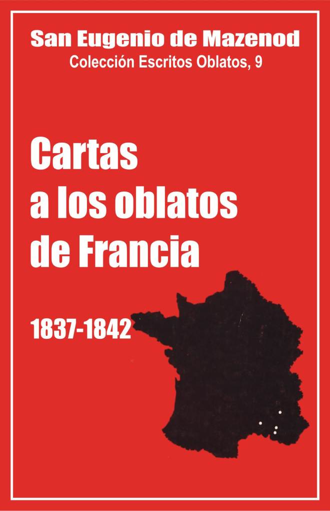

Palo Gordo
2019
Escritos Oblatos: - 01 - 02 - 03 - 04 - 05 - 06 - 07 - 08 - 09 - 10 - 11 - 12 - 13 - 14 - 15 - 16 - 17 - 18 - 19 - 20 - 21 - 22

SAN EUGENIO DE MAZENOD
Colección: Escritos Oblatos, 9
Traducido del Francés por
Santiago Rebordinos omi
Postulación General O.M.I.
Via Aurelia 290
Roma, 1985
Palo Gordo
2019
1837 - 1838 - 1839 - 1840 - 1841 1842
Introducción
He aquí otro lote de 185 cartas de San Eugenio de Mazenod escritas a los Oblatos de Francia [1] durante los años 1837-1842. Por primera vez en esta segunda parte de los Escritos Oblatos el número de cartas autógrafas, conservadas en su integridad, es mayor que el de aquellas de las que sólo nos quedan algunos extractos en Yenveux y en los primeros biógrafos del Fundador.
Si Yenveux sólo conservaba los párrafos de un tono más elevado o los textos esenciales para el comentario de las Reglas, el original por el contrario no oculta nada de lo "natural" tan característico del autor de estas cartas. Éste no podía, en efecto, en esas líneas trazadas con apuro y bajo la impresión de noticias a veces buenas y más a menudo malas, apenas recibidas ,evitar dejar transparentar sus emociones y sus estados de ánimo. Así por ejemplo se pueden percibir aquí o allí ráfagas de mistral [2] o días de clara bonanza en cartas finas y amables, llenas de afecto, de bromas y de humor [3]. No puede por otra parte evitar entrar en los menores detalles de la vida cotidiana, por ejemplo cuando en cartas al P. Guigues tiene que responder a 9 o 13 preguntas [4]. En esos casos necesariamente tiene que hacer alusión a personas, a lugares y a acontecimientos que su interlocutor adivinaba fácilmente, pero que nosotros conocemos menos hoy. Para hacer el texto más inteligible ha sido necesario multiplicar las notas históricas. Eso ha sido relativamente fácil para los años 1837-1839 de los que conservamos casi íntegramente el original del Diario del Fundador mantenido entonces con precisión. La tarea ha sido más ardua para los años 1840-1842, y el resultado peor, ya que sólo quedan algunas migajas del Diario en Yenveux y en los biógrafos. Las cartas de sus corresponsales son también más raras. Se las ha aprovechado, pero no han permitido dar respuestas a todas las preguntas que el lector se hará. Su curiosidad quedará a menudo insatisfecha.
Si generalmente no se han mencionado las faltas de ortografía que abundan en los extractos de Yenveux, convenía aquí, al trabajar sobre el original, señalar las más importantes, teniendo en cuenta el método de edición que ha sido anunciado en la página XVIII del primer volumen de los Escritos Oblatos. Además, el Fundador escribe a menudo de manera incorrecta los nombres de los lugares y de las personas. Corregimos siempre según la ortografía más segura del Registro de las tomas de hábito [5] cuando se trata de Oblatos, de la obra de A. Ricard [6] para el clero de Marsella, y de los diccionarios biográficos y topográficos más usados para otros nombres de personas o de lugares.
Como ya se observó en el volumen precedente, el Fundador escribe sobre todo a los Superiores. En este cuarto volumen de cartas a los Oblatos de Francia, 49 cartas van dirigidas al P. Courtès en Aix, 33 al P. Mille en N.-D, du Laus, 25 al P. Guigues en N.-D. de l’Osier, 20 al P. Tempier en el seminario de Marsella, 9 al P. Casimiro Aubert y 10 al P. Vincens, maestros de novicios, 9 al P. Semeria en Vico y 7 al P. Moreau, superior del seminario mayor de Ajaccio [7]. Hallaremos una decena de otros corresponsales a quienes el Fundador escribe por diversos motivos particulares, tales como Dassy, que se interesa demasiado por la arqueología (7 cartas), Bellon cuyas cartas poco frecuentes no satisfacen al afecto del Fundador (4 cartas), Ancel, Gignoux, Kotterer, Martin y Pélissier por asuntos de infidelidad y de apostasía (2 cartas a cada uno), Hermitte, J. J. Lagier y Rouvière (una carta a cada uno, sobre las misiones, la obediencia, etc.).
Principales acontecimientos de los años 1837 – 1842
El período que va de 1837 a 1843 marca un viraje en la vida del Fundador y en la historia de la Congregación. En efecto, Mons. de Mazenod es nombrado Obispo de Marsella en el consistorio del 2 de octubre de 1837 y toma posesión de la sede el 24 de diciembre siguiente. La Congregación se hace efectivamente misionera en 1841 con la partida del P. Daly para Inglaterra, el 2 de mayo, y la del P. Honorat y cinco compañeros para el Canadá, el 29 de septiembre.
Estos dos acontecimientos dejan, sin embargo, poca huella en las cartas del Fundador a los Oblatos de Francia. Apenas se encuentran en ellas algunas alusiones, pero se adivina su importancia por el cambio de tono que se constata en todas esas páginas. En 1841, hay alegría y una mayor seguridad en presencia de una familia que aumenta en número y se afianza [8]. En 1837, se ve una resignación poco contenida por un cargo aceptado contra su voluntad [9], resignación que se manifiesta en un estado de gran debilidad, hasta tal punto que tiene que ausentarse de Marsella, del 20 de mayo al 2 de agosto de 1837, para descansar y reponerse de las "fuertes sacudidas sufridas desde hace 6 ó 7 meses" [10].
Varios otros sucesos afectan también profundamente al Fundador y a la Congregación, pero pasan, como los dos primeros, casi inadvertidos en esa correspondencia: la muerte de Mons. Fortunato de Mazenod, el nombramiento del P. Guibert para el obispado de Viviers, la expulsión de los Oblatos de N.-D. du Laus y varios viajes largos.
El 22 de febrero de 1840 moría en el obispado, después de algunos días de enfermedad, Mons. Fortunato, obispo de Marsella de 1823 a 1837. Tenía 91 años. "La pérdida de este santo anciano ha afectado profundamente el corazón" del sobrino [11]. Sus cartas a los Oblatos no manifiestan nada de su dolor. Estamos seguros de ello, sin embargo, por el hecho de que suspendió su Diario durante cinco meses. Sólo lo abrió una vez, a principios del mes de abril, para copiar la carta de pésame del rey Luis Felipe y agregarle algunas reflexiones llenas de tristeza: "... me encuentro en una disposición de espíritu y de ánimo que no presta atención a nada y da infinitamente poca importancia a cuanto sucede aquí abajo... Mi pensamiento se hunde habitualmente en la tumba donde acabo de depositar los preciosos restos de mi venerable tío...".
El P. Guibert fue nombrado obispo de Viviers por ordenanza real del 30 de julio de 1841. Mons. de Mazenod lo consagró obispo el 11 de marzo de 1842 en la iglesia de Saint-Cannat en Marsella. A veces habla de este nombramiento en las cartas que siguen para alegrarse con los Oblatos por este honor, pero también para deplorar la pérdida para la Congregación de una persona tan preciosa en un momento en que las necesidades aumentan. "A pesar de la pérdida que este querido hijo pueda ocasionar a Córcega, escribe en su Diario, el 15 de agosto, y del vacío que dejará también en la Congregación, yo actuaría contra mi conciencia si me opusiera a su aceptación de la carga que el Señor le impone. Este sacrificio que haré a la Iglesia atraerá nuevas bendiciones sobre la Congregación [12].
La expulsión de los Oblatos de N.-D. de Laus en 1841-1842 causó mucha pena al Fundador y a sus hijos. Se perdía así un santuario mariano importante y la segunda casa de la Congregación donde varios Oblatos habían vivido como novicios o sacerdotes misioneros. Además el apostolado en ese lugar y en las diócesis vecinas había sido coronado siempre con el éxito.
El clero de Gap, menos escaso que en 1819-1820, deseaba sin embargo entrar en posesión de un santuario ya floreciente y hacerse cargo de la obra de las misiones. Algunos sacerdotes lanzaron una petición entre el clero sobre el particular. Mons. de La Croix d’Azolette, obispo de Gap de 1837 a 1840, juzgaba sin embargo favorablemente a los Oblatos, que trabajaban "de una manera activa y desinteresada" [13]. Los tranquilizó diciéndoles que no temieran nada bajo su administración, pero al mismo tiempo buscó contentar al clero local, fundando en 1838 una Sociedad de misioneros diocesanos.
Fue Mons. Rossat quien, al poco tiempo de su llegada a Gap, invitó a los Oblatos a retirarse, y luego los obligó a salir en 1841, con miras a confiar el santuario y las misiones a la Sociedad de misioneros diocesanos, y convertir el convento en un refugio para los sacerdotes ancianos. Los Padres salieron en el otoño del año 1841 y el P. Mille el 15 de abril de 1842 [14]. Su salida "fue acompañada de emociones inexpresables, escribe Mons. Jeancard. Llegado el momento doloroso, se vio a esos pobres religiosos postrarse por última vez al pie del altar de María, que les recordaba tantos favores recibidos; luego, terminada su larga oración, besar, mojándolas con sus lágrimas, las losas del santo lugar y, con el bastón de misionero de los Alpes en la mano, alejarse tristemente, no sin echar de cuando en cuando una mirada de pesar y de amor sobre esos muros sagrados por largo tiempo testigos de su celo por las almas y de su filial devoción a la Madre de Dios... Se fueron acompañados por los deseos y bendiciones de los fieles y de buen número de sacerdotes impresionados por su humilde y generosa resignación" [15].
Durante los años 1837-1842 Mons. de Mazenod hizo varios viajes. Realizó el primero, del 28 de mayo al 2 de agosto de 1837, para descansar, visitando algunas casas oblatas y a su hermana en St-Martin-des-Palliers. Hizo el segundo a París, del 14 de noviembre al 23 de diciembre de 1837, para prestar juramento al rey. El tercer viaje le llevó a Turín y Biandrate, Novara, Milán, Stresa, Billens, de N.-D. de l’Osier y N.-D. de Laus, del 9 de junio a comienzos del mes de agosto de 1839. El fin principal de ese viaje era obtener de Mons. d’Angennes, arzobispo de Verceil, una reliquia de san Serenus, obispo de Marsella en el siglo VI, cuyo cuerpo se conservaba en Biandrate. Hizo igualmente el cuarto viaje al norte de Italia, a Suiza, a N.-D. de l’Osier y a Viviers, desde fines de abril al 28 de junio de 1842; y el quinto a Argelia, del 22 de octubre al 13 de noviembre de 1842, con motivo del traslado de una reliquia de san Agustín, conservada en Pavía y llevada a Argelia por Mons. Dupuch.
El P. Tempier, su corresponsal habitual en esa clase de circunstancias, acompañó al Fundador en cuatro de esos cinco viajes; eso explica por qué se encuentran ahí apenas algunas alusiones en las cartas a los Oblatos [16]. Pero en la primavera de 1842 el P. Tempier quedó en Marsella. Eso nos procuró 9 cartas de las más largas de este volumen. Conviene notar aquí su importancia.
El Fundador emprendió ese viaje al norte de Italia por invitación del caballero Collegno para venerar el santo Sudario de Turín, expuesto solemnemente con motivo del matrimonio del duque de Saboya que llegaría a ser más tarde el rey Víctor Manuel.
No faltaban invitaciones de esa clase al Obispo de Marsella, pero, por falta de tiempo, sólo podía aceptarlas raras veces. Esta vez lo hizo por afecto a su hermana y a su sobrina Cesárea. Puede uno admirarse al verle consagrar a su familia carnal dos meses de su tiempo precioso. Pero lo que estaba en juego valía la pena. Era necesario recuperar física y moralmente a su hermana y a su sobrina duramente probadas por la muerte reciente de Luis de Boisgelin, fallecido en los Jesuitas de Aviñón el jueves santo, 24 de marzo. Eugenia perdía así el tercero de sus cinco hijos, muerto como los otros en la flor de la edad [17]. Mons. de Mazenod no se sentía, sin embargo, del todo libre de remordimientos, al ceder de este modo a las necesidades del corazón. Explica varias veces su posición al P. Tempier: "He emprendido este viaje sólo por caridad y un justo afecto por mi hermana y mi sobrina, escribe el 2 de mayo. Lejos de prometerme la menor satisfacción, he tenido que hacerme violencia para emprenderlo, así el disgusto que ahora siento estaba calculado de antemano y no me contraría en absoluto. En todo caso, podría ser para mí un motivo de merecimiento..." Escribe también el 21 de mayo: "Te aseguro que he estado tentado de acortar desde Turín a Stresa para evitar todas las molestias de esa prolongación del viaje, pero comprendí que ese cambio de dirección contrariaría a las personas a las que tenía el deseo de distraer".
No obstante, uno puede preguntarse si Mons. de Mazenod no hizo con cierta alegría no confesada, ese viaje a Turín, Milán y Venecia, es decir, a esos lugares que le traían tantos recuerdos de su tierna juventud. La descripción de las iglesias que descubre más bellas que en Francia, la hospitalidad y la amabilidad de las personas que encuentra, algunas de las cuales, conocidas tiempo atrás en el colegio de los nobles de Turín, han llegado a ser "grandes de la corte, generales, grandes dignatarios de la Corona" [18], el interés que pone en la vida civil y religiosa, en las ceremonias contadas con los menores detalles [19], todo eso manifiesta un amor a Italia, y sobre todo, un apego a ciudades que le son queridas, porque encuentra en ellas un poco de sí mismo y de los sufrimientos de su infancia. Su visita de algunos días a Venecia, la primera desde su estadía en ella de 1794-1797, le hace escribir páginas conmovedoras. El 26 de mayo visita el barrio de San Silvestre, en el que él y su hermana habían vivido y la iglesia del mismo nombre, donde fue enterrado su tío-abuelo, el sacerdote Andrés de Mazenod. Fue allí también donde se confesó con el párroco Milesi que le presentó Don Bartolo Zinelli. "Dejo a los libros la descripción de la belleza de esta ciudad, anota en su Diario el 26 de mayo; sólo manifiesto aquí mis impresiones, en otro orden de cosas. Cómo no estremecerse ante los lugares que te recuerdan los primeros años de tu adolescencia, las ayudas que la divina Providencia me prodigó en esa época en que mi inteligencia comenzaba a desarrollarse. Cómo el corazón no va a latir ante el recuerdo de esos hombres admirables que consagraron sus momentos de ocio a mi instrucción religiosa, y que me formaron en la virtud. Se admiraban al oírme llamar por su nombre a cada uno de los que me habían acogido en mi infancia, al verme citar todas las particularidades de su vida, al mostrar el lugar que ocupaban en las casas que habíamos habitado juntos, y al enumerar de alguna manera todo el bien que había recibido de ellos. No se podrá comprender qué huellas tan profundas han dejado en mi corazón los beneficios a los que debo el poco bien que hay en mí, que tiene su fuente en esa primera educación y en la dirección que esos hombres de Dios supieron dar a mi espíritu y a mi joven corazón.
¡Oh bienaventurado Zinelli! ¿Qué hubiera sido yo sin ti? ¡Cuántas acciones de gracias debo dar a Dios por haberme procurado el conocimiento y el afecto de un personaje tan santo!...
He celebrado la misa en San Silvestre, en el mismo altar en el que había recibido tantas veces el cuerpo de Jesucristo en mi infancia; pues me permitían comulgar cada ocho días. No podré expresar todo lo que he sentido durante el santo sacrificio, uniendo esos dos extremos de mi existencia: mi infancia y mi estado actual de pontífice".
Principales temas desarrollados
Estos acontecimientos tejen la tela de fondo de este volumen, pero algunos temas se repiten frecuentemente e ilustran de algún modo sus páginas: las misiones populares, la obediencia, las "apostasías", la muerte de los mejores Oblatos, el reclutamiento y la formación de los miembros.
Las misiones parroquiales constituyen verdaderamente, como desde el inicio de la Congregación, el apostolado principal de los Oblatos. Pocas cartas no hablan de ellas [20]. Es el mismo Fundador quien forma cada año la mayoría de los equipos misioneros, trasladando según las necesidades a los Padres de una casa a otra. Si en una carta al P. Pélissier, el 30 de mayo de 1839, recuerda que los Oblatos son enviados "a cuanto la obediencia pueda prescribir", repite sobre todo con fuerza que el trabajo principal del Oblato, "el gran ministerio propio y distintivo" de su vocación, es la misión, durante la cual una preocupación debe predominar: instruir. "¿No saben que se necesita precisamente una misión para instruir a un pueblo extraviado, escribe al P. Courtès el 11 de octubre de 1837, pues solamente una misión puede atraer al pueblo a la iglesia? Por más que el Señor Párroco predique, nadie, fuera de algunas mujeres, irá a escucharlo. ¿Está permitido no saber estas cosas?". "Instruid, instruid, la ignorancia es la plaga más grande de nuestro tiempo" [21], "instrucción sobre el dogma, instrucción sobre la práctica de la vida cristiana" [22], tales son las expresiones que brotan a menudo de su pluma.
Exige que no se cambie nada del ceremonial marcado por las Reglas y que se lo tenga al tanto de todo [23]. Se maravilla siempre de los frutos milagrosos de las misiones y agradece a Dios que los Oblatos sean los instrumentos de tantas gracias de conversión [24].
Las estadísticas demuestran que se trabaja mucho. Conocemos con precisión las misiones de 1837 y de 1842. Durante la campaña de 1836-1837, los Oblatos predicaron 22 misiones o retiros, y 65 en 1841-1842 [25]. Este aumento del número de misiones se explica por el aumento del personal. De 1837 a 1843 las casas oblatas disminuyen en una unidad, 7 en lugar de 8 [26], pero el número de Oblatos pasa de 39 a 68, de los cuales 11 son Hermanos coadjutores, 13 Hermanos escolásticos y 44 Padres [27]. Si se excluye la quincena de Padres y Hermanos, ocupados en los dos seminarios y en el noviciado, o salidos para América e Inglaterra, se puede apreciar el trabajo extraordinario de los otros. Los equipos de las seis casas de misioneros predicaron, en 1841-1842, alrededor de 10 misiones o retiros cada uno.
En las cartas que siguen se encontrará materia para un artículo bien fundamentado sobre la obediencia oblata, su importancia, su naturaleza, la obligación de no presuponer permisos, de aceptar sin contestar las decisiones de los superiores, de seguir sin modificar los artículos de la Regla sobre las ceremonias previstas para las misiones, etc..
Pocos Padres escapan a las reprimendas del Superior General, quien interviene, sin morderse la lengua, no sólo ante aquellos cuya tibieza u orgullo llevan a la apostasía, sino también ante los más fervorosos, como el P. Casimiro Aubert, que se permiten abreviar un período de descanso impuesto por la autoridad. "...Conociendo el horror que yo tengo de las interpretaciones, le escribe, no deberías permitírtelas contra una orden positiva que era conocida perfectamente por ti. Las razones que alegas para excusarte no son admisibles..." Y para atenuar la pena que tales palabras podrían provocar, el Fundador termina esta carta del 14 de octubre de 1837 con estas palabras: "Adiós, querido y tierno hijo, te abrazo para probarte que no perderás lo que tú quieres llamar mis buenas gracias, aun cuando te hago algunos reproches, pues después de todo, mi buen hijo, tú nunca has pecado más que por exceso".
Cuando se entera que el P. Dassy, hombre de confianza por excelencia del Fundador y entonces uno de los buenos predicadores oblatos, se ocupa demasiado de la arqueología y arrastra consigo a la comunidad de N.-D. de l’Osier, Mons. de Mazenod le escribe: "Aunque tengas que colocarme, mi querido amigo, en el número de los hombres atrasados, no temeré decirte que estoy lejos de compartir tu entusiasmo por la ciencia arqueológica que tú elevas tan alto. Comprendo que un individuo se ocupe de ella en los momentos de ocio, pero querer hacer de ella un tema de regla e iniciar en ella a toda una comunidad, eso me parece, aunque te desagrade, un poco ridículo, y si se ha hecho, ha sido sin mi consentimiento... Tu carta ha suavizado un poco el golpe, sin embargo los hechos subsisten y avoco la causa al tribunal que se quiera escoger en cualquiera Orden o Congregación. Yo desafío a que se encuentre uno solo que no desapruebe firmemente y no vea como inexplicable un desprecio tal de la autoridad que la conciencia e incluso la simple conveniencia obligaría a consultar".
El P. J.J. Lagier, moderador de los escolásticos, luego director en el seminario mayor de Ajaccio, atrajo sobre sí en dos ocasiones las peores reprimendas. Muy descontento de un hermano al que quería expulsar, el P. Lagier, impulsado por una fuerte emoción, escribía al Fundador: "Si Ud. no hace lo que pretendo, me veré forzado a salir con los otros hermanos e ir a entregarle los poderes..." Recibió como respuesta, el 14 de diciembre de 1841, una carta sosegada pero enérgica que comenzaba con estas palabras: "Informarme de lo que Ud. sepa, darme a conocer su modo de pensar, está bien, es incluso su deber, pero mi querido Padre, era necesario dejarme el juicio de una causa de la que a Ud. sólo le pertenece informarme; pronunciarse como lo ha hecho, antes de saber lo que yo deseaba, es una cosa de tan mal ejemplo que nunca habría creído posible que Ud. se lo permitiera. Y ¿a dónde llegaríamos si cada uno... quisiera imponer su modo de pensar al superior...?" En el otoño del año 1842 el P. Lagier había recibido una obediencia para el seminario mayor de Ajaccio, mientras que él prefería quedarse en el seminario mayor de Marsella, desde donde dirigía a varias religiosas. Se quejó de ello al P. Tempier. El Fundador leyó esa carta y la comentó al P. Moreau con estas palabras: "La lectura que acabo de hacer de una de sus cartas... me muestra que se dedica más a la dirección de algunas devotas, que cree guiar por las vías de una alta perfección y con las que pierde un tiempo precioso, que al ministerio que yo le he confiado. Habla de la voluntad de Dios como si pudiera serle manifestada por otra vía que la de sus superiores legítimos..."
Los superiores también son reprendidos con vigor ante la menor falta. Se podrían mencionar aquí, a título de ejemplos, varios textos interesantes, especialmente a los Padres Guigues y Mille, los más inclinados a la independencia, pero no anticipemos y dejemos al lector el gusto de descubrir esas perlas [28].
Un tercer tema se repite también como un estribillo en este volumen: las "apostasías". El Fundador explica el 9 de enero de 1837 por qué él llama apóstatas a todos los Oblatos que hasta ese día han obtenido dispensa de sus votos: "…El poder de dispensar los votos es una espada de doble filo que mata ordinariamente al individuo para salvar a la familia. Todos los miembros de nuestra Congregación que han sido dispensados hasta hoy son, en un sentido muy verdadero, verdaderos apóstatas, porque no ha habido ni uno solo que haya tenido razones valederas que presentar, y no han sido separados de la Congregación, más que poniéndose en situación de ser expulsados; falta enorme, de la que serán responsables mientras no hayan puesto el medio eficaz para repararla... ¡Cuántas ilusiones funestas sobre este punto!, escribe aún en esa carta al P. Martin. Protestaré ante todos los hombres y ante Dios contra esas apostasías, hasta mi último suspiro y más allá, pues cito ante el tribunal de Dios a todos los que se han vuelto culpables..."
Los abandonos durante los años 1837-1843 se elevaban, sin embargo, solo a 9 (6 Padres y 3 Hermanos), mientras que se contaban 14 en 1831-1836. Pero alentado por el P. Albini, que aconsejaba purgar la Congregación "de todo lo que ella alimentaba de malo", el Fundador no es habitualmente tierno con aquellos Padres y Hermanos infieles, porque los cree más culpables aún que los que les precedieron. En efecto, la formación dada en el noviciado por el P. Casimiro Aubert, en 1837-1841, es más cuidadosa y más exigente. Solo veintinueve novicios entre 67 llegan al fin del noviciado y pronuncian los votos [29]. El descontento del Fundador proviene también del hecho que considera como verdaderos traidores a 3 de esos 9 apóstatas. En efecto, los Padres Gignoux en 1839, Pélissier en 1840 y Ancel en 1841, los tres nativos de la diócesis de Gap, dejan la Congregación en el momento en que ella es prácticamente perseguida en esa diócesis por algunos sacerdotes que hacen firmar una petición y lanzan una campaña contra los Padres de N.-D. de Laus. "Nada más justo, mis queridos hijos, escribe a los Padres de Vico, el 8 de enero de 1841, que la indignación que me manifestáis por todas esas horribles apostasías que afligen vuestras almas como también la mía. Sería el tiempo de que el demonio cribara en vano nuestro grano y que en el día de la prueba ya no pasará para ser arrojado con la paja en las llamas eternas. Acabo también hoy de pronunciar la fatal sentencia que entrega a satán a ese culpable desertor [Ancel] que ha roto el primero los lazos de la unidad..." [30]
Mientras los menos fervorosos se van o se portan de modo que son expulsados, el Señor llama hacia sí a los más virtuosos. "Cuanto más bueno es un sujeto...tanto más me inquieto, porque la muerte elige sus víctimas entre lo más selecto", exclama el Fundador en carta del 14 de marzo de 1837 al P. Courtès.
Entre 1837 y 1842, cuatro Padres y un Hermano van a engrosar "la comunidad oblata del cielo" [31], todos ellos religiosos ejemplares y personas de valor. El P. Richaud (1804-1837), muerto accidentalmente en Córcega el 7 de enero de 1837, era profesor en el seminario mayor de Ajaccio. "¡Cómo, escribe el Fundador al P. Guibert, no echar de menos a un sacerdote tan bueno, que ha sido educado en mi seno desde su más tierna infancia, que acababa recientemente de dar a la familia una prueba tan hermosa de dedicación proponiéndose para ir contigo y tus compañeros a trabajar en la regeneración de Córcega, que estaba dotado de un carácter tan suave, tan complaciente, con el que era tan agradable vivir!" [32] El Hermano Morandini (1816-1838), muerto el 27 de diciembre de 1838 en Aix, era considerado uno de "los más perfectos Oblatos", "un ángel de virtudes". El Fundador escribe en su Diario, el 28 de diciembre de 1838: "Santa muerte de nuestro querido Hermano Morandini... Es una pérdida sensible para la Congregación que esperaba grandes servicios de este excelente miembro que aunaba con virtudes brillantes, muchos talentos, el carácter más amable, y un apellido que le habría facilitado, por el respeto que inspira, el ejercicio del ministerio que habría realizado probablemente en Córcega su país de origen". El 20 de mayo de 1839 ocurre la muerte del P. Albini (1790-1839) en Vico. ¡Cuántas páginas hermosas se hallan en los escritos del Fundador sobre este Padre al que consideraba entonces como "el hombre más útil de nuestra congregación, el hombre excepcional para el país que le había tocado en herencia" [33]. Desde esta muerte el Fundador exigirá con fuerza que todos los Oblatos escriban sus recuerdos al morir algún compañero para redactar sobre cada uno una noticia necrológica [34]. El P. Mie, (1768-1841) murió el 10 de marzo de 1841. Fiel compañero del Fundador, con el P. Tempier, desde la fundación de la Congregación, asistente general desde 1818 hasta su muerte, el P. Mie fue un misionero infatigable. Director en el seminario mayor de Marsella y canónigo desde la muerte del P. Suzanne en 1829, su presencia entre los seminaristas y los escolásticos fue "un motivo perpetuo de edificación" [35]. El P. Bathelemy Paris (1804-1841) murió el 11 de abril de 1841, después de unos años de sufrimientos aceptados con amor. Profesor muy apreciado en el seminario de Marsella e hijo afectuoso del Fundador, le escribía a menudo; éste anota sobre las últimas cartas: "bueno, excelente", "sentimientos conmovedores", etc. [36].
Para reemplazar a los apóstatas y a los difuntos, reforzar los equipos de misioneros en Francia y establecerse sólidamente en Inglaterra y en Canadá, hacen falta sujetos. El Fundador invita sin cesar a los Padres, particularmente a los de Córcega y de N.-D. de l’Osier, a interesarse por el reclutamiento. No pierde ninguna ocasión para recordarlo. Vela igualmente para mejorar la formación que en 1837-1842 fue objeto de una reforma general. En 1840 se abre un juniorado en N.-D. de Lumières para acoger a los jóvenes que siguen sus estudios secundarios con miras a entrar al noviciado. Fue, no obstante, sin entusiasmo, para salir del paso, como Mons. de Mazenod autorizó este ensayo. Escribe en su Diario, el 13 de agosto de 1840: "Consiento que se intente tomar algunos estudiantes ya que el noviciado no se alimenta, pero no disimulo mi poca confianza en un medio tan largo y aleatorio para reclutar. No me está permitido a mi edad presumir que veré los resultados.
En 1841 el noviciado abandona definitivamente Aix y Marsella para fijarse en N.-D. de l’Osier, donde permanecerá hasta 1903. Por primera vez los novicios iban a ser formados lejos de la influencia inmediata del Fundador y del P. Tempier [37]. Es el P. Vincens, hombre de acción y uno de los mejores predicadores oblatos de entonces, quien es nombrado maestro de novicios. Los Oblatos, estudiantes de teología, abandonan igualmente el seminario de Marsella en 1842 para seguir los estudios en N.-D. de l’Osier. Esta última medida, inspirada sin duda por la preocupación de disminuir un poco el trabajo de los directores del seminario de Marsella, poco numerosos después de la muerte de los Padres Mye y Paris y muy ocupados por los seminaristas cuyo número aumentaba, no fue feliz y no duró mas que un año.
Al aceptar dejar partir al P. Guibert para el obispado de Viviers, el Fundador había escrito: "Dios tendrá en cuenta el sacrificio que la Congregación hace por la Iglesia", "pongamos nuestra confianza en Dios" [38]. El Señor, en efecto, no se dejó vencer en generosidad. El noviciado acogió a 17 novicios en 1841 y a 15 en 1842, de los cuales más de la mitad hicieron los votos. Mons. de Mazenod escribe al P. Courtès, el 23 de agosto de 1842: "El Señor nos ha concedido [sujetos] con una liberalidad que no sabremos agradecerle bastante. Nuestro deber para corresponder a este favor insigne es no descuidar nada para formarlos como religiosos capaces de servir a la Iglesia y a la Sociedad. Nos está permitido en los momentos de sufrimiento prever un porvenir bastante próximo en el que podremos actuar con más desahogo. Es un motivo suficiente para animarnos y darnos paciencia".
Las últimas cartas de este volumen, como un último bocado bueno, nos dejan pues un sabor de esperanza que el futuro no desmentirá; la Congregación de los Oblatos de María Inmaculada crece, se fortalece y evangeliza ya a los pobres en varios países.
Yvon Beaudoin o.m.i.
599. Al Señor Guigues, superior en Notre-Dame de l’Osier, cerca de Vinay, Isère
Enfermedad del Fundador. El P. Dassy volvió a N.-D. de l’Osier. Numerosas misiones previstas para 1837. No se debe llamar al clero diocesano para completar nuestros equipos de misioneros. Enviar cuanto antes al P. Gignoux a N.-D. de Laus.
L.J.C. et M.I.
Marsella, 2 de enero de 1837
No he podido aprovechar, mi querido Guigues, la partida del P. Dassy, para escribirte unas palabras, lo hago hoy; puedo tranquilizarte sobre el estado de mi salud que parece afianzarse de día en día [39]. Sólo me queda un poco de dolor en el pecho, y debilidad en el órgano de la voz, pero aún no salgo, y hace dos meses que estoy atrapado; feliz de verme liberado a este precio. Ves que he mantenido la palabra, enviándote al P. Dassy [40] como lo había prometido, sabes que no soy alguien que bromea cuando se trata de intereses serios, pero deseo que no se pongan trabas a mis operaciones que se tornan muy difíciles de combinar por razón de los lugares y sobre todo de las personas eminentes que hay que tratar con miramientos. Puedes juzgar de ello por los mohines que se hicieron con ocasión de la ausencia momentánea del P. Dassy.
Vamos a hacer proezas este año. Ha sido necesario hacer acto de presencia por todas partes; para ello hemos tenido que convocar a todo el personal posible [41]. Dos sacerdotes novicios saldrán por turno [42]; para completar la obra hemos tenido incluso que recurrir a un sacerdotes de nuestros amigos [43], quien irá con uno de nuestros equipos. Esta asociación no tiene los mismos inconvenientes que la que tú consentiste con un sacerdote de la diócesis de Grenoble. En nombre de Dios no hagas más eso. Si sacerdotes celosos quieren hacer misiones, que las hagan cuando quieran, pero nada de amalgamas, por favor. Lo menos que podemos pedir es que, al recoger el fruto de nuestros sudores, no se nos entristezca con vejaciones de ese tipo. No tenemos la misma libertad, la misma facilidad, cuando extraños vienen a mezclarse en nuestros asuntos. Eso perjudica a la unidad, a la abnegación y al orden. Me opongo absolutamente a ese modo de obrar. No hubieras debido consentirlo sin consultarme antes. Es una falta que puede tener consecuencias. Si no sois bastante numerosos para ir a regiones con mucha población, limitaos a las pequeñas aldeas, pero id solos; es la práctica que se estila en todas las corporaciones. Estoy a mil leguas de querer hacer excepciones a esta norma tan sabia. Aquel a quien yo he agregado a nuestros Padres en estas regiones es como uno de los nuestros, incluso ha sido llamado a nuestra vocación, no es un extraño, no tengo más que nombrártelo, es Meyer; basta con lo dicho sobre este punto.
Reitero el urgente pedido de que el P. Gignoux vaya a Laus, cuando termine la misión que ha emprendido. El P. Marcellin lo espera para salir, y la misión en la que debe participar en Fontvieille ya estará comenzada cuando él llegue, lo que es un inconveniente; pero al menos, importa que no esté adelantada. Esta misión comenzará el 8 del actual; por lo que comprendes que hay que apurarse.
Te dejo, pues no puedo ya hacer funcionar a mi pluma, es un sufrimiento de más. Adiós.
+ Car. Jos. Eug., obispo de Icosía
600. [Al P. José Martín, en Billens, Suiza]
Reflexiones sobre los religiosos infieles a su vocación. Motivos que invocan para salir y gravedad de su decisión.
Marsella, 9 de enero de 1837
En medio de los consuelos que me procura la visión del bien realizado por nuestro pequeño número, tengo el dolor de ver que el demonio nos criba, y que en medio del grano agitado por la criba hay granos bastante mal alimentados, bastante desecados para pasar y ser separados de la era del Padre de familia [44]. ¡Cuántas ilusiones funestas sobre este asunto! Protestaré ante todos los hombres y ante Dios contra esas apostasías, hasta mi último suspiro y más allá, pues cito ante el tribunal de Dios a cuantos se han vuelto culpables. Habría que escuchar a san Ligorio [45] sobre este tema; tengo sus Memorias ante los ojos para consolarme y fortalecerme. Lo más triste es ver que Dios es ofendido y ofendido grandemente, y que sin embargo se han cegado hasta tal punto que permanecen tranquilos y sin ningún remordimiento, en un estado habitual de oposición a sus deberes esenciales.
Sobre los pensamientos contrarios a la vocación, si se tomara el trabajo de consultar a la teología, se conocería en qué ilusión se mueven cuando se imaginan poder vivir sin pecado, entreteniéndose voluntariamente en ideas y proyectos contrarios al estado en el que uno se ha comprometido con voto. No está ya permitido detenerse voluntariamente en pensamientos y deseos contrarios a los votos emitidos, como no lo está respecto a los pensamientos y deseos contra el amor de Dios y contra el sexto mandamiento.
Convenzámonos, dice el beato Ligorio, que la tentación contra la vocación es la más peligrosa que nos puede presentar el demonio, a causa de las consecuencias que se siguen de ella; por eso todos pedimos cada día la perseverancia en la vocación durante la visita al Santísimo Sacramento y a la Santísima Virgen.
Se equivoca uno groseramente, si se excusa a sí mismo de esa clase de pensamientos, so pretexto de que se le puede dar la dispensa. Que se sepa bien que esa clase de dispensas sólo pueden liberar al sujeto en conciencia en el caso de que razones graves que no existían en el momento de la profesión, y que el sujeto no preveía, hayan aparecido de golpe y le hagan imposible cumplir sus compromisos. Y aun en ese caso, el sujeto sólo debe recibir la dispensa con pesar y con el deseo sincero de ver caer el obstáculo que le impide quedar en la Congregación a la que estaba ligado, obstáculo que se supone siempre independiente de su voluntad.
Cuando el Sumo Pontífice dispensa a un religioso de sus votos, supone que existen tales razones, y deja a la conciencia del individuo el pesar hasta qué punto son válidas. En esta clase de dispensas, Roma piensa ante todo en liberar a las Sociedades de miembros que ya no les pertenecen de corazón; por lo demás, ella los abandona a su conciencia. Pero si el religioso se ha puesto por su culpa en situación de ser expulsado, no es por ello menos responsable ante Dios de la violación de las obligaciones cuya dispensa ha sido provocada por su conducta culpable.
... El poder de dispensar los votos es una espada de doble filo que mata ordinariamente al individuo para salvar a la familia. Todos los miembros de nuestra Congregación que han sido dispensados hasta hoy son, en un sentido muy real, verdaderos apóstatas, porque no ha habido ni uno que haya tenido razones válidas que presentar, y sólo han sido separados de la Congregación al ponerse en situación de ser expulsados; falta enorme, de la que serán responsables mientras no hayan puesto el medio eficaz de repararla [46]...
La Regla pesa, se dice. Pero la Regla de hoy es la misma que el religioso ha conocido durante su noviciado, y la que se ha comprometido a observar. De verdad ¿se puede alegar esa razón a dar? Que el religioso vea si se atrevería a presentar esta razón ante el tribunal del Soberano Juez. Los simples fieles podrían decir otro tanto sobre los mandamientos de la Iglesia y aun sobre los preceptos del decálogo. Pero ése ha sido siempre el pretexto de todos los religiosos laxos, de todos los apóstatas. Que ese religioso sea más fiel y entonces sentirá la verdad de esta palabra del Salvador: Jugum meum suave est et onus meum leve! [Mt. 11,30]
Algunos religiosos se atreven a decir que sólo han hecho su oblación con la idea de salir un día de la Congregación. ¡Qué horror! Que estudien la teología. Verán que no está permitido poner condición ni restricción mental alguna a la emisión de los votos, y que la fórmula de profesión que la boca pronuncia debe ser hecha sinceramente y desde el fondo del corazón. Sin lo cual, todo es una mentira, una hipocresía, la profanación de un acto santo y religioso.
¿Estará permitido burlarse así de Dios y de los hombres, mirar como una ceremonia inútil y ridícula ese acto solemne realizado en presencia de Jesucristo ante los santos altares? ¿Qué hay de sagrado en la tierra, si los votos, los juramentos pronunciados ante Jesucristo, aceptados en su nombre por la Iglesia, no expresan lo que significan? Me pierdo ahí...
Haré un bien mayor en otra parte, se dice. Con ese pretexto se disfraza lo que hay de criminal en tales proyectos. ¿Hasta cuándo se tendrán ojos para no ver? Los sacerdotes que son libres buscan comunidades religiosas, porque ven que todos los esfuerzos del celo, cuando uno está sólo y aislado, no conducen a nada; ¿y los que tienen la dicha de vivir en Congregación desearían salir para hacer mayor bien? Vemos agregarse a nosotros a sacerdotes que abandonan el mundo, con el intento de santificarse ellos mismos, trabajando por la salvación de los demás; renuncian a esa libertad que otros tanto estiman, y que todos los santos consideraban, en cambio, tan peligrosa, ¿y los que tienen la inestimable dicha de pertenecer a una Sociedad, que protege su debilidad, alimentarían la idea culpable de rehacer lazos ya rotos? He ahí lo que yo no podría comprender. Pero la causa de todos esos deseos criminales y de esa inquietud no puede ser disimulada de forma que no se la pueda descubrir. Es porque uno se cree algo, se imagina que tiene medios para triunfar; es porque uno se ha dejado atrapar por el encanto de elogios exagerados, porque cuenta consigo mismo, y porque desea ser más libre para obrar a su estilo, para hacer valer sus talentos, siempre bajo el pretexto falaz de la gloria de Dios. No se dan cuenta que es una trampa del amor propio que, al sentirse molesto, contrariado por la obediencia, hace todo lo que puede para hallar una posición donde pueda desarrollarse. Entonces uno no se atiene ya a la decisión de los superiores, no se escuchan sus consejos, se busca consultar a extraños, y se quiere seguir consultando hasta que se encuentre a alguien que entre en sus puntos de vista y es ese el que tiene la razón; hasta ahí lleva el amor propio y la pasión de hacer la propia voluntad.
601. [Al P. Guibert, en Ajaccio]
Dolor al conocer la muerte accidental del P. Richaud en Córcega. Sumisión a la voluntad de Dios.
[Marsella], 11 de enero de 1837
Acabo de ofrecer el santo Sacrificio por ese buen Padre cuya muerte me anuncia tu última carta [47]. Lo lloraré toda mi vida como a aquellos que le precedieron en la eternidad, de cuya pérdida estoy inconsolable. ¡Cómo no añorar a un Padre tan bueno, que ha sido educado en mi seno desde su más tierna infancia, que acababa recientemente de dar a la familia una prueba tan hermosa de dedicación al proponerse a sí mismo para ir contigo y tus compañeros a trabajar en la regeneración de Córcega, que estaba dotado de un carácter tan suave, tan complaciente, con el que era tan agradable vivir! Pero para qué alimentar nuestro dolor cuando, para reprimirlo, sólo sería necesario centrar el pensamiento en la recompensa que el Señor habrá concedido a su fidelidad y a todo el bien que él deseaba hacer. ¡Dios mío! Tendría que ser mucho más perfecto de lo que soy para no lamentar nuestra pérdida considerando la dicha que recibirá, ya que él ha sido llamado cuando marchaba por el camino de la santa vocación que lleva infaliblemente al cielo, según la promesa de la Verdad encarnada. Esta afirmación es para mí un artículo de fe. Tengo la confianza de que el santo sacrificio que he ofrecido al recibir tu carta habrá completado el pago de las deudas de nuestro querido difunto.
Comparto todo tu dolor... ¡Estaba tan bien en su lugar! ¡Te era tan necesario! ¡Era un alivio para mi espíritu el sentirlo ahí contigo! Contaba con su prudencia, con su corazón, con su sensatez, con su espíritu del orden, con su dedicación. ¡Qué pérdida horrible!
Confieso mi debilidad y mi fragilidad; un golpe así me aterra; mi alma está abismada de dolor. Me ha venido la tentación de quejarme a Dios porque concede demasiado pronto una recompensa de la que uno tiene tiempo de disfrutar durante toda la eternidad, mientras que nos quita los medios para hacer aquí abajo lo que Él nos manda. Desapruebo lo que hay de humano en este pensamiento; es un grito involuntario del dolor. ¡Que se cumpla la voluntad de Dios, su sola voluntad! Resignémonos sin murmurar a cuanto a Él le plazca disponer de nosotros, de los nuestros, de las obras que nos están confiadas, de nuestra misma Congregación.
Adiós. Os estrecho a todos contra mi corazón, os abrazo, os bendigo, estoy con vosotros con el pensamiento, con el corazón, con todos los sentimientos de mi alma.
+ C. J. [E] de Mazenod, ob. de Icosía.
602. Al Señor Courtès, sacerdote, plaza de las Carmelitas, en lo alto del Paseo, en Aix, Bocas del Ródano.
La salud de Mons. de Mazenod va mejor. Poderes que los Obispos solían conceder a los Padres en misión. Buenas noticias de las cinco misiones que los Oblatos predican al mismo tiempo. Mons. Dupont invita a los Oblatos a establecerse cuanto antes en N.-D. de Lumières.
L.J.C. y M. I.
Marsella, 20 de enero de 1837 [48].
Me ha conmovido mucho, mi querido P. Courtés, el interés que ha querido manifestarte por mi salud el Sr. Jaquemet [49]; te ruego agradecerle de mi parte, en la primera oportunidad que tengas. Ando mucho mejor, aunque no esté aún del todo restablecido.
Me pides una nota sobre los poderes y los permisos que nos eran concedidos en misión. Nuestros Señores Arzobispos, como todos los otros Obispos en las diócesis en las que se realiza este santo ministerio, nos han concedido siempre los poderes más amplios.
Ante todo, todos los misioneros tenían la facultad de absolver de todos los casos reservados, aún los casos especialmente reservados, los poderes de cambiar las promesas, el de restituir el jus petendi [50] y el de bendecir las cruces, medallas y cuadros.
El superior de cada misión estaba especialmente delegado para rehabilitar los matrimonios, por sí mismo o por alguno de los misioneros al que autorizase para ello, para dispensar de la publicación de los bandos, no solamente para los casos de rehabilitación, sino también para los contraídos ante el oficial civil, y en caso de urgencia, por ejemplo si se tratase de hacer cesar rápidamente algún escándalo, concubinato, etc., aún para los otros.
El superior ha tenido siempre una gran amplitud para todas las ceremonias exteriores.
Nuestra costumbre es dar la bendición cada día por la mañana y por la tarde después del ejercicio, exponer solemnemente el Santísimo Sacramento durante la ceremonia de renovación de las promesas del bautismo, y la mañana señalada para la bendición de los niños, durante el oficio que precede la procesión del Santísimo Sacramento.
Se hacen varias procesiones durante la misión:
El día de llegada de los misioneros.
El día de la expiación.
El día fijado para la consagración de las jóvenes a la Sma. Virgen.
El día de la conmemoración de los muertos, en el cementerio.
El día de la solemnidad del Santísimo Sacramento con el S. Sacramento.
El día de la plantación de la cruz.
Las cartas que yo recibo de las diversas misiones, se están haciendo cinco al mismo tiempo en diversas diócesis [51], no pueden ser más consoladoras. Se hacen prodigios por todas partes. Uno de los Sres Vicarios Generales de Aviñón [M. Barret] no ha podido menos de escribirme para felicitarse conmigo. Quiero transcribirte un pasaje de su carta que ciertamente te agradará.
"La misión de Entraigues produjo los más felices resultados. Nos presagia cuánto ganará la diócesis de Aviñón con el establecimiento de vuestros misioneros en Lumières. El Sr. Arzobispo [Dupont] anhela con todos sus deseos el momento en que se haga ese establecimiento; todos los buenos sacerdotes comparten sus sentimientos de tal modo que Ud. tiene que mirar como una tierra amiga aquella a la que va a enviar a sus hijos. Es inútil asegurarle aquí, Monseñor, que el más dedicado de sus servidores será el más sincero amigo de sus discípulos y que mi afecto y mis pequeños servicios los tiene de antemano".
No esperaba menos del celo y de la benevolencia del Señor Arzobispo de Aviñón y de las amables virtudes de su Vicario General, que es uno de los hombres más estimables que conozco; pero es un consuelo recibir el testimonio de ello con expresiones tan conmovedoras.
Dios concede siempre algunas compensaciones a los pesares que nos envía para probar nuestra fidelidad, o que permite que nos procure la malicia de los hombres. démosle gracias por todo: Gratias tibi ago, quod ut validius me traheres ad te aliquot mihi corporales aegritudines, angustias animi et adeversitates immisisti; ac mirabili vicissitudine consolationum, et desolationum erudiens me, ne in prosperis extollar, aut in adversis deficiam. [Te doy gracias, porque para atraerme más firmemente hacia ti, me enviaste algunas enfermedades corporales, angustias de ánimo, y adversidades; y me enseñas con la admirable alternancia de las consolaciones y las desolaciones, a no elevarme en la prosperidad y a no decaer en la adversidad] [52].
Adiós, te abrazo y te bendigo.
+ C. J. Eug., obispo de Icosía.
603. Al Señor Mille, sacerdote, en casa del Sr. Párroco de Fontvieille, cerca de Arles, Bocas del Ródano.
Escribir más a menudo siguiendo el ejemplo del P. Honorat. Mantener al Arzobispo de Aix al corriente de la marcha de la misión. Consejos de regularidad, discreción y edificación para el tiempo de las misiones.
L.J.C. et M.I.
Marsella, 20 de enero de 1837 [53].
Estoy aún, mi querido P. Mille, aturdido por el golpe que nos acaba de aplastar de nuevo. Me abstengo de empezar con ese gran tema de dolor sobre el que no lograría acabar [54]. Me dirijo inmediatamente a ti para agradecer al Señor los consuelos que te da en tu santa misión. Espero con impaciencia nuevos detalles. Sin reprocharte, mi querido hijo, el P. Honorat [55] va por su tercera carta y sólo he recibido una tuya. Es una prueba, me he dicho para consolarme, de que estás muy ocupado, pero el P. Honorat no lo está menos, ya que Meyer está en cama casi desde la llegada. Por lo demás su misión va del mejor modo posible y no cesa de hablar sobre el bien que me dice de su párroco que está en transportes continuos de dicha, viendo cuanto Dios obra ante sus ojos.
Te he hecho decir que consideraba oportuno que enviaras algunos detalles de las bendiciones que el Señor derrama sobre tu misión al Señor Arzobispo [Mons. Joseph Bernet]. No dudo que lo hayas hecho en buenos términos, es decir, con modestia, sólo atribuyendo a Dios, como corresponde, todo el bien que se hace. Es natural suponer que a un primer Pastor debe importarle mucho conocer cuanto es realizado por aquellos que ha enviado, a los que ha dado una misión especial para llevar al conocimiento de la religión, y a la práctica de la virtud, a una porción de su rebaño.
No estoy sorprendido del testimonio que das a nuestro P. Cuynat, pero ha sido para mi un consuelo saber que mis previsiones se han cumplido. Espero algunas palabras sobre el P. Marcellin. Te recomiendo mantenerte firme para que se viva con regularidad. La oración, el examen, etc. Procura no ser de esos hombres dados del todo a las obras exteriores, que no se sospeche que tienes solamente el hábito de las prácticas más comunes de todo buen sacerdote. Esa disipación hace un mal infinito. La conferencia del sábado es también de rigor. La mortificación no debe ser tampoco una virtud tan escondida que pueda parecer que os es desconocida. Debe, por el contrario, ser muy visible en las comidas, en las que no es oportuno aceptar todos los platos que se os presentan. En algunas misiones yo he hecho devolver algunos platos no sólo sin querer tocarlos, sino que ni siquiera apareciesen en la mesa. Así en Brignoles, en Signes y en otros lugares [56]; había en eso un doble provecho, el de la mortificación para nosotros, el de la edificación para los demás. No perdáis de vista que vosotros sois misioneros de profesión, por consiguiente con una regla que observar en misión y propia para ese tiempo, prevista de antemano, ya practicada, en una palabra, familiar para cada uno de vosotros. Esto se extiende a la presentación que ha de ser grave y reservada. Demasiado se ha reído en otras partes, no he tolerado nunca esa alegría estrepitosa en mi tiempo. No cuadra con la importancia y la clase de ministerio que uno realiza en nombre de Dios e investido de todo su poder, incluso con el don de los milagros, pues todo lo que se realiza en la misión es prodigioso. No comprometáis nunca el secreto de la confesión, aun indirectamente, hablando de hechos particulares ocurridos en otras misiones. Hay bastante con que edificar con el solo relato de las cosas exteriores. En una palabra, obrad de tal manera, que no solo hagáis mucho bien, sino también dejéis tras vosotros un verdadero olor de santidad. De lo contrario, se dirá de vosotros. que cumplís vuestra función. Es necesario absolutamente ser hombres de Dios, obrar únicamente por Dios, andar de continuo en su presencia, edificar de la mañana a la noche a todos aquellos que se relacionan con vosotros o que os rodean.
Adiós, queridísimo P. Mille, te abrazo muy afectuosamente y te bendigo.
+ C. J. Eugenio, obispo de Icosía
604. Al Señor Mille, sacerdote, en casa del Sr. Párroco de Fontvieille, cerca de Arles, Bocas del Ródano
Reproches al P. Mille que no da noticias de su misión. Personal de las próximas misiones.
L.J.C. et M.I.
Marsella, 27 de enero de 1837
Querido P. Mille, hasta ahora sólo he recibido una carta tuya, y ya has rebasado la mitad de tu misión. Durante ese tiempo he recibido cuatro cartas del P. Honorat que está tan ocupado como tú en Entraigues, pero se atiene a nuestras antiguas costumbres. Como tú no puedes ignorarlas, no sé a qué atribuir ese silencio prolongado. Esto me llena de pena y sólo puedo explicármelo suponiendo que estás enfermo, pero si estás indispuesto, ¿por qué no encargas a uno de tus hermanos que cumpla tu tarea?
Sólo te escribo para darte a conocer la pena que siento, que es compartida por nuestros Padres. Al responderme dime si no has recibido la circular que te informaba de la pérdida que hemos sufrido de nuestro querido P. Richaud. Es extraordinario que no haya llegado a ningún lugar, ¿pasará lo mismo con tus cartas?, entonces quedarías exento de reproches. Escríbeme, aun en ese caso, tanto más que no tendré la oportunidad de verte al volver. Iréis directamente a Aix, donde presentaréis vuestros homenajes al Sr. Arzobispo y le rendiréis cuenta de viva voz de las bendiciones derramadas sobre vuestra misión por el Señor. Desde ahí irás con prontitud a N.-D. de Laus, con el P. Pélissier [de la casa de Aix]. (Guarda para ti este detalle, no me preocupa que el P. Marcellin le escriba). Tú arreglarás tus asuntos en Laus, mientras esperas para comenzar la misión de Mane que darás con el P. Gignoux y el P. Chauvet. El P. Marcellin esperará en Aix que el P. Honorat lo tome para llevarlo con él y con el P. Hermitte a la misión de Maussanne.
Te saludo igual que a tus dos hermanos y mando también un pequeño saludo a nuestro antiguo novicio al que deseo algunos pesares por no haber llegado a ser hermano tuyo [57]
+ C. J. Eug., obispo de Icosía
605. Al Señor Guigues, sacerdote, en casa del Sr. Párroco de Theys, cantón de Goncelin por Grenoble, Isère.
Hay que perdonar a algunos jóvenes culpables de travesura en la misión de Theys. Los misioneros son enviados a los pecadores para ser ministros de la misericordia.
L.J.C. et M.I.
Marsella, 8 de febrero de 1837
No sabía dónde encontrarte, mi querido P. Guigues, para escribirte. Entretanto, hace ya bastante que no recibes cartas mías.
20 de febrero
Recibo en este momento tu carta del 15 y dejo todo de lado para responderte. Dios te libre, mi querido amigo, de negar la comunión a aquellos que, después de reconocerse culpables de la travesura de que me hablas, se han arrepentido. Tú mismo reconoces que solo había entre ellos incitación y nada de una actitud hostil. ¡Oh! vosotros habéis sido enviados por Dios para perdonar pecados más grandes que el de ellos e incluso escándalos más graves que el que ellos han podido causar con su aturdimiento. Y desde que los hayas reconciliado es tu deber admitirlos a la santa Mesa para que cumplan a la vez, tanto el deber pascual como la obligación que les urgía sin duda por otra parte para la comunión que habían descuidado hacer. Temo que la preocupación en que te veo te haya llevado a no hacer una acogida bastante cordial a esos jóvenes. Un sistema contrario habría ganado sus corazones y les habría impulsado a atraer hacia ti a los que eran más culpables que ellos. Y si estos terminaban por acercarse, sin duda deberías igualmente darles la comunión al fin de la misión. Recordad que sois enviados a los pecadores y aun a los pecadores endurecidos. Hay que esperar por cierto una resistencia de parte del demonio; él no suelta su presa de buena gana. Esta resistencia se manifiesta a veces de una manera, a veces de otra. Jesucristo permanece vencedor, Christus vincit. Él pide los sacrificios, Christus imperat. Él establece su reino en las almas, Christus regnat. Es todo lo que deseamos, es el fruto y la recompensa de nuestros trabajos. Somos los ministros de su misericordia, tengamos siempre y con todos entrañas de padre; olvidemos tan fácilmente los ultrajes que hacen a veces a nuestras personas en el ejercicio de nuestro ministerio, como Dios quiere olvidar las ofensas que no cesan de hacérsele. El padre del hijo pródigo no se contentó con vestirle la túnica y ponerle el anillo en el dedo, sino que hizo matar el ternero cebado. Así nosotros, no sólo debemos reconciliar a los pecadores, sino también por razón de todas las gracias que les son concedidas durante la misión y de las garantías que presenta su fidelidad en corresponder a ellas y los esfuerzos que han tenido que hacer para ello, los admitimos al banquete sagrado, les damos el pan de la vida para que puedan marchar por el camino nuevo que van a seguir y cumplan al mismo tiempo un deber imperioso que les urge.
No sé nada sobre el asunto de los cánticos; quisiera ser consultado de una y otra parte en semejante materia. Se evitarían equivocaciones y las cosas estarían más en regla [58].
Quisiera tener aún un poco de tiempo para recomendarte que te pongas de acuerdo con el P. Dupuy para no exponeros a no decir la misma cosa al Sr. Obispo. Me parece que falta un poco de confianza para con aquel a quien, sin embargo, debemos demasiado para mostrarle desconfianza. No olvides que él entiende mucho en los asuntos y que quiere muy sinceramente la prosperidad de la casa. Pareciera que no aprueba el modo como se ha organizado la tienda. Él puede equivocarse como tener razón, pero hay que someter entonces a juicio el desacuerdo.
Me esperan cuatro personas en mi habitación y hablan muy alto. Te dejo abrazándote sin olvidar de bendecirte.
+ C. J. Eug, obispo de Icosía
P.D.: Tenemos desde anteayer un sacerdote más en la persona del P. Rolleri. Es un agregado necesario al P. Semeria cuya familia crece cada día [59]. Tengo excelentes noticias que darte de todas nuestras misiones.
606. [Al P. Honorat, en Maussanne]
Reproches al P. Honorat que predica en provenzal y en francés para condescender al deseo de "cinco o seis burgueses".
[Marsella] 28 de febrero de 1837
Me preocupo poco por ese infinitamente pequeño número de burgueses que no han dado aún señales de buena voluntad. La mayoría, si no todos, harán como los otros. Por lo demás, sus almas no valen ni más ni menos que las de los últimos aldeanos, si se los considera en cuanto al precio que el Salvador ha querido dar por ellos; y considerados bajo otros aspectos, es probable que sean mucho menos estimables. Por tanto, es locura inquietarse por estos señores más que por los otros buenos habitantes de una región, y está mal, tal vez sea pecado, sacrificar el provecho común por su capricho o su vanidad. Has tenido, pues, un acto de debilidad al ceder a sus instancias para dar instrucciones en francés [60]. Sabes por experiencia que esta concesión no es oportuna. ¿Piensas que en todas las misiones que yo he dado en Provenza, no he encontrado por todas partes ese núcleo de burgueses que me pedían predicar en francés? Por todas partes y siempre he rehusado, por conciencia, excepto dos veces, por razones muy graves. Solamente en Brignoles, e inmediatamente después, en Lorgues he dado una instrucción por día en francés. Lo hice porque Brignoles es una de las principales ciudades del Var, donde hay muchos hombres instruidos que no conocen el provenzal y así era un deber procurar este alimento a su inteligencia. No me decidí a ello, por otra parte, hasta ver que el resto de la población no sufriría ningún daño. La misión se desarrolló como de costumbre para todos, e hice una instrucción de más sobre el dogma para los magistrados y la numerosa burguesía. Y esta instrucción supereogatoria tuvo lugar precisamente en la hora en que el pueblo estaba ocupado en su trabajo. Hice lo mismo en Lorgues por razón y por conveniencia, diría casi por justicia; pues convenía hacer para Lorgues lo que habíamos hecho en Brignoles. La burguesía de Lorgues no habría tolerado ser tratada con menos distinción que la de Brignoles. Pero me tomé la pena de dar una instrucción de más por día. Aunque esas instrucciones no hubieran tenido otro resultado que la conversión de ese famoso impío, el Sr. de Taradeau, comendador, que había profesado toda su vida el ateísmo con un fanatismo digno de Voltaire, de quien era discípulo, al que la gracia esperaba allí, no habría lamentado mi esfuerzo. He ahí las dos únicas veces que hemos, no digo modificado nuestras costumbres, sino hemos hecho algo de más y fuera de nuestras costumbres.
607. Al Señor Courtès, superior de la Misión, en Aix, Bocas del Ródano [61]
Alientos en las dificultades. El P. Courtès es uno de los fundamentos de la Congregación.
L.J.C. et M.I.
Marsella, 5 de marzo de 1837
¡Oh! qué inspirado has estado, mi querido amigo, al escribirme tu cartita de ayer; ella me ha aliviado de un gran peso, pues nada me aflige como verte apenado, sobre todo cuando no está en mi poder aportar el remedio, al menos tan pronto como quisiera. Juzgaba de la intensidad de tu mal por la circunstancia en que tú sabes que me encuentro, pues me decía, tiene que sentirlo mucho para comunicármelo al instante. Yo me desesperaba interiormente, hasta entonces pues, con el deseo de suavizar la pena que tú expresabas como sueles hacer cuando estás fuertemente preocupado, me decía: ah, si no fuera obispo, dejaría todo para ir a retomar un puesto que había ocupado durante varios años con consuelos y penas, pues ¿en qué rincón de la tierra no se encuentra esa mezcla? Pero como me veía en la imposibilidad de realizar ese deseo de mi corazón, permanecí en mi dolor y ahí estaría aún si no hubieras tenido la idea de poner el bálsamo sobre la llaga con la carta de ayer tarde.
Querido amigo, convéncete de que yo querría darte cuanto tú puedes desear al precio de mi propio descanso; de que siento tus penas como las mías; de que el día en que te sientas contento yo me gozaré con transporte, pero mi querido hijo, ¿por qué te consideras como un simple miembro de la Congregación? Me parece que tú eres uno de sus pilares, tú formas parte de los cimientos del edificio, tú estás idénticamente unido con el jefe, y debes por tanto esperar experimentar todas las fases, resistir todas las sacudidas, y combatir ofensivamente o defensivamente según las necesidades del cuerpo, es una especie de solidaridad que compartes conmigo y con un pequeñísimo número de otros. No tengo tiempo de decirte más. Es un día de oficio mayor, entro para volver a salir en seguida, pero no querría dejar pasar el día sin decirte algunas palabras para explicarte las cosas como yo las entiendo. Adiós, te abrazo.
+ C. J. Eug., obispo de Icosía
608. Al Sr. Courtès, superior de la Misión, plaza de las Carmelitas, en lo alto del Paseo, en Aix.
Preocupación del Fundador: el P. Bermond tarda en volver de Suiza. Los mejores sujetos de la Congregación mueren jóvenes.
L.J.C. et M.I.
Marsella, 14 de mayo de 1837
Ya no hay plumas ni tinta en Aix, mi querido Courtés; he tenido paciencia hasta hoy, pero una inquietud viene a juntarse a otra. Mi primo ha llegado ayer de Friburgo [Emilio Dedons de Pierrefeu]. Viajó de Payerne a Génova con el P. Bermond que sólo tuvo lugar en la imperial. Se separaron en Génova, pero Bermond, tomando la ruta de Lyon, habría dicho que llegaría a Aix al menos después de tres días [62], mi sobrino ha llegado en jornadas cortas de Valence a Aviñón. La idea de que Bermond haya sufrido de frío en la imperial me preocupa. ¿Se habrá detenido en Lyon por una neumonía o alguna otra enfermedad? Eso es lo que me hace temer el retraso de su llegada y tu silencio. Sácame rápido de la pena. Estoy a punto de temer, a la menor amenaza, la muerte que ha asolado nuestras filas tan cruelmente este año [63]. Cuanto más bueno es un sujeto, y Bermond lo es ciertamente, más inquieto me siento, porque ella busca sus víctimas en la élite. Sin duda por un efecto de la misericordia de Dios, que quiere darles tiempo de hacer penitencia, los apóstatas son exceptuados. Hasta el momento ni uno solo de esos escandalosos sujetos ha muerto, pues el pobre Vincent [64] no era de esa categoría.
El P. Pierre [65] no ha escrito a nadie. Convenía que me informara de su llegada a buen puerto. Estoy aún con la gripe del P. Mouchel. Tú te habías librado de la tuya como el P. Magnan, pero hace un siglo de eso.
Os saludo a todos muy afectuosamente. Acaban de llamarme para confirmar a un enfermo. Adiós-
+ C. J. Eug., ob. de Icosía
609. [Al P. Guigues, en N.-D. de l’Osier]
Reproches al P. Guigues que, contra los usos de la Congregación, comienza una misión al principio de la semana santa. Consejos para una edición de la colección de cánticos para las misiones.
[Marsella] 14 de marzo de 1837
Te escribo apurado para que mi carta provoque lo antes posible tu respuesta, suponiendo que tú esperases noticias mías para escribirme de nuevo; pero te confieso que no hubiera creído tener que ir a buscarte en misión durante la semana santa. Si me hubieras consultado te hubiera apartado de emprender una misión al comienzo de esa semana. Será la primera vez que nos ocurra esto y arréglate para que sea la última. Primeramente, porque es costumbre permanente que celebremos la Pascua en nuestras comunidades, y que se debe volver de todas partes para encontrarse reunidos durante los días de recogimiento que preceden la gran solemnidad que las corona. Luego, porque es un contrasentido predicar la penitencia e introducir en la vía purgativa, precisamente el día del gran Aleluya de la solemnidad de las solemnidades. Es otro contrasentido ocuparse del misterio de la Eucaristía, como se debe hacer el jueves santo, durante los primeros días de una misión que tienen que ser empleados para tratar otros temas. En una palabra, hay que combinar las cosas de manera que la Pascua sea el fin de la misión, cuando se dan esos ejercicios en cuaresma, o bien sólo se comienzan después.
Aunque sea nuevo entre nosotros aislar los intereses que tienen que ser siempre comunes en nuestra familia, no me opondría a que se haga en Grenoble la edición de cánticos de los que se tiene necesidad, sobre todo si el Sr. Obispo aprueba que se haga bajo sus auspicios. Sin embargo, está muy bien ocuparse de este asunto con gran cuidado. No hagas nada sin ponerte de acuerdo con el P. Mille. Te recomiendo hacer una buena elección de cánticos en tu colección. Pensad más en la piedad que en el gusto moderno.
No pienso que tengáis que contar enteramente con el P. Gignoux para corregir las pruebas de los cánticos. El es del todo nuevo en esta materia. Si el P. Dassy está demasiado ocupado, harás bien en encargarte de ese cuidado que exige paciencia y atención, pero atente a lo que se han convenid, de acuerdo con el P. Mille. No quites ni agregues, de lo contrario no habrá modo de entenderse. Estoy molesto, porque ocupaciones más esenciales me han impedido a mí mismo examinar la selección.
Haz imprimir en esa colección el Veni Creator, el Miserere, el Ave Maris Stella, el De Profundis, el Libera y el Te Deum Laudamus. Esas oraciones se cantan en diversos momentos en todas nuestras misiones. Hay que incluir también ahí el reglamento de vida cristiana que se propone seguir a los fieles convertidos.
Hay también un olvido que se debería reparar , hay que imprimir algunos cánticos en lengua provenzal; esta omisión presenta un vacío para nuestras misiones del Sur. Es necesario, pues, dejar algunos ejemplares en hojas, para que se puedan agregar algunas páginas antes de encuadernarlos. Con todo, no decidáis nada sin haber oído al P. Mille que está en misión ahora. Estoy convencido de que esa colección, redactada así, será útil a la Sociedad.
610. [Al P. Guigues, en Voiron]
Dejar tiempo al P. Dassy para preparar una pequeña obra sobre N.D. de l’Osier. Muerte del padre de Calixto Kotterer. No hay que permitir a éste ser párroco para ayudar a su madre.
Marsella, 29 [66] de marzo de 1837
Sería de desear que el P. Dassy no haga la última instrucción para que tenga tiempo de trabajar el folleto sobre el santuario que no debería hacerse esperar más...
Tu [67] última carta me ha consolado un poco sin tranquilizarme, sin embargo, del todo. Leía últimamente una carta del beato Ligorio, de ese gran santo tan puro, tan inocente, que no había cometido nunca un pecado mortal en su vida secular; se expresa así: "el demonio es demonio, teniendo la ocasión a mano y aun sin sugerencia, temería yo mismo caer". De modo que aquel de quien me hablas evite las ocasiones...
Kotterer me informa que su padre ha muerto, y me hace un largo razonamiento para probarme que su madre no puede prescindir de su ayuda. ¿Quiere exponerme sus necesidades y pedirme ayuda? No, es simplemente para concluir que no hay otra solución que autorizarlo a pedir una parroquia al Sr. Obispo de Grenoble, para atenderla mientras su madre viva, y cuando Dios la haya llevado, volvería a nuestras casas. Es decir, que después de haber sido educado, alimentado, mantenido, etc., durante diez años a expensas de la Congregación, hoy cuando podría devolverle algunos servicios realizando el ministerio de que ella está encargada, saldría de ella para pasar su juventud en la inactividad de una parroquia, calentándose bajo el delantal de su madre que puede vivir aún 25 años. Después de eso, cuando ya no sirva para nada, honrará a la Congregación viniendo a hacerse cuidar por ella para morir en paz en su seno. Es justo en el momento en que le constan todas nuestras dificultades, cuando tiene el coraje de hacerme una proposición semejante que revela su falta de delicadeza, su ingratitud y la ausencia total de amor a su estado. Si me hubiera expuesto la situación de su madre, y la pena que debe sentir por ello, para que yo buscase el medio de aliviarla, habría encontrado la cosa muy sencilla, y al instante le hubiera contestado que consentía de buena gana en ir en ayuda de su madre concediéndole las retribuciones de sus misas y algo más, si hiciera falta. De hecho, no puedo consentir otra cosa. Por consiguiente, te ruego escribas inmediatamente al Sr. Obispo de Grenoble para exponerle el hecho. Hazle sentir lo peligroso que sería un ejemplo semejante y el mal que haría al servicio de las misiones en su diócesis la ausencia de un sujeto que, sin ser sobresaliente, podría cumplir, sin embargo, su tarea; que esperas, pues, que Monseñor no consienta darle un puesto en su diócesis, como Kotterer presume; que la Congregación hace más de lo que debe, estando dispuesta a conceder a este joven sacerdote, que le debe toda su educación clerical y con el que consiguientemente ha gastado ya tanto, la entrega a favor de su madre de todas las retribuciones de sus misas, a las que, si es cierto que ella no tiene una pensión como viuda de militar, se podría añadir hasta completar los 400 francos de pensión, etc., etc. Voy a contestar a Kotterer en este sentido.
Harás observar que Kotterer no pide salir de la Congregación, hacia la que, dice, profesa una adhesión filial, pero querría ser autorizado para vivir fuera de la comunidad y ejercer otro ministerio para quedarse con el beneficio, salvo que vuelva más tarde, etc. El medio que propongo salva todos los principios y responde suficientemente a las necesidades. No se puede seguir en conciencia otro camino.
P. D.: Vuelvo sobre lo que te he dicho. No hay que hablar de las retribuciones de misas. Eso presenta inconvenientes, sobre todo en tu diócesis [donde hay mucha falta de ellas]. Limitémonos a ofrecer de trescientos a cuatrocientos francos, es decir, trescientos si la viuda del militar llega a gozar de pensión, que ordinariamente es la mitad de la del marido, y cuatrocientos si está desprovista de toda ayuda.
611. [Al P. Mille, en N.-D. de Laus]
Reproches al P. Mille que predica demasiado, sin descansar. Se apartan de nuestras tradiciones en la misión. Colección de cánticos y modo de cantar en la misión.
[Marsella], 6 de abril de 1837
No puedo menos de reprocharte el querer a toda costa hacer esa misión de Prebois a la que te había dicho que renunciaras a causa de las fatigas por las misiones precedentes donde [he sabido que] has escupido sangre. Es querer tentar a Dios y matarse sin mérito; pues el Señor no premia el bien hecho fuera de la obediencia, menos aún el que se pretende hacer contra las prescripciones de la obediencia. Yo coloco entre estas últimas el cuidado razonable de tu salud. ¿Por qué agotarse así? Está mal siempre; pero en la situación en que nos encontramos, lo veo como un crimen. ¡Sé, pues, prudente, en nombre de Dios! Y aprende de una vez a sacrificar tus ideas ante las reconvenciones de un padre.
¡Cuántas cosas tendría que decirte sobre las misiones, tal como se están haciendo! Insensiblemente, se abandonan nuestras tradiciones; cada uno tiene la tonta pretensión de obrar mejor que los que le han precedido y, de ordinario, se equivoca. Cuando se quiere cambiar algo, sería prudente consultarme. No te digo esto a ti más que a los demás; te hago la observación de paso, para que se sepa lo que se debe hacer.
... En las misiones, te recomiendo los cánticos con estribillo... que el pueblo pueda repetir. Me interesa que haya estribillos que todo el pueblo pueda cantar, nada más. No encuentro nada más cansador que escuchar algunas voces aisladas que os aburren con sus acordes sin que se pueda entender ni una sola palabra de las que pronuncian. Es el antípoda de la devoción. La música, en ese caso, lejos de elevar a Dios, aparta las almas de Él. Se languidece en lugar de orar en un momento tan precioso. Es preferible rezar con fervor sin ser distraído por el canto. También quisiera suprimir en nuestras misiones, toda adoración, todo cántico cuyo estribillo no pueda ser repetido por toda la asistencia. Me atengo, pues, a los cánticos con estribillo, porque es necesario que todos canten en la misión. Que se saquen también de nuestras colecciones de cánticos esas expresiones ridículas e impropias de amor; necesitamos estrofas muy expresivas y que inspiren piedad.
612. Al Señor Courtès, sacerdote, casa de la Misión, al final del Paseo, en Aix.
Reflexiones del Fundador sobre su nombramiento para el obispado de Marsella. El P. Honorat acompañará a Mons. Bernet en la visita pastoral de la diócesis de Aix.
Marsella, 16 de abril de 1837
Querido Courtès, es un consuelo para mí, dentro de mi contrariedad, verte contento y satisfecho de la jugada que mi Tío acaba de hacerme [68]. Mi plan era totalmente distinto, era más conforme a mis gustos, a mi atractivo, quiero creer que ofrecía menos ventajas a la Congregación. No hay que pensar más en ello. Parece que Dios se ha pronunciado, mi deber será hacer lo mejor posible en la nueva situación en que su Providencia me coloca. He temido siempre la responsabilidad pastoral. Cae sobre mí con todo su peso. El trabajo mientras era sólo una carga lo llevaba con gusto, no será ya así en el futuro. Te contaré en nuestra primera entrevista cómo ha sucedido todo esto. El Sr. Arzobispo de Aix me ha escrito inmediatamente una carta muy amistosa a la que contesto hoy. [El doctor] D’Astros también, es un amigo de corazón. Ha sido muy sensible a tus atenciones; trataré de escribirle en la misma ocasión. Será con la partida del P. Honorat a quien envío a Aix para recibir las órdenes del Sr. Arzobispo para la vista pastoral que va a comenzar el 22. Había pensado primeramente en el P. Mille para esta misión, pero es absolutamente imposible apartarlo de N.-D. de Laus ante la cercanía de Pentecostés. Nadie está en condiciones de reemplazarlo en esta época de gran concurrencia y en este año decisivo para concluir la construcción del campanario. Le he dado a Honorat todas las recomendaciones posibles, tú agregarás las observaciones locales que nadie mejor que tú puede hacer, dejaremos lo demás al cuidado de Dios y de nuestros Ángeles custodios [69].
No hay nada comparable a la elección proyectada de André, yo me reiría si pudiera llevar mi espíritu hacia la alegría después que me han encargado de una diócesis. Honorat se propone regresar aquí antes de la salida de la santa caravana, me traerá tus noticias y me dará a conocer el buen resultado esperado de esas sanguijuelas que te han aplicado al cuello.
Saludo afectuosamente a toda la comunidad. Dile a la Sra. de Régusse que no he escrito a nadie; esta clase de noticias es suficiente que las reciban de otros. Lo que hace falta, es que recen por mí con más fervor que nunca. Adiós, te abrazo con todo mi corazón y te bendigo.
+ C. J. Eug., obispo de Icosía
613. [Al P. Courtés, en Aix]
Dificultad para encontrar al P. Mille que tendrá que acompañar al Arzobispo de Aix en su visita pastoral.
[Marsella] 18 de abril de 1837
El P. Mille, al que había pensado confiarle ese trabajo, ha tenido la tonta idea de emprender, a pesar de la repugnancia que yo le había manifestado, una misión él solo. No sé dónde encontrarlo, pues tengo motivos para creer que se habrá visto obligado a prorrogar por una semana su misión que esperaba acabar en tres semanas, lo que me parece difícil cuando se está solo; [además, no estoy seguro que no haya] caído en la tentación de ir a visitar a los hermanos que están dando la misión al mismo tiempo [70].
614. [Al P. Mille, en Ntra Sra de Laus]
Consejos al P. Mille que acompañará a Mons. Bernet en la visita pastoral de la diócesis de Aix.
[Marsella, 21] de abril de 1837
No volvamos más, querido P. Mille, sobre esas dos últimas misiones, y sobre todo sobre la de Prebois, dada a pesar mío. Aunque se hubieran hecho milagros ahí, no me alegraría por ello, porque se ha obrado contra el orden y no se debe forzar nunca la mano al superior. Es un principio que hay que establecer y mi reclamación sigue en pie a pesar de todo el bien que hayas podido hacer. El beato Alfonso dijo un día con vivacidad: "¿Por qué habéis prometido esa misión? Prefiero la vida de un misionero a diez misiones; que la misión no se haga". Sin embargo no se acusará a este santo de carecer de celo por la salvación de las almas...
Ahora, quisiera darte algunas instrucciones. Ante todo, debes saber que estás llamado a ser el órgano del primer pastor en su visita pastoral. Por consiguiente, es necesario que te percates de la importancia y la grandeza de ese ministerio. Tienes que leer en el pontifical lo que se refiere a esas visitas, para predicar precisamente lo que la Iglesia quiere que se enseñe a los pueblos en esa circunstancia. No necesito decirte que tienes que resaltar la grandeza de la gracia y de todas las bendiciones que el Señor derrama al paso del obispo que visita a sus ovejas para instruirlas, corregirlas, consolarlas y darles el Espíritu Santo a los que no lo han recibido aún; despertar el arrepentimiento en el alma de aquellos que lo han perdido; llamar al conocimiento y a la práctica de la santa ley de Dios y a los preceptos de la Iglesia; exaltar la caridad de esa buena Madre con aquellos mismos que están muertos, al venir el obispo a orar por sus almas en cada lugar de su jurisdicción. Finalmente procurarás resaltar, ante los fieles, la autoridad del primer pastor con todos los argumentos que te ofrece la fe y el conocimiento de la divina jerarquía establecida por Nuestro Señor Jesucristo. He ahí tu asunto. Sobre todo ello, tomarás las órdenes y recibirás las inspiraciones del Señor Arzobispo cuyo lugar ocuparás en el púlpito.
Por la mañana, antes de la ceremonia, pienso estarás encargado de hacer una corta instrucción sobre el sacramento de la Confirmación que los niños van a recibir. Cuídate de no ser demasiado largo, y encierra muchas cosas en pocas palabras. No bajes nunca del púlpito sin antes haber excitado los corazones a la contrición y al amor. En las aldeas, indica a Monseñor la utilidad de hablar la lengua del lugar.
Prepárate de antemano para los dos sermones que tendrás que hacer el día de la Ascensión y el día de Pentecostés. Escríbelos en el intervalo de tus andanzas. Es esencial que estén bien hechos.
Te felicito por la elección que me ha tocado hacer de ti. Es un ministerio muy hermoso el que vas a cumplir y estoy muy agradecido al Señor Arzobispo por habernos dado la preferencia a nosotros. No tengo necesidad de recomendarte que seas sumamente cuidadoso, atento y respetuoso con el Prelado. Obra en todo con un gran espíritu de fe, con sencillez, pero sin descuidar nada para cumplir dignamente tu cargo.
Adiós, mi querido hijo, te bendigo con alegría por esa hermosa misión durante la cual no dejarás de cumplir, aun a sabiendas del Sr. Arzobispo, todas las prácticas prescritas por la Regla.
615. [Al P. C. Kotterer, en N.-D. de l’Osier [71]]
Reproches al P. Kotterer, que insiste para obtener la dispensa de sus votos. Decisiones del Fundador al respecto.
Marsella, 23 de abril de 1837
El estado de mi salud no me permitiría exponerme a otra entrevista como la del otro día en la que faltaste al mismo tiempo a la delicadeza, a la sumisión y al respeto que me debes. Te daré a conocer mis intenciones y te recordaré tus deberes por escrito.
Al morir tu padre, la situación de tu madre afectó tu corazón, debías exponerme con sencillez tu situación y esperar con confianza mi decisión, en lugar de escribirme una carta muy poco medida en la que me querías imponer la tuya.
Antes de venir a Marsella, tenías que pedirme permiso o, por mejor decir, no tenías que pensar en venir, al haber recibido una respuesta mía que debería dar fin a tus incertidumbres marcándote la conducta que tendrías que seguir.
Llegado a Marsella, debías presentarte ante mí con sentimientos de agradecimiento que habría inspirado a cualquier otro la generosidad de mis actuaciones contigo, en lugar de mostrar ese tono insolente que me obligó a imponerte silencio.
Alimentando en tu alma pensamientos contrarios a los más santos de tus deberes, despreciando la autoridad sagrada que tengo sobre ti, manteniéndote en sentimientos de desobediencia formal, llevando la temeridad de tu rebelión hasta decidirte a partir sin mi permiso y estando a punto de ejecutar ese acto inaudito de insubordinación, equivalente a la apostasía, tendrías que abstenerte de subir al altar hoy, porque estás en pecado mortal, y ojalá que no lo estuvieras desde hace tiempo por efecto de las infracciones graves y reiteradas que tienes que reprocharte contra las virtudes de pobreza y de obediencia que has profesado.
Ahora aquí tienes mis intenciones:
Habiendo muerto tu padre, dices que tu madre necesita de ti y pretendes exigir que, consintiéndote apartarte de tu vocación, te permita permanecer con ella, y te autorice a aceptar un lugar en la diócesis de Grenoble para proveer a sus necesidades y a las tuyas.
Respondo a esto que mi conciencia me obliga a mantenerte en los límites ya trazados de tu vocación, que has hecho voto (confirmado con juramento) de estabilidad en la Congregación que te ha admitido en su seno y que, con esa condición, ha atendido durante diez años a tu educación, a tu alimentación y a tu sustento.
Respondo que, en mi condición de tu superior, responsable de ti, y conociendo las pocas virtudes sobrenaturales de que estás dotado, no puedo exponerte a todos los peligros de un aislamiento que te colocaría en la situación de olvidar pronto la práctica de tus deberes, deberes que observabas ya tan imperfectamente a pesar de la ayuda de los buenos ejemplos y de la regularidad en nuestras comunidades.
Sin duda no habrás olvidado mis ansiedades y mis penas cada vez que se trataba de hacerte avanzar en las órdenes. Esos temores eran compartidos por todos los miembros de mi consejo. Siempre te hemos reprochado la falta de virtud, independiente-mente de los vicios de tu carácter verdaderamente detestable. Nunca habría consentido en superar la repugnancia que tenía a empeñar mi responsabilidad y a ordenarte, si no me hubiera tranquilizado el sentirte ligado irrevocablemente a una Congregación en cuyo seno debías encontrar los auxilios habituales para sostener tu debilidad.
He ahí el primer motivo de mi rechazo basado en el conocimiento de mis deberes, de los tuyos y de las necesidades de tu alma. Consideración de un orden superior de la que nadie puede ser más juez que yo, porque nadie te conoce como yo y porque yo respondo de ti por la naturaleza de las relaciones que se han establecido entre nosotros por la autoridad de la Iglesia.
El segundo motivo brota del primero. Tengo que rechazar esa pretensión que te hace querer salir de tu comunidad para ir a vivir con tu madre: 1) porque al comprometerte en el estado religioso, has renunciado al mundo y has consagrado tu existencia a la Iglesia en la familia que te ha acogido y en los ministerios que ella abraza; 2) porque tu madre tiene otros hijos que no pueden rehusar darle los cuidados que su estado exige; 3) porque lejos de negarme a ofrecer lo que tu estado de pobreza religiosa te impediría hacer para contribuir al mantenimiento de tu madre, te ofrezco al contrario proveer a ello abundantemente cediéndote anualmente la suma de 400 francos. Esos 400 francos unidos a la pensión a la que tu madre tiene derecho como viuda de militar y las ayudas que tus dos hermanos y tu hermana tienen la obligación de ofrecerle, y que ellos no la obligarán ciertamente a exigirlas por las vías de la justicia, le procurarán un honesto desahogo con el que podrá contentarse, teniendo en cuenta que su ingreso será así más apreciable que los recursos conjuntos que tenía en vida de su esposo.
Agrego para acomodarme a tu debilidad que si tu madre quiere venir a establecerse en N.-D. de l’Osier o en Vinay para estar más cerca de ti, trataría de dejarte el mayor tiempo posible en la comunidad de l’Osier para facilitarte el modo de verla todos los días, si fuere necesario. Advierte que te será mucho más cómodo conservar la paz interior manteniéndote así un poco aislado que viviendo bajo el mismo techo con tu madre, cuyo carácter no es fácil de llevar.
Comprendes que habiendo satisfecho, y con creces a lo que la piedad filial podría exigir de ti, tú quedas libre para cumplir los deberes de tu vocación y que entonces no tienes ya pretextos para sustraerte a ellos. De mi parte, estoy obligado a prescribirte la fiel observancia. Así, para poner fin a las funestas ilusiones que te han preocupado hasta ahora, te ordeno, en virtud de la santa obediencia, ir en el término de ocho días a tu comunidad de N.-D. de l’Osier, declarándote suspenso ipso facto etiam a sacris si no te sometes a la obediencia que te intimo por la presente carta, y mientras dure tu resistencia. Ruego al Señor para que su gracia te detenga ante el borde del precipicio que se abre bajo tus pasos, para que, vuelto al arrepentimiento, obtengas el perdón de tus faltas y des con tu buena conducta a la Congregación y a mí tanto consuelo como nos has dado de tristeza.
616. [Al P. Guigues, en N.-D. de l’Osier]
Que el P. Guigues no se preocupe si el Obispo de Grenoble funda un establecimiento de misioneros diocesanos. Regularidad.
Marsella, 24 de abril de 1837
Te recomiendo muy expresamente no inquietarte, sea para evitar que se efectúe ese proyecto, sea para mostrar aplomo en presencia de tus competidores. Aunque los veas establecerse, no quiero absolutamente que fuerces tu trabajo personal. Lejos de eso, trabaja menos de lo que lo has hecho este año, toma tu tiempo de descanso entre una misión y otra; haced las misiones durante el invierno; y cuando vuestro cuartel de invierno haya terminado, volved en paz a la comunidad para recogeros en ella y vivir ahí en conformidad con vuestra Regla, lo que no quiere decir como señores de un castillo.
Te recomiendo velar mucho sobre la regularidad de tu casa y dar tú mismo ejemplo. No descuides al Hermano durante el año de su primera oblación. Sus ocupaciones no tienen que dispensarlo de sus ejercicios regulares y de las instrucciones particulares de las que tiene necesidad. La comunidad, por poco numerosa que sea, no tiene que privarse tampoco, el día de la conferencia, de la instrucción que el superior tiene que dar sobre un punto de la Regla y los deberes religiosos.
617. [Al P. Martín, en Billens, Suiza]
Reflexiones sobre la gravedad del pecado de infidelidad a los votos de religión.
Marsella, San José, 10 de mayo de 1837
Mi querido hijo,
Quisiera decirte de viva voz lo que me contento con escribirte. Hazte cada vez más digno de tu vocación. Nunca haremos bastante para reconocer todo el bien que Dios nos da obrar por un privilegio especial... Si somos un pequeño grupo, sin duda tenemos que achacarlo en parte a los males actuales, a la cobardía que gana a tantos mercenarios que solo quieren servir a la Iglesia por el provecho temporal que les ofrece, pero también hay que reconocer que estamos afectados por la infidelidad y la poca virtud de un gran número de aquellos que habían sido llamados como tú y que han merecido por su secreta prevaricación caer en un estado de verdadera prevaricación que les atraerá infaliblemente la maldición de Dios. No todos han apostatado, en el sentido que no han franqueado el umbral bruscamente, pero todos han prevaricado realmente al ponerse en situación de ser expulsados por su cuenta y riesgo. Sólo exceptúo a uno a quien la falta de juicio le hace excusable a mis ojos. Es el P. Pachiaudi. Fuera de él, veo a todos los otros como en estado de condenación. Su infidelidad y el escándalo que dan a la Iglesia son permanentes; no seré yo ciertamente quien los absolverá de un crimen tan grande. Hace falta saberlo. Uno puede querer ilusionarse, pero no se burla uno impunemente de Dios y tampoco los hombres se dejen engañar en eso. Cuando arriba he usado el término de depravación, es justo, porque refiero el significado para unos a la depravación de las costumbres, para otros a la depravación del espíritu a la que se ha llegado cuando se falsean los principios, cuando se desnaturalizan los deberes, cuando se desconoce a la autoridad, cuando uno se burla de los compromisos más sagrados que hay sobre la tierra, cuando se pisotean los juramentos. ¡Horror! ¡Monstruosidad! ¡Perversidad! Cualquiera sea el manto con que se cubran. Apelo a Dios para el día de la justicia, ya que mi voz es incapaz en la tierra para retenerlos en el deber. No creía iba a escribirte estas cosas, pero Spiritus Dei ubi vult spirat [Jn 3, 8].
618. Al Señor Tempier, vicario general, superior del seminario de Marsella.
Invitación a venir a verle en el castillo San José para hablar de negocios.
L.J.C. et M.I.
Marsella, 10 de mayo de 1837
Tendré mucho gusto, querido Tempier, en verte mañana sin apuros. Tengo muchas cosas que tratar contigo, con la cabeza descansada. No hay que forjarse la idea de que estamos aún lejos de la época en la que será necesario decidir sobre muchas cosas [72]. Aparte de que ese momento puede estar más cerca de lo que se piensa, es necesario que todo esté preparado antes. Por otra parte, está bien decidido que no tengamos ningún viaje que hacer, pero si fuera necesario emprender alguno ¿cuándo se ocuparía uno de lo que hay que prever?. Todo eso no es bagatela. Al contrario, todo lo demás debe ceder y sólo tiene una importancia secundaria. Tengo también que darte a conocer una carta entre las que recibo a diario.
Al venir mañana, tráeme un par de zapatos de suela gruesa, es decir que no sean escarpines. No es necesario traer tampoco esos enormes zapatos de viaje que no me sirven aquí.
Adiós, querido amigo, hasta mañana.
+ C. J. Eug, ob. de Icosía.
619. Al Señor Tempier, vicario general, superior del seminario de Marsella
Por favor, enviar un coche para volver a Marsella.
Del castillo San José, 12 de mayo de 1837
No quisiera que mi regreso precipitado fuera necesario por algún asunto desagradable, sin embargo eso me determina a responder a tu invitación, pues no paso frío en mi pequeña habitación. Envíame, pues, el coche y avísame si tengo que ir a San Bernabé. En conciencia no creo que esté obligado a ir, pero no tengo dificultad en ir, si se está prevenido.
Adiós, mi muy querido, solo iré por decisión personal, si el tiempo se pusiera bueno, estaría tentado de volver a pasar unos días aquí [73].
620. Al Señor Tempier, vicario general, en Marsella
Objetos que llevar para la ordenación del 20 en el castillo San José. No apurarse por entrar en los puntos de vista del Sr. Boué.
L.J.C. et M.I.
San José, 19 de mayo de 1837
Pedro va a Marsella, aprovecho para decirte que sería oportuno advertir al P. Atanasio [74] que la ordenación se hace en San José a las 7 horas. Te recomiendo no perder el anillo al traérmelo. Para más seguridad sería mejor traer el de Roma que está en una cajita redonda colocada en uno de los cajones chicos de la derecha de mi escritorio. No olvides la cruz, tenemos la llave del estuche aquí. He traído también las Misas Pontificales y un Pontifical y lo demás necesario.
Si tuviera que hablarte de negocios, te diría que no hay que apurarse por entrar en los puntos de vista del Sr. Boué [75]. Ha llevado bastantes cosas de esta diócesis para su establecimiento que nada nos interesa. Te espero mañana, a más tardar. Quizás te vendría bien aprovechar esta tarde la vuelta del coche que lleve al Sr. Meistre [76]. Haz, sin embargo, como te convenga. Si hubiera un tonsurado tendríamos, creo, todas las órdenes. Se podría hacer pasar a nuestro Hno Lagier, pero nos encontramos ya demasiado tarde.
Adiós, te abrazo.
C. J. Eug., Obispo
[Reverso]: me doy cuenta de que no respondí a la carta.
621. [Al P. Mille, en N.-D. de Laus]
Cómo ayudar a los sacerdotes que van de retiro a N.-D. de Laus.
San José, 28 de mayo de 1837
No estando ya el P. Aubert en Laus [77], y ausentándote tú a veces, los otros Padres deberían tener la facultad de confesar a los sacerdotes que acuden al santuario. Había decidido que el P. Aubert se encargara de ese difícil ministerio, porque, según mi parecer, él había adoptado un buen método para hacer un retiro provechoso a esos sacerdotes, mientras que los otros Padres nuestros se contentan con confesarlos sin preocuparse de otra cosa. Encuentro eso deplorable, por eso había querido ofrecer remedio a ese mal encargando al P. Aubert de esos sacerdotes. Como ya no está ahí, nuestros Padres no pueden dispensarse por más tiempo de aplicarse a perfeccionar su fácil método.
622. [Al P. Casimiro Aubert, en Marsella]
Que el P, Aubert se ocupe lo mejor posible de los novicios. Toma de posesión de N.-D. de Lumieres. Descripción de la iglesia. Celebración de la fiesta del S. Corazón con los PP. Tempier y Honorat.
Aeterni Luminis mater, ora pro nobis. [78]
[N.-D. de Lumières [79]], 13 de junio de 1837
Mientras tanto, mi querido hijo, dedica toda tu aplicación al noviciado. Sé que no les faltan instrucciones, pero la dirección ha sido siempre defectuosa, sea por una razón sea por otra, y así los miembros en general no cambian, no se rehacen, lo que es un gran inconveniente. Esto depende mucho sin duda del tiempo en que vivimos, pero también un poco del aumento de tus ocupaciones que han dividido siempre tu atención
Aquí estamos en un paraíso terrenal. Nada tan bello como la iglesia que está construida sobre el santuario milagroso de la Virgen. Es incomparablemente lo mejor que tenemos. La iglesia es de una elevación majestuosa, tiene 114 pies de largo por 63 de ancho. Dos filas de capillas amplias y profundas hacen de naves laterales, hay cuatro a cada lado. Ellas sólo llegan al pie de la escalera por la que se sube por ambos lados del presbiterio que está elevado sobre el nivel de la iglesia por trece gradas. Detrás del altar se halla un hermoso coro descubierto, terminado por trece asientos colocados de frente al fondo. Bajo el presbiterio se encuentra la capilla de la Virgen milagrosa a la que se llega por una abertura en forma de puerta formada por el vacío entre las dos escaleras; hay que bajar 14 peldaños y se entra en ese piadoso recinto ilustrado con tantos milagros. Esta capilla que está al nivel de la tierra, aunque esté tan por debajo del presbiterio y mucho más baja que la iglesia, es muy regular; tiene como tres pequeñas naves; se puede incluso circular alrededor del altar. No necesito decirte cuánta devoción inspira.
Es cosa admirable vernos así encargados de los santuarios más célebres de la Santísima Virgen. Parece que Dios nos ofrece el medio de cumplir los designios de su Providencia y de satisfacer al deber que nos fue impuesto por el Jefe de la Iglesia cuando instituyó nuestra Congregación. He ahí el décimo establecimiento, contando el de Nîmes, que las circunstancias nos han forzado a dejar. No sé de ninguna otra Sociedad de nuestro tiempo que haya sido favorecida de ese modo y ha sido con un puñado de hombres como se realizan esas cosas en un tiempo malo. No disimulo, por lo demás, ninguno de nuestros dolores, nadie los siente más vivamente que yo, pero me está permitido, cuando me aflijo con tantas razones por la necedad y la malicia de los hombres que deberían ser los más santos, resaltar también con agradecimiento las miras providenciales, la benevolencia, la gran misericordia de nuestro buen Maestro. Hemos hecho ayer [80] lo que dependía de nosotros para rendirle nuestros homenajes y testimoniarle nuestra gratitud. Al mismo tiempo que recibía en Marsella un culto solemne, nosotros tres en nuestra gran iglesia nos unimos a vosotros en su santa presencia. Expusimos el copón en el que reposa e hicimos nuestra oración ante Nuestro Señor. Cantamos el Veni Creator para poner este nuevo establecimiento bajo la guarda especial de Dios, recitamos las letanías del Sagrado Corazón, hicimos la consagración y el acto de desagravio como vosotros, y cantamos el Pange Lingua entero. Digo nosotros porque yo hacía como mis dos asistentes, finalmente di la bendición solemne extendiéndola a vosotros y a toda la Congregación. Estábamos tan satisfechos, tan felices de nuestra velada que no rehusamos incluso el gran Laudate Dominum omnes gentes y la oración de acción de gracias. Os aseguro que habéis estado bien presentes en mi pensamiento durante todo este piadoso ejercicio. ¿Habéis hecho vosotros lo mismo?
No te hablo de la casa que es encantadora, con jardines amplios, hermosas aguas, etc. etc., y de cuanto podría decir sobre la situación de esta casa en el centro de regiones considerables que aprovecharán grandemente de la estadía de los misioneros entre ellos... Dios se encargará de proveerla de sujetos.
623. [Al P. Kotterer, en N.-D. de l’Osier] [81]
Rehúsa conceder al P. Kotterer la dispensa de sus votos. Si la obtiene directamente de Roma, caerá bajo la jurisdicción del Obispo de Marsella.
N.-D. de Lumières, 4 de junio de 1837
No te había escrito porque me proponía darte una decisión de viva voz al pasar por l’Osier; habiendo cambiado mi itinerario y teniendo que ir a esa casa sólo al volver de Suiza, no difiero más para decirte que las razones que alegas para pedirme la dispensa no son válidas a mi juicio. El conjunto de tu conducta, por no especificar tus dichos, tus actuaciones, tus resoluciones, el conjunto de tu conducta, digo, te ha hecho sin duda digno de una exclusión demasiado merecida, pero yo no quiero ya que se diga que un mal sujeto que quiere romper sus lazos solo tiene que portarse mal para conseguir sus fines con una apariencia de regularidad. Eres libre de apostatar, si te parece; una dispensa concedida sin motivos suficientes, y sobre todo, después de la amenaza que has tenido el coraje de hacerme, sería equivalente [a una cooperación] [82], y habría dos culpables en lugar de uno, pues aunque haya más razones de las necesarias para expulsarte, no las hay válidas para dispensarte regularmente.
Creo deber prevenirte que, como mi rechazo concienzudo está motivado por la justa apreciación de tus razones y por el conocimiento de los medios que te he ofrecido para cumplir tus deberes para con tu madre sin faltar a tu vocación, juzgo que no puedes en conciencia dirigirte a Roma sin alegar mi rechazo y los motivos en los que lo apoyo, que yo me encargo de desarrollar si llegas a ese extremo.
Y como, ante una cabeza como la tuya, hay que preverlo todo de antemano, es bueno que sepas que no te reirás al mismo tiempo tanto de tus superiores regulares como de tus superiores ordinarios. Por lo cual te intimo, por la presente carta, la orden expresa de ir a Marsella ante tu Obispo o ante los Srs. Vicarios Generales dentro de los ocho días tras haber recibido alguna decisión de Roma que desligue o libere simplemente los lazos de tu oblación, y es bajo pena de suspensión incurrida ipso facto al expirar los ocho días que te quiero conceder.
Como supongo que es intencional el no darme en tu última carta el título de padre, ni manifestar sentido filial, termino también mi carta expresándote solo el pesar de haber impuesto las manos a un hijo que iba a darme a mí tantas penas y tantos escándalos a sus hermanos.
+ C. J. Eug., obispo de Icosía.
624. [Al P. Mille, en N.-D. de Laus]
Reproches al P. Mille que no obedece prontamente. Debería haber enviado cuanto antes a N.-D- de Lumières a los dos Padres que eran esperados.
[N.-D.de Lumières] 4 de junio de 1837
¡Cuándo terminará, mi querido P. Mille, ese sistema desordenado que neutraliza de punta a cabo mi administración y con el que me es imposible contar con nada y con nadie!
Hace tres días que espero en Lumières al P. Telmon y al Padre que tenía que venir con él de Laus. Salgo sin haberlos visto llegar, sin haber podido, por consiguiente, darles mis instrucciones, que era con todo muy importante recibiesen en la formación de ese nuevo establecimiento. No puedo pensar que el P. Telmon haya asumido sobre sí las consecuencias de ese atraso que tan justamente me contraría. Él tenía que estar el lunes en N.-D. de Laus y salir de ahí el martes. Pareciera que hallaste te convenía retenerlo para que te ayudara y de ese modo no privarte del auxilio de aquel que él iba a traer consigo. Eso está muy mal hecho en todo momento, pero sobre todo en esta circunstancia, pues tú sabes que estoy en Lumières para formar el establecimiento y que con ese fin llamé al P. Telmon y a otro de vuestros Padres. Tu conducta es aún menos excusable porque yo te había escrito al salir de Marsella y te rogaba en particular que usaras tu influencia para decidir al P. Hermitte a ser el compañero del P. Telmon de preferencia al P. Gignoux que será menos útil en esos lugares. No obstante, yo tenía interés en que estuvieran separados. Pero, fuera el uno o el otro, era esencial que yo me entrevistara con el que llegara [83].
Nada marchará bien con ese espíritu localista que te anima. Tú quieres responder a las necesidades que tienes ante la vista, y no prestas atención, primero, a que estás usurpando un poder que nadie te concedió, y luego a que causas un gran prejuicio a los intereses generales de la Sociedad.
Cómo no comprendes que no eres responsable de lo que no puedes hacer. En nombre de Dios, no razones nunca cuando se trata de obediencia. Lo mejor será siempre hacer simplemente lo que está prescrito.
¡Adiós, te bendigo, pero esta bendición sabe un poco a absolución!
625. Al Señor Aubert, sacerdote, en el Calvario, Montée des Accoules, Marsella, Francia
Mons. de Mazenod reprocha al P Aubert por no ir a descansar a Lumières. El P.J. Lagier le reemplazará como superior del Calvario y maestro de novicios.
L.J.C. et M.I.
Billens, 4 de julio de 1837
Me disgustaría mucho, mi buen hijo, que no hubieras aprovechado el permiso que te daba de ir a N,-D. de Lumières inmediatamente después de la salida del seminario. Urgidos como nos encontramos por todas nuestras actividades, habrías perdido un tiempo precioso por esperar mi respuesta que de hecho te llegará bien tarde. Había que partir y esperar mi respuesta en Lumières y así habrías podido disfrutar un poco el descanso del campo y atrasando unos días la oblación del P. Chauvet habrías llegado a pasar tres semanas sin ninguna preocupación y libre de todo trabajo. En el plan que me propones sólo veo una fatiga en el recorrido de Lumières y poco provecho en tu estadía en Aix. No es que no apruebe tus observaciones ya sea con relación al noviciado ya con relación al Calvario, pero hubieras llegado al mismo fin, comenzando por irte. Ves bien que no hay urgencia por cesar en tus funciones de maestro de novicios y lo demás. El alivio de tus fatigas excesivas es lo que era urgente. Temo siempre que no te reserves bastante. Por lo demás combina las cosas con el P. Lagier para suavizar lo que hay siempre de penoso en las transiciones. Si al P. Cuynat le cuesta mucho cambiar de dirección al fin de su noviciado, podría continuar dirigiéndose contigo. No hay dificultad para el P. Chauvet, es preciso que tú lo lleves hasta el fin, pero conviene que te vayas eclipsando insensiblemente para todos los otros. En cuanto a la iglesia, ha sido siempre mi intención que aun en tu nueva situación no la abandonaras totalmente. Habrías podido ir a confesar todavía una vez por semana; antes de que entres en funciones, si lo juzgas oportuno, puedes continuar como hacías antes, y eso aun en el caso de que prefieras, para estar más libre, domiciliarte en la casa que tienes destinada. Sin embargo, hecha toda la reflexión, pienso que es necesario que permanezcas en el Calvario hasta mi regreso, tu cambio diría lo que me reservo de anunciar. Sería de buen ejemplo que el P. Lagier entrara en posesión del superiorato estando tú presente. Es conveniente entre nosotros habituarse a ver los superiores bajar al último puesto, como se practica en todas las otras partes.
La dificultad ahora está en cuanto al tiempo y lugar de tu descanso. Si has esperado mi carta en Marsella, me sentiría casi tentado a aconsejarte que no fueras a Lumières hasta después de la oblación del P. Chauvet. Permanecerías ahí hasta la salida del P. Honorat y algún otro al que podría llamar [84], lo que ocurrirá sólo el 2 de agosto y será también muy corto. Nada impide que aparezcas algunos días en Aix, si eso te entretiene y te agrada. Únicamente no acepto que vayas allí a pie.
Quisiera que te ocuparas en dar algo que hacer a los Oblatos [85], después que hayan descansado algunos días. Una cesación total de trabajo les sería sin duda muy cargoso.
Comunica al muy querido P. Semeria lo edificado que estoy con su conducta. Sin duda ninguna que Dios le tendrá en cuenta su fidelidad a las prescripciones de la obediencia. Es una compensación que ofrecer al Señor por el crimen de algún otro que pisa ese sagrado deber. Yo habría consentido ciertamente que prolongara su estadía en la Colla algunos días, pero lo alabo por no haber tomado por su cuenta la presunción del permiso.
Yo viajo mañana. Las cartas se me deben dirigir solo a Gap, donde haré la ordenación el 16. No creo volver a Marsella antes del Capitulo. Llegaré allí justo la víspera del día que indicaré para el jueves 3 de agosto. No hace falta decir que no todos tienen que conocer todos nuestros asuntos, recomienda, pues, que no se hable de ello. Adiós, querido y buen hijo, te amo.
+ C. J. Eugenio, obispo de Icosía.
El P. Tempier me abandonará en Gap para bajar directamente a Marsella a donde llegará ciertamente del 15 al 17 [86].
626. Al Señor Courtès, sacerdote, plaza de las Carmelitas al final del Paseo, en Aix, Bocas del Ródano, Francia
Itinerario del viaje de Billens a Marsella. Proyecto de venta de la propiedad oblata de Tholonet en Aix y de la casa de Billens.
L.J.C. et M.I.
Billens, 6 de julio de 1837
Voy a subir al coche, mi querido Courtès, para llegar por Lausana, Ginebra y Chambery. Me detendré en Gap para hacer la ordenación; desde allí me propongo ir a San Martín [87] y volver a Marsella de allí para tener el capítulo. Esa es mi marcha proyectada si Dios no dispone otra cosa. Me ha costado mucho descifrar el modelo de poder que me has enviado [88]. Lo he copiado tal cual, pero hay un pasaje que me parece un poco especial, es aquel donde se dice vender a tal persona, en todo caso tú explicarás diciendo que eso quiere decir tal persona que él quiera. La casa de campo plantada me ha parecido también un poco especial. No importa, ahí está. Una cosa me llama la atención y es que el dominio por el que se daban 8.000 francos cuando se lo creía gravado por un usufructo, haya valido sólo 500 francos de más, cuando se ha reconocido que la usufructuaria había muerto.
El caballo está enganchado, hay que salir. Adiós.
627. [Al P. Guigues, en N.-D. de l’Osier] [89]
El P. Kotterer se comporta de modo que debe ser expulsado.
Grenoble, 10 de julio de 1837
En esa situación, es bien claro que las razones que me alega para pedirme la dispensa son de una futilidad absoluta. No puedo en conciencia responder a su pedido. Pero, según la doctrina del beato Ligorio, el sujeto que pide en semejante caso se vuelve por ello mismo indigno de permanecer en la Congregación, y él no se hacía problema por expulsarlos entonces. Aquí el sujeto se vuelve más culpable ya que conocía la decisión de su superior. Habría demasiado que decir sobre este mal bribón para detenerme a recordar todos los títulos que tiene para la expulsión. Yo me había hecho una ley de no provocar esta clase de penas que son el golpe de gracia para un mal sujeto y casi el equivalente de su reprobación, pero si otros fuera de mí se creen obligados a provocar esa expulsión, entonces me veré forzado a pronunciarla y lo haré ciertamente con dolor pero sin escrúpulo. Ipse videbit.
628. [Al P. Tempier, en Marsella]
El Fundador no obra por atractivo, sino por espíritu de fe.
[N.-D. de Laus], 14 de julio de 1837
Tal vez has creído, querido Tempier, que estaba al final de mis aventuras cuando me dejaste bajo el manto de nuestra buena Madre. Tenía deseos que fuera así, pues te confieso que tengo una necesidad extrema de descanso y que por otra parte, no haciendo nada por atractivo en este mundo, sólo puedo obrar a fuerza de gracia y de consideraciones sobrenaturales que no influyen quizás tanto sobre el cuerpo como sobre el alma, que por lo menos hacen mover al uno y a la otra por esfuerzo y a pesar de las resistencias de la voluntad y de la naturaleza. Son victorias fáciles en apariencia, pero en la realidad muy penosas, que pueden sin duda ser útiles al espíritu aunque contristándole, pero que gastan ciertamente al cuerpo, domándolo [90].
629. [Al P. Tempier, en Marsella]
Confirmación de un condenado a muerte en la prisión de Gap.
[N.-D. de Laus], 18 de julio de 1837
Mi ceremonia del domingo ha sido una maravilla. No sólo he confirmado a un pobre condenado, pero para sancionar con mi ejemplo los principios que he sostenido [91], le he dado la comunión en la misa que he celebrado en la capillita de la prisión, en presencia de todos los prisioneros que lloraban todos, así como el paciente y los demás asistentes, ante los dos discursos que creí deber hacer, uno antes de la comunión, el otro antes de la confirmación. El abate Lagier me prometió que seguiría mis huellas y que el día de la muerte diría la misa en la prisión y daría la comunión de nuevo al paciente. ¡Bendito sea Dios! Aunque sólo hubiera logrado ese bien en mi viaje, me sentiría resarcido de mi esfuerzo.
630. Al Señor Tempier, vicario general, superior del seminario mayor, Marsella
Relato de su viaje de Laus a San Martín.. Respuesta a una carta del P. Tempier sobre diversos asuntos concernientes al Sr. Delestrade, al P. Aubert y a los habitantes de la Balagne en Córcega. Armando de Boisgelin consiente gustosamente la entrada de su hijo mayor en el noviciado de los Jesuitas.
L.J.C. et M.I.
San Martín, 23 de julio de 1837
No lamento, mi querido Tempier, el no haber tenido que ir corriendo a Bourg. No sé si hubiera podido volver sano y salvo. Una carta amistosa ocupó el lugar de mi persona y se contentarán con ella. Salí de Laus, como te había anunciado, el viernes muy temprano y tuvimos bastante suerte para ocupar nosotros solos el vehículo. Para seguir tu parecer, pusimos una tortilla en un pan, tomamos una botella de vino, un trozo de queso y algunas naranjas. Este alto nos sirvió de almuerzo después de haber pasado Sisteron, donde evitamos congelarnos en el hotel del Norte como tú nos habías advertido; habíamos tomado la precaución de desayunar en el seminario antes de subir al coche. Llegamos así en buenas condiciones a Peyrolles, donde mi compañero de viaje [el P. Mille], que dormía después de nuestra pequeña comida, tomada a dos leguas de Sisteron, sin otra distracción que el momento de tomar un vaso de agua en Manosque, quedó muy sorprendido al encontrarse allí al despertar. El Sr. de Boisgelin había llegado la víspera, es decir, unas horas antes, pues aún no eran las 2. Salimos a las 4 y nos detuvimos en Grians para la misa a las 9,30; nos pusimos en marcha de nuevo por el horrible camino que lleva a San Martín. Después de haber sido sacudido y molido durante dos horas en el coche de mi cuñado, pedí gracia y a pesar del ardor del sol a las once, me bajé y sacando fuerzas de flaqueza hice aún a pie una pesadísima legua para llegar casi a las doce y media al castillo. Cuando habíamos bajado del coche, comprobamos que la correa grande del mismo estaba rota y que la caja se apoyaba en el eje. En suma, después de un pequeño descanso, nos sentamos a la mesa y comimos con buen apetito, pues sólo habíamos tomado un poco de café en la casa del párroco de Rians. He aquí nuestro itinerario exacto. Ahora me apuro a contestar la carta tuya que acabo de recibir. Lo haré sucintamente pues me esperan para servir la sopa y estamos rodeados, como tú sabes, de bocas frescas [92]. No estoy sorprendido de la determinación del Sr. Delestrade [93], lo había hecho presentir. No puede quedar impune, pero no creo que sea muy urgente hacerlo. Dejemos este acto de justicia para un poco más tarde.
Si es necesario que escriba al Ministro por mi pensión, estaré a tiempo a mi regreso. Mi tío hubiera podido insinuar el olvido en su carta. No habiéndolo hecho, reclamaré yo mismo.
En buena regla Aubert debería votar en Lumières, si se encuentra allí en el momento del capítulo, pero hay que dejarlo correr, y como su nuevo nombramiento no es conocido aún oficialmente, conviene que vote en el Calvario.
No descuides responder de la manera más favorable a los habitantes de la Balagne, midiendo, sin embargo, tus términos por la consideración de que tu carta tendrá gran publicidad [94].
Mi cuñado es sorprendente, ha escrito a su hijo la carta más suave y razonable. Lleva tan lejos la bonachonería que me decía esta mañana que se sentía pesaroso de no haber conocido las cartas antes de responder, porque hubiera consentido que Luis fuera directamente adonde quiere ir. Es admirable, y este último rasgo le valdrá, espero, la gracia de ser tan buen practicante como es buen pensador. No se puede estar mejor en la iglesia de lo que él está. Esta mañana ha escuchado mi misa, lo que no le impidió asistir a la del sermón que el P. Mille nos dio. No es que la resolución del hijo deje de contrariarlo, pero la soporta con una sangre fría y con una resignación de la que están lejos hombres que pretenden ser devotos, por ejemplo los Roux, y sólo se trataba de una décima hija, mientras que aquí se trata de un primogénito con el que el padre podría contar razonablemente y del que toda la familia se enorgullecía.
Agradece al Sr. Flayol por la carta que me ha dejado en San Martín. La anécdota me ha llenado de consuelo [95]. Dile que hubiera hecho bien en esperarme, tenía todo el tiempo, ya que yo he llegado el 22 y me escribe que no tiene que estar en Marsella hasta el 29.
Adiós, mi queridísimo, cierro mi carta a las apuradas. Los efectos han viajado conmigo hasta Peyrolles, tenías que haberlos recibido el mismo día. Consistían en el báculo, el baúl y la caja del sombrero. El conductor al que había entregado la llave del baúl me prometió hacértelo llegar todo el mismo día. Adiós.
Todos te saludan. Mis saludos a todos los del obispado.
631. [Al P. Tempier, en Marsella]
El Fundador quema un papel en el que había reproches hechos sin caridad a un penitente.
[San Martín] 24 de julio de 1837
No terminaré mi carta sin decirte que el billete incluido en la tuya para el penitente en cuestión no era ni amigable ni caritativo. No se esperaban expresiones tan duras. Cuando se conoce el corazón humano, no se debe uno lisonjear de curar las llagas con semejante remedio. Conociendo la sensibilidad del individuo, puedo asegurarte que quedaría excesivamente afectado. Por lo que he quemado ese papelito que iba mal enderezado.
632. [Al P. Tempier, en Marsella] [96]
Casos de cólera en Marsella. Mons. de Mazenod no teme ir allá.
[San Martín], 26 de julio de 1837
Vuestro cólera y vuestra peste no me asustan nada. He sentido siempre no haber muerto en 1814, cuando contraje el tifus en la prisión. No pediría nada mejor que sucumbir en otro contagio, sobre todo si fuera cumpliendo un deber de caridad o de justicia.
633. Al Señor Courtès, sacerdote, plaza de las Carmelitas, al final del Paseo, en Aix. Bocas del Ródano.
Detalles sobre la venta de Tholonet y sobre el regreso de los Padres de Billens. El P. Mouchel es llamado al capítulo, etc.
L.J.C. et M.I.
San Martín, 29 de julio de 1837
Pronto nos volveremos a ver, mi querido Courtès. Este pensamiento me da paciencia para soportar la privación de tus cartas. Ahora ya no estás a tiempo para escribirme aquí. Me he enterado por Tempier que el comprador del lote del Tholonet se había retirado y que no te habías enojado por ello. Quisiera, sin embargo, que vendiéramos esa propiedad antes del invierno para no exponernos a perder los olivos. De todos modos convendría saber por qué el granjero nos ocultaba la muerte de la Señora Usufructuaria. Ese hombre no me inspira mucha confianza, será necesario vigilarlo y tal vez sería conveniente despedirlo.
Me he enterado también que el P. Bermond se había contagiado de sarna en el hospital. No es algo para alentar a nuestros Padres en ese servicio. Cuidaos de no agarrarla todos. No hay enfermedad que se contagie más fácilmente. He sabido que vuestra comunidad ha elegido como delegado al P. Magnan. De mi parte me agrada llamar al P. Mouchel. Te encargo se lo digas. El aviso que le doy aquí servirá como carta de convocación directa. Me es muy grato dar a ese buen Padre esta manifestación de mi confianza. Se trasladará contigo al seminario el día indicado.
Creo que el P. Bernard ha debido de llegar hace unos días. Le había permitido detenerse en Aix, pero presumo que no prolongará su estadía mucho tiempo. Su servicio está indicado en Marsella. Cuanto yo sé del resto de la caravana es que salió de Billens el 15 y que el 19 andaba todavía por Nantua, lo que sería inexplicable a no ser que se hubiera detenido en alguna parte el domingo y aun así no coincidiría con mis cuentas ya que yo calculaba diez leguas por día. Por lo demás, estando aquí a trasmano sólo conozco las cosas de rebote. Tempier no me ha avisado aún de la recepción del baúl y del báculo que debieron llegarle a Marsella el mismo día de mi llegada aquí, es decir, el sábado pasado, hace ocho días precisamente. Espero que no esté enfermo, tampoco me ha contestado a ninguna de las cartas que le escribí desde aquí. He recibido, sin embargo, noticias suyas, pero anteriores a la recepción de mis cartas.
Te ruego le digas a mi madre que no venga a Marsella hasta la segunda semana de agosto o por lo menos no antes del lunes. Si llegara antes, como me parece entender en sus cartas, no podría verme ni conversar conmigo sobre el asunto que la trae aquí, porque yo no saldré del seminario antes de la clausura del capítulo. Le dije una palabra en mi última carta, pero como no le expliqué por qué le recomendaba no venir la primera semana, temo que no lo tenga en cuenta al no saber que le sería imposible verme.
Adiós, mi querido hijo, te abrazo afectuosamente.
+ C. J. Eug., obispo de Icosía.
634. Al Señor Tempier, vicario general, superior del seminario mayor, Marsella
Detalles sobre la fecha y el modo del viaje de regreso de San Martín a Marsella.
L.J.C. et M.I.
San Martín, 30 de julio de 1937
Comenzaba, mi querido amigo, a contar los días. Desde tu carta del 24 no había recibido nada, y el corazón, que se alarma tan fácilmente en mí por aquellos que amo cuando estoy lejos de ellos, me apretaba ya por miedo al cólera del que me habías hablado en tus dos cartas. Hasta tal punto que si no hubiera recibido nada hoy, habría estado verdaderamente inquieto. No te molestes por buscar un remedio a la pequeña rojez de mi nariz; cuando esté en Marsella veremos si vale la pena preocuparse de ello. Creo que habrás recibido el mismo día exactamente de mi llegada aquí, el báculo, el baúl y la caja y que por olvido no me has hablado de ello. El conductor se había encargado de llevarte esos objetos el sábado mismo, yo le había dado la llave del baúl para que pudiera abrirlo ante los Señores del fielato.
Mi cuñado ha escrito a un cochero de St-Maximin. Después de reflexionar, he preferido que el coche venga aquí el martes de tardecita para que salgamos el miércoles de madrugada. Evitaré así detenerme en St-Maximin, donde uno es devorado por las chinches. No estoy apurado por llegar a Marsella, de modo que, tomando caballos nuevos en St-Maximin, tendré el tiempo necesario. Me propongo detenerme en Roquevaire y no salir de allí hasta la hora conveniente para llegar bien de noche a Marsella. Me siento molesto por no tener 24 horas para mí antes del capítulo, pero habría sido imposible guardar el incógnito. Quisiera que busques entre mis papeles el catálogo de todos los nuestros. Debe de encontrarse o en el cajón de la mesa que usaba este invierno en mi habitación, o en mi escritorio. Lo colocarás en la habitación que voy a ocupar en el seminario.
Termino de prisa. Llega el factor que viene a llevar mi carta. Adiós.
635. [Al P. Courtès, en Aix]
Cólera en Marsella. Dedicación de los Padres.
[Marsella] 25 de agosto de 1837
Estás al corriente de nuestra cruel plaga, no te hablaré de ella, te recuerdo solamente que hagas rezar especialmente por nuestros Padres que se portan admirablemente como siempre. Acuden a ellos como a las parroquias; no hay noche que no se vean obligados a levantarse para ir en ayuda de algún enfermo. Hasta el momento no ha escapado ni uno de cuantos han confesado, pero están muy satisfechos por sus buenos sentimientos.
636. [Al P. Hermitte, en N.-D. de Lumières]
Obediencia para N.-D. de Laus.
[Marsella], 25 de agosto de 1837
Te mando salir para N.-D. de Laus, para que seas útil en ese santuario adonde tantas almas necesitadas acuden para encontrar el alivio a sus males. Será necesario, pues, confesar ahí tanto a los peregrinos como a los habitantes que acudan a ti. Tendrás que hacerte todo para todos, como el divino Maestro al que servimos y los santos Apóstoles cuyas huellas seguimos. Vete, pues, mi querido hijo, con la disposición de suplir con el celo al pequeño número de obreros. El Señor, cuya obra realizamos, proveerá a nuestras necesidades, si somos servidores fieles cumpliendo bien la bella misión que nos ha confiado por una gracia de predilección.
637. Señor Mille, sacerdote misionero
Noticias de Marsella donde el cólera hace muchas víctimas .Tras la visita pastoral el P. Mille irá cuanto antes a Laus; ahí encontrará al P. Guibert.
L.J.C. et M.I.
Marsella, 26 de agosto de 1837
Entiendo, mi querido P. Mille, tus inquietudes por nosotros y por tu familia. Estamos, en efecto, bajo la más maligna influencia del cólera. Esta vez castiga con atrocidad. Bastan unas horas para alcanzar al hombre más fuerte, al que agarra sin aviso. Los que escapan son tan raros que se puede decir que es todo uno ser atacado y perecer. De cuantos nuestros Padres del Calvario han asistido, y se levantan todos todas las noches para acudir en ayuda de alguien, no hay uno que no haya muerto; no creo exagerar si digo que de cien han perecido más de noventa. La gaceta os ha dado la cifra señalada por la autoridad. Tengo motivo para creer que está un poco por debajo de la verdad exacta. Nosotros hemos tenido dos días de tregua, tanto que en las dos parroquias muy pobladas de la Mayor y San Lorenzo, que entre las dos tienen más de veinticinco mil almas, no había ocurrido ningún caso, pero a los dos días el mal recrudeció y fue necesario en ambas parroquias llevar cinco veces el viático en una sola tarde. La emigración es enorme aun entre el pueblo. Me informaré hoy si tu madre ha salido, pero antes quiero evitarte toda pena asegurándote que nadie de los que te interesan ha sido alcanzado.
He sabido por ti con mucho gusto que el Sr. Arzobispo de Aix aguanta las fatigas de su visita en medio de tan fuertes calores, sin detrimento para su salud. Creo que tú no te reservas para aliviarlo, en cuanto te es posible, de lo más penoso, encárgate, querido amigo, de presentar mis respetuosos homenajes a ese venerable prelado, y no me olvides ante el Sr. Jacquement.
Lejos de permitirte venir a Marsella [97], después de la gira que haces con el Sr. Arzobispo, te recomiendo por el contrario que regreses a N.-D. de Laus cuando estés de vuelta.. Tu casa tiene una necesidad extrema de tu presencia. El P. Gignoux se ha encontrado solo hasta el presente, acabo de enviar ahí al P. Chauvet que es muy novato en cuanto a nuestras costumbres, el P. Bermond deja con extrema repugnancia las santas obras en las que ha hecho tanto bien en Aix, le he dado aún quince días, más por asegurarme de su curación que por acceder a su celo. Acabo de escribir al P. Hermitte para que salga de Lumières cuanto antes de modo que pueda estar en Laus antes de la fiesta de Nuestra Señora. Encontrará aún ahí al P. Gignoux a quien yo contaba mandar a l’Osier sólo después de tu regreso; el P. Guibert, a quien he enviado precipitadamente de aquí, adonde, con gran pesar mío, ha llegado de Córcega, te reemplazará momentáneamente y neutralizará con su vigilancia el mal efecto que podría resultar del encuentro de esos dos santos originales. Entre tanto, el abuelo de Hermitte ha muerto el otro día de cólera, mientras que su hijo, el sacerdote Bouy, al que llamaba a grandes gritos, estaba retenido en su lecho en el otro extremo de la ciudad. El Sr. Chancel, de tu tierra de Briançon, ha muerto en unas horas sin tener tiempo para confesarse. Este ricachón, después de haber sido convocado por el asunto de San Lázaro, se había negado a prestar 200 francos a su Obispo para no comprometer su dinero. Si hubiera hecho esta obra buena, no habría muerto sin sacramentos. El abogado Darbon, nuestro inquilino, ha ido a morir a Mazargues por el mal que sin duda había llevado de aquí. El clero cumple bien su deber, ninguno de nuestros sacerdotes ha tenido mal alguno hasta el momento. Espero que Dios los preserve como otras veces.
Adiós, queridísimo hijo, no olvides la oración que se hace en el examen por mí y por todos los nuestros. Te abrazo con afecto y te bendigo.
+ C. J. Eug., obispo de Icosía.
638. Al Señor Courtès, superior de la Misión, en Aix, Bocas del Ródano
Que los Padres se cuiden contra el cólera. El P. Bermond salió para Laus sin esperar las directivas del Fundador. Arreglo de una sala de ejercicios en Aix. Formación espiritual de los Hermanos.
L.J.C. et M.I.
Marsella, 27 de agosto de 1837
No estoy tan preocupado por el mal que nos oprime, mi buen Courtès, que deje de sentir muy vivamente también el peligro que os amenaza. Nuestros tránsfugas al detenerse en Aix os exponen al contagio del mal que pueden llevar consigo. Me inquieta en sumo grado lo que me dices del P. Mouchel; la diarrea es una incomodidad grave en esa circunstancia, hay que detenerla en seguida o se expone uno a ser contagiado por el cólera. Para ello hay que abstenerse de comer, acostarse y tomar algunas lavativas, ya con almidón, ya después de haber hecho hervir dos cabezas de adormidera en el agua que se emplea. Hubiera preferido que encargases al P. Andrés del servicio del hospital y suspiraré toda mi vida por vernos libres de ese servicio, todos nuestros esfuerzos deben tender a ello, no en la circunstancia actual, sino después que haya pasado el peligro.
Nada más raro que el modo de obrar del P. Bermond. Me escribe, le respondo para decirle que espere aún un poco más, ya para tomarse tiempo para curarse mejor, dado que se encuentra en el centro donde tiene los auxilios necesarios para ello, ya para prolongar un poco un servicio penoso que él realizaba con gusto, y este santo hijo marcha antes de haber recibido mi respuesta. No es que su presencia no sea necesaria en Laus, donde el P. Gignoux ha quedado solo hasta el momento y donde la inexperiencia del P. Chauvet no le ayudará mucho, pero aun así había que obrar razonablemente.
Comprendo que la sala de ejercicios en la planta baja es a menudo incómoda. Apruebo, pues, que hagan otra más apropiada, pero ¿no te parece que la que quieres preparar con dos celdas del noviciado será un poco pequeña? Os priva además de dos cuartos al mediodía. Mira si no es más conveniente preparar vuestra sala suplementaria con dos piezas de las que dan al patio, es decir, del pasaje llamado pequeño locutorio y de la habitación que sigue, que precede al pasadizo de la campana. Es posible que el pequeño locutorio, que no es más que un pasadizo, esté separado de la habitación que sigue por una pared y entonces no hay que pensar en ello, de otro modo me parece que la sala estaría mejor colocada donde yo te digo, se entraría entonces en la casa por la puerta grande que está al fondo del corredor. No obstante, reflexiona, sin adoptar mi proyecto antes de comunicarme de nuevo tu parecer.
Te recomiendo de nuevo al Hno Juan [Ferrand], al que te envío, porque es esencial que nuestros Hermanos se den del todo a su deber, que comprendan bien que su vocación es sobrenatural, que son parte de un cuerpo al que deben honrar con su buena conducta y sus virtudes religiosas. Para ello hay que formarlos continuamente, obligarlos estrictamente a la Regla, demostrarles que no se los considera como empleados domésticos, que los estimamos, que los consideramos como hermanos, pero también que tenemos el derecho de exigirles que sean de una regularidad perfecta, humildes y obedientes, etc.; hay que llamarlos a todos los ejercicios comunes, a las oraciones de la mañana y de la noche, a los exámenes; tienen que acudir a rezar su oficio cuando los Padres se reúnen para el suyo, y retirarse cuando lo hayan terminado; atenerse a la obediencia de cada día, usar la sotana, no importa que la gasten; se respetan más y se los respeta mejor cuando van vestidos con su hábito. Hay que encargar a un Padre especialmente como su director para instruirlos al menos dos veces por semana, aunque sólo sea por veinte minutos. Todo esto es de rigor. Adiós [98].
639. Al Señor Guigues, superior en N.-D. de l’Osier, comuna de Vinay, Isére
El cólera en Marsella. Los Oblatos no han sido tocados todavía. El P. Gignoux debe permanecer algún tiempo en Laus. Escribir más frecuentemente.
L.J.C. et M.I.
Marsella, 31 de agosto de 1837
Pienso, mi querido P. Guigues, que debes estar muy apenado por nosotros, sabiendo la estabilidad del cólera en nuestra ciudad. Sólo te escribo para decirte que hasta el presente ninguno de nosotros ha sido contagiado, es decir que ninguno ha muerto, pues ser contagiado y morir en unas horas es lo mismo. Es inútil tranquilizarse por la buena complexión, por el buen estado de salud. En cualquier momento uno se ve contagiado sin saber por qué ni cómo y hay que morir sin remedio. Tenemos todos los días el ejemplo de hombres de los más robustos que sucumben igual que los más débiles. Nadie puede asegurarse el mañana. Dios nos concede la gracia de no vernos afectados en absoluto por ese peligro verdaderamente inminente. Te confieso incluso que ni siquiera pensamos que nuestro turno pueda llegar todavía porque estamos donde Dios nos quiere y en sus manos. Nuestros Padres del Calvario cumplen ampliamente su deber y están contentos. Espero que los de Aix no tendrán tanto trabajo; hasta el momento el mal no ha arraigado en esa ciudad.
El P. Mille está aún con el Sr. Arzobispo, lo que me obliga a retener todavía al P. Gignoux en N.-D. de Laus. Los peregrinos en Lumières son muy edificantes. Espero con cierta impaciencia tus noticias. Me debes muchos detalles de muchas cosas. El Sr. Obispo de Grenoble no ha contestado a la carta que le llevaste [99]. Vienen a llevarme a la iglesia. Adiós, os abrazo y bendigo a todos. Pienso que estáis redoblando vuestras oraciones por nosotros.
+ C. J. Eug., obispo de Icosía
640. [Al P. Courtès, en Aix]
Cólera en Aix. Invitación al valor y a la sumisión a la voluntad de Dios.
[Marsella], 1° de septiembre de 1837
Ánimo, mi buen Courtès, no hay nada que nos tranquilice más que el estar donde Dios nos coloca. Tú y yo y todos nosotros estamos seguros de hacer la voluntad del Maestro a quien pertenece la eternidad igual que el tiempo. No temamos nada; mi única preocupación, me expreso mal, mi mayor preocupación con relación a ti es estar lejos de ti. La seguridad que Dios me da te tranquilizaría; los que me rodean la comparten sin ostentación. Este estado es necesario para conservar la moral; considera que no hay un sacerdote en Marsella, sea cual sea su complexión, que haya sufrido el menor contagio, aunque varios de ellos, por decirlo de algún modo, no respiran más que el aire de los afectados de cólera de día y de noche.
641. Al Señor Guigues, superior, en N.-D. de l’Osier, comuna de Vinay, Isère
Los Padres de Marsella y de Aix están bien a pesar de la epidemia del cólera. Oraciones prescritas en todas las casas.
L.J.C. et M.I.
Marsella, 2 de septiembre de 1837
¿No te dará pena, mi querido Guigues? No puedo creerlo. Más bien quiero pensar que la privación de tus cartas la debemos a algún retraso imprevisto. Tanto es así que te escribo hoy, aunque te he escrito hace pocos días. Me reprocharía dejarte en la inquietud con relación a nosotros. La Providencia continúa velando sobre todos nosotros. Aunque nadie se reserva, todos estamos bien. Nuestros Padres de Aix también están bien, creo deber decírtelo porque el cólera ha sido llevado a esa ciudad por nuestros emigrantes, como lo llevarán a todos los lugares donde vayan. Esta vez las religiosas no se han librado ni en Marsella ni en Aix.
He pensado que sería conveniente que se agregase en todas nuestras casas un Pater y un Ave María en la oración de la noche por toda la Congregación y en especial por los que están en la brecha, y que se digan en la misa la colecta, secreta y poscomunión que decíamos durante el capítulo. Adiós, que Dios os conserve.
+ C. J. Eug., obispo de Icosía
642. [Al P. Guigues, en N.-D. de l’Osier]
Párroco de N.-D. de l’Osier. Cantos con estribillo en la colección de cánticos para las misiones. Ecónomo de la casa. Cuidados a los Hermanos.
[Marsella], 6 de septiembre de 1837
Contesto a vuelta de correo, mi querido P. Guigues, a tu carta que recibí ayer. La esperaba con cierta impaciencia. Comienzo por el asunto más importante, el de la parroquia. Te confieso que no comprendo lo que me dices al respecto. Yo había escrito al Sr. Obispo de Grenoble y no quería aceptar este cargo más que si el superior era nombrado párroco; tú me informas que Monseñor concede al P. Pélissier los poderes de párroco en presencia y en ausencia del superior, según voluntad de éste, salvo los derechos de estola que en todas partes están reservados exclusivamente al pastor; ¿pero quién es ese pastor? No me dices si es el superior. Explícame mejor esto...
Sin embargo, yo había explicado bien que no quería que se hablase tanto de amor en los cánticos, que me gustaban los estribillos que todo el pueblo debería poder repetir, y que nunca había que sacrificar al amor propio de algunas cantoras preferidas el bien que resulta del canto común a toda la asamblea de los fieles...
El P. Vincens se equivoca al poner dificultades para encargarse del economato. Se desempeñaba muy bien en ese cargo en una casa con más población que la vuestra; así que no me detendría ante ese pequeño arranque de pereza si no quisiera darte tiempo para arreglar los asuntos como tú dices. No obstante, como hay graves inconvenientes en que no haya en una casa más que un grado de jurisdicción en materia de finanzas, sólo te autorizo por un tiempo para acumular el cargo de superior y el de ecónomo...
Si el Hermano que se espera de Suiza [P. Bouquet] llega a tu casa, lo puedes retener hasta nueva orden, pero tomarás como un deber formarlo en la vida religiosa con atenciones particulares que no hay que descuidar tampoco de ofrecer al Hermano que ya tienes [ H. Blanc], el cual está muy expuesto a disiparse en el oficio que le mandas hacer. Quisiera, al respecto, que encargases a otra persona distinta de un Hermano para atender la tienda. No puedo tolerar más que transitoriamente la aplicación de uno de nuestros Hermanos a esa clase de trabajo.
643. Al Señor Courtès, superior de la Misión, plaza de las Carmelitas, al final del Paseo, en Aix, Bocas del Ródano.
El cólera hace menos estragos. Visita pastoral a Allauch. Afecto.
L.J.C. et M.I.
Marsella, 7 de septiembre de 1837
Esta vez, querido amigo, no serán en verdad más que dos palabras para decirte que seguimos estando bien, que la enfermedad hace menos estragos, aunque no se haya terminado y que he sabido con alegría por tu carta que estás también un poco más a gusto. Como mañana salgo en visita pastoral a Allauch, no habría podido escribirte, y tú tal vez habrías quedado preocupado, esto me ha decidido a decirte al menos una palabra hoy, en que me encuentro tan ocupado que me veo forzado a terminar casi antes de haber comenzado.
Adiós, queridísimo, cuídate siempre y quiéreme como yo te quiero (si es posible).
+ C. J. Eugenio, obispo de Icosía.
644. [Al P. Courtés, en Aix]
Hay que encontrar modo de abandonar la capellanía del hospital de Aix.
[Marsella], 19 de septiembre de 1837
Voy a salir para confirmar en Saint-André. Antes de subir al coche, me apresuro a decirte que estoy muy satisfecho de saber que esperas poder desembarazarte finalmente del hospital. Habría que obtener eso a cualquier precio, porque es un inconveniente demasiado grande el violentar el sentimiento universal de una Sociedad. Me está más que probado que se han sometido a esa necesidad sólo por deferencia personal conmigo. Ningún otro superior lo hubiera obtenido. Entonces, no debemos descuidar nada para descargarnos de un peso que es insoportable para todos. No se puede disimular que ese ministerio no está de ninguna manera en las atribuciones de nuestra Congregación. El aislamiento de la persona que se coloca ahí lo vuelve, por el contrario, opuesto formalmente al espíritu y a la letra de nuestra Reglas; por lo tanto tienes que emplear todas tus habilidades para aliviar el espíritu, más todavía que el cuerpo, de nuestros socios a los que es inútil preciarse de persuadir.
Eso respecto al principio, ahora ¿tendrás éxito con el medio que quieres emplear? Lo dudo. Los Señores de los hospicios consentirán en dar solo una módica retribución al capellán de los locos, pero no sólo no darán ningún paso para pedir al Sr. Arzobispo otro capellán distinto de ti para el hospital, sino por el contrario harán todo lo posible para retenerte. Hay que obtener directamente del Sr. Arzobispo este alivio, poniendo a su consideración los inconvenientes que resultan para hombres de comunidad el estar obligados a vivir separados de su comunidad. Es inaudito en cualquier Orden o Congregación. ¡Piensa si un Sulpiciano viviría fuera de su seminario!
645. [Al P. Courtès, en Aix]
Modo de actuar con el Sr. Arzobispo de Aix. En cuanto posible, no hay que aceptar la capellanía de un pensionado.
[Marsella], 23 de septiembre de 1837
¿No crees, mi querido Courtès, que no es prudente ponerme siempre al frente cuando se trata de responder a alguna propuesta del Sr. Arzobispo? ¿No temes que él se sienta molesto al escuchar de continuo invocar el sentimiento de otro obispo en cosas que se refieren a su diócesis? No apruebo esta manera de obrar. Es mucho más natural que digas con toda sencillez que tal cosa es contraria al espíritu de nuestras Reglas, o al bien de la comunidad al frente de la cual estás y de las personas que están bajo tu autoridad. Eso no impide que me consultes cuando sea necesario, pero convéncete de que una observación de tu parte, hecha a conciencia y con respeto, no producirá el mal efecto que produciría una llamada hecha por mí. Y aquí, era mucho más descortés, ya que tú habías avanzado bastante con él. Hay que seguir el sistema contrario que consiste en dejarme de lado y no recurrir a mí más que en los casos extremos.
En el asunto del pensionado, hubiera convenido, ya que el Sr. Arzobispo proponía que tú te encargaras, responderle con sencillez que es contrario a nuestras Reglas encargarnos de la dirección habitual de una comunidad de personas de otro sexo; que se podría ir, de tanto en tanto, para darles algunas instrucciones, si eso agradaba al Sr. Arzobispo, pero que sería de desear que no se sobrecargara a tu pequeña comunidad con nuevos servicios que apartan a los miembros del fin principal del Instituto que es predicar misiones. Hay que ser consecuentes, nos hemos retirado del pensionado del Sagrado Corazón porque se suponía que habíamos cumplido ese servicio sólo temporalmente, por complacer y con dispensa; y ahora se aceptaría un servicio muy semejante sin condiciones y con menor motivo. No obstante, pienso que tú te habías comprometido demasiado con el Sr. Arzobispo para negarle todo. Si él pretende que tú dirijas esa casa que él protege, a pesar de decirle que es contrario a la Regla y que solo puedes hacerlo con dispensa, puedes hasta tanto que él encuentre alguien que le convenga, instruirlas y hasta confesarlas, pero no es posible que te obligues a celebrarles la misa ni a realizar el servicio de su capilla.
646. [Al P. Courtès, en Aix]
Continuar la formación de un novicio converso enviado a Aix.
Marsella, 28 de septiembre de 1837
No me dices nada del Hermano que te he enviado [100]; espero estés contento con él, pues es un joven encantador, sé que él está muy satisfecho con todos vosotros. Recuerda que no ha terminado su noviciado, y que, por consiguiente, hay que atender mucho su instrucción religiosa; que use habitualmente la sotana, que siga los ejercicios de comunidad, que todo le persuada que es un Hermano al que la Congregación estima como a uno de sus miembros.
647. [Al P. Mille, en N.-D. de Laus]
El Fundador no permite al P. Bermond ir a visitar su familia.
[Marsella,] 29 de septiembre de 1837
¿No había yo respondido al P. Bermond que no aprobaba que fuera a visitar su familia? ¿cómo vienes ahora a hacerme la misma petición en su nombre? Dejemos de una vez todas esas miserables veleidades de familia en la tumba de nuestra oblación. Hemos debido resucitar a una vida del todo sobrenatural que no tolera ya esas debilidades. Digo, pues, no secamente a la petición que me haces, agregando que hubiera quedado más edificado si no hubieras vuelto a la carga sobre este asunto.
648. [Al P. Courtès, en Aix] [101]
Reproches al P. Courtès que no ha dado la comunión a un condenado a muerte arrepentido. Importancia de las misiones para instruir al pueblo.
Marsella, 11 de octubre de 1837
Has cometido una enorme falta al rehusar dar la comunión a Jouve. Esa circunstancia me ha quitado toda la alegría que el relato de su hermoso fin me había procurado.
Te creía más fiel a mis doctrinas, que son las de la Iglesia. No has podido olvidar cómo actué yo cuando la ejecución de la Germaine. Muy recientemente la Quotidienne y varios otros periódicos os han informado de lo que yo había hecho en Gap. Has errado grandemente y debo decirte has pecado grandemente. No me alegues costumbres que los Soberanos Pontífices califican como bárbaras y que mandan eliminar en los lugares donde existen. Esas costumbres horribles estaban abrogadas, por otra parte, en tu distrito, sea por el precedente que yo había sentado con mi ejemplo, sea por la sanción solemne que había dado ahí el Sr. Arzobispo de Bausset que vino a confirmar y dar la comunión a todos los inculpados y a todos los condenados que se encontraban en las prisiones durante el retiro que nosotros dimos. Aunque no fuera así, tú debías cumplir tu deber, sin preocuparte por las consecuencias. El mandato divino debía pasar sobre toda consideración humana. Aunque hubieras de se inhabilitado después, tu deber, ya que estabas encargado de esa alma, era hacerle cumplir ese deber del que ningún poder podía dispensarlo. Si la autoridad superior, a la que era inútil consultar en esa circunstancia, se oponía a que las cosas se hicieran según las reglas, yo interpondría mi autoridad para prohibirte continuar un ministerio truncado, irregular, ineficaz, que comprometería tu conciencia y la mía.
Verdaderamente es una pena que una mancha tan fuerte oscureciera ese hermoso cuadro. No obstante, te encargo escribas todos los detalles sobre ello, silenciando ese defecto que hay que atenuar bastante al explicarlo. Espero esa relación que causará una impresión grandísima si, como yo quisiera, la hacemos imprimir. No te olvides de confesarte con arrepentimiento y propósito de enmienda de la falta que te denuncio. Te hablo muy seriamente.
Me quejo del Sr. Arzobispo de Aix porque se deja influir por hombres como el párroco de N. Es preciso no tener ninguna idea sobre la situación de los pueblos para no saber cerrar la boca a esos presuntuosos que se atreven a lanzar que no estando el pueblo instruido no es oportuno dar la misión. Y entonces, ¿quién pretenderá instruirlos? ¿No saben que es necesaria precisamente una misión para instruir a un pueblo alejado, ya que lo único que puede atraer al pueblo a la Iglesia es una misión? Por mucho que el Señor Párroco predique, nadie, excepto algunas mujeres, irá a escucharlo. ¿Está permitido no saber estas cosas por ahí? Pido perdón al Sr. Jacquemet [102], lo creía con más experiencia y sobre todo con más conocimiento de los hombres.
649. Al Sr. Casimiro Aubert, sacerdote en la Misión, plaza de las Carmelitas al final del Paseo, en Aix, Bocas del Ródano.
Reproches al P. Aubert que ha desobedecido al no quedar más tiempo descansando en San Matin-des-Pallières. Que descanse por algún tiempo en Aix.
L.J.C. et M.I.
Marsella, 14 de octubre de 1837
Era en San Martín, mi querido Aubert, donde tenías que quedar, 1° porque yo te había dicho que quedaras ahí durante tres semanas y yo había consentido en un plazo tan corto únicamente porque estábamos urgidos por el retiro. Había expresado muy bien mi parecer como para que pudiera haber confusión. ¡Cuánto bien puede hacer una ausencia de 15 días! 2° porque había escrito positivamente a mi hermana, la cual no habrá dejado de decírtelo, que debías permanecer en su casa hasta que yo diera nuevas órdenes. Confiaba de tal modo en este mandato que iba a escribirte el día que recibí la carta de mi hermana que me informaba que tu partida debía hacerse precisamente el día que recibí su carta. Sabías muy bien que yo estaba en gira visitando, no debías, pues, quedar sorprendido por no recibir una pronta respuesta a tu carta, y sobre todo, sabiendo el horror que yo tengo a las interpretaciones, no debías permitírtelas contra una orden positiva que te era perfectamente conocida.
Las razones que alegas para excusarte no son admisibles. Yo conocía previamente la utilidad de tu presencia en la casa del Calvario y todos los servicios que podías prestar a la Iglesia, de modo que no tenías por qué preocuparte. Y yo no te había enviado al campo más que para apartarte de todos esos cuidados. No podrás excusarte de haber carecido de sencillez en tu obediencia, conocías muy bien mi intención. Si vuelves a caer en tu estado habitual de debilidad y si en medio de los trabajos del año te ves obligado a detenerte, tendrás que reprocharte ante Dios de ser tú la causa de ello. Si tu salud continúa deteriorándose, serás responsable ante Dios, ante la Iglesia, ante la Congregación y ante mí. Cuando uno ha sido llamado para enseñar a los otros las virtudes sólidas, no se deberían dar clases de esas que serían apenas perdonables para el fervor indiscreto de un novicio. Entiendo que la semana que vas a pasar en Aix sea un suplemento a la estadía que tendrías que haber hecho en San Martín. Estuve dudando un momento si hacerte volver allí, me volví atrás por temor a que la fatiga del viaje neutralizase el bien que esperaba de la prolongación de tu estadía en el campo. En Aix no te prestarás para ningún servicio religioso sea cual sea, saldrás con tu compañero para ir al campo, ora por un lado ora por otro, mientras haga buen tiempo. Evitarás, sin embargo, pasar por el barrio donde el cólera ha llegado este año. Lo único que puedo hacer es autorizarte a venir el sábado, en lugar del lunes como había decidido antes.
Courtès me hace continuamente elogios exagerados de tu hermano. Procura a tu vuelta darme un informe exacto sobre él. Las prevenciones de ese Padre contra M[agnan] [103] hieren siempre. Yo me he sentido muy contento del P. M[agnan] a su paso por aquí. Él me habló sensatamente sobre todos los puntos, pero C[ourtès] no le perdona haber pensado distinto que él en las cosas que él sostenía con todo empeño y que yo no he protegido con mi asentimiento. Sin embargo, he recomendado a M[agnan] mantener mucha reserva y sobre todo nunca permitirse censurarlas, aunque no las apruebe.
Adiós, querido y tierno hijo, te abrazo para probarte que no perderás lo que tú llamas mis buenas gracias, aunque te haga algún reproche, pues después de todo, mi buen hijo, nunca has pecado más que por exceso.
+ C. J. Eug., obispo de Marsella.
650. Al Señor Courtès, superior de la Misión, plaza de las Carmelitas al final del Paseo, en Aix, Bocas del Ródano.
Los escolásticos han vuelto encantados de su estadía en Aix. Regularizar la administración de la casa y la correspondencia con el Superior General. Que Casimiro Aubert vuelva a Marsella
L.J.C. et M.I..
Marsella, 19 de octubre de 1837
Nuestros Oblatos [los escolásticos], mi querido hijo, han vuelto de Aix encantados por la acogida que les has dado. Han pasado esos días de recreo con verdadero placer a tu lado, y no han dejado de decirme que el sermón en honor de Santa Teresa que escucharon el día de su fiesta les ha gustado y edificado mucho. He concluido de ahí que tenía que pedirte (sabes que entre nosotros el ruego de un superior equivale a una orden) lo pongas por escrito luego, si sólo has predicado con notas, o lo pongas en limpio si es un bosquejo más desarrollado. Es así como deseo que hagas cada vez que trates bien un tema.
Esperaba la ocasión para escribirte que era mi intención que el P. Magnan fuera el director espiritual de la casa de Aix. Te autorizo para confesarte también con el P. Aubert cuando lo creas oportuno. Te ruego regularizar cuanto antes la administración de tu casa según los términos de la Regla para el consejo de asesores del Superior y la correspondencia con el Superior General y el Procurador General referente a esto.. Es necesario que la carta que trate este asunto no contenga otra cosa; debe ser leída en el consejo del Superior General y colocada en los archivos con las de las otras casas, a cuyos superiores se ha avisado que hagan lo mismo. Sabes que una vez por mes hay que rendir cuenta de las actuaciones de los consejos particulares que deben dar a conocer todos los asuntos de las casas. Es hora que todo se regularice mientras yo viva. Sería vergonzoso para mi memoria, si llegara a morir, que mi sucesor tuviera que corregir lo que por mi excesiva confianza hubiera descuidado de hacer yo, que estoy obligado más que nadie a urgir la ejecución de cuanto la Regla prescribe.
No te he enviado a Cuynat porque está en sus accesos de singularidad. Ahora que ha llegado el sacerdote de la diócesis de Grenoble que me habían anunciado [104], no tendré inconveniente en dejar partir a Cuynat quien podrá ir a verificar por sí mismo si ha sido nombrado arzobispo de Arles o de otra sede tan bien establecida como esa.
Había escrito al P. Aubert que él podría volver el sábado. Como voy a encerrarme el domingo en el seminario donde continúo habitando desde el capítulo, me gustaría arreglar con ese Padre varias cosas antes de comenzar mi retiro. Dile, pues, de parte mía que puede volver mañana viernes después de cenar. Así tendremos todo el sábado para tratar nuestros asuntos; que se prepare entre otras cosas para responderme sobre Rouvière, que debería hacer su oblación el 1º de noviembre, sobre el cual tengo mucho que decir.
Se te ha debido enviar una nota para Josefina [doméstica en el obispado]; si ella te ha enviado los 200 francos, se los confiarás en un rollo al P. Aubert y a su compañero, rogándoles verifiquen si sus bolsillos están rotos. Desconfío de las personas distraídas.
Adiós, querido hijo, te bendigo.
+ C. J. Eugenio, obispo de Marsella
651. Al Señor Mille, superior en Notre-Dame du Laus, cerca de Gap, Altos Alpes.
Retiro en el seminario de Marsella. Llegada de varios novicios. No hay que predicar fuera de la diócesis para no desagradar al Obispo.
L.J.C. et M.I.
Marsella, 22 de octubre de 1837
Entro de retiro, mi querido hijo, esta noche con el seminario que lo ha adelantado un día, debido a los sacerdotes que vendrán a hacerlo con los seminaristas. Escribo apurado dos líneas para acusar recibo de tus cartas y de tus envíos. El Sr. A[llard] y el otro joven han llegado [105]. El Sr. A[llard] te dirá lo que hemos hecho esta mañana antes de mi misa. He preferido, y él también, que haga su retiro junto a ti. Eres su superior inmediato, es contigo con quien debe tener sus relaciones más habituales; deberá entre otras cosas rendirte cuenta cada mes, y recibir tu dirección y tus obediencias. Su reglamento debe acercarse lo más posible a la regla de la casa, tendrás que copiarle las oraciones particulares que usamos en ciertas horas del día, etc.
No entro en las reflexiones sobre lo que tú conoces, eso me llevaría demasiado lejos, pero parece que la falta de delicadeza es tradicional en cierto lugar [106].
En cuanto al joven de Briançon, estoy muy satisfecho de él, espero que andará bien con nosotros, es el quinto novicio que entra para este retiro; esperamos un Cartujo; que es sacerdote igual que uno de los cinco; habrá que esperar a los otros por largo tiempo [107].
Pienso que, según las disposiciones que has percibido en el Sr. Obispo, no será oportuno darle pretexto saliendo de la diócesis para dar alguna misión. Es un mal que deploro, pero es necesario. No te comprometas, pues, fuera de la diócesis. Dupuy me escribe para ponerme alguna inquietud sobre la que proyectas hacer en San Bonnet; teme que la mala voluntad del Párroco la haga fracasar, y sería enojoso que el Obispo fuera testigo de ese chasco. Te advertí de ello, dejándote el juicio definitivo sobre la conveniencia del asunto. Siento que será difícil hacer la misión de Banon sin ti, pero ¿qué hacer? Hay que ir a lo más urgente.
El P. Guigues no es admisible en el pedido que te hace. Le dejo a Dupuy que le ayudará eficazmente.
Adiós, es suficiente por hoy. Nos encontraremos juntos esta semana ante Dios. Os bendigo a todos
+ C. Jos. Eug., obispo de Marsella.
652. [Al P. Guigues, en N.-D. de l’Osier]
Ceremonias obligatorias en las misiones. No se omitan sin autorización expresa.
Marsella, 5 de noviembre de 1837 [108]
Por todos lados se entra en campaña con muy buenos auspicios, pues las noticias que recibo de nuestras comunidades sobre el retiro anual son todas muy satisfactorias. Agradezco a Dios en especial las gracias que ha derramado sobre tu comunidad durante los santos ejercicios del retiro.
Te recomiendo no sobrepasarte hasta creer que los Padres de l’Osier son más razonables que sus antecesores en la obra de las santas misiones. No hagas ningún cambio en nuestras costumbres sin haber obtenido mi consentimiento. Es necesario que todos los superiores locales y los superiores temporales de misión sepan bien que nunca he querido ni podido dar carta blanca a nadie y que no pueden suprimir a su gusto lo que está consagrado por nuestras tradiciones.
Entre esas costumbres, las hay que son consideradas como esenciales y otras que pueden ser vistas como circunstanciales. Lo que está prescrito en la Regla, como por ejemplo la entrada de los misioneros en la región que van a evangelizar, no puede ser suprimido, ni aun transitoriamente, más que con una autorización expresa de mi parte. La consagración a la Santísima Virgen, la renovación de las promesas del bautismo, la promulgación de la ley, la procesión del Santísimo Sacramento, el servicio para los difuntos y la instrucción después del Evangelio de la misa solemne de requiem, así como la procesión y el responso en el cementerio, la primera procesión llamada de penitencia, el ejercicio preparatorio al acto de contrición y el acto de contrición separado para los dos sexos, y la comunión general, son de rigor para todas nuestras misiones.
Si hay modificaciones que hacer por buenas razones, cuando se ha podido prever o ha habido tiempo de consultarme, no hay que dejar de hacerlo. Si ha sido imposible consultarme, es necesario advertirme que uno se ha visto obligado a dejar de lado el uso, dándome los motivos que han llevado a obrar de ese modo. Yo me reservo siempre el juzgar si han sido suficientes y si merecen mi aprobación o mi reprobación, y mi decisión debe servir como regla para otros casos similares.
Entiendo por modificación, no la omisión de tal ceremonia, sino la manera diferente de hacerla. Así, para la procesión de penitencia, no es de rigor, al contrario es puramente circunstancial, que el superior que tiene que llevar la cruz vaya con los pies descalzos y la soga al cuello, pero entre nosotros es de regla y de rigor que se haga la procesión penitencial llevando la cruz, y que sea el superior el que la lleve. Los ignorantes entre nosotros que se vieran sorprendidos por ello conocerán por mi intermedio que en tiempo de jubileo en Roma es siempre un prelado el que lleva la cruz en las procesiones que se hacen a las basílicas, y que en cuaresma es un cardenal el que lleva la cruz cuando se hace el via crucis en el coliseo. El cardenal Mattei, decano del Sacro Colegio, y el cardenal Fesch, tío del emperador Napoleón, tenían como un honor dar este ejemplo de humildad y de penitencia. Sin duda que se encuentran, en Roma como en otras partes, pretendidos hombres cultos que censuran esa práctica tan conforme al espíritu del Evangelio; pero los verdaderos fieles se edifican con ella. No se necesita más; omnia propter electos [todo por los elegidos].
Lo repito, es de regla que el superior lleve la cruz en la procesión penitencial, después de haber hecho una breve exhortación en el púlpito para preparar a los fieles a este acto público de reparación. No se trata de un espectáculo, es un acto eminentemente conforme al espíritu de la Iglesia y perfectamente adaptado a la circunstancia. El superior viene a predicar la penitencia a un pueblo extraviado. Lo induce a esperar el perdón. Pero hace falta una expiación. Toma sobre sí los pecados del pueblo, a imitación de Jesucristo a quien representa en medio de él, y como han hecho un san León para Roma, un san Carlos para Milán, un Belzunce para Marsella, etc., se ofrece a Dios como víctima. ¿Son pensamientos elevados? ¡Vamos! No perdamos el tiempo y mandemos al monte al que no los entienda o quede insensible a ellos. Lo que no es de regla y solamente debe hacerse con permiso es llevar la cruz con los pies descalzos y la soga al cuello. Yo lo he hecho la mayoría de las veces, pero no siempre.
La consagración a la Santísima Virgen se hace a la vuelta de la procesión que se realiza en honor de la Madre de Dios; es siempre de pleno rigor. Se hace desde el púlpito, ante la imagen de la Santísima Virgen colocada sobre un trono, tan bello como lo permita la región. Lo que no es indispensable es la renuncia pública hecha por las jóvenes a los bailes y a otros pasatiempos peligrosos. Se pueden comprender estas cosas más o menos expresamente en el acto de consagración que se hace desde el púlpito en nombre de las jóvenes.
La renovación de las promesas del bautismo es obligatoria. Hay que darle solemnidad a esa ceremonia. Nuestra tradición es exponer solemnemente el Santísimo Sacramento en esa ocasión. La nueva promulgación de la ley en un pueblo que había renunciado, de algún modo, a los preceptos divinos y que quiere volverse a someter al yugo amable del Señor, debe hacerse de una manera que deje impresiones profundas. Por eso es muy importante llevar a todos a prometer en voz alta su fidelidad, ante la interpelación del misionero, que repite desde el púlpito, con el pueblo, cada mandamiento promulgado desde el altar por el oficiante con voz sonora e inteligible, y luego lo comenta. Sin embargo, si por alguna circunstancia, que yo vería como deplorable, se temiera no estar en condiciones para llevar al pueblo a esa manifestación, uno podría, en rigor, contentarse con hacer repetir el mandamiento por el misionero desde el púlpito, en nombre del pueblo. Eso sería un muy mal signo, que probaría que, aun hacia el final de la misión, los misioneros no tienen ninguna influencia sobre las almas; no quiero creer que uno pueda verse reducido a esa debilidad alguna vez; nunca me he sentido así en misión alguna; otra vez digo, eso sería una gran desgracia; que uno no se convenza fácilmente de estar en esa situación.
El servicio por los difuntos, la instrucción después del evangelio de la misa solemne de réquiem, la procesión y el responso en el cementerio, con unas palabras fervorosas apropiadas a la circunstancia, cuando el tiempo permite la salida, son de rigor. Lo que no lo es, aunque es muy oportuno, es hacer abrir una fosa en torno a la cual se hace el responso. Esta fosa está destinada al primero que pague su tributo a la muerte. El catafalco en la iglesia debe cuidarse y el aviso de la víspera, para invitar a toda la población a la ceremonia del día siguiente, debe ser profundamente motivado y que conmovedor para cualquier persona sensible.
El día de la comunión general de los hombres, no hay que dejar de prevenirles que, después del Agnus Dei de la misa, la paz partirá del altar para ser transmitida a toda la asamblea. Se explicará bien cómo se debe hacer para evitar toda confusión y, llegado el momento, dos misioneros irán a recibir la paz del celebrante y la llevarán al primero de cada fila quien se vuelve a su vecino para pasarle la paz; éste al otro y así sucesivamente. Si saben decir: pax tecum, et cum spiritu tuo está bien, si no, no importa; lo esencial es que toda la asamblea se dé el beso de paz. Si el misionero, al ver al pueblo regenerado, abrazándose por un movimiento de caridad divina y dándose mutuamente la paz antes de recibir la comunión, puede retener las lágrimas, que ponga la mano sobre el pecho para darse cuenta de si no tiene una piedra en lugar del corazón.
He ahí, mi querido hijo, lo que Dios me inspira decirte hoy al salir del ejercicio que acabamos de hacer por nuestros buenos hermanos que nos han precedido. Si, como espero, nuestros sufragios no los han encontrado en el lugar de la expiación, nuestra oración los habrá encontrado en la gloria donde, según mi modo de pensar, Dios en su infinita munificencia los habrá elevado más arriba y les habrá hecho penetrar más en su inmensidad.
Adiós. Los bendigo a todos, no dejen de escribirme durante la misión.
653. Al señor Mille, superior de N.-D. du Laus, actualmente en misión en la parroquia de la Plaine (en Champsaur). Altos Alpes.
Salida del Fundador hacia París. Misiones de Bannon y La Plaine. Vocaciones de Gap.
L.J.C. et M.I.
Marsella, 13 de noviembre de 1837
Voy a salir hacia París [109], querido P. Mille, y sólo te escribo para aprobar tu conducta, pues no tengo tiempo absolutamente para escribirte otra cosa. Si piensas que Mons. de Gap no se ofende por vuestra misión de Banon, hacedla. Sea cual sea la necesidad que habríamos tenido de ti para la misión de La Plaine, tuvimos que arreglarnos sin tu ayuda, precisamente por tu situación delicada. Qué hombres se presentan para fundar todos esos hermosos establecimientos proyectados por el celo ardiente y el fervor novato del nuevo Obispo [110]. Deseo que hagan un bien mayor de lo que promete su carácter conocido.
Si el Sr. Baron puede obtener lo que desea, lo aceptaré de buena gana, a pesar de su dolencia que puede curarse con algunas precauciones. Pero hay que prevenirse para que el Sr. Obispo no nos los dé a cambio del Sr. Allard. Este debe pasar ante todo. Lo aprecio infinitamente. Adiós, mi dirección en París para cosas urgentes es en las Misiones Extranjeras, calle du Bac.
+ C. J. Eug., obispo de Marsella
654. Al Señor Aubert, director del Calvario, Montée des Accoules, Marsella, Bocas del Ródano.
Agradece las noticias del noviciado. El P. Aubert puede informarse de las cartas de los superiores y responder. Proyectos sobre la fecha de salida de París. Candidatos al noviciado.
L.J.C. et M.I.
París, 7 de diciembre de 1837
Dos palabras, y solo dos palabras a mi querido hijo Aubert, porque es tarde y tengo que rezar el oficio en el único momento de descanso de la jornada. He recibido con gran satisfacción tu carta del 28 de noviembre. Los detalles que me das en ella sobre el noviciado me causan agrado, y sobre todo las excelentes disposiciones con que nuestros dos oblatos han hecho su profesión. Has hecho bien dejar correr para uno y otro la partida de sus hermanos, ya que te sientes bastante fuerte para pasar sin su ejemplo en el noviciado [111]. Me ha sorprendido que no me hayas hablado del Sr. Agniel, sacerdote de la diócesis de Aviñón, que el Sr. Arzobispo me había cedido y al que yo había escrito desde el mismo Aviñón. Es cierto que Tempier en sus abstracciones no se dio cuenta de que no era al Secretario del Obispado a quien había que mandar esa carta. ¿Ha llegado a su dirección? ¿El Sr. Agniel ha cambiado de idea? No sé nada sobre eso. Parece ser que no ha venido.
Me hacen saber de Marsella que se han recibido varias cartas de nuestras casas. Voy a escribir por este mismo correo que te entreguen aquellas cuya escritura tu conozcas, o mejor dicho las de los superiores locales, cuya escritura tu conoces muy bien: Courtès, Honorat, Mille, Guigues, Guibert y Albini. Si hay alguna cosa que tú puedes explicar, lo haces, si te ves obligado a consultarme, tendrás a lo sumo tiempo para escribirme, pues me sentiría contrariado si no saliera de aquí de modo que pueda llegar para celebrar la gran fiesta de Navidad en Marsella y quisiera detenerme al menos 24 horas en Aix para no dar la sensación de desairar al Sr. Arzobispo. Así que todo está en saber si voy a viajar con el correo, entonces puedo diferirlo hasta el lunes 18, pero si tengo que salir con la diligencia, tendría que subir al coche el 11 ó el 12. Al escribirte y según el cálculo que me veo obligado a hacer, renuncio a este medio, pero según los asuntos, o iré directamente por el correo de aquí a Aix, pasando por St-Etienne y entonces saldría el 18, o bien tomaré primero el correo de aquí a Lyon y entonces tendría que salir el 13 o el 14 a más tardar para no hallarme el domingo de viaje. Calcula, pues, para que reciba tu carta antes del 14. Correría el riesgo de no recibirla si me llegara más tarde.
Una vez que llegue Rolando [112], limitémonos a eso para los italianos a no ser que descubramos alguna maravilla. Dejemos, sin embargo, venir a los Corsos que estén bien preparados por el seminario.
Adiós, querido y buen hijo, te abrazo muy cordialmente y te bendigo junto con toda la comunidad y los otros del seminario.
+ C. J. Eug., obispo de Marsella.
655. Al Señor Mille, superior de N.-D. du Laus, en casa del Sr. Cura de San Eusebio, en San Eusebio, Champsaur, Altos Alpes.
Deseos de buen año. Paso por Marsella de Mons. de la Croix d’Azolette, quien no se opone a las vocaciones oblatas. Enfermedad del P. Mille.
L.J.C. et M.I.
Marsella, 6 de enero de 1838
Feliz año, querido hijo, y todas las bendiciones de Dios para ti, para tus hermanos y para todas vuestras obras. Yo ando bien, no puedo dar abasto a la solicitud pública; no puedo todavía hacer otra cosa que recibir a la gente. Tu buena madre ha sido de ese número, la he recibido con la amistad que tú sabes tengo con ella. Su salud es buena, me ha encargado de transmitirte sus deseos de feliz año. Cuando me escribas encárgame de saludarla de tu parte. Viene a verme con gusto, le doy siempre noticias tuyas.
He visto al Sr. Obispo de Gap a la vuelta de su viaje. Me ha asegurado positivamente como tesis general que se sentiría criminal si pusiera el menor obstáculo a la vocación de sus sacerdotes, y que estaría encantado de verlos entrar con nosotros. Pero él tiene sus sistemas. Pareciera que su intención es conocer a toda su gente para insinuar a los que crea adecuados para ello que vayan a Lyon para agregarse a la Congregación de la que él es parte [113]. Harás valer ese argumento cuando haya pasado el año para nuestro Allard. El Obispo ha juzgado bien al Sr. Martel [114]. No sé si se ha dejado llevar por Lesbros [115], no me ha hablado de él ni yo a él, pero un artículo insertado en la Gazette du Midi, al estilo de ese sacerdote, me hace pensar que espera algo del Prelado al que exalta muy fuertemente.
No sé adónde dirigirte mi carta, la termino abrazándote y bendiciéndote.
+ C. J. Eugenio, obispo de Marsella
13 de enero
Mi carta ha quedado sobre mi escritorio por no saber dónde encontrarte. Recibo la tuya de San Eusebio y voy inmediatamente a enviarte la mía. No pienses que no estoy inquieto por el accidente que te ha pasado [116]. Estoy muy afligido por ello y era el caso de suspender todo trabajo. Es forzar demasiado la naturaleza hacer lo que tú haces. Es exponerte a tener que parar en seco en medio de la marcha. Descansa en esa misión, no importa que se haga menos bien si te moderas, lo esencial es que no te mates.
Voy a hacer llegar tu carta a tu madre. Estaba demasiado conmovido mientras leía lo de tu accidente como para poder detenerme sobre lo que sigue respecto al Sr. Carillan [117]. Volveré sobre ello en un momento en que esté menos apurado. Adiós, te estrecho contra mi corazón. Escríbeme pronto para tranquilizarme, y te lo repito, trabaja muy poco en esa misión. Saludo afectuosamente a tus queridos compañeros.
+ C. J. Eugenio, obispo.
656. [Al P. Courtès , en Aix]
Visitas recibidas al comienzo del año. Escudo de armas y divisa del Obispo de Marsella.
Marsella, 7 de enero de 1838
No puedo aún ocuparme de los asuntos. Me será necesaria toda la semana para poder ubicarme. La afluencia ha sido extraordinaria, no ha cesado. Tengo que responder a tantas diligencias y agradecer a Dios por esas buenas disposiciones. Sólo después de haber cumplido todos los deberes de los que pueda desligarme aquí iré a verlos. Me he contentado con escribir al Arzobispo de Aix.
Mi carta pastoral no os habrá llegado aún porque mis sellos no habían llegado de París [118]. Verás que no he olvidado mi rol de fundador y superior de nuestra querida Congregación. Si la prudencia ha exigido que, para la tranquilidad de su porvenir, no tomase ostensiblemente un título que habría suscitado trabas, he querido encuadrar el escudo de armas con los míos de familia y verás la cruz de misionero brillar mucho más que mi propio escudo, y la divisa tan preciosa que distingue a esta Sociedad planear por encima de todo. Se lo explicarás al que quiera entenderlo, nada de tergiversación sobre eso. Es un escudo de armas que habla por sí.
Adiós, querido hijo, mil buenos deseos al comienzo de este año, y mi más abundante bendición.
657. [Al P. Guigues, en N.-D. de l’Osier]
Donación a un seminarista. No se debe cambiar nada de las costumbres de la Congregación en las misiones sin autorización formal del Fundador.
[Marsella], 26 de enero de 1838
Consiento en adelantar al diácono, cuya carta me has enviado, los 150 francos que necesita para pagar su seminario [119]. Bien entendido que si no persevera, restituirá esa suma. El tiempo presiona, las necesidades son urgentes, no conviene que por nuestra culpa las vocaciones sufran el menor atraso.
No puedo aprobar en ningún caso que, cuando tienen que pedirme una autorización, consideren mi silencio como un consentimiento. Ese sistema es inadmisible. Sólo está autorizado lo que yo apruebo formalmente. Actúo en forma de responder puntualmente, pero cuando tengo que diferir, hay que esperar con paciencia y, si hay apuro, enviar una carta para recordarlo, a la cual puede ocurrir que todavía no me crea obligado a responder por razones que no tengo el deber de decir, y entonces queda en suspenso el asunto. Es un mal menor que exponerse a obrar contra la voluntad del superior, o por lo menos sin su autorización. Recuerda bien esta regla para no apartarte de ella nunca.
En cuanto a las ceremonias que quieres suprimir [120], tendría muchas cosas que decirte, si pudiera hacerlo verbalmente; pero la pluma no es tan flexible como la palabra; podría herir y eso es lo que no quiero, cuando tengo algunas observaciones que hacer. Me contentaré con decirte que, si te atuvieras un poco menos a tus ideas, si respetaras más las de tu superior, que tienen por lo menos la sanción de la Iglesia, obrarías precisamente con ese espíritu de fe que tú reconoces no tener, y Dios se encargaría de probarte que él bendice, en Grenoble como en otras partes, la fidelidad a las Reglas y la sencillez.
Si se tratara de modificar algunas costumbres, se podría comprender, pero suprimir según el capricho de cada uno, ora una cosa, ora otra, eso no ocurrirá jamás mientras haya orden, piedad y religiosos que conserven nuestras tradiciones en la Congregación. Los Prelados y los Cardenales llevan la cruz procesional en los jubileos y en tiempo de calamidades, ¡y un misionero se sonrojaría de cargar con tan precioso peso cuando se trata de atraer la misericordia de Dios sobre un pueblo extraviado! ¿No entendería lo conforme que es al espíritu de Jesucristo hacer una expiación pública en nombre de los prevaricadores que viene a salvar? No hablo de ir descalzos, eso nunca ha estado prescrito, pero la ceremonia misma, el sermón sobre esa materia ¿se harían sin espíritu de fe? ¡Qué confesión!
Adiós, adiós, mi querido hijo, un cuarto de hora de meditación te volverá a encaminar.
Te abrazo.
J. E. de Mazenod
658. Al Señor Mille, en Banon, cerca de Forcalquier. Alpes Bajos. Muy urgente.
Inquietud por la salud del P. Mille. No es posible enviarle ayuda.
L.J.C. et M.I.
Marsella, 3 de febrero de 1838
No podría estar, querido amigo, más inquieto de lo que estoy con relación a ti. He ahí un segundo desfallecimiento que no puedo explicarme; pase lo del vómito, sé que es producto de la jaqueca, pero esos desfallecimientos no sé a qué atribuirlos. Me pides la ayuda de dos misioneros, ¿pero como puedes creer que tengo reserva de ellos en la época en que estamos? La única solución que se puede tomar es suprimir la misión de la Roche o posponerla para después de Pascua, y diferir la de Banon para darte tiempo de recobrar las fuerzas y a mí la posibilidad de modificar alguna otra combinación para poder ayudarte.
El retiro de Aix está anunciado en todas las iglesias para mañana, no está en mi poder postergarlo, tiene que durar quince días. El P. Bernard que lo da debería volver a Marsella para comenzar durante el carnaval los ejercicios para los hombres que deben prolongarse durante toda la cuaresma. Es el único bien que misioneros retribuidos en mi diócesis, donde no hacen nunca nada por mis ovejas, pueden hacer. Renunciaría a ello para aliviarte, pero por tu parte tienes que saber asumir el faltar incluso a tu palabra cuando una necesidad tan apremiante lo exige. El medio que propongo es extremo de mi parte, sólo puede ser excusado por un gran interés, considerado tal por todos los que están interesados y que tienen que sufrir por ello. Ya, para no tocar el plan decidido conscientemente para Marsella, yo había rehusado sin compasión al P. Courtès tres misiones que se habían ofrecido demasiado tarde. Es preciso que yo pueda justificar esta medida también a sus ojos.
No sé adónde dirigir mi carta. Tú me haces temer que ella no te encuentre ya en Laus, sin decirme sin embargo cuándo debería comenzar esa misión de Banon que yo quisiera estar a tiempo de diferir. Respóndeme tú mismo inmediatamente, comprendes mi situación, es muy penosa. Cuídate un poco más. Tenemos ocho oblatos, de los que cinco estarán disponibles a fin de año. Destino a uno para Laus al que tú mismo formarás. Dentro de unos meses podré cederte, si lo necesitas, a un Hermano, que haya hecho la mitad de su noviciado [121]; pero Señor, ¡cuánto tiempo hace falta para formar a los sujetos!
Diré al Sr. Tempier lo que deseas para las misas, no me respondió ayer, no lo tengo en este momento a mano y estoy apurado por mandar la carta al correo.
Adiós, querido amigo, te bendigo con toda mi alma.
+ C. J. Eugenio, obispo de Marsella.
659. Para el P. Courtès, en la Misión, Aix.
Sufragios de los Oblatos para el descanso del alma de la Sra de Bausset, insigne bienhechora de la Congregación.
Marsella, 8 de febrero de 1838
Creía, mi querido Courtès, que se había enviado a Aix la circular que he hecho para todas las casas, parece que se me había dejado a mí ese cuidado, y sin embargo estoy más impedido que nunca. He ordenado que todos los sacerdotes de nuestra Congregación celebren una misa por el descanso del alma de nuestra insigne bienhechora la Sra de Bausset, que cada oblato novicio o Hermano haga cinco comuniones por la misma intención, y que se apliquen durante ocho días todas la indulgencias, etc., por la difunta. Añadiría para ti que habría autorizado el servicio que me pides de no haber temido que se convirtiera en un argumento para pretender que el legado [122] me ha sido dejado para la misión, mientras que yo soy el dueño de hacer de él lo que quiera. Es, por lo menos, lo que yo puedo decir tuta conscientia. Así que nos vamos a contentar con los sufragios interiores.
He visto al párroco de Istres, me he comprometido para la cuaresma de 1839.
Adiós, mi madre va a salir, te abrazo.
+ C. J. E, ob.
660. [Al P. Dassy, en N.-D. de l’Osier]
Folleto sobre N.-D. de l’Osier. Carta dal P. Dassy al General de los Carmelitas.
L.J.C. et M.I.
Marsella, 5 de abril de 1838
Respondo, mi buen P. Dassy, a tu carta del 19 de marzo. Tenía buena voluntad de hacerlo antes, pero como de costumbre me he visto impedido por mis trastornos diarios. Hemos recibido tu folletito [123]. He distribuido los que me dirigías para diversas personas, sin embargo no he enviado los del P. Lagier para no despertar la envidia. Tu carta al P. General de los Carmelitas ha salido acompañada de mi recomendación [124]. Cuando me llegue la respuesta, te la pasaré. Habría preferido que hubieras puesto en el frontispicio del folleto: "por un sacerdote de N.-D. de l’Osier" y sin poner tu nombre completo debajo de la carta dedicatoria. Parece ha extrañado en l’Osier que no hayas mostrado el manuscrito. Dupuy se ha extrañado de que hayas hecho pasar la propiedad de las Cartujas a los misioneros sin intermediario, teme que eso produzca un mal efecto en el ánimo del Obispo y de otros también. Es el medio del cuerpo de Cristo lo que está podrido, y así tu profecía no se ha realizado [125], por lo menos no ha sido por defecto de los brazos o de las piernas. Se hace una colecta para construir otro. Si se consigue bastante dinero se lo hará de metal, si no de madera a reserva de reconstruirlo en 15 ó 20 años. Soy muy sensible a todo lo que tu buen corazón me expresa con motivo de mi fiesta. Te lo agradezco sin esperar a la tuya para pagarte con la misma moneda.
Para ahorrar el porte de las cartas, te ruego le digas al P. Guigues que he recibido la suya del 26 de marzo. Me llama la atención que me hable aún del Hno Blanc como si me hubiera olvidado de responderle al respecto. Por el contrario, me acuerdo bien que le comenté que estaba sorprendido de que, después de haberme pedido la facultad de recibir su oblación, y pedir le envíe una cruz, me informa luego que no era para nosotros. Si tiene virtudes y buen carácter como lo indica la última carta, ¿por qué no se decidiría a admitirlo a su segunda oblación?
El P. Guibert presiona mucho a Dupuy para que viaje por todo el mundo para conseguir recursos a Córcega. No comprendo por qué Dupuy pide mi autorización para eso. Creo que en su situación no necesita autorización de nadie. Si va a resultar un bien tan grande como el de que se ufana el P. Guibert, se la doy in quantum possum con mucho gusto.
Mis saludos especiales para el P. Vincens. Habría debido escribirle, pero los imposibles se multiplican para aplastarme.
Saludo a todos y los bendigo a todos.
+ C. J. Eugenio, ob. de Marsella
661. [Al P. Mille, en N.-D. de Laus]
El P. Mille tiene que descansar y moderar su celo. No es posible enviarle algunos Padres.
Marsella, 7 de mayo de 1838
Si me queda aún alguna autoridad en la Congregación, me sirvo de ella para prohibirte emprender cualquier trabajo, bajo el nombre de retiro, misión, acompañamiento de prelados, etc.
Creo que bromeas queriendo persuadirme de que no faltaría esencialmente a mi deber, si tuviera la debilidad de ceder a las instancias de tu celo. Después de un trabajo como el que has realizado este invierno, es una indiscreción inaudita pedirte otra cosa que el descanso que necesitas. Y tú ¿no quieres que encuentre raro que me pidas desmantelar una casa que tiene sólo tres sujetos para cederte uno, quitar un superior a su casa para precipitarlo hacia ti, mandar a los Altos Alpes, sin atender a sus fatigas incesantes, al P. Bernard, que todavía hoy está en Cuges donde da él solo el retiro que se tiene después de las misiones, sin concederle un día de descanso? [126]. De veras, todo eso me entristece, pues hay que estar recomenzando siempre y el celo triunfa sobre la razón.
662. [Al P. Guigues, en N.-D. de l’Osier]
El Sr. Dupuy será nombrado rector de la iglesia de los Cartujos en Marsella.
L.J.C. et M.I.
Marsella, 15 de mayo de 1838
Dupuy [127] no tiene razón para enojarse, mi querido hijo, no debe dudar de mi afecto ni de mi agradecimiento. Creo haber probado bastante en todas las ocasiones que no podría apartarme de esos sentimientos que le son debidos por títulos que nadie en la Congregación se negará a reconocer. Pero es preciso también esperar la oportunidad en los negocios de este mundo, y no hay que descuidar las conveniencias. Debería bastar a Dupuy el saber, sin lugar a dudas, que yo estaba en la disposición más indudable de hacer por él lo que mi situación me permitía hacer. Toda inquietud al respecto era una ofensa secreta que él debería reprocharse. Sin embargo, convenía dejarme el juicio tanto respecto a lo que me era posible como a la oportunidad del momento. Yo me enojaría si él estuviera convencido de que estaba en mi poder hacerlo canónigo. Había para eso una imposibilidad moral que no estaba en mi poder superar. No ha habido ni uno sólo de sus amigos que no haya podido decírselo, si lo creyeran necesario, sin ocultarle la verdad; cuando hablo de amigos entiendo aquellos que pueden juzgar en esa materia, y no ciertos laicos que sólo consultan su buen corazón respecto a aquellos a los que tienen afecto. Bien pensado y considerado todo, le reservé el curato de Aygalades, muy agradable por su proximidad a la ciudad y su poca población, pero el titular no quiere escuchar ningún acomodo, no hay que pensar en ello por el momento. Yo no tenía otra cosa a la vista por el momento. Pero he aquí que se presenta una combinación que me permite conciliar todo. La muerte del Sr. Court deja vacante el curato de San Martín. He nombrado para ahí al Rector de San Vicente de Paul. El Rector de los Cartujos reemplazará a éste y yo daré a Dupuy ese puesto. El Rector de esa parroquia es considerado párroco de la ciudad y tiene sus atribuciones, su ingreso sobrepasa los 2.000 francos. También se puede hacer algún bien con eso. La parroquia es poco poblada y muy agradable para habitar. Es lo mejor que he podido encontrar para Dupuy. Ahora se trata de tomar pronto una decisión conveniente. Lo único que me parece practicable es que Dupuy me escriba una carta urgente para pedirme aceptarlo en mi diócesis, alegando todos los motivos que le parezcan más fuertes, sin exceptuar, o por mejor decir, apoyándose sobre todo en su salud. Es para que yo pueda escribir al Obispo de Grenoble que no he podido negarme a las instancias de ese buen sacerdote que tiene siempre derecho a mi amistad y a mis atenciones y entonces, aprovechando la circunstancia que costaría mucho volver a encontrar, asumo la ocasión de la vacancia del puesto que le conviene eminentemente para concedérselo. Arregla pronto este asunto porque no puedo diferir el ordenar todas las cosas aquí: tengo a mano la ordenanza real para san Martín, todos lo saben, es necesario que yo prosiga.
Vayamos ahora a los asuntos de la casa. Nada me extraña tanto como la cuestión que el Obispo de Grenoble os ha planteado sobre el Sr. Cuynat. ¿A qué se debe que tú no lo hayas preparado?
He recibido las respuestas del General de los Carmelitas. Todas son conformes con el sentimiento expresado por el P. Dassy. Cuando publique una nueva edición, procurará hacerla imprimir textualmente [128].
663. Al Señor Mille, superior en Notre-Dame du Laus, cerca de Gap, Altos Alpes
Que el P. Mille guarde reposo completo. El P. Martin lo remplazará
L.J.C. et M.I.
Marsella, 16 de mayo de 1838
Lejos, mi querido P. Mille, de tener el menor escrúpulo por las prescripciones que te he hecho en mi última carta, me reprocho no haber exigido bastante. La visita que acaba de hacerme uno de nuestros amigos que ha estado en condiciones de juzgar sobre tu estado de salud, me determina a volver a la carga para cumplir con mi conciencia. La tuya está comprometida por las reticencias que me has hecho al informarme sobre tu salud. Sé ahora la verdad y voy a obrar en consecuencia. No solamente confirmo la prohibición que te he hecho de predicar, hasta nueva orden muy expresa de mi parte, pero te prohíbo también confesar, tras la hora de oración de la tarde de la comunidad y antes que acabe la oración de la mañana. Exceptúo solo la confesión de los sacerdotes que se dirijan a ti. Tengo que considerar el caso como de suma importancia ya que no dudo en desarmar totalmente una de nuestras casas para enviarte a alguno que pueda suplir lo que te prohíbo hacer. Voy a escribir al P. Martin para que vaya a N.-D. de Laus, la casa de Lumières quedará reducida a dos personas. Te dejo pensar que si he llegado a este extremo es porque he considerado de gran valor el que finalmente tomaras un descanso que la razón y la obediencia bien entendida te habrían debido obligar a tomar por ti mismo y mucho antes. Soy responsable en la Congregación y en la Iglesia de tu conservación, y creía haber explicado bastante mi pensamiento para que te fuera imposible interpretar en otro sentido. Había dicho muy positivamente que me era igual que una misión no se realizara cuando no tenía los medios para hacerla, pero que la salud de un misionero como tú no podía ser comprometida a ningún precio. Si hubieras obrado más sencillamente ante Dios, no estaríamos ahora en la dificultad en que estamos y yo no tendría necesidad de llegar al extremo de limitar tus poderes para forzarte a cuidados que la obediencia te había prescrito antes. Me has entendido bien, te prohíbo predicar, y esto se extiende a sermones y a toda clase de instrucciones o discursos. Lo que pretendo es que no eleves la voz, por lo tanto nada de canto ni cánticos, ni vísperas ni letanías, etc. Exijo un reposo absoluto del pecho que ha quedado mucho más afectado de lo que me habías dicho. Escuchándote a ti, no habrías escupido sangre más que casualmente y como consecuencia de un esfuerzo momentáneo. Es lo que tenía que deducir de tus palabras. Piensa tú mismo si no me has ocultado la verdad. Es una falta imperdonable y no sé cómo disculpar a los que lo sabían más de lo que tú me hablaste y que no me advirtieron sobre tu estado.
Te lo repito, no hago el gran sacrificio que desmiembra la casa de N.-D. de Lumières más que para que tú no hagas nada que pueda fatigarte en las proximidades de la gran concurrencia de Laus y para las fiestas de Pentecostés y el tiempo que sigue. Hazle dar a ese Padre incluso los avisos, los anuncios de colectas, etc. y tú piensa en dormir, en tomar refrescantes, en una palabra, en descansar completamente. Si no sigue una pronta mejoría a los cuidados que te mando, no dudaré en retirarte de Laus, pensando que aun lo poco que te permito hacer es nocivo para tu salud que debo conservar a toda costa, aun cuando de tu parte has hecho todo para perderla.
Adiós, dame noticias tuyas en detalle, te amo y te bendigo
+ C. J. Eug., ob. de Marsella.
664. A nuestro querido P. Mille, superior en Notre-Dame du Laus, cerca de Gap, Altos Alpes
El P. Mille debe continuar su reposo completo. Envío del Hermano Morandini. Votos del Hermano Joubert.
L.J.C. et M.I.
Marsella, 25 de mayo de 1838
Querido y buen hijo, tu última carta me ha consolado, pero no estoy aún convencido que estás tan bien como dices. No se pasa tan fácilmente de un estado como aquel en el que habías caído a una salud perfecta. Así que, mi querido, no te parezca mal que deje pesar sobre tu celo ese precioso entredicho que te vale el no volverte inútil para el resto de tus días, lo que infaliblemente habría ocurrido si te hubiera dejado ir a Veynes o a todos los otros lugares donde hubieras tenido que predicar. Recuerda bien que toda interpretación que se aleje de mi sentir te está prohibida para siempre. Hice por ti el sacrificio del P. Martin, es sólo para que sea tu órgano. Dile lo que quieres que se sepa, predicará en tu nombre.
Te envío uno de nuestros oblatos más perfectos. Es un ángel de virtudes al que Dios ha dotado además de muchos talentos; desgraciadamente su salud ha sufrido alteraciones por aplicarse demasiado a las cosas sobrenaturales [129]. Pienso que el aire de N.-D. de Laus le hará bien. Te lo confío como un precioso depósito. Cuídalo y dale todas las facilidades para que recobre la salud de la que hará muy buen uso.
Dispenso al buen Hno Joubert del quinquenio, podrás admitirlo a sus votos perpetuos cuando expire el plazo de su primera oblación [130].
Saludo afectuosamente a todos nuestros Padres y a ti mismo, como también al buen Hno Joubert.
+ C. J. Eugenio, obispo de Marsella.
665. Al Señor Mille, superior en Notre-Dame du Laus, cerca de Gap, Altos Alpes
Hay que obtener de la Stma Virgen la curación milagrosa del Hno. Morandini.
L.J.C. et M.I.
Marsella, 5 de junio de 1838
Recibo, querido hijo, tu carta en este momento y te respondo de inmediato. Es para comunicarte una idea que Dios me da sin duda para aliviar mi corazón oprimido por la noticia desgarradora que tú me das [131]. Tal vez se les habrá ocurrido a Uds. mismos, espero que el Señor se lo haya inspirado. Si es necesario para añadir a la confianza el mérito de la obediencia, lo prescribo gustosamente. Es preciso que nuestro buen Hermano Morandini, al que la providencia ha llevado al santuario de la Stma Virgen, la invoque con un abandono filial, que le pida el milagro de su curación y que le prometa lo que su corazón le sugiera, después de haberlo sometido a la obediencia y a la aprobación de su superior local. Todos nosotros vamos a rezar aquí con él, comenzando desde esta tarde; no he visto aún a nadie porque es tarde y en cuanto he recibido tu carta he querido contestarte, pero se va a avisar dentro de un momento.
En cuanto a la consulta del doctor d’Astros, está muy lejos para esperarlo. Lo que hacía falta era no esperar a mañana para llamar al médico, pues la sangría era urgente en la situación que me indicas, y la dieta y el descanso. ¡Dios mío, qué dolorosa prueba! Insten todos a la Stma Virgen para que haga un milagro para nosotros que somos sus hijos y que nos interesamos tanto por hacerla amar y glorificar.
Adiós, bendice de mi parte a nuestro querido enfermo. Te saludo en la amargura de mi corazón.
+ C. J. Eugenio, obispo de Marsella
666. [Al P. Tempier, en el seminario mayor de Marsella]
Misión al P. Tempier para la visita canónica de las casas oblatas de Córcega.
Marsella, 26 de junio de 1838
Me ha halagado muchas veces la idea de ir personalmente a visitar nuestras casas de Córcega. Hoy veo que me es imposible realizar este proyecto. Encargo, pues, a nuestro P. Tempier de visitar esas casas en mi nombre, invistiéndolo de todos los poderes necesarios para ello.
+ C. J. Eugenio, obispo de Marsella.
S. g.
667. Al Señor Guigues, superior en N.-D. de l’Osier
El P. Jerónimo Pont recibe su obediencia para N.-D. de l’Osier.
L.J.C. et M.I.
Marsella, 27 de junio de 1838
Te hago el regalo, mi querido P. Guigues, de nuestro nuevo Padre Pont. Sale muy fresco de la ordenación [132] y le doy su obediencia para tu casa a la que edificará con su constante regularidad como ha edificado siempre aquí tanto a sus hermanos como al seminario. Te lo recomiendo especialmente y te advierto que es excesivamente modesto. Será necesario animarlo respetando su conciencia un poco meticulosa.
He recibido tu carta del 11, pero no he tenido tiempo para hacerte alguna observación. Para autorizarte a hacer las reparaciones de las que me hablas, sería necesario que me dieras una estimación de la suma a que llegarán, quiero hablarte del reloj. Puedes hacer las de la techumbre y las de la casa parroquial.
Agradezco con todo mi corazón a la Stma. Virgen la protección que se digna concedernos, obrando prodigios en su santuario. Otro tanto hace en N.-D. de Laus.
Tenemos que ponernos de acuerdo sobre el empleo que haces de tus misas. No puedo quedar en la ignorancia sobre eso.
Es tarde, mi querido hijo, y el P. Pont quiere ir a acostarse para salir mañana temprano.
Te abrazo y te bendigo.
+ C. J. Eugenio, obispo de Marsella.
Te envío por el P. Pont todos los papeles que el P. Guibert ha traído de Roma [133]. Hubiera sido necesario prevenirme del pedido que has debido hacer para que las cosas estuvieran en regla.
668. Al Señor Dassy, sacerdote de la comunidad de N.-D. de l’Osier, en l’Osier.
Salida del P. Pont para l’Osier. Consejos al P. Dassy sobre el proyecto de composición de varias obras.
L.J.C. et M.I.
Marsella, 27 de junio de 1838
Es tan tarde que sólo puedo contestarte con monosílabos. Todos estarán acostados en el seminario y el P. Pont espera mi carta. Primeramente he encargado a este excelente Padre de la respuesta del General de los Carmelitas. En la segunda edición estaría bien imprimir las preguntas y las respuestas.
En esa nueva edición, como en todo lo que hagas imprimir, no hay que poner las iniciales de tu nombre sobre el frontispicio, sino simplemente "por un sacerdote de la comunidad de N.-D.de l’Osier", y debajo de la carta de presentación poner el nombre entero con los títulos, es decir: "sacerdote de la Congregación de..."
Apruebo que hagas una novena a N.-D. de l’Osier, pero no sé indicarte desde aquí el modo de hacerme llegar el manuscrito. Habría que aprovechar una ocasión. No me atrevo a prometerte una visita este año, estoy abrumado de trabajo aquí.
El P. Lagier reconoce haber recibido cierta cantidad de Gloire, etc. Tú no estás de acuerdo sobre el número.
Yo había encargado a alguien de preguntar al Párroco de los Carmelitas si quería venderlo para su fiesta, olvidaron el recado.
No me atrevo a animarte a componer un nuevo Mes de María. Existen ya varios.
Adiós, adiós. Temo que el P. Pont encuentre la puerta del seminario cerrada, te abrazo tan apurado como te escribo.
+ C. J. Eugenio, obispo de Marsella.
669. [Al P. Vincens, en N.-D. de l’Osier]
El P. Vincens no tiene que hacer su retiro fuera de una casa oblata. Moderar su celo.
L.J.C. et M.I.
Marsella, 6 de julio de 1838
Dejo todo, mi querido P. Vincens, para responder a tu carta que he recibido hoy, ya que te debe agradar tener mi parecer sin el menor atraso. Es cierto que me gusta que nuestros Padres puedan aprovechar el paso de buenos predicadores para formarse en la predicación, pero no ha sido nunca mi idea que se tenga que ir a buscarlos fuera del lugar donde se vive, menos aún que se salga del reino para eso. Si hubiera que hacer una excepción no sería ciertamente para dar la facilidad de escuchar al Sr. Combalot. Es un modelo que me disgustaría mucho verlo imitar por los nuestros. Este orador fogoso está desprovisto de lógica, su estilo hinchado disimula demasiado mal sus exageraciones habituales y sus frecuentes inexactitudes. Si puede conmover a la multitud ignorante, es poco adecuado para instruir a hombres llamados a enseñar a los otros, sobre todo en lo que se llama un retiro eclesiástico. En resumen, no apruebo que os desplacéis por tan poca cosa. Por otra parte, veo un gran inconveniente en consentir que un misionero vaya a hacer un retiro fuera de nuestras casas. No lo he permitido nunca. Sería una verdadera inconveniencia, apelo a las otras Congregaciones, se rechazaría la proposición con desdén.
No tengo tiempo de buscar la carta en la que pides el permiso que me recuerdas ahora sin especificarme la clase de mortificación. No puedo, pues, responderte sobre este punto.
Es demasiado dar retiros de tres semanas después de tantas misiones. No obras con bastante prudencia y discreción en tu casa. Sin duda lo haces por Dios, pero un poco también por miramientos puramente humanos.
Dile al P. Guigues que he estado descontento en extremo de sus observaciones acerca del misionero [134].
670. [Al P. Mille, en N.-D. de Laus]
Los superiores deben velar por los buenos cuidados de los enfermos.
Marsella, 24 de julio de 1838
Cuidad a vuestros enfermos [135] mejor de lo que lo hacéis. El superior tiene una gran responsabilidad al respecto. Tiene que ocuparse de eso sin cesar. No es suficiente encargar de ello a un enfermero. Esta observación es para siempre, con mayor razón cuando se tiene en casa a enfermos como el Hermano Morandini. He entendido que se lo deja librado a su indiferencia por la vida. ¿Es así como hay que cuidar a un vaso frágil? Está bien, muy bien que se le obligue a tomar la leche, pero no se debe permitir con eso que coma todo lo que se pone a una comunidad de personas con buena salud.
671. [Al P. Dassy, en N.-D. de l’Osier]
Alegría al saber que el P. Kotterer quiere volver. Obras del P. Dassy.
[Marsella] 9 de agosto de 1838
Mi querido P: Dassy, no podías darme una noticia que me fuera más agradable que la que me das sobre las disposiciones de nuestro querido Kotterer [136]. ¡Ay! yo gemía por su alejamiento y deploraba tanto más la ilusión en la que lo veía cuanto que había perdido toda esperanza de hacerlo salir de ella. Todos los títulos que yo tenía a su confianza se hallaban neutralizados por las injustas prevenciones que alimentaba en su alma. ¡Cómo presumir verlo salir del abismo que se había cavado bajo sus pies cuando los rayos de luz celeste eran interceptados y no podían ya iluminar su espíritu! Pero no pensemos más en el pasado. Hay que estar ciego para no reconocer que no he cesado un instante de ser padre. Como Superior y Obispo, sólo tenía que tomar mis inspiraciones en mi conciencia, y tenía el derecho y el deber de juzgar lo que él llamaba las inspiraciones de su ciencia. Rebelándose contra esa autoridad legítima ha tenido una caída tan enorme que se podía comparar a una verdadera apostasía; pues ¿qué otra cosa es ponerse a sabiendas en la situación de ser expulsado de una Congregación que sólo te acepta con el voto y el juramento de perseverar hasta la muerte en su seno? En ese estado de cosas ¿para qué hubiera servido la dispensa que se solicitaba después del hecho? Para engañar al sujeto que no quedaba menos obligado a reubicarse en el estado del que había salido por su culpa, y para cargar la conciencia del superior que no debe, no digo conceder, sino que no debe entregar temblando esa dispensa más que en casos muy raros y claramente justos y previstos por las Constituciones. Aquí la nulidad de la dispensa era demasiado clara para que yo quisiera comprometer mi responsabilidad ante Dios. El sujeto habría quedado culpable con mi pretendida dispensa como antes, y yo habría caído en el perjurio. Dios no lo quiera. También puse todo mi empeño, es tan cierto que soy padre, en apartar al Consejo de declarar la expulsión. ¿Era Dios quien me daba presentir una vuelta que nada anunciaba? no sé. Dios es tan bueno, tan misericordioso, que nunca podremos medir las profundidades de sus designios sobre sus criaturas.
Si Kotterer está verdaderamente arrepentido de esa falta, si acepta la necesidad de repararla, si en lugar de alimentar su orgullo con el pensamiento de los perjuicios que le hemos causado, reconoce humildemente que todos los errores están de su parte, su vuelta y su rehabilitación serán fáciles. Como nunca ha habido sentencia propiamente dicha contra él, aunque el Demonio le haya impulsado a solicitarla como un favor que se había hecho a otros, no habrá que recomenzar el noviciado, no habrá perdido su puesto. Pero ha perdido la gracia y se trata de recuperarla. Le daré para eso todas las facultades, llamándolo junto a mí. Vendrá a hacer un retiro de 10, 12 ó 15 días, según yo juzgue oportuno; ahí cobrará nuevo vigor con las lágrimas de la penitencia y con el fuego de la caridad y, después de haberse renovado en el espíritu de su vocación, saldrá lleno de fervor y será ejemplo y modelo para sus hermanos, la gracia divina habrá obrado tales maravillas en su alma. En cuanto al temor que lo domina, ¡oh! que se disipe, pues quién se arrogaría el derecho de hacerle el menor reproche cuando Dios le haya perdonado y la Congregación le haya dado el beso de paz con la bendición del superior que la representa. Eso es, mi querido P. Dassy, lo que el Señor me inspira responderte. Ojalá te veas recompensado de las gestiones que tu caridad fraternal te ha inspirado hacer, por la sinceridad de las disposiciones de nuestro hermano extraviado y por su vuelta perfecta a los deberes de su vocación.
El examen del manuscrito [137] que me has enviado es un trabajo de larga duración. No podrá hacerse en poco tiempo. Por otra parte nunca se lo habría podido imprimir para Nuestra Señora de septiembre.
Espero con impaciencia la nueva edición de Gloria del escapulario. Explica bien quiénes son los misioneros que pueden conmutar [138]. No tengo el documento a la vista, pero si me recuerdo bien, las preguntas son puestas por ti; es ahí, ante todo, donde tienes que expresar tus preciosos títulos: "Sacerdote de la congregación de los Misioneros Oblatos de la Virgen María", y en la respuesta, en el lugar del derecho de conmutar, donde me parece que se dice: "a ti y a tus misioneros", hay que imprimir: "A los Misioneros de nuestra Congregación".
El libro no puede ser impreso en las mismas condiciones que los cánticos, porque las casas, exceptuada la de Laus, no sabrían cómo hacer para venderlo. A lo sumo, se podría escuchar al Párroco de los Carmelitas, fijando bien el precio al que se le podría dejar.
Ponme a los pies de nuestra buena Madre. No podré ir personalmente a rendirle mis homenajes [139].
Te abrazo y te bendigo.
672. [Al P. Guigues, en N.-D. de l’Osier]
Los Oblatos no deben unirse a otros sacerdotes para ir a misiones. Respuesta a varias preguntas.
[Marsella] 1° de septiembre de 1838
Si el Señor Obispo de Grenoble mantiene que se hagan tantas misiones como ha prometido, que las mande hacer; pero los que se encarguen de ellas trabajarán por su parte, mientras que vosotros trabajaréis por la vuestra. No consiento que os mezcléis con sacerdotes ajenos a la Congregación. Que digan lo que quieran, que se enojen si quieren, pero que no vengan a se meterse en nuestro régimen; hay lugar para todos.
Para este año, lo mantendrás aún en l’Osier [140], solo podré cambiártelo por alguno que no llenaría todas las condiciones de tus exigencias. Pero dile de mi parte que sus principios, sobre la elección de los ministerios que se deben cumplir, son erróneos y que peca no cumpliendo como debe todo lo que la obediencia le manda.
Ya que no tenéis frutas para el postre, puedes reemplazarlas con la ensalada, aunque sea cara a causa del aceite. Cuando podáis adquirir frutas, o vuestra huerta os las provea, volveréis a los usos normales.
El permiso para sacar libros de la biblioteca debe pedirse siempre al superior. No obstante, cuando antes de ir a la biblioteca no se haya encontrado al superior en su cuarto, el P. Vincens podrá autorizarlo, pero siempre hace falta haberse presentado al superior.
673. [Al P. Mille, en N.-D. de Laus]
Reproches a los PP. Mille y Martin que han hecho su retiro con el clero de la diócesis.
Marsella, 18 de septiembre de 1838
Os era necesario mi permiso ya que se trataba de permanecer varios días fuera de vuestra casa. El P. Martin también necesitaba mi permiso para dejar Laus durante esa semana.
No permitiré nunca que ninguno de nuestros misioneros y mucho menos aún el superior de una de nuestras casas vaya a hacer un retiro a otra parte [141]. Hay que ser muy inconscientes para obligarme a recordaros lo que vosotros, sin embargo, deberíais saber bien. ¿Es necesario que yo renuncie a ver el espíritu particular dar lugar al espíritu propio de la Congregación, que, por lo demás, en ese punto no es más que el de toda Orden bien regulada?
Qué idea es esa de ir a encerrarse en el seminario con los que hacen el retiro. ¿Podéis ignorar que es de Regla entre nosotros que los sacerdotes no se priven de celebrar la santa misa durante los retiros? Todo lo más un día, y eso con permiso especial que no se da fácilmente. El espíritu de este método ha sido explicado por mí y ha debido transmitirse a todo el cuerpo de la Sociedad. Recibida mi carta, saldréis del retiro para ofrecer el santo sacrificio todos los días como lo manda la Regla, y más aún el espíritu de la Regla. De ningún modo puedo tolerar que parezcáis hacer retiro con el clero.
674. Al Señor Courtès, superior en la Misión, plaza de las Carmelitas, al final del Paseo, en Aix, Bocas del Ródano.
Lista de los predicadores y de las misiones para el invierno 1838-1839.
L.J.C. et M.I.
Marsella, 19 de septiembre de 1938
He tenido que dejar salir al P. De Veronico sin darle una carta para ti. Te enviaré, según tus deseos, al P. Reinaud para predicar en la Magdalena en la fiesta del Santo Rosario, pero es del todo imposible que nadie de los nuestros predique el adviento ni en la Magdalena ni en otra parte. Es el tiempo más fuerte de las misiones, nadie entonces está disponible. Esa respuesta es fácil de dar.
Pienso que habrás hablado al Sr. Vicario General de la misión de Roves. Tendría lugar en enero y según lo convenido, serían el P. Telmon y el P. Aubert los que la darían. El P. Magnan, el P. Bernard y el P. André darían al mismo tiempo la de St-Mitre. En noviembre, tú, el P. Magnan y el P. Bollard [142], en ausencia del P. André, daríais la de Rognes. En diciembre serían el P. Bernard, el P. Magnan y el P. Aubert los que darían la de La-Roche, mientras que en febrero y marzo el P. Bernard y un sacerdote novicio darían la de St-André, tú, el P. Telmon, el P. Magnan y el P. De Veronico daríais la de d’Istres.
Te recuerdo el cuadro que trazamos a tu paso por Marsella para que dispongas todo en consecuencia.
Adiós, me llaman al hospital, te abrazo.
+ C. J. Eugenio, obispo de Marsella
675. Al Señor Mille, superior de los Misioneros, en el seminario mayor, en Gap. Altos Alpes.
El Fundador aceptará al sacerdote Chabrier en la Congregación. Obediencia del P. Pont para Laus. Próxima visita canónica del P. Tempier.
L.J.C. et M.I.
Marsella, 22 de septiembre de 1838
Quizás esté aún a tiempo, mi querido Mille, de encontrarte en Gap. He recibido tus tres cartas. La de hoy me ha consolado, pues te confieso que estaba triste por la suposición que me obligaba a reclamarte. La cosa está bien tal como va, solamente te aconsejo tomar tus notas para comparar y elegir lo que sea mejor respecto al Sr. Dufêtre y el Sr. Deplace [143].
Me apresuro a testimoniarte mi sorpresa respecto a lo que me dices sobre el Sr. Chabrier [144]. No hay un cabello de mi cabeza que haya pensado nada semejante. Por el contrario, de acuerdo a lo que me habían dicho de ese buen sacerdote, me felicitaba por su vocación y lo agradecía a Dios. Ya me prometía, si Dios facilitaba los medios para su entrada en la Congregación, utilizarlo y aprovechar su experiencia. Lo que pensaba, sigo pensándolo, y aunque deba concederle dispensa de edad si tiene más de 40 años, me consideraría aún dichoso de que Dios le haya inspirado elegir la mejor parte agregándose a nuestra familia.
He escrito al P. Guigues que dirija hacia Laus al excelente P. Pont, llegará pronto a vuestro santuario. Espero que aprecien a este virtuoso hermano y que le reconozcan su mérito en medio de su humildad que le hace sentirse muy por debajo de su valor.
Encargo al P. Tempier hacer la visita por mí. Comenzará por N.-D. de Lumières, N.-D. de l’Osier y llegará más tarde a N.-D. du Laus..
Adiós, muy querido P. Mille, te abrazo de todo corazón.
+ C. J. Eugenio, obispo de Marsella
P. D.: Estoy demasiado apurado para hablarte de vuestro Sr. Obispo. Estoy impresionado por lo que me dices sobre él [145].
676. Al P. Tempier, en Marsella.
Hoja de obediencia para hacer la visita canónica de cuatro casas.
Marsella, 26 de septiembre de 1838
Por las ocupaciones demasiado multiplicadas que pesan sobre mí, poniéndonos en la imposibilidad de hacer por nos mismo la visita a las casas de la Congregación este año, encargamos al R. P. Tempier, nuestro primer asistente, de hacer esa visita en nuestro nombre a las casas de Aix, de N.-D. de Lumieres, de N.-D. de l’Osier y de N.-D. de Laus; ordenamos a todos los superiores locales y a otros miembros de dichas casas que reconozcan al dicho P. Tempier en dicha función y les damos nuestra bendición.
Dado en Marsella, el 26 de septiembre de 1838
+ C. J. Eugenio, obispo de Marsella, Sup. Gen.
677. Al Señor Champsaur, orfebre, para el Sr. Mille, Gap. Altos Alpes.
Novena a Ntra Sra de Laus por las intenciones de la familia Payen. Misión en la diócesis de Valence. Retiro en el santuario
L.J.C. et M.I..
Marsella, 9 de noviembre de 1838
Mi querido P. Mille, la familia Payen es tan cristiana que me es imposible negarle el escribirte aún para recomendar al Sr. y sobre todo a la Sra Payen a la intercesión de nuestra Buena Madre. Ya has debido de rezar por esta intención, pero hay que tener la caridad de continuar; así el martes, o el miércoles si mi carta llega con retraso, dirás primero una misa a la intención de esta buena familia, y durante nueve días harás rezar o a la comunidad o al público en la oración de la tarde un pater y un ave y el último día de la novena dirás también una misa. El Sr. Payen dará el estipendio por esas dos misas al P. Tempier. No olvides mi recomendación.
No sé si el P. Tempier te ha dicho que veríamos como importante para la Congregación que se pudiera hacer una misión en la diócesis de Valence. Para ello sería necesario que el P. Martin se desligara para esta única misión y pudiera reunirse con algunos Padres de l’Osier. Para resarcirte un poco por ese préstamo, te enviaría de aquí un sacerdote novicio [146], al que con gusto probaré al menos en una misión. Procuraré que la haga contigo para que puedas examinarlo en la acción y rendirme una cuenta concienzuda sobre su habilidad. Creo que no predica mal, pero quisiera verlo en misión, ya que es un hombre formado y hay que conocer si puede plegarse a nuestro estilo.
Espero con impaciencia algunos detalles sobre vuestro ensayo de retiro [147]. Es un sacrificio que se exige a las misiones, es necesario que el éxito sea evidentemente muy ventajoso para las almas para que se decida dar la preferencia a ese ejercicio. Pesa atentamente la cosa ante Dios. N.-D. de l’Osier tiene por su posición muchas más posibilidades favorables. Me parece que podríais obtener los mismos resultados a menor precio debido al estado de vuestros asistentes habituales o de aquellos que concurren a vuestro santuario que son ordinariamente gentes sencillas y sin educación.
Que Dios os colme de sus gracias, en cuanto a ti cuídate mucho. Adiós.
+ C. J. Eugenio, obispo de Marsella
678. Al Señor Champsaur, orfebre, para el Sr. Mille, en Gap. Altos Alpes
Éxito del retiro dado en Laus. Mejora de la salud del P. Mille. Misión de Tallard. Padres Pont y Ancel. Lista de las próximas misiones.
L.J.C. et M.I.
Marsella, 15 de noviembre de 1838
Mil gracias a Dios por todas las bendiciones que ha derramado sobre vuestro retiro. Me hubieran gustado más detalles concretos sobre el número y la calidad de los que hacían el retiro.
Tú merecerías ver prolongado el tiempo de tu entredicho por haber trabajado tanto durante ese retiro. Pero ya que, según me dices, Dios te ha curado, no hay que tratarte ya como enfermo, sino como convaleciente. Consiento, pues, que hagas algo más de lo que el P. Visitador [148] te había permitido; para determinar hasta dónde puedes llegar, te atendrás a la decisión del P. Martin a quien intimo la obligación de no concederte más de lo que su conciencia le dicte permitirte, tomando en cuenta sólo tu salud tan preciosa para la Congregación, y no el plus que podría exigir el bien de la misión.
Tendréis que vencer bastantes obstáculos en vuestra misión de Tallard, ya que el Párroco no la quería. Es una razón de más para encomendar mucho la obra al Señor. Obrad con prudencia y circunspección, pero no os desaniméis, y reparad con vuestro celo todas las imperfecciones de nuestro ministerio en el tiempo en que dimos la misión en esa misma región [149].
Os autorizo a pedir facultades a Mons. de Gap para el P. Pont, pero tened en cuenta que no habiendo ejercido nunca el ministerio de la confesión, no sería prudente hacerle hacer su aprendizaje cuando nadie de vosotros se encuentre en Laus para dirigirlo.
Te ruego agradezcas al P. Ancel [150] la buena noticia que tuvo la atención de darme él mismo. Es demasiado tarde para que le escriba directamente, sé, pues, ante él el intérprete de todos mis sentimientos.
El Sr. Obispo de Gap ha tenido la delicadeza de pedirme estipendios de misas para sus buenas obras. Siento muchas dificultades para encontrarlos en esta región donde hay tantos sacerdotes y tan pocas intenciones. He mencionado su delicadeza porque suponía que no os había pedido a vosotros. Si fuera de otro modo decídmelo antes de que le responda. Hacedme saber con precisión todas las misiones que tenéis que dar, y el tiempo en que van a tener lugar, y en cuál tendríais necesidad de ayuda si el P. Martín os faltara momentáneamente, pues sólo en caso de su ausencia habría que imponerse el gasto y las molestias de un traslado momentáneo de sujetos. Os he dicho que en caso de necesidad no tendría para cederos más que al P. Bollard y sólo para una misión, no permitiendo su calidad de novicio tenerlo por más tiempo fuera del noviciado.
Os bendigo a todos y os abrazo con todo mi corazón.
+ C. J. Eugenio, ob. de Marsella
679. Al Señor Aubert, superior de los Misioneros, en el Calvario
Invitación a ir al obispado. Enfermedad del P. Albini.
Martes, [20 de noviembre de 1838]
Hace cuatro días que estoy con dolor y tú no lo ignoras. Qué pensar al verte tan poco apresurado para venir a consolarme, aunque sólo fuera con tu presencia que tiene siempre tanto encanto para mí. Júzgate tú mismo. Que estas quejas no te decidan a dejar tus ocupaciones para apurarte a reparar tu falta. Me bastará con verte en algunos de tus tiempos libres. Sabes que tengo siempre disponible una hora, la de la comida, y a las dos e incluso a las tres si no vienes hasta después de mi comida solitaria.
Adiós, mi buen hijo, qué pasa a estas horas con nuestro Padre Albini. Mi fe en la virtud de las oraciones previstas por la bondad y la presciencia de Dios me deja aún alguna esperanza, pues no sólo he ordenado oraciones en todas nuestras casas, he pedido en seguida la contribución de todos nuestros monasterios que son mi recurso en todas mis penas. Estos ángeles terrestres están encargados especialmente por la Iglesia de invocar al Señor y de atraer sus misericordias sobre todo el pueblo cristiano. Te bendigo, pero no te abrazo más que después de haberte dicho que te perdono.
+ C. J. Eugenio, obispo de Marsella.
680. Al señor Courtès, superior de los Misioneros, plaza de las Carmelitas, en Aix. B. d. R.
Imposibilidad de ir a ver al H. Morandini gravemente enfermo. Preparar la fosa.
L.J.C. et M.I.
Marsella, 16 de diciembre de 1838
Encuentro al volver, mi querido Courtès, tu carta de ayer, y al mirar mi reloj veo que estoy aún a tiempo de responderte una palabra. Si no tuviera una yegua enferma hubiera ido a Aix desde St-Henri donde he pasado la jornada en ejercicios religiosos y muy consoladores. Después de un retiro de quince días dado a los hombres, he coronado la obra trasladándome en medio de ese buen pueblo para administrar la comunión a más de 400 hombres y la confirmación al menos a 30. Mi proyecto era ir a Aix en lugar de volver a Marsella, hubiera llegado a las ocho o las nueve, hubiera abrazado a nuestro querido enfermo, le hubiera dado la bendición, me hubiera encomendado a sus oraciones y a su intercesión en el cielo y hubiera salido a las cinco de la mañana sin que nadie de Aix hubiera sospechado de mi paso. El estado de sufrimiento de mi yegua ha desarmado todos esos proyectos. Si mi buena voluntad puede causar alguna satisfacción al enfermo, dásela a conocer recomendándole lo que yo mismo le habría recomendado.
Acepto con agrado lo que me propones. No había hablado de ello, porque temía que nuestros buenos jóvenes no se zafasen fácilmente de las formalidades que hay que cumplir. Prefiero que tú deposites su santo cuerpo en la tierra santificada por nuestros otros predestinados, pero sabes que el lugar no es decente, habría que visitarlo antes para hacer desaparecer todas las malas hierbas, las piedras y las cañas. Habría que llegar ahí sin ceremonia y en pequeña comitiva. Examinen bien los lugares para no tocar lo que se encuentra ahí. Señalad bien la nueva fosa para no equivocarse cuando se quiera desenterrar a los antiguos. Finalmente preparad a mi madre para que no se inquiete.
Adiós, no tengo tiempo de responder a otros temas de tu carta, te diré, sin embargo, que el P. Albini se mantiene en la débil mejoría que las oraciones han podido obtener. Después de quince días de pérdida total de conocimiento y de la palabra, ha vuelto en sí y ha podido tomar un caldo. Sin embargo tiene siempre fiebre. ¡Que Dios nos escuche!
Adiós.
+ C. J. Eug., ob. de Marsella
681. Al Señor Courtès, superior de la Misión, plaza de las Carmelitas, en Aix. B. d. R.
Sumisión a la voluntad de Dios al saber la muerte del Hno Morandini. Sepultura en el Enclos. Misión de Istres.
L.J.C. et M.I.
Marsella, 29 de diciembre de 1838
Esperaba cada día, mi querido Courtès, la dolorosa noticia que me has dado ayer [151]. Dios despierta con estos golpes nuestra fe y nuestra confianza en su divina Providencia. Al quitarnos a aquellos con los que contábamos para cumplir su obra, quiere que recordemos que nuestro Padre está en el cielo y que gobierna desde allí con sabiduría para el mayor bien de sus elegidos. Te ruego recojas los rasgos más edificantes de la paciencia y la resignación de nuestro difunto para que podamos agregarlos a la memoria que queremos conservar de sus virtudes durante la corta estadía que ha tenido sobre la tierra y el tiempo tan precioso para él que ha vivido entre nosotros. En la duda de que hayas podido olvidar hacer la circular para todas nuestras casas, he encargado de ello al Calvario. Espero que no hayas encontrado obstáculos para depositar sus restos en el Enclos [152]. Esa decisión era sin duda la mejor, al estar tú en el lugar.
Consultarás a Tavernier para saber lo que hay que hacer para su testamento. Supongo que contiene otra cosa además del legado que su delicadeza le inspiró a favor de la Congregación. Hay que tomar todas las precauciones legales debido a sus herederos.
Estoy de acuerdo contigo sobre los honorarios del médico, pero quisiera que sepa que se toman del pequeño legado del querido difunto, para que no pierda la buena costumbre de cuidar por el amor de Dios a los que sirven a la Iglesia y al prójimo por nada.
La combinación que he hecho para la misión de Istres es adecuada para satisfacerte. Voy a sacar para eso hasta de N.-D. de Lumières, sacrifico mi diócesis para las conveniencias de otras; felizmente Dupuy vendrá en mi ayuda para la misión de Aygalades que comenzará el domingo.
Adiós, te deseo santas fiestas y feliz año, así como a todos los hermanos.
+ C. J. Eugenio, obispo de Marsella
682. Al Señor Aubert, superior en el Calvario, Marsella
Anuncio de la curación del P. Albini y de la muerte del Hno Morandini.
Domingo, 30 de diciembre de 1838 [153]
Me doy prisa a informarte de que el P. Albini está fuera de peligro y en plena convalecencia, solo padece de hambre. El médico mismo, que tendría mucho interés en atribuirse esa curación inesperada, proclama en alta voz que sólo puede ser efecto de un milagro. He tenido, pues, razón en tocar a rebato y colocar en orden de batalla a todos los amigos de Dios para disputar a ese buen Maestro, con las armas que ha tenido a bien darnos contra él, al predestinado que quería quitarnos. ¡Que sea mil veces bendito por su misericordia! El gozo que siento por ello ha sido comprado hasta el último momento con rudas angustias. Figúrate que el correo me ha traído dos cartas de Ajaccio, una de Guibert, la otra de Gibelli, que yo sabía no abandonaba la cabecera del enfermo. Escribirme de Ajaccio ¿no era la prueba de que el enfermo estaba muerto y que el bueno de Gibelli había ido a darle la noticia al P. Guibert? Con esa sensación y con la ansiedad que comprendes abrí temblando esas benditas cartas. No pensemos más en el dolor ya que Dios nos ha consolado. Adiós. Pero nuestro querido Morandini, ¡ah!, Señor ¡qué pérdida! Ven a verme esta tarde, tengo necesidad de explayarme un poco sobre tu corazón..
Bendito seas tú a quien amo.
+ C. J. Eugenio, obispo de Marsella
683. Al Señor Courtès, sacerdote, superior de la Misión, en casa del Sr. Cura en Istres, Bocas del Ródano.
Consejos a los Misioneros: instruir al pueblo, celo moderado por la prudencia. No es posible responder a todos los pedidos de misiones.
L.J.C. et M.I.
Marsella, 19 de enero de 1839
No es por culpa del correo, mi querido Courtès, si no has recibido todavía una respuesta a tu primera carta desde Istres. Es muy sencillamente porque yo he podido escribir tan poco como si hubiera estado ausente. Hoy mismo no tomo la pluma más que para acusarte la recepción de tus dos cartas y para manifestarte mi inquietud por la sangría del P. Telmon. Estaba resfriado; ¿desde cuándo se sangra en lo fuerte del catarro? ¿Será que está enfermo? Dímelo. Que suspenda entonces todo trabajo, arreglaos durante una semana, lo haré reemplazar inmediatamente después de la misión de Aygalades que va a hacia su fin y que marcha admirablemente bien. Os recomiendo que atendáis mucho a la instrucción. No os contentéis con consagrar la mañana a ese gran deber de la misión, pero en la tarde emplead siempre un breve cuarto de hora antes de la instrucción mayor en recapitular lo que se dijo por la mañana para un auditorio más pequeño. Ese cuarto de hora de instrucción se hace en forma de glosa o de catequesis, sin ningún gesto oratorio. Instruid, instruid, la ignorancia es la gran plaga de nuestro tiempo.
día 23
Decididamente la misión de St-Mitre no podrá realizarse este año. Cuando Dios quiera que aceptemos todo el trabajo que se presenta nos enviará candidatos. Por el momento hacemos más de lo que puede la naturaleza humana.
Recibo noticias de la misión de Tallard por el P. Ancel que llega hoy al noviciado. El bien que se hace ahí es maravilloso. Ya se han confesado 400 hombres.
He recibido la carta de Telmon. Le agradezco los detalles que me da de la misión, ¡pero no me da seguridad sobre su salud! En nombre de Dios no os agotéis. ¿Cómo vais a hacer la misión de la Rognes si os matáis en Istres? Es necesario que veléis los unos por lo otros. Me parece que no haces nada en este sentido. Es una gran responsabilidad que tienes encima. Desde aquí no puedo más que recordarte tu deber. El celo sólo es meritorio cuando va moderado por la prudencia.
Os abrazo a todos y os bendigo.
+ C. J. Eugenio, obispo de Marsella.
684. [Al P. Courtès, superior de Aix]
Pesar porque el Arzobispo de Aix, no fuera a confirmar a los hombres en Istres. El P. Telmon está de reposo.
Marsella, 14 de febrero de 1839
Tendréis que hacer todo lo posible para reparar la necedad que se ha cometido de no ir a confirmar a esa población tan bien dispuesta. ¿No saben que al postergar eso hasta la época de la confirmación de los niños, se expone a todos esos hombres a sucumbir al respeto humano, y luego vendrán a deciros que no han perseverado? Suponiendo que el Sr. Arzobispo hubiera estado impedido ¿no teníais al Sr. Obispo de Digne [154], que hubiera hecho con gusto ese servicio? No hablo de mí; pero en el juicio de Dios, que no se deja llevar de excusas ni de malas razones, se dirá que, a falta de otros medios, ese mismo era practicable para hacer cumplir un gran deber a trescientas almas convertidas a las que se está obligado bajo grave, a procurarles los auxilios a los que tienen derecho para cumplir con un precepto. No excuso al Párroco [Coustet] de un pecado muy grave por haber apartado de algún modo al Sr. Arzobispo de la idea de cumplir su ministerio, exponiéndole la situación de los lugares con una exageración apta para intimidar al Prelado quien, mejor informado, no se hubiera inquietado por ello.
Vengo de ver a nuestros Padres Telmon y Ricard. El P. Telmon está en un estado lamentable. Quiera Dios que no tengas que reprocharte el haberlo inhabilitado para el resto de sus días. Y en ese estado tenía la constancia de proponerme le enviara a la misión de St.Mitre. Voy a hacerlo tratar con el mayor cuidado; curará si su mal no se ha vuelto crónico. No lo juraría. Cuando se está enfermo, no hay que forzar la naturaleza, es tentar a Dios
685. [Al P. Courtès, superior de Aix]
Autorización al P. Bise para oír confesiones.
[Marsella] 23 de febrero de 1839
Aunque hubiera deseado, mi querido Courtès, que el P. Bise se reforzara todavía antes de entregarse al ministerio de la confesión, si piensas que es absolutamente necesario que lo autorice para eso, lo haré, aunque de mala gana. Te ruego le escatimes mucho esa clase de trabajo, para el que podría no estar todavía preparado.
686. Al Señor Semeria, sacerdote de la Misión, en el Calvario, Marsella.
Ruego de enviarle un breviario prestado por el P. Telmon.
L.J.C. et M.I.
Marsella, primero de marzo de 1839
Dirás, mi querido P. Semeria, que recurro a ti para reparar todas las rapiñas de tus hermanos. Eso te prueba la confianza que tengo en tu justicia. He reclamado ayer los purificadores de mi Tío y los míos y olvidé pedirte verificar si algún corporal con nuestra marca no habrá quedado también en la batalla; hoy te pido una nueva restitución, y me apresuro pues temo que me objeten la prescripción como por tantas otras cosas, es la parte del breviario de Fréjus que el P. Telmon, famoso acaparador y peligroso emprestador, vino a sonsacarme últimamente para hacerle rezar el oficio al buen Párroco de Istres [155] quien había dejado su libro en el camino.
Comprendes, mi querido hijo, que tengo fundamento para concebir algunos temores cuando recuerdo que sin molestarse por venir a buscar tan lejos, habrían podido encontrar en la biblioteca del Calvario no uno, sino dos breviarios de Fréjus. ¿Te acuerdas, mi querido Padrecito, de la ampolla del santo crisma? ¡Quitarle a un obispo el santo crisma, pecadillo para el Calvario! Qué sería de mi breviario si yo no me dirigiera prontamente a ti, tan justo, tan equitativo, y que no quisieras nunca enriquecer vuestra casa en detrimento del prójimo. Desconfía de ese célebre lector de teología [156] que sostiene que lo que es bueno para tomar es bueno para guardar. Utiliza un poco de agudeza para sacar mi bien de sus garras, pues desgraciado de ti si intentas probarle que su máxima es perniciosa, capaz de turbar la paz de las familias y trastornar el estado. Se acordará bastante de su antigua profesión para sostener con argumentos seductores que tiene razón de actuar así y que es la única manera para enriquecer su convento. ¿No se ruega a Dios por todos los bienhechores, y eso es restituir al céntuplo? Yo mismo no sabría qué responderle, así que, mi buen Semeria, demos nuestro golpe sin decir nada, olfatea, busca por todas partes y apodérate de ese pobre breviario que sus tres hermanos piden a gritos, colócalo bajo tu capa y, sin que lo sepa el temible Telmon, tráemelo corriendo. Te abrazaré agradeciéndote el servicio que me has hecho. Adiós.
+ C. J. Eugenio, obispo de Marsella
687. Al Señor Bellon, sacerdote de la Misión, en Vico, Córcega.
Reproche al P. Bellon por no escribir con bastante frecuencia. Afecto.
L.J.C. et M.I.
Marsella, 8 de marzo de 1839
Tengo una vieja deuda que pagar, mi querido P. Bellon, que estaría muy tentado de seguir adeudando, por lo menos hasta que tu corazón te inspirara reclamarla. No es que yo sea un mal pagador, pero tengo la desgracia de exigir que se exhiba el verdadero título de crédito de modo que no pueda dudar de su legalidad, y ese título a mi juicio no es una carta mandada al azar al correo para cumplir una formalidad, sino el sentimiento que inspira no vivir al otro lado de los mares y separado de su padre sin conservar de él ni el recuerdo ni el afecto. Un buen hijo, que sabe con qué cuenta al conocer el corazón de su padre, toma en cuenta sus ocupaciones y sus molestias, y se cuida bien de exigir, como podría hacerlo un indiferente, que cada carta tenga su respuesta exacta a punto. Escribe cuando su corazón se lo inspira y, contento por la dicha que procura a su padre, escribe también cuando la ocasión se presenta, sabiendo que, antes de recibir una carta de él, su padre le ha contestado desde el fondo de su alma con un aumento de afecto que le manifestará más tarde.
Es lo que estoy haciendo hoy, mi querido hijo, aunque lamentándome de tu silencio demasiado prolongado. Has podido creer que no te había contestado por olvido o por indiferencia. Si lo has pensado me has hecho daño, ya que precisamente el atraso que había tenido en responderte te traía sin cesar a mi espíritu de modo que mi corazón expresaba siempre un sentimiento de afecto hacia ti. Me parece que, a pesar de la distancia, tu alma ha tenido que escucharlo. ¡Dios mío, me decía a menudo, no he escrito a mi buen Bellon! ¡Este querido hijo tal vez se ha entristecido! ¡Oh! él sabe cuánto lo quiero, disculpará mi atraso... voy a escribir... pero otro asunto, surgía un estorbo, y mi carta quedaba aguardando. Pero ya no rezonguemos, y recibe, mi querido hijo, esta carta como la expresión de mi afecto paternal y como una prueba de que no podré olvidarte por más alejado que estés de mí.
Te bendigo y te abrazo.
+ C. J. Eugenio, obispo de Marsella.
688. Al Señor Courtès, superior de la Misión, en Aix, B. d. R.
Proyecto de retiro en Istres. Enviar una silla que sirva de reclinatorio.
Marsella, 8 de marzo de 1839
El P. Telmon ha debido escribirte lo que pienso sobre el proyecto de retiro en Istres. Nadie duda que tu presencia sea muy útil ahí. El único motivo que pueda retenerte es tu salud, y sobre ese punto el único juez competente eres tú.
El Sr. Fissiaux [157] va a pasar dos horas en Aix. Tiene un coche particular, quisiera aprovechar su complacencia para hacerme traer cierta silla de nogal que sirve también de reclinatorio. Te ruego la hagas llevar al lugar que él te indique. Creo que esa silla está colocada cerca del facistol en el coro de tu iglesia.
Adiós, solo tengo tiempo para abrazarte.
+ C. J. Eugenio, obispo de Marsella
689. [Al P. Mille, en N.-D. de Laus]
Reproches al P. Mille, demasiado apurado en ir a pedir para comprar una campana.
[Marsella] 11 de abril de 1839
No hay modo, mi querido Padre Mille, de escaparse de ti. Hay que contestar o exponerse a verte encontrando muy buenas razones para obrar a tu antojo. Nada más edificante que el comienzo de tu carta. Has trabajado prodigiosamente. Suspiras por el descanso de tu santuario del que sientes una necesidad extrema. Uno va a creer que, conociendo la necesidad de trabajar un poco para sí tras haber hecho tanto por los demás, ibas a entrar en retiro, etc. De ningún modo. La conclusión de todas esas bonitas frases es pedirme ir corriendo para juntar dinero. Lo necesitas para hacer la campana. Pero ¿por qué quieres hacer todo a la vez? Antes de pensar en hacer la campana, habría que pensar en pagar el campanario.
Tendrías que salir de una vez de tus pequeños intereses locales, acordarte que tienes ante todo que ocuparte del bien de la Congregación y sentirte obligado a restituirle lo que le has sonsacado para conseguir tus fines.
Es duro pagar intereses por otra parte mientras los fondos propios están empeñados sin provecho alguno. Si encuentras personas indiscretas que por un monto de veinte cuartos que han dado, pretenden exigir que te metas en un gasto de cinco o seis mil francos, no los escuches; o si ponen su felicidad en oír hablar al campanario, coloca ahí sin más la campanita que se usa ahora. He ahí lo que el sentido común me inspira, independientemente de las razones de un orden superior que deberían apartarte de ir a disiparte con intereses puramente temporales. Todo eso es bonito y bueno, pero, según tu costumbre, me trazas un círculo mágico.
Me esperarás hasta el fin de la próxima semana para dar a mi respuesta tiempo para llegar, ya que quieres estar en Embrun el segundo domingo después de Pascua. Creía haberte ya hecho entender la gran inconveniencia que tiene esa manera de proceder. ¿Quién te ha dado el derecho de imponerme la obligación de responderte tal o tal día? ¿Cómo puedes concluir por el atraso de mi respuesta que consiento en lo que me pides? Mis ideas son tan diferentes de las tuyas sobre la materia en cuestión que deberías razonar muy diversamente. Sea como sea, como yo me atengo a un principio de orden más que a todas las riquezas del mundo, cualquiera haya podido ser mi pensamiento de condescendencia, si tú hubieras obrado más comedidamente y como la obediencia te imponía, me veo forzado a intimarte a desistir y volver a tu comunidad en cuanto recibas mi carta, tanto tú como cualquier otro que haya salido contigo o por orden tuya antes de haber recibido mi permiso expreso. Será ésta una lección que tú recordarás y que podrás alegar si es preciso a cuantos estén tentados de obrar de ese modo. Si, con la ayuda de la reflexión, no te has precipitado a emprender ese viaje antes de haber conocido mis intenciones y recibido mi carta [158], entonces, aunque con suma repugnancia, con un disgusto propio para hacerme tomar ulteriormente medidas severas para redimir la vejación y no seguir comprometiendo la regularidad y el espíritu propio de la Congregación, te autorizo a hacer esa triste gira con uno de nuestros Padres, lo más rápidamente que te sea posible. Hubieras obrado mejor ocupándote de preparar al P. Pont para el ministerio que debe ejercer en la Congregación. No has sabido sacar partido de él hasta el presente. Tú serás el primer castigado, pues por largo tiempo tu comunidad no recibirá otros miembros. No hay hermanos disponibles en el noviciado.
Adiós, ruego a Dios que mi carta te encuentre aún en Laus.
690. Al Señor Guigues, superior de los Misioneros, en N.-D. de l’Osier, cerca de Vinay, Isère.
Respuesta a nuevas preguntas. Diversos escritos de los Padres de l’Osier.
L.J.C. et M.I.
Marsella, 9 de mayo de 1839
Antes de salir para Digne, mi querido P. Guigues, a donde voy a hacer la ordenación, respondo a tus preguntas:
1.- Si la cooperación en el diario católico [159] no te aparta de tus ocupaciones obligatorias, puedes colaborar en él de tu parte, pero con discreción para no comprometerte de tal modo que te sientas apretado. No veo que fuera tan difícil someterme tu trabajo y si juzgo por lo que has hecho hasta el presente mi parecer podría serte útil. Consiento, sin embargo, que entregues tu primer artículo sin habérmelo mostrado siempre que, cualquiera sea el que lo haga de entre vosotros, se lo lea a los hermanos para que hagan libremente sus observaciones. Tendrás la bondad de hacerme llegar un ejemplar de la hoja que haya sido entregada al público.
2.-Más que sugerir al P. Vincens el trabajo al que debe entregarse, prefiero me dé a conocer el tema hacia el que se inclinaría y el plan que se propondría seguir, sólo entonces yo le procuraría el mérito de la obediencia, ya eligiendo entre varios proyectos, ya prescribiéndole que ponga manos a la obra [160].
3.-He escrito, no sé a quién, que me había sorprendido que el P. Dassy quisiera ocuparse en rehacer un mes de María. Hay ya varios de diversos autores, ¡porqué exponerse a no hacerlo mejor o quizás menos bien! No apruebo ese proyecto [161].
4.-Estoy lejos de querer consentir que encargues al P. Baudrand exclusivamente del servicio de la Parroquia. Si fuera necesario que un misionero se encargara de ese ministerio, no debería elegirse al P. Baudrand. ¿Quieres que para alentar las vocaciones, se diga en la diócesis que vienen con nosotros para ser párrocos? Es el superior de la casa quien lo es realmente, se hace ayudar por todos los miembros de su comunidad según crea conveniente emplearlos; lo mejor sería hacer este servicio por partes. En todo caso, no quiero que se diga que el P. Baudrand cumple las funciones parroquiales en l’Osier.
5.- Entiéndete con el P. Tempier, que cumple las funciones de procurador general, para el asunto de los cánticos [162].
6.-No he tenido tiempo de leer el reglamento del Sr. Pïson [163], no me negaría a secundar su obra cuando haya podido considerarla.
7.-Concedo al P. Baudrand el permiso que me pide para bendecir [164] 2.000 rosarios de Sta Brígida.
8.-Has obrado muy prudentemente no imitando la profusión de tus Señores vecinos. Hay que hacer lo que conviene y nada más.
9.-Tu opinión sobre los Hermanos no puede ser admitida en una Congregación. Sin duda hay que probarlos, escogerlos bien, pero no se debe prescindir de ellos. Por el contrario es un abuso hacer cumplir el servicio por seglares, peor aún por mujeres. Eso no puede ser tolerado más que transitoriamente y la dispensa al respecto ha durado ya demasiado.
Os deseo todas las bendiciones de Dios.
+ C. J. Eugenio, obispo de Marsella.
[PD]: El P. Tempier escribirá al P. Vincens sobre su viaje [165].
691. Al Señor Courtès, superior de los Misioneros, plaza de las Carmelitas, en Aix. B. d. R.
El P. Telmon irá a predicar a Aix. El P. Albini de nuevo se agrava. Que todos los Padres escriban sus recuerdos sobre los hermanos fallecidos.
L.J.C. et M.I.
Marsella, 27 de mayo de 1839
He dado a conocer, mi querido Courtès, tu deseo al P. Telmon. Tenía cierta repugnancia en obedecerlo, pero le he pedido ir y lo ha hecho con muy buena voluntad. Puedes contar, pues, con él ya para la fiesta de Sta. Magdalena ya para la de San Luis. Quisiera saber, sin embargo, si se celebran esas fiestas el día en que caen o el domingo siguiente; tendrás la bondad de comunicárselo.
He ordenado anteayer a dos sacerdotes para la Congregación, pero no están todavía disponibles ni uno ni otro. Uno es el P. Lagier, hermano del Padre de ese apellido, el otro no ha terminado su noviciado [166]. Pero aun cuando estén aptos para el servicio, no podrán resarcirnos de la pérdida que probablemente hemos tenido en estos momentos de nuestro bienaventurado P. Albini [167]. Las últimas noticias me anunciaban que se le habían administrado de nuevo los sacramentos el día de la Ascensión, pero que esta vez no se podría contar ya con un posible restablecimiento. Así el hombre más útil de nuestra Congregación, el hombre único para el país que le había tocado en herencia, nos dejaba. Es un sacrificio inmenso que Dios exige de nosotros. Sólo nos queda confundirnos y adorar.
Esta muerte prematura me recuerda que tú no me has enviado el retrato de Morandini. Demasiado había recomendado que se lo sacaran antes de morir, para que no lo hayan hecho. Entonces ¿por qué tardan tanto en enviármelo?
Es otro deber que se descuida demasiado a pesar de mis reclamos repetidos, el escribir todo lo que se conoce de nuestros hermanos que han vivido entre nosotros y que están en el cielo. No tenemos una noticia completa de tantos predestinados que han ilustrado y edificado la familia. Eso no es tolerable. Por lo cual me decido a dar un mandato a todos los miembros de la Congregación para que, en el espacio de tres meses, me hagan llegar relaciones detalladas sobre cada uno de nuestros Padres fallecidos. Se escribirá poco o mucho según se tenga más o menos conocimiento de las personas, pero se dirá lo que se sabe, lo que se ha escuchado contar a otros y lo que se piensa. Te encargo intimar este mandato a los Padres de tu casa y te ruego tenerlo por dicho a ti mismo sin más aviso. Cuando haya recogido todos esos documentos, encargaré a uno de los Padres de redactar las noticias que formarán la parte más edificante de nuestra historia. El Capítulo había decidido ya algo sobre este punto: yo lo generalizo más y para no verme más obligado a volver sobre ello lo convierto en un mandato del que no dispenso a nadie.
Adiós, mi querido P. Courtès, te abrazo como padre
+ C. J. Eugenio, obispo de Marsella
P.D.: Envíame uno de estos días al P. Magnan.
692. Al Señor Mille, superior de los Misioneros de N.-D. de Laus, por Gap. Altos Alpes.
Anuncio de la muerte del P. Albini.
L.J.C. et M.I.
Marsella, 29 de mayo de 1839
El Señor, cuyos secretos son impenetrables, acaba de quitar a la Iglesia y a la Congregación al queridísimo y venerable Padre Domingo Albini. Ha entregado su hermosa alma a Dios el 20 de este mes, segunda fiesta de Pentecostés.
Sean cuales sean los méritos de su santa vida y de su preciosa muerte, que nos llevan a considerar a este queridísimo hermano como ya llegado a la gloria, deberéis aplicarle los sufragios que la Congregación reserva a todos sus hijos cuando dejan la tierra.
Os deseo las bendiciones de Dios.
+ C. J. Eugenio, obispo de Marsella. Sup. Gen. [168]
693. [Al P. Pélissier, en N.-D. de l’Osier]
Negligencia del P. Pélissier en el servicio de la Parroquia. Principios sobre la obediencia de los Oblatos.
Marsella, 30 de mayo de 1839
Mi buen P. Pélissier, no verás mal que yo cumpla con un deber, reprochándote con toda sencillez la negligencia que has mostrado en el servicio de la parroquia de l’Osier. Ha sido una funesta ilusión el creer que no estabas obligado a hacer lo que dependía de ti para instruir bien a los niños, para atender la parroquia como un buen pastor debe hacer, con el pretexto de que eres misionero. Sábelo bien, mi querido hijo, y repítelo bien alto a cuantos estén tentados de apoyarse en ese pretexto para no actuar con celo en las tareas, cualesquiera sean , que se les mandan. Sólo es contrario a nuestro Instituto lo que ofende a Dios. Todo lo demás está sometido a la obediencia. Nunca corresponderá a cualquiera en la Congregación el razonar sobre el ministerio que los superiores reparten según las necesidades de la Congregación o de la Iglesia. Este principio es indiscutible, y yo me alzaré siempre con vigor contra las murmuraciones que lo atacan. Quienquiera que se las permite está tanto en el error como en la ignorancia; es culpable cuando se le ha dado a conocer su deber. ‘No estoy obligado a esto o a aquello’, se ha dicho. ¡Blasfemia! Estás obligado a todo lo que la obediencia puede mandarte, y todo lo que no es pecado cae bajo su dominio. Eso no se ha entendido de otro modo en la Iglesia de Dios, y nunca se le ha ocurrido a ningún religioso de cualquier Orden, aun de las Órdenes más alejadas del contacto exterior con el mundo, el permitirse la menor dificultad cuando se les ha encargado algún ministerio poco conforme con los fines principales de sus Institutos. Así también en Roma vemos parroquias dirigidas por los Dominicos, Franciscanos, y aun Bernardinos; y no sé en cuántos países, por ejemplo en las orillas del mar Negro, los Jesuitas están o estaban encargados del servicio de pequeñas parroquias de esas regiones antes de que se los expulsara de Rusia. Toca a la prudencia de los Superiores Generales juzgar si es oportuno el asunto. Está dicho todo para los miembros cuando han recibido su obediencia, y están obligados a cumplir esa misión con todo el celo de que son capaces desde que se les confía.
694. Al Señor Champsaur, orfebre, para el Sr. Mille, sacerdote, en Gap. Altos Alpes
El P. Magnan irá a reemplazar al P. Martin en Laus. El P. Pont queda en Laus y debe ser formado por el P. Mille. Muerte del P. Albini. Que todos escriban sus memorias sobre los Oblatos fallecidos.
L.J.C. et M.I.
Marsella, 31 de mayo de 1839
Me veo obligado, mi querido P. Mille, a hacer algunos cambios en el personal de nuestras casas. Te saco al P. Martín quien será reemplazado en Laus por el querido P. Magnan. El P. Martín vendrá a Aix en su lugar. Antes de que se traslade a esa ciudad, me gustaría verlo en Marsella. Para ello será necesario que parta una vez recibida mi carta, porque tengo que embarcarme el domingo próximo, es decir el 9 de junio [169]. El P. Magnan irá a Laus cuando haya llegado el P. Martin.
Consiento en dejar al P. Pont en tu comunidad, pero a condición de que no lo descuides. Hay que ir delante de él, es demasiado tímido para ofrecerse él mismo para cualquier cosa. Hay que formar a este socio para los diversos ministerios que tendrá que ejercer. No olvides eso, y ponle al frente de los deberes de tu cargo.
Responderé al P. Bermond, mientras tanto dile a él y al P. Pont que les concedo dar indulgencias a 2000 rosarios, cada uno durante este año.
He visto a tu madre a mi vuelta de Digne [170]. La he encontrado con buena salud y con la esperanza de ver llegar pronto a tu hermano.
Adiós, querido P. Mille, habrás recibido la circular que os anuncia la fatal noticia de la muerte de nuestro venerable P. Albini. Aprovecho esta ocasión para darte a conocer la decisión que he tomado de intimar a todos los miembros de la Congregación el mandato de hacerme llegar en tres meses la noticia detallada de todo lo que conocen y de todo lo que se les ha dado a conocer de la vida de todos los miembros de la Congregación que el Señor ha llamado a sí. Te intimo a ti mismo esta prescripción encargándote de darla a conocer a todos los miembros de tu comunidad para que cumplan con ella. Tú ayudarás para su ejecución.
Adiós, querido hijo, te abrazo y te bendigo.
+ C. J. Eugenio, obispo de Marsella.
695. Al Señor Aubert, superior de los Sacerdotes del Calvario, Montée des Accoules, Marsella, Francia.
Que el P, Reinaud acompañe a los Escoláticos en Lumières. Plan del nuevo altar del Calvario. Retrato del P. Albini. Fidelidad de su doméstico.
L.J.C. et M.I.
Turín, 24 de junio de 1839
La carta del 18, mi querido hijo, me ha dado la más agradable sorpresa. No creía poder responderla desde aquí, porque me resulta muy difícil sustraerme a las atenciones solícitas de los amigos en cuya casa estoy [171], y dado que me encuentro a un día de la partida casi sin darme cuenta. Me limitaré, pues, a acusar recepción de tu carta tanto más que acabo de darme cuenta que he escrito en el reverso de la hoja, lo que me hace perder una página.
No te digo nada sobre la primera parte de tu carta; cualesquiera sean los reproches amistosos que a veces pueda hacerte, sé con quién cuento; por otra parte, las reflexiones y las ideas sobrenaturales que la fe nos sugiere mostrándonos lo que somos ante Dios, nos ayudan maravillosamente para ser menos exigentes de lo que el corazón siempre muy humano quisiera.
Parece que el P. Reinaud había manifestado alguna repugnancia al P. Tempier para ir a pasar las vacaciones a N.-D. de Lumières; pienso, sin embargo, que la estadía en ese medio rural no podrá menos de serle muy útil para su salud. El trabajo que tendrá de dar la clase a los oblatos sólo le servirá de distracción; pienso, pues, que haría bien en acompañarlos en esas vacaciones. Tú encargarías a alguno del Calvario que lo reemplace en las prisiones.
No puedo disimularte que el plan del altar hecho por el P. Telmon no me ha gustado mucho. No pienso que deba realizarse. Manda hacer varios entre los cuales elegiremos. Soy enemigo de la precipitación. No me interesa en absoluto que esté acabado para tal o cual fecha. Lo esencial es no exponerse a lamentos tardíos. Para explicarme más explícitamente te digo formalmente que no se decida nada hasta que yo esté visiten el lugar. Preparad los planes. Es todo lo que apruebo.
No tienes que responder nada al Sr. Benesse ni sobre el tiempo ni sobre ninguna otra circunstancia del asunto que he puesto en tus manos. La restitución se debe a su casa de comercio, es todo.
No ha sido el P. Semeria el que ha tenido la idea de hacer grabar el retrato de nuestro venerable P. Albini, he sido yo. No cedo a ninguna persona los honores en esa materia. Menos aún quiero que se haga ese proyecto durante mi ausencia. ¿Querrías hacer el segundo tomo de la litografía del P. Suzanne? Mi proyecto es hacer grabar su imagen por Reynaud u otro tan hábil como él.
La petición que hace el hermano de Semeria es de una indiscreción sin igual. Antes de que yo hablara de ello a Su Excelencia él me había hecho la observación aparentemente para evitar que yo le pidiese algo que no podía conceder. Estoy sorprendido que [el P. Semeria] haya vuelto a la carga después que yo le había hecho observar lo inconveniente del asunto.
Adiós, mi querido hijo, sólo me queda lugar para abrazarte.
+ C. J. Eugenio, obispo de Marsella
P. D.: Aunque creía haber perdido una página al comenzar mi carta en el reverso de la hoja, aprovecho este espacio blanco que parecería una trampa para decirte una palabra sobre tu ilustre penitente [172]. Estoy contento con él en el sentido que hace bien el poco servicio que le exijo, y escucha mis pequeñas observaciones que son siempre suaves y benévolas, pero no puedo decir que las aprovecha, y como se contenta con escucharme sin responderme nunca, ignoro por qué soy yo tan poco persuasivo. Así al llegar a Turín, teniendo que ir algunos días después, a celebrar la misa en la Consolata con ocasión de la gran fiesta de esa iglesia, le aconsejé ir a ver al teólogo Gualla, confesor del Sr. Arzobispo, santo sacerdote conocido mío que habla francés. Yo le había dicho que ese día se daban de seis a siete mil comuniones en ese santuario para engolosinarlo e inspirarle el deseo de unirse a tantos cristianos buenos. He hablado en vano. Sin embargo no me ha dejado igual que una jovencita no deja a su madre. Procuro que me acompañe a todas partes y que no vaya solo a ningún lado. Dios hará el resto.
Adiós, mi querido hijo, te abrazo una vez más, pues estoy en el post scriptum de mi carta. Tempier anda bien.
Tras la reflexión hecha, será el P. Reinaud el que acompañe a los oblatos de N.-D. de Lumières. Será el director ya para los estudios ya para lo espiritual; bien entendido que el superior local podrá confesar a los que se dirijan a él. Enviarás del Calvario al misionero que tenga que reemplazar al P. Reinaud en las prisiones.
696. Para nuestro querido Padre Bellon. Ajaccio, Córcega
Notas sobre el P. Albini. ¿Cómo reemplazarlo en Córcega? Pocas vocaciones para la Congregación entre los seminaristas de Ajaccio.
L.J.C. et M.I.
Marsella, 30 de agosto de 1839
Te agradezco, mi querido P. Bellon, las notas que me has enviado sobre la santa vida y la preciosa muerte de nuestro P. Albini por siempre deplorado. Espero que con esas notas y con las que me enviarán los otros Padres podamos hacer redactar unas memorias aptas para edificar a todos los miembros de la Congregación y a todos aquellos que saben apreciar la virtud. Siento cada día más vivamente su pérdida, y la imposibilidad en que me encuentro de reemplazarle me desolaría si no me dijera que ha sido Dios quien lo ha hecho. Ese buen maestro conocía nuestra impotencia. Al quitarnos al obrero ha querido si no la cesación por lo menos la imperfección de la obra. No puedo querer de otra manera que Dios. Así, en cualquier combinación que yo haga, es de esperar que las cosas vayan mal, y todavía me costará sacrificios muy crueles, pues la Obra de los Italianos en Marsella sufrirá una sacudida tan grande que es de temer que no se levante más de ella.
Pero también ¿qué haces en tu seminario? Entre 130 alumnos ¿para nosotros ni uno un poco presentable? ¿Se ha agotado la raza de los Morandini? ¡Oh, hijo santo! El Señor nos lo ha mostrado sólo para excitar nuestros lamentos. Son bien agudos cuando se considera el bien que ese ser perfecto hubiera podido hacer en su patria. Dios quiere llevarnos por el camino de las tribulaciones. Que se cumpla su santa voluntad.
Ya que te encuentras en Ajaccio, no me olvides ante nuestro querido P. Mouchel. Os abrazo y os bendigo a los dos desde el fondo de mi corazón.
+ C. J. Eugenio, obispo de Marsella, S. G
697. Al Señor Courtés, superior de la Misión, en Aix, B. d. R.
Los Padres Luciano Lagier y Ciriaco Chauvet van a Aix a reemplazar a los PP. De Veronico y Magnan.
L.J.C. et M.I.
Marsella, 1° de septiembre de 1839
No sé si el P. Tempier ha contestado tu última carta, mi querido Courtés. Aprovecho el momento de la procesión para escribirte yo mismo y para decirte que en el aprieto en que me pone por una parte la composición de las casas de Córcega, por otra la necesidad de quitarte al P. Magnan, me será muy difícil darte lo que quisiera. En lugar del P. De Verónico que te es tan poco útil te daré al P. Perron, pero como no ha terminado su noviciado, el P. Luciano Lagier lo reemplazara mientras tanto. Este último ha tenido que llegar ya a tu lado. De Verónico puede quedar para seguir las prescripciones de la facultad, lo envié a Lumières sólo para descansar. Si no hace nada en Aix será lo mismo; puede dispensarse de ir a Lumières. Será el P. Chauvet el que reemplace al P. Magnan. Éste irá a Lumières para reemplazar al P. Chauvet. Si quieres hacer la peregrinación de Lumières, podrás esperar tu vuelta a Aix para enviar ahí al P. Magnan.
Mi cuñado entra para hablarme de asuntos, le entregaré mi carta que no puedo terminar. Adiós.
Te habría contestado, antes de recibir tu carta de esta tarde, que no hay que comprometerse para el adviento porque es la época de las misiones. Me dices que no las hay pedidas. Si no prevés que te las pidan haz como quieras.
698. [Al P. Guigues, en N.-D. de l’Osier]
Personal de la casa de l’Osier. Libro del P. Vincens. Noticias de los Oblatos fallecidos.
[Marsella] 4 de septiembre de 1839
En el penoso parto que las necesidades de nuestras diversas casas están sufriendo, N.-D. de l’Osier me ha dado su parte de dolor. He dado a luz para esa comunidad al P. Guigues , superior, al P. Vincens, consejero y admonitor, al P. Dassy, segundo consejero, al P. Kotterer, al P. Pélissier, al P. Pont y al P. Baudrand.
Te prevengo que esta disposición, que está coordinada con todo lo que se ha decidido para las otras casas, es irrevocable. Sería disgustarme muy inútilmente el hacerme la menor observación. La gracia de estado ayudará al superior local para cambiar, dirigir, utilizar, según la necesidad y la capacidad relativa de cada uno, a todos los miembros de la comunidad. Es un trabajo inherente a su cargo y que no puede descuidar sin faltar a su deber. El P. Guigues tiene todo lo necesario para lograrlo si quiere ocuparse de ello como un deber esencial que hay que desempeñar con miras sobrenaturales y con medios sacados de ese orden de cosas.
Me agrada que la obra de nuestro P. Vincens haya sido aceptada por el Sr. Vicario General de Grenoble [173]. Si es necesario absolutamente, para evitar las falsificaciones, declarar el propietario, prefiero la segunda redacción del P. Vincens a la primera, es decir, "propiedad de los sacerdotes de N.-D. de l’Osier", firmada por el superior. Puede ser que no sea suficiente, entonces sigan las indicaciones del impresor. Si pudieran dispensarse de ello, sería aún mejor. Pero sostengo que el frontispicio ponga: "por un sacerdote de N.-D. de l’Osier".
Atiende a la obligación que he impuesto de enviar antes de la época de las misiones cuanto se sabe o se ha escuchado decir de cada uno de nuestros Padres fallecidos. Cargo tu conciencia sobre ello sub gravi; pues ya no hay orden ni disciplina en la Congregación, si se continúa haciendo tan poco caso de las prescripciones del Superior General, y es mi deber reprimir esa tendencia.
699. [Al P. Gignoux, en N.-D. de l’Osier]
El P. Gignoux es invitado a una buena reflexión antes de abandonar la Congregación.
Marsella, 14 de septiembre de 1839
Dios me es testigo que hubiera dado mi sangre de buena gana para calmar tu exasperación. Apelo a ti para descargarme ante el tribunal de Dios; he hecho cuanto dependía de mí para apartar de ti esa desgracia. Ruego a Dios que aparte de ti el castigo que temo para aquellos que son infieles a su vocación. Le ofrecería mi vida si esperara que el sacrificio pudiera preservarte de esa pérdida.
700. [Al P. Guigues, en N.-D. de l’Osier]
Trabajos hechos sin permiso. P. Gignoux. Noticias sobre los oblatos difuntos.
[Marsella] 21 de septiembre de 1839
Yo había expresado muy claramente que entendía que la pieza que se encuentra encima del coro permaneciera como estaba para servir, en caso de necesidad, de sala de comunidad, o para recibir otro destino que se fijaría cuando lo consideráramos oportuno. Me había opuesto formalmente al proyecto que se había sugerido de consagrar esa única sala un poco grande de la casa para hacer de ella habitaciones. Conozco hoy de rebote que se disponen a hacer precisamente lo que yo había rechazado. Me cuesta aceptar que se hayan desmandado hasta ese punto. No obstante, no debo descuidar escribirte inmediatamente para ahorrarte el disgusto de deshacer lo que hubieras construido y el doble gasto de la demolición después de la construcción.
No hago ninguna reflexión sobre el hecho de la construcción. Tendrás que examinar en tu conciencia si podías encargar un trabajo de esa clase sin consultarme. Sea lo que sea, al recibir mi carta tendrás que demoler todo lo que se haya hecho y volver esa pieza al estado en que se encontraba. Sólo podría ser apropiada para sala de comunidad, de conferencia, etc. Te ruego no difieras el hacer esta operación; el gasto me preocupa poco cuando se trata del buen orden.
Te he escrito apuradamente el otro día que debías conservar al P. Gignoux; pero te conjuro hagas atender a este miembro por el P. Vincens. Te recomiendo mucho también al P. Pont [174].
No has olvidado que he dado un precepto de facilitarme notas detalladas sobre la vida y muerte de cada uno de nuestros Padres. Quiero absolutamente terminar eso. Urjo para que todo trabajo ceda a éste. No son palabras vagas lo que pido. Es un trabajo reflexivo y adecuado para el fin que me propongo. Estáis atrasados en l’Osier.
Os saludo a todos y os abrazo con todo mi corazón.
701. [Al P. Courtès, en Aix]
Conferencias de la culpa.
[Marsella] 3 de octubre de 1839
He establecido que las conferencias para la culpa no deben pasar nunca de una hora. El superior no interroga a todos; elige a algunos tanto para lo activo como para lo pasivo; y se reserva siempre cierto espacio de tiempo para hablar, sea sobre el tema que la conferencia le ofrece, o sobre otro tema tomado de la Regla o de las virtudes religiosas.
702. Al Señor Courtès, superior de la Misión, en Aix, B. d. R.
Calendario de las misiones en la diócesis de Aix en el invierno de 1839-1840.
Marsella, 23 de octubre de 1839
Está bien que los Srs. Párrocos pidan las misiones en cuaresma, pero los misioneros no pueden estar en todas parte al mismo tiempo. Hay que ir, pues, de una parroquia a otra desde el mes de noviembre hasta Pascua. Hay que tomar o dejar. Ya que puedes desdecirte para el Espíritu Santo, retírate sin vacilar. Entonces podrías ir de misión durante el mes de diciembre y sería a Alleins, donde irías, hay que hacérselo entender al Sr. Párroco. Según tu observación remplazaremos Mallemort por las Santas Marías, adonde se irá el segundo domingo de noviembre, encárgate de escribir al Párroco. La Fare queda para enero y Lamanon queda en suspenso ya que esta misión no podrá realizarse hasta que la casa de Lumières pueda prestar un sujeto, lo que no es probable ya que tenemos compromiso en esa diócesis para pueblos de 4000 almas.
Si Alleins se obstina en no querer ya la misión en diciembre como en noviembre, entonces se irá en su lugar a Lamanon.
Te toca a ti escribir a todos esos Párrocos. Pero en nombre de Dios atengámonos a eso y no volvamos más sobre lo que está decidido.
En tu retiro [175] insiste en la santa indiferencia que es el camino real para hacer la voluntad de Dios.
Adiós, te abrazo. Enviarás a De Veronico, después del retiro, para que lo ocupe aquí con los italianos.
703. [Al P. Guigues, en N.-D. de l’Osier]
El Fundador condena los trabajos hechos sin permiso. El P. Pont en l’Osier. Retiro anual.
Marsella, 23 de octubre de 1839
Persisto en condenar la construcción que has hecho sin mi autorización y contra mi voluntad. Aunque hayas logrado construir un palacio, prefiero el orden a las comodidades, a la belleza, a las riquezas. No consentiré nunca que un superior local se considere el dueño de la casa que preside y que obre contrariamente al espíritu y a la letra de nuestras Reglas, con independencia del Superior General. Yo dejo pasar demasiadas cosas que mis sucesores no tolerarán ciertamente, y con razón. Comprendes que mi deber es por lo menos reclamar cuando las cosas se llevan demasiado lejos.
He insistido para se te envíe al P. Pont; debe haberte llegado para el retiro. No desprecies a este buen Padre; trata de apreciar sus excelentes cualidades, tiene lo que le falta a muchos otros. Por lo demás, se formará, dale tiempo y ayuda en lo que necesita.
Autorizo a todos los sacerdotes de tu comunidad a oír las confesiones los unos de los otros durante el retiro. No lo hago de buena gana, porque tienes unos misioneros a los que creo incapaces de dar una buena dirección a aquellos de sus hermanos que tengan necesidad de consejo.
Los dos diáconos han entrado en retiro [176]. Uno de ellos ha venido a verme antes de comenzarlo para manifestarme la pena que le causaba el pesar de su familia. Creo haberle dado buenas razones para animarlo a vencer el grito de la naturaleza bastante ordinario y que todos hemos dominado así como los santos que nos han dado el ejemplo.
Algunos personajes son la cruz más pesada que Dios haya podido imponerme; trato de llevarla lo mejor que puedo. Sólo pediría sentido común para esos hombres que sólo se ven a sí mismos en el mundo y es precisamente lo que les falta, así como el corazón.
Te deseo todas las bendiciones de Dios durante vuestro retiro. Te recomiendo tratar en él los puntos radicales de la vida religiosa para que todos se compenetren de sus deberes.
704. [Al P. Guigues, en N.-D. de l’Osier]
La Congregación se encuentra en medio de una tempestad.
Marsella, 4 de noviembre de 1839
Ruega a la Santísima Virgen que venga en nuestra ayuda, la Congregación nunca ha sufrido una tempestad igual. La muerte [177], la apostasía [178] y la persecución atroz [179] de aquellos que tendrían el deber de protegerla. ¿Es suficiente para gritar a Dios?
705. [Al P. Dassy, en N.-D. de l’Osier]
Los Padres Guigues y Vincens podrán examinar la novena en Ntra Sra de l’Osier. Las construcciones hechas sin permiso por el P. Guigues deberán ser demolidas.
Marsella, 24 de noviembre de 1839
Creo que harás bien si me haces pasar la novena [180] por el buen Meyer; la devolveré por la diligencia a menos que se presente alguna ocasión. El P. General de los Carmelitas me ha enviado las respuestas a tus diferentes preguntas. Pienso que deberías limitarte a eso, pues no hay razón para que eso termine si escuchas aún a todos los críticos de Francia.
Hecha esta reflexión, acepto que hagas examinar tu novena por el P. Guigues y por el P. Vincens al que encargo de ese examen escrupuloso. No me has enviado ni un ejemplar de la obrita del P. Vincens.
Lejos de dar la aprobación al proyecto de construcción, lo he censurado abiertamente, pero todo estaba hecho. No he aceptado las razones que se me han alegado y estoy decidido a hacer demoler esas construcciones en mi primera visita. Es mucho que yo no lo haya ordenado inmediatamente, aunque se hicieran las cosas, como se pretende, a conveniencia de la casa. Sólo por eso de haberlo hecho sin prevenirme, habría que destruirlo. Se sospechaba que conocía ese desorden por medio de ti, aunque nada he dado a conocer, y lejos de ocultarlo, tú debes mantener que no solo has usado tu derecho sino que has cumplido tu deber. A la verdad, se ha pretendido que tú te has alegrado después, lo que no libraría de reproches a los que se han permitido semejante infracción de las Reglas.
706. [Al P. Gignoux, en N.-D. de l’Osier]
Que el P. Gignoux deje de celebrar la misa
[Marsella] 24 de noviembre de 1839
Tu apostasía te pone en estado de pecado mortal. Tu desobediencia al mandato que te había dado de venir a mí es un acto de insubordinación culpable que agrava todavía tu crimen. Si te quedara todavía algún rayo de luz celeste, comprenderías la enormidad de tu falta y te abstendrías tú mismo de subir al altar hasta que lo hubieras expiado, pero como es de temer que un hombre que ha sobrepasado todos los límites se haya enceguecido hasta el punto de franquear aun ese paso, es mi deber, por mi doble condición de ser tu superior y tu obispo (pues pienso que no has olvidado que soy tu obispo en virtud del acto de separación dado por Mons. Arbaud el 6 de marzo de 1833, que te constituyó súbdito del obispo de Marsella) detenerte en ese camino sacrílego; por lo que te intimo por la presente la orden de abstenerte de celebrar los santos misterios hasta que haya juzgado que tu arrepentimiento es sincero y que el escándalo enorme que acabas de dar está suficientemente reparado. Puedes mientras tanto retirarte a tu familia para llorar ahí tu pecado.
Ya que una carta tan paternal como la que te había escrito ante la primera noticia de tu extravío no produjo ningún efecto en tu corazón, no intentaré añadir otras expresiones más que la del profundo dolor que me inspira tu conducta.
707. Al Señor Mille, superior, encargado de Notre-Dame de Laus, cerca de Gap. Altos Alpes.
Envío del P. Martín a la misión de Cotignac.
L.J.C. et M.I.
Marsella, 29 de febrero de 1840
Tú has dado bastantes misiones para la diócesis de Gap este año, por lo que no tengas ningún pesar, si te quito al P. Martin para la misión de Cotignac. Si ha prometido ir a alguna parte, que se desdiga, pues no puedo privarme de su ayuda para Cotignac. La extrema fatiga en que la misión de los Bajos Alpes ha postrado al P. Telmon exige imperiosamente que tome esta medida; la laringe del P. Telmon está afectada de tal modo que hay peligro inminente si no se le da un poco de descanso. De modo que el P. Martin salga al comienzo de la primera semana de cuaresma para venir aquí. La misión comienza en Cotignac el segundo domingo. No me hagas ninguna observación, la cosa está decidida. Si las circunstancias no hubieran exigido la presencia del servidor de N.-D. de Laus en el lugar, tal vez habría llamado al P. Mille, pero es necesario que permanezca en el puesto. Es, pues, el P. Martin quien debe venir y le doy su obediencia por la presente.
No toco el tema de mis dolores [181]. Sé que los compartes y que pides a Dios para mí la fuerza de soportarlos. Por otra parte estoy lleno de alegría al enterarme que el Señor ha actuado en vuestras misiones. No retengáis para vosotros más que el consuelo de haber cumplido santamente vuestro deber.
Adiós, mil afectos para todos.
Te abrazo y te bendigo.
+ C. J. Eugenio, obispo de Marsella.
708. [Al P. Courtès, en Aix]
Enfermedad de los Padres Telmon y Courtès. No es posible ir a todas las misiones prometidas
L.J.C. et M.I.
Marsella, 14 de marzo de 1840
Mi conciencia está decidida, mi querido P. Courtès, nada en el mundo me hará cambiar la decisión, porque pecaría obrando de otro modo. El P. Telmon no irá a la misión de Cotrgnac ni a ninguna otra. Yo debía pensar que tú podías hacer esa misión, ya que tras de haber hablado de lo que tú llamas tu gripe, en otras palabras catarro, te proponías ir siempre que el P. Telmon fuera contigo. Yo quedaba entonces como juez para decidir que las cosas saldrían tan bien con el P. Martin al que había hecho venir expresamente sacrificando dos misiones que había que realizar en los Altos y Bajos Alpes. Ahora dices que tienes fiebre. Entonces no se trata ya de emprender esa misión; pero lo que me sorprende es que has dejado salir a los dos misioneros que serán insuficientes para realizar y llevar a buen puerto una obra tan importante. Tenías que escribir al Sr. Cura de Cotignac que habiendo caído enfermo, era forzoso suspender el servicio que esperaba de ti; y ya que estás realmente enfermo, no tenías ninguna responsabilidad ante Dios. Sólo hace falta una consideración de esa índole para tranquilizarme a mí, al ver tres misiones suspendidas a pesar de todos los esfuerzos y todas las combinaciones que había hecho para llevar a cabo la más importante. Tú estás enfermo, está todo dicho. Si hubiera podido prever ese contratiempo habría hecho bajar al P. Hermitte a tiempo y el P. Chauvet no habría salido para Canderousse; con esos dos Padres, el P. Martin y el P, Françon, la misión de Cotignac todavía habría estado bien.
No digo más sobre eso; nadie está obligado a lo imposible. Dios tendrá en cuenta nuestra buena voluntad [182].
709. Al Señor Courtès, superior de los Misioneros, en casa del Sr. Cura de Cotignac, en Cotignac. Var.
Que el P. Courtès cuide su salud durante la misión de Cotignac. El P. Telmon quedará en Aix.
L.J.C. et M.I.
Marsella, 19 de marzo de 1840
Me ha gustado, mi querido Courtès, que me hayas dado tan rápido tus noticias. Habiendo conocido tu decisión por tu penúltima carta, habría estado apenado. Agradezco a Dios la asistencia que te ha prestado, pero no puedo menos de recomendarte que no abuses [183]. Me dices que la iglesia está distante de la casa parroquial, habría que tomar, pues, algunas precauciones cuando has predicado para no exponerte al aire, sudando.
Me complace decirte para tu tranquilidad que dejo al P. Pierre [Telmon] en Aix, me bastó que me haya tranquilizado sobre lo que había exigido su recurso ante mí. No hubiera pensado nunca sin eso retirarlo de Aix donde actuaba bien y te contentaba. Espero que la mejoría en la salud del buen Párroco se mantenga. Dile cuánto me he interesado por su indisposición llegada en tan mal momento que uno no puede menos de reconocer ahí una cornada del mal espíritu.
Saludo y abrazo a todos nuestros Padres y a ti con todo mi corazón.
+ C. J. Eugenio, obispo de Marsella
710. Al Señor Courtès, superior de los Misioneros, casa parroquial, en Cotignac. Var.
Prolongar la misión de Cotignac una semana para dar a los hombres tiempo para convertirse.
Marsella, 6 de abril de 1840
No hay que dudar, mi querido P. Courtès, el prolongar la misión una semana, si ese tiempo es necesario para completar la obra que habéis comenzado. La cosa me parece más indispensable aún porque me dices en la carta que los hombres que no han dicho que no, sin embargo lo han diferido hasta el último momento. Vuestra misión sería imperfecta y de alguna manera malograda si no hacéis ese último esfuerzo para vencer al fuerte armado que defiende su presa con encarnizamiento. Si permanecéis todos, tenéis más posibilidades de éxito y termináis sin pesares. El proyecto de dejar al P. Martin solo después de vuestra partida presenta varios inconvenientes. Ya he recibido reclamos de los Altos Alpes donde era esperado. No se podrá decir nada si la misión se prolonga. La elección que se haría de él en el caso contrario para quedar sería inexcusable a los ojos de esa comarca tan mal dispuesta por las instigaciones de los enemigos.
La enfermedad del pobre Párroco os ha privado de un buen obrero que os hubiera ayudado mucho. No me ha sorprendido que no hayáis podido dar satisfacción a la solicitud de todas las mujeres, pero esas 300 mujeres os ocuparán todavía en la semana consagrada especialmente a los hombres, razón de más para prolongar vuestra estadía en Cotignac y no terminar la misión hasta ocho días más tarde. He ahí las necesidades a las que uno no puede sustraerse. Dios proveerá a los que tengan que sufrir en otras partes. Lo esencial es hacer bien lo que se hace, age quod agis.
Te ruego comunicar mi carta al P. Martin, servirá de respuesta a la suya que me ha producido como la tuya el mayor placer, por los detalles interesantes que me dais. Lo que me dices del P. Françon me encanta, pero no puedo entender la timidez del P. De Verónico, quien debería hacerse un poco más de violencia.
Os saludo a todos afectuosamente.
+ C. J. Eugenio, obispo de Marsella
P.D. El P. Bernard acaba de terminar el retiro de Allauch, ha salido para hacer los de St-Mitre y Stes-Maries, puedes ver con eso que la diócesis de Aix no está en penuria. No se puede hacer todo en todas partes.
711. [Al P. Guigues, en N.-D. de l’Osier]
El P. Pelissier irá a Laus, el P. Pont al seminario mayor de Marsella, los Padres Magnan y Martín recibirán probablemente su obediencia para l’Osier.
L.J.C. et M.I.
Marsella, 7 de junio de 1840
Mi querido P. Guigues, apruebo que el P. Pélissier vaya a echar una mano a nuestros Padres de N.-D. de Laus en la época de mucha concurrencia; estoy tanto más inclinado a consentir este acto de caridad ya que me proponía llamar a ese Padre para esa comunidad en la operación de traslados exigidos por las necesidades de nuestras diversas casas. Querría que no se sintiera muy contrariado por venir a Marsella para reemplazar al bueno del P. Semeria al que me veo obligado a enviar a Córcega con otro Padre, los cuales formarán con el P. Gibelli la casa de Vico que ya no nos está permitido dejar vacante.
Me interesaría mucho el arreglo proyectado con la Sra Gallois; es sin duda lo que más nos conviene. No descuides nada para que se cumpla [184].
El Hno Antonio [185] me pide autorización para hacer sus votos perpetuos. Antes de deliberar en consejo sobre su petición te pido tu parecer.
Creo poder anunciarte que te concederé al P. Magnan. Quisiera también darte al P. Martín. No me comprometo del todo.. Retiraré decididamente al P. Pont que será destinado al seminario mayor de Marsella [186]. Bajará justo cuando comiencen las vacaciones, es decir, a fin de este mes. Te enviaré también a otro que quedará en el lugar [187].
712. [Al P. Pélissier, en Embrun] [188].
Reproches al P. Pélissier que ha salido de N.-D. de Laus sin permiso y pide la dispensa de sus votos.
Marsella, 29 de julio de 1840
Eres bien culpable, querido P. Pélissier, al comportarte como lo estás haciendo. No es en verdad concebible que, bajo los vanos pretextos que tu imaginación se forja, te hayas permitido sustraerte a los deberes de la obediencia y que sea desde Embrun desde donde recibo tu carta. Gimo ante Dios por ese desorden tanto más porque te pone en estado permanente de pecado, y no te llamaba junto a mí más que para conocer tus intenciones. Me proponía explicarme amigablemente contigo, y si no hubiera podido disipar de tu mente las prevenciones a las que por desgracia has dado cabida, las cuales a mi entender son evidentemente exageradas, me habría puesto de acuerdo contigo para buscar un medio canónico que terminara con ese estado de cosas; ya era bastante lamentable que alimentaras en tu corazón esas ideas reprensibles que habían falseado tu juicio hasta llevarte a aprobar la deplorable conducta del P. Gignoux [189]. Tú te hacías con eso de algún modo cómplice de su apostasía. Tu has querido hacer más, has querido imitarlo. Precisamente para apartarte de llegar a tal extremo, con la actitud de una sincera caridad, te llamaba a mi lado. Esperaba, con la franqueza de mis comunicaciones, encontrar un remedio a tu mal y poner tu corazón en paz, o bien, si contra mi esperanza no lograba volverte al camino, me proponía, como dije antes, ofrecerte un medio canónico para terminar. Has preferido hacerte justicia por ti mismo, desobedeciendo a una orden formal de tu superior legítimo, has abandonado tu puesto, y me escribes desde el lugar que has elegido para hacer legitimar tu defección doblemente expresada ya por la fecha ya por la firma de tu carta [190]. Carga, pues, con toda la responsabilidad de tu condenable conducta. Avisaré sin demora lo que conviene hacer. Te saludo.
+ C. J. Eugenio, obispo de Marsella
713. Al Señor Semeria, superior de los Misioneros en Vico. Córcega.
Aunque es joven, el P. Semeria es superior y debe comportarse como tal. Gibelli será su primer consejero y admonitor. El P. De Veronico debe formarse aún en la vida religiosa.
L.J.C. et M.I.
Marsella, 30 de julio de 1840
Sigo esperando, mi querido P. Semeria, una cartita tuya. Es muy necesario, mi querido hijo, que te pongas en correspondencia conmigo. Es cierto que para tu superiorato incipiente ha sido un poco fuerte encontrarte de golpe al frente de dos comunidades reunidas [191]. Por joven que seas y por nuevo que seas, no por eso dejas de ser el jefe responsable de todos aquellos que habitan bajo el techo de nuestra casa de Vico. Es inútil hacerse pequeño, a pesar de tu humildad es así, y pienso que se ha establecido el orden según la Regla. Tú eres el superior de la comunidad de Vico, el P. Gibelli es tu primer consejero, tu admonitor y el Padre espiritual de la casa. No he nombrado aún a tu segundo consejero; el P. De Veronico pienso que se hace bastante justicia para no extrañarse de que yo espere a que madure más, que sea más regular y que forme una conciencia más exacta antes de confiarle cualquier puesto de confianza. Puedes leerle con toda sencillez este punto de mi carta. Eres su superior, tengo, pues que informarte de las cosas relacionadas con tus sujetos. Tú notarás acerca de él que tiene necesidad de vigilarse para no caer en infantilismos; y que su conciencia es muy relajada sobre la interpretación que se permite ya sobre algunos de sus deberes ya sobre las Reglas; sólo te citaré un ejemplo muy reciente que me gustaría le recordaras para darle a conocer mi desaprobación y los reproches que no habría omitido dirigirle si hubiera conocido el hecho antes de su partida. Era la víspera del Sagrado Corazón, día de ayuno. Después de haber trabajado con uno de sus compañeros para tapizar la iglesia, bajaron al refectorio, donde sólo encontraron platos de colación. El socio cometió el error de manifestar mal humor, De Veronico, de acuerdo a su carácter, tomó la cosa de otra forma igualmente reprensible. No se podía adivinar en la cocina que ellos se hallaban bastante cansados para necesitar un poco más alimento. El socio puso morros contra su vientre y se contentó con comer un trozo de queso. De Veronico, sin desconcertarse y con un tono muy fuera de lugar se hizo traer huevos, decidiendo con su risa burlona ordinaria que sentía bastante su necesidad para resolver que estaba dispensado del ayuno. Doble falta con la circunstancia agravante del escándalo y de la ligereza. No ciertamente, no debía hacer esta acción aun sintiendo la necesidad de comer algo distinto de los platos de colación. Su deber era tomarse el trabajo de ir ante el superior para pedir la dispensa del ayuno y el permiso de dar órdenes al cocinero, entonces estaría de acuerdo con la Regla y se hubiera ahorrado hablar tonterías. Cuando uno está en eso, después de tantos años de profesión, tú ves que no puede ser encargado de la dirección de otros. Como mis observaciones sólo me son dictadas por el deber de su bien, no temo que las conozca. Eso le llevará a reflexionar sobre la necesidad que tiene de reformarse y todo irá bien. Adiós, mi querido P. Semeria, la bendición contigo y con todos nuestros Padres, te abrazo.
+ C. J. Eugenio, obispo de Marsella
La posición del P. Guibert en la diócesis de Ajaccio exige que sea considerado constantemente en la casa de Vico como visitador, a falta de provinciales entre nosotros [192].
714. [Al P. Ancel, en Montgenèvre]
Invitación a volver a la Congregación. El P. Mille lo recibirá y le ayudará. Su aceptación de una posición fuera de la Congregación lo hace susceptible de expulsión.
Marsella, 17 de octubre de 1840
A fe mía, mi querido amigo, ¿cómo quiere que en conciencia le conceda la dispensa que me pide con motivos tan fútiles como son los que me expone? He creído soñar al recibir sus cartas [193]. ¿No se dirá que ignora usted las primeras nociones de la teología y que considera como una broma los compromisos más sagrados que existen sobre la tierra? Ligado por votos y por un juramento, está actuando independientemente de esas temibles obligaciones. Trata de sus intereses no solo fuera sino en oposición formal con la obediencia de la que ha hecho voto y que le liga a sus superiores regulares, y tras haber concluido un trámite ilegítimo, ilegal, anticanónico, sin perturbare me viene a informar que se ha agenciado por propia autoridad un cargo fuera de esta Congregación que llama mía [de Mazenod] como si ella no fuera tan suya como mía, como si no hubiera jurado solemnemente en la presencia de N. S. Jesucristo vivir y morir en su seno. Aún no me lo creo, mi querido amigo, no podría explicarme semejante aberración; apelo a su juicio, a su sentido común, a su corazón, a su religión. No, no puedo en conciencia concederle la dispensa que me pide sin ningún motivo legítimo.
Pero ¡ay! Usted se ha puesto en el caso de ser expulsado, porque según los principios canónicos, lo que el demonio le ha inspirado hacer, es decir su permanencia fuera la Congregación contrariamente a la obediencia, la aceptación de un cargo sin autorización de sus superiores, etc., son cosas equivalentes a la apostasía. ¿Quién hubiera esperado esto? Yo que había puesto los ojos en usted para confiarle próximamente el superiorato de una de las casas de la Congregación, yo que le estimaba, que le amaba, me veré reducido a este extremo, de ver aplicada por el Consejo la pena extrema que ha merecido, pena que Santo Tomás asemeja a la excomunión: expulsio juxta D. Thomas comparatur excomunicationi. ¿Qué no haría por apartarle de esta desgracia? No he expuesto su caso al Consejo. No le someteré el caso más que cuando me conste que no puedo contar con su regreso. Para obrar con esta suavidad, sólo tengo necesidad de consultar mi adhesión a usted, pero si es preciso, los decretos de los Papas me autorizan a obrar así: "Los Superiores... no dejen de intentarlo todo, para ganar las almas de sus hermanos casi caídas en lo profundo de los males, antes de llegar al gravísimo y extremo remedio de la expulsión" [194]. El mal está sin duda en su colmo, ya que usted está en estado de pecado mortal y lo pasa además con una seguridad espantosa. En nombre de Dios, mi querido amigo, entre en sí mismo ante mi voz que es la de un padre, la de un amigo. Vaya a Notre-Dame de Laus, entrevístese con el superior al que había dado su confianza. Yo le daré todos los poderes que necesite para reintegrarle. Después de eso, si se considera oportuno concederle temporalmente algunos permisos especiales, procuraremos combinarlo todo del mejor modo, pero le repito, en nombre de Dios, en nombre de su alma, no persista en un camino que le pierde y por eso también aflige mi corazón y el de todos los que le quieren. Adiós, ruego a Dios que le haga dócil a mi voz y le saludo afectuosamente.
+ C. J. Eugenio, obispo de Marsella.
715. [Al P. Tempier, superior del seminario mayor de Marsella]
Aunque sea tarde, que el P. Tempier vaya a escuchar su confesión.
Marsella, 31 de octubre de 1840
Está permitido ser distraído, queridísimo Tempier, pero olvidar que hoy es sábado, día ordinario de confesión, más: que es la víspera de nuestra ceremonia solemne [195] que debe ir precedida naturalmente por la confesión; tercio, que ayer tarde, viendo que era tarde, te dije que la trasladábamos a esta mañana, a las 7, y ya son las 8 de la tarde.
Todas esas quejas juntas me deciden a condenarte sin piedad a hacer la peregrinación al obispado aún esta noche. Con ello ruego a Dios que te guarde santa y dignamente y sobre todo que te dé un poco más de memoria.
716. [Al P. Ancel, en Montgenèvre]
Invitación a arrepentirse. Negativa a conceder la dispensa de sus votos. Decisión tomada al respecto.
L.J.C. et M.I.
Marsella, 12 de noviembre de 1840
¿Por qué, mi querido amigo, se obstina en negar un título que le pertenece aún y al que no ha podido renunciar por sí mismo sin una enorme prevaricación? [196] Crea, mi siempre querido amigo, que su conducta en esta circunstancia me ha aterrado y desolado al mismo tiempo. No puedo en una carta llevarle a los principios que ha desconocido de manera tan extraña. ¿Qué podría decirle, por otra parte, que no sepa tan bien como yo, y a pesar de ese conocimiento se ha cegado hasta el punto de hacerse tan culpable? ¿Qué era necesario para mantenerse en su deber? Abrirse a mí, al pasar por Marsella, en lugar de... [197] Pero no quiero decir nada que pueda contristarle al recordar sus errores. Me hubiera hecho fuerte en una conversación franca y concienzuda para ponerle en paz el corazón sobre aquello que más le ofuscaba. Aún hoy yo estaría dispuesto a entrar en materia verbalmente sobre todas esas cosas, cara a cara con usted; no habría nada que no hiciese para evitar un extremo que, después de todo, no podría tranquilizar su conciencia porque, como ya se lo he escrito, no puedo dispensarle por los motivos que alega, y está obligado, bajo pena de pecado mortal, a evitar todo lo que podría ponerle en la situación de ser expulsado. "Peca mortalmente si no pone diligencia en evitar los defectos por los cuales prevé que puede ser excluido o expulsado" [198] Pero no llevo más adelante el razonamiento porque me he propuesto no invocar los principios que le ponen evidentemente en una situación tan deplorable.
Esto es lo que el Espíritu Santo me inspira para su bien, esperando que pueda entrevistarse conmigo. Espero que en ello reconocerá la verdadera caridad que me anima para con usted y los sentimientos de un afecto que se reprochará sin duda no haber apreciado bastante. Condenando todo lo que hay de contrario a los santos cánones en su conducta y queriendo ofrecerle el medio de volver a estar en gracia con Dios al que ha ofendido tan gravemente con su infidelidad a los votos y al juramento que había hecho, yo daría los poderes necesarios para reconciliarle al confesor que usted elija, a condición de que, arrepintiéndose de tu falta prolongada por tanto tiempo, se ponga sinceramente en la disposición de someterse, como exige su deber indispensable, a la decisión que yo pueda tomar con relación a usted. Sería necesario que el asentimiento de su voluntad fuera de algún modo anterior e independiente del conocimiento que yo voy a darle, porque es una obligación rigurosa para usted que no podría ser condicionada, y también porque, en asuntos de conciencia, hay que obrar de buena fe con Dios y con los que lo representan aquí abajo. Esta es la decisión que sólo tomo, Dios lo sabe, por su bien, sin separarle del cuerpo al que pertenece y al que está unido por lazos más indisolubles de lo que usted ha querido pensar. Le autorizaré hasta nueva orden a ocupar el puesto en el que está; esta autorización salvará el voto de obediencia y el juramento de perseverancia; para rendir homenaje al voto de pobreza usará con gran moderación el ingreso de su puesto y los otros ingresos que podría tener, y dará el sobrante de lo justo necesario que se adjudique a sí mismo, ya sea a los pobres ya a la Iglesia.
Finalmente, me escribirá al menos dos veces por año para rendirme una cuenta filial de su conducta, y si en el intervalo encontrara una ocasión favorable para venir a entrevistarse conmigo, le aconsejaría aprovecharla, pues tras la concesión que acabo de hacerle, independientemente de los sentimientos que no debería ignorar se encuentran en mí, no pienso que pueda tenerme mucho miedo.
Termino aquí esta carta que debe darle la medida del bien que le deseo, pero que no le hará comprender el mal que usted me hace.
En nombre de Dios, agárrese por lo menos a la tabla que le ofrezco en su desolador naufragio. Está en ello su salvación.
Adiós, mi querido amigo, ruego al Señor que le ilumine y que le guíe con su gracia hasta los brazos de aquel que los tiende hacia usted y que le abraza.
717. [Al P. Vincens, en N.-D. de l’Osier]
Los sujetos de la diócesis de Grenoble podrán hacer su noviciado en Ntra Sra de l’Osier. Legado de la Sra Val
Marsella, 12 de noviembre de 1840
Sabes, mi querido P. Vincens, que todo lo que pedimos a Dios es que nos envíe sacerdotes según su corazón que, santamente enamorados de la dicha de vivir conforme a los consejos de nuestro divino Maestro, quieran seguir las huellas de los Apóstoles y de los discípulos agraciados que supieron imitarlos. Aquel del que hablas en tu carta al P. Tempier parece ser de ese temple. El elogio que haces de él lo coloca completamente en esa categoría. Solo puedo, pues, bendecir al Señor por la inspiración que le da de querer unirse a una sociedad de obreros evangélicos cuyo número es insuficiente para recoger la inmensa mies que el padre de familia le encarga cosechar. Como Melchor Burfin [199], tiene las cualidades propias para cumplir ese gran ministerio, y como por otra parte su buen carácter debe hacer que se le quiera en nuestras comunidades donde nos amamos como hermanos, no dudo en consentir que le des una habitación donde pueda hacer fuego ya que ese miramiento es necesario para su salud que se nos vuelve precioso desde el momento en que forma parte de la familia.
Yo mantengo la voluntad de dejar hacer el noviciado en N.- D. de l’Osier a los sujetos que la diócesis de Grenoble proporcione. Cuando Dios te los envíe házmelo saber para que yo provea a lo que convenga hacer al respecto.
No sé si el P. Tempier te ha contestado sobre las condiciones propuestas por la Sra Val. Me parecen bastante pesadas. Quisiera que esa señora tuviera un poco más de confianza en la Providencia de Dios y por lo menos se contentara con que la misa que ella exige cesara a la muerte de los sacerdotes que están actualmente en l’Osier y mientras alguno de ellos esté en el santuario. Me explico: yo no querría que esa obligación fuera transmisible a lo que pudieran tener que reemplazar a los presentes, y que los presentes no quedaran ya obligados cuando dejen el santuario. Trata de arreglar las cosas lo mejor posible.
Adiós, mi queridísimo P. Vincens, los momentos que he pasado contigo y con tus hermanos han sido muy cortos. Os abrazo afectuosamente.
+ C. J. Eugenio, obispo de Marsella.
718. Al Señor Semeria, superior de los Misioneros, Vico. Córcega
Alegría al saber que el P. De Veronico anda bien. Agradecimiento a los PP. Semeria y Gibelli que nunca han entristecido el corazón de su padre. Obediencia. Facultad de bendecir rosarios. Próxima ordenación del Hno Luigi. Vocaciones.
L.J.C. et M.I.
Marsella, 19 de noviembre de 1840
No podías, mi querido P. Semeria, darme detalles más interesantes que los contenidos en tu carta del 2. Habéis iniciado, pues, con un buen retiro los ejercicios de las santas misiones que tenían que seguir inmediatamente; no dudo que Dios bendecirá vuestros trabajos después de haberos templado de ese modo en el fuego sagrado que ilumina y purifica. Tú has estado muy contento especialmente por las disposiciones del P. De Veronico, ¡qué placer que me das! Es cierto, pues, que el mal tenía remedio y que ha bastado a ese Padre salir de la atmósfera de Aix para ponerse en pie y caminar al mismo paso que sus hermanos más fervorosos. Comunícale la dicha que yo siento por ello. Ahora que su corazón ha vuelto a su lugar estará más sensible. Felicito también al P. Gibelli por las gracias que ha recibido durante vuestro retiro y gozo con la satisfacción que siente al verse ahora en medio de una comunidad que, aunque poco numerosa, presenta sin embargo lo necesario para vivir feliz. Me traslado en espíritu en medio de vosotros y disfruto de algunos momentos de consuelo en compensación por los inmensos pesares que experimento por otra parte. Bendito seas, mi queridísimo P. Semeria, y tú mi queridísimo P. Gibelli. No, nunca ni uno ni otro habéis entristecido el corazón de vuestro padre. Que este testimonio sea una primera recompensa por vuestra buena conducta y un título más para aquella que esperáis del soberano distribuidor de las gracias, del justo juez que dará a cada uno según sus obras.
No puedo menos de aprobar lo que hicisteis durante el retiro. Solo pienso que habríais podido exponer el S. Sacramento, aunque fuerais un pequeño número, ¿porqué habíais de privaros de un favor del que gozan los otros hermanos vuestros? Hay que seguir literalmente la prescripción del capítulo con relación a la obediencia del día. Es siempre un acto imponente de regularidad el presentarse ante el superior, dispuestos a recibir la obediencia. Hay que presentarse ante él con el bonete en la mano y, si no hay nada que prescribir, se descubre él mismo y saluda a la comunidad que se retira respetuosamente y en silencio.
No me acuerdo si te he dado la facultad de bendecir los rosarios, cruces y medallas, me parece que me lo habías pedido. Te la concedo para ti y para tus dos hermanos; dos mil por lo que falta del año y 3000 para el año próximo. Creo que os hace falta eso debido a vuestras misiones. El Hno Luigi, vuestro futuro colaborador, es siempre una verdadera joya. Lo haré diácono en la ordenación de Navidad. ¿No encontraréis otros de su temple en el país que evangelizáis? Rogad a nuestro santo Morandini que nos elija alguno desde el cielo. Hacedle hacer también algún milagro a nuestro bienaventurado Albini. ¿Para qué las imágenes que os hemos enviado? No os durmáis en eso . Adiós, queridos hijos, os estrecho contra mi corazón, os abrazo y os bendigo.
+ C. J. Eugenio, obispo de Marsella
719. Al Señor Courtès, superior de los Misioneros, plaza de las Carmelitas, en Aix. B. d. R.
Lista de los predicadores para las próximas misiones y retiros.
Marsella, 2 de diciembre de 1840
Nunca es sin trabajo, mi querido Courtés, como se puede llegar a combinar algún arreglo en medio de tantas dificultades que surgen de todas partes en el momento en que se pone mano a la obra. La misión de St-Marcel está a punto de terminar. Voy el domingo a hacer la clausura. Las dos que se hacen en Digne van a terminar también, pero para comenzar una tercera inmediatamente en Malijai, a la que seguirá la que está prometida en St-André en la diócesis de Gap. El P. Telmon irá a dar un retiro en Revest-du-Bion con el P. Chauvet. Unos días más tarde el P. Bernard dará la misión de Vernègues con el P. Perron si es posible. El retiro de Revest comenzará el 15 de este mes. La misión de Vernègues se ha fijado con el Párroco para el 28 debido a algunas circunstancias locales. En el intervalo tú has enviado al P. Bise a Rognes y parece que tú mismo has estado en La Fare. No se podrán dar otras misiones en la diócesis de Fréjus más que la de Aups porque no podemos dispensarnos de dar los retiros de Cotignac y de Istres.
Los misioneros que tendrán que dar la misión de Aups son los PP. Courtés, Aubert, Telmon y Chauvet. Sólo tú podrás dar el retiro en Cotignac.
El P. Bernard está comprometido para un gran retiro en Allauch. El P. Telmon irá a Istres.
A continuación de esta campaña haré lo posible para formar una casa en Aix. Encuentro dificultades a superar.
Termino mi carta aquí, de lo contrario no saldrá. Adiós.
+ C. J. Eug., ob. de Marsella
720. Al Señor Mille, misionero, en casa del Sr. Párroco de Malijai, por... Bajos Alpes
Indiferencia de los cristianos en Malijai. Aliento del Fundador
L.J.C. et M.I.
Marsella, 13 de diciembre de 1840
Mis queridos amigos, comparto la pena que os ha hecho sentir la indiferencia del pueblo que evangelizáis, pero no apruebo el desánimo en el que entiendo que habéis caído, habituados a ser los instrumentos de la misericordia de Dios [200]. Habéis perdido de vista que a veces podéis, como el Maestro que os ha enviado, ser los testigos de su justicia. Gracias al Señor este caso es raro, pero entra en el orden de vuestro ministerio. No debe, pues, extrañaros. Así, bien lejos de pensar en retiraros como si hubierais sido vencidos, es esencial que permanezcáis para cumplir vuestra obra que acaso esta vez es una sentencia de reprobación que solo puede ser promulgada después del curso ordinario de vuestros ejercicios y aun entonces vosotros habréis sido los embajadores de Dios que habréis cumplido fielmente vuestra misión. El desánimo es una debilidad. Si lo analizáis bien, encontraréis que es producido por el amor propio. El Señor, al daros la sublime misión de sembrar, de plantar y de regar, se ha reservado el conceder, cuando quiera y como quiera, el crecimiento y la madurez. Haced, pues, lo que se os ha encomendado hacer y dejad a Dios lo que sólo le pertenece a Él. Todo lo más, atraed su acción misericordiosa con vuestras insistentes oraciones y apartadlo de detenerse en su justicia.
Las dos opciones que me proponéis son buenas y admisibles si se da el caso, pero os ruego mantengáis la dignidad de vuestro ministerio no permitiéndoos ninguna queja. Sed sobrios sobre todo en las reflexiones en presencia del Sr. Párroco. No podría recomendaros bastante, siempre y en todas partes, la moderación respecto a esos Señores. Se han cometido en otros lados grandes e irremediables faltas en ese campo.
Adiós, mis queridos amigos, uno mis débiles oraciones a las vuestras y os saludo a todos afectuosamente.
C.J. Eugenio obispo de Marsella
721. [Al P. Mille, en N.-D. de Laus]
Invitación a la moderación con el nuevo Obispo de Gap.
Marsella, 6 de enero de 1841
No cabe duda que los enemigos han debido de mantener una correspondencia seguida con Monseñor [201]. Esperad verlo llegar lleno de prevenciones contra vosotros. ¿Qué hacer? Pondréis de vuestra parte dignidad, franqueza, moderación. Dios hará el resto. Pero ¿qué pensar de la conducta del clero en ese encuentro? Los que no piden la ayuda de vuestro ministerio se dirigen a esos hombres sin experiencia [202] que tratan de imitaros. Es repugnante.
722 Al Señor Courtès, superior de los Misioneros, plaza de las Carmelitas, en Aix. B.d.R.
No hay que aceptar predicar sermones de circunstancias en las iglesias de la ciudad como hacen los Jesuitas .Nuestra misión nos lleva a predicar en los medios populares y rurales.
L.J.C. et M.I.
Marsella, 8 de enero de 1841
No cabe duda, mi querido P. Courtès, que al enviarte al excelente P. Allard, he creído hacerte un regalo. Me he mantenido en esta decisión a pesar de todas las reclamaciones llegadas de las diversas casas donde lo querían. Es un hombre precioso que te recomiendo. No le exijas, sin embargo, nada por encima de sus fuerzas. Lo haría todo por obediencia, pero hay que abstenerse de comprometer a las personas, encargándoles lo que no pueden hacer. Así que no te pares en la idea de hacerlo predicar en San Salvador, resérvalo para la casa y la iglesia de la Misión. No cuentes tampoco con ningún otro para esos sermones de San Salvador. No entiendo cómo has podido dejarte enredar después de la experiencia de las dificultades que has encontrado para San Juan y para la Magdalena. Hubo que usar la autoridad con el P. Telmon y estoy bien resuelto a no volver a usa ese medio. Los otros Padres tienen razones para no inquietarse de que uno se comprometa por ellos. Todos esos sermones parciales no significan nada. No está ahí vuestro ministerio. Estáis fundados para las misiones y para los retiros. Sólo hay que mirar a convertir las almas y de ningún modo a complacer al público, ni siquiera a los Párrocos que, por otra parte, tampoco os lo agradecen. He contestado al del Santo Espíritu que no consentía que tú predicases la Dominical en su iglesia durante esta cuaresma, que la cosa sería tanto más imposible porque tú estarías en misión en ese tiempo. Tendrá que ser así ya que tú te has empeñado en que se pasara por las exigencias del Párroco de Aups. Por lo menos concierta la apertura de esa misión de modo que puedas terminarla antes de la semana santa. He escrito para que nos dejen al P. Martín para el retiro de Cotignac, que tú no podrás hacer, queriendo volver a Aix antes de Pascua.
Cuando tengamos cuatro siglos de existencia podremos, lo espero, competir no sólo en celo sino también en el poder moral y en medios de éxito con los Jesuitas. Sería demasiada ambición durante los días de nuestra infancia. Bendigo a Dios por el bien que ellos hacen, y no me resigno a hacer mucho menos que ellos en las grandes ciudades donde abundan en socios distinguidos. Sepamos apreciar la parte que el Señor nos ha dado. ¿No hacemos en la misión cien mil veces más bien que ellos? A cada uno su tarea. Que prediquen en las ciudades, nosotros continuaremos convirtiendo poblaciones enteras en las aldeas, en los burgos y en el campo.
He recibido una carta del P. Bernard. La misión [de Vernègues] da las mayores esperanzas, no dudo que el éxito será completo. He ahí nuestro verdadero resarcimiento. Sólo hay que contar con Dios, entonces Él cuenta con nosotros como dueño generoso.
Adiós, mi querido P. Courtès, te deseo un feliz año, como a tus dos compañeros.
+ C. J. Eugenio, obispo.
P.D.: El P. Tempier me encarga de pedirte las cuentas, hay una necesidad urgente de dinero. Ha habido que gastar mucho en Lumières y en l’Osier.
723. Al Señor Semeria, superior de las Misiones, en Vico. Córcega.
Apostasías. Envío de un cuarto Padre a Vico. Buena conducta del P. De Verónico. Saludos al P. Gibelli y a los dos Hermanos.
L.J.C. et M.I.
Marsella, 8 de enero de 1841
Mis queridos hijos, me excusaréis si contesto a vuestras tres cartas en una hoja chica. Conocéis mis sentimientos para con vosotros, no necesito un gran espacio para expresároslos, y por otra parte, me falta el tiempo en medio de todos los engorros de mi gran ciudad.
Nada más justo, mis queridos hijos, que la indignación que manifestáis por todas esas horribles apostasías que afligen vuestras almas igual que la mía. Sería hora de que el demonio cribase en vano nuestro grano y que en el día de la prueba ya no quedase nada para ser arrojado con la paja en las llamas eternas. Acabo todavía hoy de pronunciar la fatal sentencia que entrega a Satanás ese culpable desertor que ha roto el primero los lazos de la unidad bajo el pretexto de que un hombre de su edad y aparentemente de su mérito no podía soportar que otros más jóvenes que él se le pusieran delante Yo había hecho rebosar la medida de la misericordia, me ha forzado con su obstinación extravagante y culpable a emplear el rigor que no ha cesado de provocar. Quiero hablar de Ancel, convertido, sin yo saberlo, en capellán del hospicio de Montgenèvre. ¿No es esa una hermosa dignidad a comparar con los privilegios de su sublime vocación? ¡Horror! ¡Monstruosidad!
Mi espíritu descansa en vosotros con alegría y todo lo que me decís me lleva a bendecir al Señor por las gracias con que colma vuestra pequeña comunidad. Os ofrezco un cuarto hermano que será digno de compartir vuestros trabajos y vuestros santos gozos. Si voy a Córcega este verano, os lo presentaré yo mismo; mientras tanto se perfecciona en la ciencia y en la santidad. Lo he hecho diácono felizmente en la última ordenación. Será ordenado sacerdote para la Trinidad [203].
Que De Veronico no me vuelva a hablar de los pesares que ha podido causarme. Su buena conducta y sus buenos sentimientos me hacen olvidar mis penas pasadas que, por lo demás, le probaban aún mejor mi afecto hacia él. No dudo ya que mis esperanzas, alarmadas por un momento, se realizarán y que su corazón, una vez tomada la buena dirección que su carta me indica, se volverá cada vez más digno de su vocación y del afecto que siempre he tenido para con él.
Y nuestro buen Gibelli, que no quiere ya hablar ni escribir francés, no es menos comprendido por mí sea cual sea la lengua que emplea para hacerme llegar sus deseos. Os bendigo y os amo a todos con todo mi corazón. Saludo y bendigo también a los dos Hermanos conversos [J.B. Ferrand y L. Roux] recomendándoles la santa observancia de la Reglas en la obediencia y en la humildad.
+ C. J. Eugenio, obispo de Marsella.
724. Al Señor Courtés, superior de los Misioneros, en Aix. B. d. R.
El P. Chauvet reemplazará al P. Bise en Aix. Misiones y retiros.
L.J.C. et M.I.
Marsella, 15 de enero de 1841
El P. Chauvet va a reforzar la casa de Aix. Reemplazará ahí al P. Bise que se trasladará inmediatamente a Marsella. Pienso que el P. Viala no tardará en llegar, por lo menos está anunciado. En la situación de apuro en que nos encontramos no he podido hacer otra combinación. El P. Perron pronto estará de vuelta y aguardará en Aix su destino; se preparará con el estudio para las tareas a que está destinado.
Tú has entendido mal mi pensamiento al defenderte de la pretensión de predicar para agradar; sin entrar en más explicaciones me contento con rechazar la intención que me atribuyes.
El Sr. Párroco de Cotignac me escribe para conseguir dos misioneros para 15 días o tres semanas durante la cuaresma. Es un retiro que vale una misión. No puedo dispensarme de responderle, pero la dificultad está en conseguir esos dos misioneros. He escrito a Laus para saber si el P. Martín estaría disponible. De todos modos tendremos que salir del apuro. Tú ves que con tales dificultades no podemos comprometernos para sermones aislados y por así decirlo de lujo.
Estoy muy apurado, pero creo haberlo dicho todo. Adiós.
725. [Al P. Mille, en N.-D. de Laus]
Reflexiones sobre el fracaso de la misión de Malijai.
Marsella, 20 de enero de 1841
Mi querido P. Mille, está dicho todo sobre la misión de Malijai, gimamos por ello ante Dios, pero es cierto que se habría podido actuar mejor. Tal es el sentimiento del seminario de Digne que el P. Telmon ha recogido al pasar [204]. Compartimos vuestras penas, pero se ha censurado la lectura, desde el púlpito, de la carta y los reproches que siguieron. Se ha pensado que habría que haber aprovechado la afluencia del día de Navidad para atraer, con la dulzura, a esos hombres alejados. Uno se desanima muy fácilmente cuando no marcha viento en popa.
726. Al Señor Mille, párroco de la parroquia de N.-D. de Laus, cerca de Gap. Altos Alpes
Anuncio de la muerte del P. Mie.
L.J.C. et M.I.
Marsella, 11 de marzo de 1841
Con el sentimiento del más profundo dolor os doy a conocer la muerte del bueno y santo P. Mie [205]. Dios nos lo ha llevado ayer a las 7 de la tarde, con un ataque de apoplejía fulminante que le ha ahorrado todos los horrores de la muerte por los que siempre había sentido aprensión.
Sentiréis como yo la gran pérdida que sufrimos en la persona de este bienaventurado cuya presencia entre nosotros sobre la tierra era objeto perpetuo de edificación.
No demoraréis en cumplir los deberes que la Regla nos impone ya respecto a las misas que debéis celebrar ya respecto a las indulgencias que debéis aplicar por su santa alma.
Orad también por mí, os bendigo.
+ C. J. Eugenio, obispo de Marsella
727. [Al P. Courtès, en Aix]
No formar a última hora los equipos de misioneros. Éxito de la misión de Aups.
Marsella, 1° abril de 1841
No es al P. Françon, mi querido Courtés, a quien tenías que dirigirte para el acuerdo de retiro que te parecía posible. Es al superior local de Lumières el único en condiciones de juzgar la conveniencia del empleo de sus sujetos en la estación avanzada en que nos encontramos. Habría que decidirse de una vez por todas a no esperar a la víspera de un retiro o de una misión para tratar de componer el personal de los obreros que se querrían emplear. Cuántas veces ese sistema nos pone en grandes dificultades. Nada hay tan fácil como preparar el plan de campaña en tiempo oportuno, conforme a las prescripciones de la Regla. Una vez hecho ese trabajo, hay que atenerse a él; se ahorrarían con ese método muchas molestias. En la situación presente no debo contrariar los compromisos asumidos por el superior de Lumières, entiéndete con él. Si puede, sin comprometer su obra, hacer el cambio que tú deseas, se prestará a ello. Yo preveo desde aquí alguna dificultad; si bien me recuerdo el Párroco del lugar a donde tú quisieras enviar al P. Viala se había quejado de él, lo había acusado, creo, de haber revelado que probablemente él no decía el oficio. Si es así, cómo enviarle a ese mismo hombre de quien creía tener razón para quejarse.
Sólo Dios sabe cómo se hará el retiro de Cotignac. Se esperaba verte ahí como en Aups. En Aups el éxito ha sido milagroso; el relato de las bendiciones que Dios ha derramado sobre ese pueblo ha hecho derramar lágrimas incluso a los que, como nosotros, están habituados a los prodigios de la gracia [206]. En Cotignac el P. Martin hubiera tenido necesidad de un buen obrero porque está excesivamente fatigado. La necesidad del Calvario que queda reducido al P. Rolleri m... [final desaparecido].
728. Al Señor Mille, superior de Ntra Sra de Laus, por Gap. Altos Alpes.
Enfermedades y muertes. Relato escrito de las misiones. Esperanza del juniorado de Lumières. Reserva frente a las autoridades religiosas de Gap.
L.J.C. et M.I.
Marsella, 16 de abril de 1841
La semana santa y las fiestas, el cuidado de nuestros enfermos, la preocupación por su peligro, la pena por su pérdida [207], todo ha concurrido, mi querido P. Mille, a diferir el escribirte igual que a tus hermanos, y notablemente al P. Bise a quien debía una respuesta que quizás tome a mal que no se la haya dado.
Hay que comenzar siempre dando gracias a Dios por las bendiciones que derrama sobre vuestro ministerio. Me regocijo por el éxito de Tallard, no podía venir más oportuno, pero habrá una laguna en nuestras notas sobre lo que ha pasado en San Andrés. No hay que apoyarse nunca sobre los relatos verbales que se puedan hacer. Además de que a menudo se olvidan, no queda nada por escrito y es enojoso para el trabajo que habrá que hacer un día.
Temo que se haya descuidado en el Calvario informaros sobre la bienaventurada muerte de nuestro santo Padre Paris. Ha roto sus lazos la noche de la resurrección, después de crueles sufrimientos muy prolongados.
21 de abril
Esta carta, que creía te había enviado, ha quedado enterrada bajo mis papeles. La desentierro hoy. Por más rancia que sea, te la envío, aunque sólo sea para probarte que no todos los atrasos me son imputables. Te he escrito en el intervalo, pero me doy cuenta a tiempo que te informaba aquí lo que temía no te hubieran dicho todavía. El cielo se puebla con los nuestros. Si es una idea consoladora el ver morir como predestinados a todos los que nos son quitados, es imposible no afligirse al ver enralecidas nuestras filas, sin que nadie se presente para reemplazar a los que han ido a tomar posesión de la gloria, como recompensa prometida a los que perseveran hasta el fin.
La pequeña colonia de Lumières da esperanza [208], pero habrá que vivir más de lo que yo puedo contar para gozar los resultados de un bien tan en ciernes. Vosotros sois bastante jóvenes para ver formarse la espiga, llegar a madurez y la recogeréis en la jubilación; en cuanto a mí parece que estoy destinado a sembrar con lágrimas. Si así es la voluntad de Dios, me resigno a ella.
Continuad guardando una actitud reservada, dedicados a vuestro ministerio y esperando las aperturas que no tenéis que provocar. Tampoco habría querido que dierais la impresión de querer saber por el Sr. Blanc si los antiguos vicarios generales serían llamados al Consejo. El Párroco os lo habría dicho un poco más tarde [209].
Adiós, queridísimo, aprovecha tu descanso para corregir algunas de tus composiciones, o para hacer algunas nuevas [210]. Os abrazo y bendigo a todos.
+ C. J. Eugenio, obispo de Marsella
P.D.: Jeancard adopta tus ideas casi del todo, pero desea que apures tu trabajo y que le envíes algo diferente de un acta.
729. [Al P. Guigues, en N.-D. de l’Osier]
Descanso y regularidad después del fin de las misiones. Consejos al P. Dassy y al P. Vincens, maestro de novicios.
[Marsella] 22 de mayo de 1841
Habrías hecho muy bien enviándome el Diario que informa de vuestras misiones; aunque me hubieras dado algunos detalles al respecto, siempre nos gusta conocer la justicia que se da al celo y a la dedicación de los nuestros. Las bendiciones que el Señor derrama a manos llenas sobre el ministerio de la Congregación, por todas partes donde se manifiesta, es la cosa más consoladora. Es un verdadero resarcimiento por el pesar que nos causa la defección de los indignos que desgarran nuestro seno.
No necesito recomendarte que exijas la mayor regularidad, ahora que habéis vuelto a vuestra comunidad. No será difícil obtenerla de hombres tan bien dispuestos como son tus hermanos. El bien que me cuentas de ellos me ha causado un gozo muy sensible; manifiéstaselo de mi parte. Recomienda sobre todo al P. Dassy que aproveche su estadía en el santuario para descansar su espíritu y su cuerpo de las fatigas y distracciones de las misiones; su situación, lo veo desde aquí, lo expone a darse en la misión con más movimiento que los otros, por lo que es inevitable que tenga un poco de pérdida que es necesario reparar si se quiere sacar provecho para sí del bien que se hace a los demás.
El cargo del P. Vincens, lejos de apartarlo de la composición de las obritas que tiene en mente, le ofrecerá la facilidad de componerlas y de terminar de componer sus sermones.
730. Al Señor Mille, superior de N.-D. de Laus, cerca de Gap. Altos Alpes.
La Señora de Mazenod, Eugenio y Cesárea de Boisgelin hacen la peregrinación a N.-D. de Laus. El P. Rouvière reemplaza al P. Bermond en Laus. Muerte de la cuñada del P. Mille. Paso por Marsella del Sr. Depery.
L.J.C. et M.I.
Marsella, 23 de mayo de 1841
Antes de salir de mi casa, mi querido P. Mille, para ir a confirmar a los italianos en el Calvario, quiero anticiparte que decididamente mi madre, mi hermana y mi sobrina irán a N.- D. de Laus para las fiestas de Pentecostés. Han salido de Lumières para N.-D. de l’Osier donde deben encontrarse desde ayer por la tarde. Pienso que después de haber pasado tres días en ese santuario partirán para llegar a tiempo al vuestro. Les escribo hoy para decirles que encontrarán en la casa del Sr. Aubert tus instrucciones sobre la marcha que deben seguir. Me parecería que sería menos cansador para mi madre hacerse llevar en coche hasta el bajo de la cuesta del lado de Avançon donde buscarías tres cabalgaduras, pues mi madre va acompañada por mi hermana y mi sobrina. Te toca arreglar las cosas lo mejor posible. Que recomienden sobre todo a mi madre al conductor de la cabalgadura, pues a su edad tan avanzada de 80 años, no se está ágil; mi hermana creo que no es muy buena amazona, y mi sobrina no ha hecho pruebas todavía. .
Escribo al P. Honorat que te envíe al P. Rouvière. De acuerdo a lo que me dices, me decidiré a hacer un cambio de él por el P. Bermond después de vuestra fiesta solemne. No creo que sea oportuno hacer viajar aún al P. Ricard, son gastos que es bueno ahorrar. Seréis suficientes con la ayuda del P. Rouvière.
Dejo la parte financiera al P. Tempier y termino abrazándote con todo mi corazón. No debo olvidar responder al tema referente a tu hermano. Ignoraba que había quedado viudo y comparto su tristeza, apruebo mucho que haya prolongado su estadía junto a ti.
Puesto que es necesario, cortad esos malditos álamos. He hecho todo lo posible por salvarlos, tanto me gusta el verdor de esos hermosos árboles, pero ya que son tan nocivos, que se acabe con ellos. No obstante, ¡si tratarais de trasplantarlos a otra parte! Es un árbol vivaz que prende fácilmente.
Adivina quién ha comido conmigo el día de la Ascensión, te apuesto lo que quieras. El Sr. Depéry [211]. Él está más molesto que yo. Se había presentado con el Sr. Boyer de San Sulpicio. No creí tener que hacerle la ofensa de no invitarlo, pero tuve que permanecer frío con él, mientras que estaba expansivo con el otro invitado y con el Sr. Barret, mi canónigo, cuyo banquete de bodas hacía. Lo habíamos instalado ese día. El Sr. Vicario General de Belley va a Roma. ¿Tendrá más suerte con el capelo que con la mitra? Bromas aparte, tenía una actitud contrita, me pidió la bendición de rodillas; estuve tentado de darle la absolución. Vuestro nuevo vecino no la merece, lo creo humillado pero no contrito.
Adiós, por más apurado que estaba, he cumplido mi tarea y lo he hecho con mucho gusto.
+ C. J. Eugenio, obispo de Marsella.
731. Al Señor Guibert, vicario general y superior del seminario mayor, en Ajaccio. Córcega.
Jurisdicción y dirección en la casa de Vico durante las vacaciones de verano de los Padres y los seminaristas de Ajaccio.
Marsella, 30 de mayo de 1841 [212].
P.D.: He sido yo quien ha abierto mi carta para agregar una palabra en respuesta a una carta que el P. Tempier recibió del P. Semeria. Dile que, estando la casa de Vico canónicamente constituida, no hay duda que todos los Padres nuestros que vienen a habitarla caen bajo la jurisdicción de los superiores y directores locales. No obstante, para que todos queden conformes y quizás más los Padres de Vico que los de Ajaccio, independientemente de lo que se haya decidido respecto a ti, autorizo al Padre director espiritual de Ajaccio a continuar confesando a los de la casa de Ajaccio que quieran dirigirse a él; bien entendido que todos, tanto los Padres de una casa como los de la otra, podrán siempre dirigirse a ti si les parece bien; lo que no quita que el superior local y el director local de Vico tengan las facultades necesarias para confesar a todos los que habitan su casa.
732. Al Señor Rouvière, sacerdote misionero, en N.-D. de Laus, cerca de Gap. Altos Alpes.
Agradece al P. Mille por su atención con la Sra de Mazenod y sus compañeras. Visita de Mons. Rossat a Laus.
Marsella, 4 de junio de 1841 [213].
P. D.: Te ruego digas al P. Mille que acabo de recibir su carta del 7. Le agradezco todas las atenciones que ha tenido con mi madre y sus compañeras de peregrinación.
Ignoraba la dimisión de que me habla y me complace mucho que no haya tenido efecto. Espero para contestarle que me haya informado de la visita de Monseñor. Es de desear que encuentre en Laus una concurrencia suficiente que pueda darle una idea de la devoción de los pueblos para con ese santuario, pero me contraría que mi carta no llegue a tiempo para recomendar al P. Mille que no se permita profusión en las comidas que ofrezca al Prelado.
733. Al Señor Dassy, sacerdote misionero, en N.-D. de l’Osier, cerca de Vinay, Isère.
Agradecimiento al P. Dassy por sus numerosas cartas. Invitación a la humildad en el éxito. Modo de obtener vocaciones. Formación del Hno Augier. Nueva edición de la obra del P. Dassy sobre N.-D. de l’Osier.
L.J.C. et M.I.
Marsella, 17 de julio de 1841
No sabría agradecerte bastante, mi queridísimo P. Dassy, la atención que tienes de aprovechar todas las ocasiones para escribirme. Yo soy tanto más sensible a ello cuanto que varios de tus hermanos, lejos de imitar tu ejemplo, dejan pasar los años sin darme sus noticias y aparentemente sin preocuparse por recibir las mías. He tomado como norma no quejarme más de un sistema que pudo herirme durante un tiempo, pero que de hecho lleva en sí su remedio.
No ceso de agradecer a Dios el bien que se obra por vuestro ministerio, pero tú, hijo mío, y tus hermanos, tened siempre en el corazón y en los labios esas hermosas palabras del Apóstol: Somos siervos inútiles; hicimos lo que teníamos que hacer [Lc. 17, 10]. ¿Quiénes somos nosotros para hacer milagros? Lo que tiene que sorprendernos, es que no echamos a perder la obra que Dios nos ha confiado con nuestras infidelidades y lo que ponemos en ella de nuestro, desaparezcamos a nuestros propios ojos, y cuidemos de no pedir nada a los hombres, no queremos más sus elogios, su admiración, etc. que su dinero. Tú, sobre todo, mi buen hijo, tienes necesidad de cuidarte porque el público te mima a causa de tus buenas cualidades, de tu celo y de todo lo que le llama la atención en ti.
Que Dios te escuche cuando me das la esperanza de ver llegar a nosotros algunos alumnos de Romans [214]. Que no suceda en esa casa como en aquella otra en la diócesis de Grenoble donde varios habían manifestado buena voluntad y ni uno cumplió su promesa. ¿Y el seminario mayor, cuándo se despertará? ¿no ven lo que opera vuestro santo ministerio? Hace falta algo todavía. Tienen que convencerse que encontrarán en nosotros, no hombres diestros, finos políticos, etc., sino hombres de Dios, y todo lo que hace falta para llevar una vida de perfección. Para mí yo querría que se reformara algo en las relaciones que se tienen con la gente de fuera en el mundo, que se mire más a la edificación que a la amabilidad, que uno se manifieste al exterior tal como es interiormente. La cosa es fácil a hombres como tú, llenos de tan buen espíritu y que no quieren profundamente más que la gloria de Dios, el bien de las almas y el servicio de la Iglesia.
¿No temes juzgar demasiado severamente al H. Augier? [215] No me han dicho de él tanto de malo como tú piensas. ¿No podría corregirse de sus defectos? Que no le pasen nada. Que se lo humille sobre todo cuando se le ocurre murmurar, y que se burlen de él cuando presta tanta atención a su pequeña persona. Es asunto del maestro de novicios; léele este párrafo de mi carta del que se puede informar al Hno Augier mismo si se considera oportuno.
Pregunta al P. superior si tendría algún inconveniente en enriquecer tu nueva edición del Pèlerinage [a N.-D. de l’Osier] con la vista del hospicio tal como quedará un día, y del convento tal como quedará con la nueva construcción que he autorizado.
Adiós, mi querido hijo, te estrecho contra mi corazón y te bendigo.
+ C. J. Eugenio, obispo de Marsella.
734. Al Señor Vincens, sacerdote, en N.-D. de l’Osier, cerca de Vinay, Isère
Aliento al P. Vincens en su nuevo cargo de maestro de novicios. Alegría de saber que el novicio Burfin persevera y promete mucho. Mons. Bourget pide Oblatos para Canadá. Uniformidad de costumbres.
L.J.C. et M.I.
Marsella, 17 de julio de 1841
Mi querido P. Vincens, me he visto forzado a pesar mío a dejar partir al P. Guigues sin remitirle mi respuesta a la carta tuya que él me ha traído. Aunque lo he cargado con mis comisiones verbalmente, no quiero privarme del placer de compartir un instante contigo, aunque sólo sea para decirte que tienes que poner toda tu confianza en Dios en el nuevo cargo que se te ha impuesto y persuadirte que con su ayuda triunfarás en él tan bien y mejor que cualquier otro. La oración será tu mina, y los exámenes diarios te servirán de jalones, de espejo, de brújula y aun de espuela si es necesario. Marcha, pues, con confianza y dite como San Ignacio: Vincens sólo no puede nada, Vincens y Dios lo pueden todo.
Lo que me dices del P. Burfin me causa el gozo más sensible. Yo atribuyo el mayor precio a su perseverancia, no solamente a causa de su mérito personal, que aprecio ciertamente, pero además por el buen efecto que su vocación producirá en la diócesis entre hombres demasiado tímidos aún a los que su ejemplo podrá arrastrar hacia el bien. Pienso también que habría asumido sobre él una gran responsabilidad si hubiera sido infiel. Cómo no ver que es el demonio quien pone el obstáculo a la realización de tantas vocaciones que se desvanecen. Los golpes que le asesta la Congregación son demasiado palpables para no reconocerlo. Querría minar la obra en sus cimientos privándola de sujetos.
He ahí un vasto campo que se abre a su celo. El Canadá reclama su ministerio, ¿cómo responder a sus deseos cuando no se tienen sujetos? He consultado, sin embargo, a toda la Congregación para saber lo que tenía que responder al Sr. Obispo de Montreal que me pide cuatro misioneros para evangelizar su vasta diócesis y trabajar por la conversión de los indígenas que están en contacto con él [216].
He decidido que deis la comida a los extraños en un refectorio aparte. Entonces podréis sin dificultad seguir nuestras costumbres para las penitencias.
Sostengo siempre la uniformidad en el vestir. El P. Lagier ha hecho confeccionar en Lyon unas fajas muy convenientes, puedes pedirle la información que yo no podré darte en este momento; pues ese Padre ha ido ya a Lumières donde tiene su residencia.
Adiós, mi querido P. Vincens, te saludo afectuosamente y te bendigo con todo mi corazón.
+ C. J. Eugenio, obispo de Marsella.
735. Al Señor Bellon, sacerdote misionero. Certificada al Sr. Párroco de Manosque, en Manosque. Bajos Alpes
Muerte de la hermana del P. Bellon.
L.J.C. et M.I.
Marsella, 26 de julio de 1841
Mi querido y buen hijo, te autorizo a prolongar tu estadía con tu familia durante todo el tiempo que tu celo te indique, sabiendo muy bien que esta virtud será moderada en ti por la discreción.
Apruebo el empleo que tú hayas creído deber hacer de los 20 francos que estaban a tu disposición. Si te falta para el viaje al que estaban destinados proveeremos a ello.
No tengo nada que agregar a las reflexiones bien cristianas que haces con motivo del tránsito bienaventurado de tu santa hermana. Creo como tú que Dios ha querido concederle aquí abajo la única consolación que ella le pedía prolongando su existencia hasta tu llegada. Tu bendición sacerdotal saliendo de un corazón fraterno tuvo que llenar su hermosa alma de suavidad y de dicha.
Adiós, mi hijo, te abrazo y te bendigo.
+ C. J. Eugenio, obispo de Marsella.
736. Al Señor Moreau, director del seminario mayor en Ajaccio. Córcega.
El sentimiento del P. Moreau sobre el nombramiento del P. Guibert al episcopado alienta al Fundador. Mons. Casanelli deseaba conservar al P. Guibert durante otros dos años. Viaje del P. Luigi a Córcega.
L.J.C. et M.I.
Marsella, 19 de agosto de 1841
Yo no hubiera tardado tanto, mi querido P. Moreau, en contestar a tu primera carta si tú no me hubieras dejado entrever que podías venir al continente antes de que hubieras podido recibir mi carta. Ahora que has dirigido tus pasos hacia Vico, aprovecho la partida de nuestro excelente P. Bellon para expresarte la seguridad de sentimientos que te son conocidos desde hace mucho.
En la especie de perplejidad en que me sumía la idea del vacío inmenso que va a causar en la Congregación la elevación al episcopado de nuestro querido P. Guibert [217], tu sentimiento con tanta fuerza expresado me ha afianzado en la resolución que todo me llevaba a tomar, pero que sin embargo me costaba manifestar por la falta que nos va a hacer. Imagínate nuestro embarazo. Acababa de consentir en abrir un establecimiento en Canadá. Era el deseo muy pronunciado de toda la Congregación. Tenía que designar a cuatro buenos sujetos para esa importante misión. En la situación en que se encuentra la pequeña familia, era una brecha bien considerable, pero ese sacrificio era juzgado necesario, y he ahí que una vez tras otra hay que despojarse aún de una de nuestras principales columnas. Ciertamente hay motivo para sentirse aturdido. Los dos años que el Sr. Obispo de Ajaccio pedía me habrían dado tiempo para respirar y ver llegar a término algunas vocaciones que apenas despuntan, pero no, hay que despojarse inmediatamente, y tú que sientes más que otros lo que vas a perder, tú eres el primero en alentarme, y no me haces ninguna objeción, al ver tan conveniente la cosa. Que así sea, pues, pongamos nuestra confianza en Dios.
Escribo al Sr. Obispo de Ajaccio una carta muy amigable anunciándole que lo elegiré como primer obispo asistente en la consagración que me propongo hacer. Espero que siga teniendo con vosotros la misma confianza que en el pasado. Después de todo, la gran obra del seminario y de las misiones continuará. Siempre habrá hombres dedicados al bien de su diócesis, ejemplares y aptos para secundar su celo y compartir su solicitud. Lo que me desola es ver un seminario compuesto de tan gran número de alumnos sin dar un solo sujeto a la Congregación. Con ese número tendría que haber al menos dos por año. Verás pronto a nuestro Padre Luigi al que he autorizado a dar una vueltita en su familia para poner de acuerdo a su hermano y su hermana, es un ángel de dulzura, de bondad, de regularidad, tal vez no tiene tanto talento como otros, o. Pasará por Vico y Ajaccio, pero te aseguro que es mi consuelo.
Adiós, mi querido amigo, te abrazo con todo mi corazón y te bendigo, como a nuestros Padres.
+ C. J. Eugenio, obispo de Marsella
Durante la ausencia del P. Guibert, nuestra correspondencia tendrá que ser más activa, al menos una carta por mes.
737. Al Señor Semeria, superior de los Misioneros, en Vico. Córcega.
Saludos. Nombramiento del P. Guibert al episcopado.
L.J.C. et M.I.
Marsella, 20 de agosto de 1841
Mi querido P. Semería, me siento muy atrapado porque me pongo a escribirte demasiado tarde. He aquí que el P. Bellon va a salir y aún no estoy listo. He querido comenzar por Mons. de Ajaccio, luego el P. Moreau, y cuando tu turno había llegado, mi sobrino entró en mi escritorio, llegando de Vals, aún convaleciente de una enfermedad muy peligrosa. No importa, tú verás siempre la prueba de mi buena voluntad en estas pocas líneas que te dirijo. Te ruego expreses también a nuestros queridos Padres Gibelli y De Veronico todo el afecto que les tengo igual que a ti, mi muy querido P. Semería, de quien hablo a menudo y con mucho gusto. Os abrazo a los tres, bendiciéndoos con todo mi corazón.
+ C. J. Eugenio, obispo de Marsella
P.D.: No tengo tiempo de expresarte el placer que me han causado los detalles de tu carta. Dios nos tendrá en cuenta el sacrificio que la Congregación hace a la Iglesia, pero cómo resistir a la carta de Mons. el Internuncio (Mons. Garibaldi) sin temer oponerse a la voluntad de Dios.
738. Al Señor Moreau, director del seminario de Ajaccio, Ajaccio. Córcega.
El P. Moreau es nombrado superior del seminario mayor de Ajaccio. Profesores de teología y de sagrada Escritura.
L.J.C. et M.I.
Marsella, 28 de agosto de 1841
Mi querido P. Moreau, tú has aplaudido el nombramiento de nuestro querido P. Guibert y tu voto ha contribuido a animarme para hacer por el bien de la Iglesia un sacrificio que, en la circunstancia de nuestro establecimiento en Canadá, es en verdad excesivo para nuestra pequeña familia. Lo he hecho en conciencia, pero también con la esperanza que cada uno ayudará a soportar el vacío que va a causar la pérdida de un colaborador semejante. Tú vas a ser el primero, mi querido amigo, en sentir los efectos. No dudo en nombrarte superior del seminario mayor en lugar del prelado que damos a la diócesis de Viviers, pero es del todo imposible que este año te dé ayuda. Tenéis que bastaros vosotros mismos, dejando ver al que corresponda que un poco más tarde se proveerá a la necesidad. Ahora te tocará a ti elegir. Había pensado que habiendo terminado tu curso de teología, no te costaría mucho rehacerlo este año, con tus notas bien provistas; el P. Guibert piensa que te será más fácil y menos cansador enseñar la sagrada Escritura. Te dejo la elección. Decidirás lo que más convenga. En el supuesto de que prefieras encargarte de la sagrada Escritura, el P. Guibert está seguro que el P. Bellon andará bien con la moral y entonces el Sr. Gaffori llevaría el dogma. Yo no me atrevo a decir nada al respecto. Te toca a ti pesarlo todo, conveniencia, salud, etc.
Voy a escribir al Sr. Obispo de Ajaccio para prevenirlo de tu nombramiento, presuponiendo su acuerdo que no puede ser puesto en duda.
Adiós, mi querido P. Moreau, me quedo aquí por hoy, en el momento de dirigirme a mis visitas pastorales. El obispo de Viviers se detendrá algunos días más aquí para reponerse de algunos golpes de fiebre que lo han tenido en cama varios días. Ahora está bien.
739. [Al P. Courtès, en Aix]
Intrigas para impedir al P. Guibert llegar al episcopado.
[Marsella] 6 de octubre de 1841
Mi querido Courtès, no me acuerdo de la insolencia de las informaciones que me refieres [218]. No puedo explicarme de dónde viene esa idea. No puedo creer que venga del Gobierno. ¿Qué ganaría él con el conocimiento del desorden que se le ha denunciado? ¿Cómo convencerse también, en tu suposición, que las autoridades de Viviers tuvieran el poder de obtener esos informes de la autoridad de Marsella? ¡Eso me parece fuerte! ¿Qué se pretende con ese descubrimiento? ¿Hacer anular la ordenanza real? Eso no es posible hoy, sobre todo después que los informes han salido para Roma. He aquí lo que quizás pueda ocurrir. Los envidiosos, los malévolos, habrán escrito a Viviers lo que ha pasado. Las autoridades de Viviers habrán informado de ello al Gobierno, y éste, para obtener tal vez una respuesta que pueda cerrar la boca a los malvados, habrá ordenado una investigación. Sería penoso hablar de esto a Guibert; sin embargo, convendrá que el sepa más tarde esta intriga.
740. Al Señor Moreau, superior del seminario mayor de Ajaccio, en Ajaccio, Córcega
Los seminarios de Ajaccio son reunidos bajo una misma dirección. Oposición del Fundador. Obediencia del P. Pont para Ajaccio. Ninguna vocación del seminario mayor de Ajaccio.
L.J.C. et M.I.
Marsella, 16 de octubre de 1841
Mi querido P. Moreau, veo como una desgracia que Mons. de Ajaccio haya seguido la idea de reunir los dos seminarios, y yo estoy sumamente contrariado de que tú te veas obligado a encargarte de ese doble trabajo.
Me sentía seguro que tú te arreglarías perfectamente al frente de vuestro seminario mayor, pero no puedo evitar temer mucho que no logres satisfacer al Sr. Obispo en la doble tarea con la que te sobrecarga. Los Sulpicianos que tienen la experiencia de los seminarios se guardan bien de hacer es amalgama. Por otra parte son dos géneros del todo diferentes. ¡Qué preocupación no vas a tener ya en la relación con los maestros ya con los alumnos! ¡Qué solicitud, qué vigilancia! Todavía si la casa del seminario menor estuviera en buen estado, pero no, está en desorden, ¿y qué no habrá que hacer para ponerla en buen estado? Un superior del seminario mayor debe dedicarse totalmente a su comunidad. Tiene suficiente con ello. Los italianos no comprenden eso porque sus seminarios no se parecen en nada a los nuestros. El mal está hecho ya, y ha sido sin ni conocimiento y contra mi voluntad. Sería demasiado tarde para desdecirse de ello, pero créeme que te has metido en un gran lío [219].
Comienzo por soportar una primera consecuencia, y es el sacrificio que tuve que hacer para ti del P. Pont. Lo he sacado de mi seminario para dártelo, mientras que había sido convenido que os arreglaríais; lo cual podría haberse hecho si sólo hubieras tenido el seminario mayor. Con los dos, comprendo que no puedes prescindir. ¡Si por lo menos vuestra Córcega nos proporcionara algunos sujetos! Pero es una tierra estéril para la Congregación, a pesar de que ocho de sus miembros la riegan con sus sudores y que uno de los nuestros ha dejado ahí su vida. En siete años lo único que hemos sacado es el único P. Luigi, y aún él no ha sido dado por el seminario. Ha sido el santo P. Albini quien lo dirigió directamente hacia nosotros de su pueblo.
No puedo impedirme de manifestarte mi sorpresa porque, después de todo lo que hemos hecho y que hacemos por su diócesis, el Obispo de Ajaccio tiene el coraje de estar descontento y muy descontento, como tú me dices, por no recibir la promesa de un profesor que te reemplace. Me mato por ser más que honesto; es duro encontrar tan poca benevolencia como respuesta. Por lo demás, no hay nada que agregar; ahí tiene el director y el profesor que pide; él te lleva mi carta y lleva también otra muy cortés y amigable para Monseñor. Adiós.
+ C. J. Eugenio, obispo de Marsella
741. Al Señor Semeria, superior de los Misioneros, comunidad de Vico. Córcega.
Éxito de las misiones. Padres Luigi y Pont a Córcega. Vocaciones.
L.J.C. et M.I.
Marsella, 16 de octubre de 1841
Mi querido Padre Semeria, cada vez que recibo tus cartas, tengo que comenzar por dirigir a Dios las más vivas acciones de gracias por todo lo que se digna obrar por vuestro ministerio. Esta vez estoy de acuerdo que habría que redoblar el agradecimiento por las maravillas de esa hermosa misión de Zicavo, es para derramar lágrimas de alegría. Os veo desde aquí rodeados por todos esos hombres sanguinarios que se convierten en corderos ante vuestra voz, los puñales se les caen de las manos, se perdonan y se abrazan. ¡Qué hermosura! Y esa respuesta emotiva: sus armas que estaban cargadas para matar a sus enemigos, ahora que ya no los tienen, era justo descargarlas en vuestro honor, ¡es sublime!
Estarás de acuerdo sin duda en el sacrificio que he hecho del P. Luigi. No sé cómo nos arreglaremos en el Calvario. Espero que Dios venga en nuestra ayuda. Pero vuestra Córcega es bien estéril en sujetos para nosotros. Con todo lo que os ven hacer a vosotros, parece que debería surgir algún alma generosa que venga a ofrecerse para ayudaros [220].
Creía haberte contestado que te autorizaba a admitir al Padre Capuchino del que me habías hecho el elogio. Bajo tu garantía consiento pasar por alto las normas ordinarias. Pero ¿piensas que se le debe obligar a hacer todo su noviciado en Córcega? Me parece que sería útil que pasara algún tiempo en l’Osier para fraternizar con la familia. ¿Ya está secularizado? Si no lo estaba aún, podría pedir al Papa pasar de su Orden a nuestra Congregación, la que habría que especificar bien. Así había hecho cierto Cartujo que no pudimos conservar. Debes acordarte de él.
Haced como podáis para el tiempo de vuestro retiro. Verdaderamente yo me agoto por Córcega. Envío al P. Pont a Ajaccio y me privo de él para mi propio seminario.
Adiós. Estoy tan apurado que no podré responder a nuestro buen P. Luigi, dile que su carta me ha gustado mucho, lo abrazo igual que a ti y a nuestro querido Gibelli.
Hoy se embarcan nuestros Padres para el Canadá.
+ C. J. Eugenio, obispo de Marsella
742. [Al P. Courtès, en Aix]
Proyecto de una casa en Aix.
Marsella, 18 de octubre de 1841
El notario me ofrece la compra de una casa contigua a la nuestra en Aix, que da sobre la calle Italia. Hay que proveer para tener algún capital en la Congregación. No he perdido nunca esto de vista, pues he entrado en mis sesenta y, a mi muerte, los fondos bajarán. Como se nos ha quitado la casa Couteron, tendríamos que reemplazarla con otro capital. La calle Italia está bien colocada, siempre se alquilará en ese barrio. Concluyo, pues, que se haga la adquisición si el precio es razonable.
743. Al Señor Courtès, superior de los Misioneros, plaza de las Carmelitas, en Aix. B. d. R.
Diversas disposiciones para las próximas misiones.
L.J.C. et M.I.
Marsella, 19 de octubre de 1841
Mi querido Courtès, he visto el otro día al Párroco de Septêmes, le he anunciado que sin duda tendría su misión en el mes de noviembre, se entrevistará contigo al ir al retiro.
He aquí el arreglo que hemos tenido que tomar para poder dar dos misiones entre nuestras dos casas de Aix y de Marsella. El P. Bernard dará la misión de La Penne en mi diócesis, y el P. Martin dará la de Septêmes con el P. Perron. Pero al sacar de Marsella a Martin y Bernard, no me queda nadie en el Calvario, y precisamente en esa época tiene lugar la octava solemne de la Presentación. Es necesario que el P. Allard o el P. Viala vengan a pasar ese tiempo en la casa del Calvario.
Las misiones de La Penne y de Septêmes tendrán que comenzar el domingo 7 de noviembre.
No quisiera perder el mes de diciembre. Trataré de colocar ahí la misión de St-Savournin en mi diócesis. Se haría luego la de Eguilles que has programado para enero. No has dicho cuándo debería realizarse la de St-Andiol. Respóndeme pronto pues el tiempo urge.
22 de octubre.
Te envío esta carta tal como la había escrito para probarte que no había descuidado el asunto importante de las misiones. Pero sabrás que todos esos buenos arreglos están como no acordados. El P. Martin acaba de decirme que no se siente en condiciones de hacer una misión, tan irritados están sus intestinos. Entonces hay que renunciar a la misión que yo había marcado para Septêmes porque nos falta un director. Este error me contraría tanto más cuanto que, si lo hubiera podido prever, hubiera dispuesto de alguno de los misioneros de Aix para ayudar en la diócesis de Aviñón. Ignoro si se estaría a tiempo para utilizarlos en noviembre.
26 de octubre
Termino mi carta aquí para enviarla al Sr. Tudès que quiere darse el gusto de ver al Sr. Ginoulhiac [vicario gen. de Aix] su antiguo condiscípulo, antes de salir para Lumières y l’Osier, donde va a comenzar su noviciado. Adiós.
Te ruego que hagas remitir en seguida la carta incluida para mi madre.
744. [Al P. Guigues, en N.-D. de l’Osier]
El P. Tempier acompaña a varios novicios a l’Osier.
Marsella, 28 de octubre de 1841
El P. Tempier te lleva esta vez una colonia entera [221]. El P. Vincens no se quejará ya de su aislamiento. Pero, en nombre de Dios, que nada lo aparte de su ocupación principal. Es tan esencial formar bien a nuestros sujetos que no podríamos lamentar el trabajo que se dedica a eso.
745. [Al P. Vincens, en Ntra Sra de l’Osier]
Recomendación del seminarista Pianelli para el noviciado.
L.J.C. et M.I.
Marsella, 6 de noviembre de 1841
Mi querido P. Vincens, voy a subir al coche para ir a la Ciotat donde me espera una población acercada a Dios por el ministerio del P. Guion que anuncia ahí la palabra santa desde hace seis semanas.
Quiero, sin embargo, recomendarte yo mismo al postulante que me envía el P. Moreau. Lo admitirás lo antes posible al noviciado donde merece ser admitido por la constancia y la generosidad de su vocación. Ha luchado contra su padre y toda su familia durante más de un año y ha concluido sustrayéndose a su exigencia con la huida. Quedarás encantado con su carácter decidido. Ha tenido necesidad de él para tomar una decisión que exigía fuerza y carácter. El P. Moreau me lo envía como un ramillete para mi fiesta. Me lo da como un sujeto muy bueno. Este joven llamado Pianelli ha pasado un año en el seminario mayor donde ha hecho su filosofía. Se ha distinguido por su aplicación al estudio, por su piedad e incluso por su fervor. Tiene talentos por encima de lo ordinario, ardor en el carácter y una salud vigorosa. El P. Moreau no duda de que la Congregación hace una excelente adquisición en la persona de ese joven y fervoroso seminarista. Tales son los términos de la carta del P. Moreau.
746. Al Señor Courtès, superior de los Misioneros, plaza de las Carmelitas, en Aix. B. d. R.
Personal para las próximas misiones. Mons. de Mazenod hará dar más misiones en su diócesis en el futuro.
Marsella, 10 de noviembre de 1841
Mi querido Courtès, el P. Rouvière te llevará esta carta. Te entenderás con él para lo que pueda hacer. Te recuerdo que ha estado enfermo en la misión de La Penne; necesita, pues atención.
Te advierto que la misión de Mazargues tiene que empezar el primero de enero. Llamaré para esa misión al P. Perron y otro Padre de la casa de Aix. Será el P. Allard o el P. Viala, a tu elección. Todo otro arreglo debe ceder a este acuerdo; por eso te prevengo de antemano. He descuidado demasiado hasta el presente mi diócesis, haciendo pasar a los otros antes de mí. Es una injusticia que estoy muy resuelto a reparar, tanto más que mi diócesis provee al mantenimiento de 4 misioneros. Adiós.
+ C. J. Eugenio, obispo de Marsella.
Si el P. Viala tiene que venir a Mazargues, podrá terminar la de St-Andiol y venir después.
747. Al Señor Moreau, superior del seminario mayor, en Ajaccio. Córcega.
Gracias por el envío del Hno Pianelli. Santoni puede hacer su noviciado en Ajaccio. Reflexiones sobre la unión de los dos seminarios. El Obispo de Ajaccio no tiene que apurarse en venir a Marsella para la consagración de Mons. Guibert. Regularidad.
L.J.C. et M.I.
Marsella, 10 de noviembre de 1841
Mi querido P. Moreau, he acogido con verdadero placer al joven que me has enviado. Tu recomendación avala aún las buenas impresiones que su franqueza y su generosidad provocan en su favor. Comparto la esperanza que me das de verlo exitoso y útil a la Congregación.
Me apresuro a reiterarte la autorización ya dada al P. Guibert de hacer comenzar en Ajaccio el noviciado de Santoni, pero hace falta que alguien se encargue especialmente de él para iniciarlo en los deberes y las prácticas del estado religioso; en una palabra, es necesario que sea un novicio y no un seminarista. Si tú estás muy ocupado para prestarle atención, encarga al P. Bellon, pero que sea para él un verdadero maestro de novicios. Tú sabes lo importante que es comenzar bien. Sería de desear que se prepararan bien los espíritus para que este joven pudiera pasar al menos unos meses en la casa del noviciado antes de hacer su oblación. No obstante, si eso no es posible, lo hará después de su oblación.
Las observaciones que te he hecho sobre la reunión de los dos seminarios tenían por objeto no un reproche, sino la pena de verte emprender una cosa que difícilmente resultará. En cuanto a la aprobación, que tú crees que yo había dado al P. Guibert, estás equivocado. Por principio yo me opongo a esa clase de reuniones. Cuando no tengo poder para impedirlas, las tolero sin duda, y es el caso vuestro, ya que el Obispo local os ha forzado la mano. Pero me habría gustado que constara que sólo nos prestamos a ello por obediencia, previendo todos los inconvenientes que pueden resultar de esa amalgama, independientemente de una sobrecarga de trabajo por encima de tus fuerzas. El P. Guibert me hace saber que él se ha opuesto con todo su poder a ese nuevo proyecto, lo llama un plan muy peligroso que no era exigido por necesidades imperiosas. Él pretende que se podía andar aún dos o tres años con lo establecido hasta la terminación del seminario menor. Está convencido que es imposible que ese seminario menor se mantenga en esas condiciones. Pero como se quería cambiar absolutamente y hacía falta algo nuevo, él no habría querido que vosotros consintierais en recibir más clases que las tres más altas y que se obligara a los alumnos a tomar la sotana y a ponerse en todo al unísono con filósofos y teólogos, excepto las clases. Esas son sus propias palabras. Después de todo, como tú dices, hay que poner a mal tiempo buena cara y llevar el asunto lo mejor que se pueda, sin comprometer vuestra salud.
Había escrito dos veces a Monseñor de Ajaccio para invitarlo a ser el primer Obispo asistente en la consagración de nuestro Padre Guibert. Eso me parecía lo más conveniente. El Prelado no tiene necesidad de apurarse. Sabes que el Consistorio no ha tenido lugar todavía y el elegido solo abandonará París tras su juramento que sólo puede hacer después de su preconización. Basta que Mons. de Ajaccio salga cuando Mons. Guibert deje París. La presencia de vuestro Prelado en Ajaccio me parece muy necesaria en los comienzos del nuevo establecimiento, debido a las dificultades que puedan surgir.
Adiós, mi queridísimo P. Moreau, te saludo afectuosamente así como a todos nuestros queridos Padres de vuestro seminario. Te recomiendo mucho que mantengas la comunidad en el plan de una de nuestras casas, no pierdas de vista que vosotros no podéis ser al estilo de sacerdotes aislados, reunidos por el hecho de la dirección de un seminario. La Regla no puede ser dejada de lado; las modificaciones tienen que ser raras y aprobadas. Adiós.
Te concedo para el año próximo y para el fin de éste, la facultad de bendecir [según la forma de Sta. Brígida] todos los rosarios que os presenten.
748. Al Señor Semeria, superior de los Misioneros, en Vico. Córcega
Consejos sobre el arbitraje en misión. El P. Semería podrá difícilmente venir a la consagración de Mons. Guibert. Que el P. Luigi comience a predicar. Necesidad de instrucciones en misión. Recoger los testimonios sobre la fama de santidad del P. Albini; habría que hacerlo declarar venerable.
L.J.C. et M.I.
Marsella, 10 de noviembre de 1841
No te diré gran cosa hoy, mi queridísimo P. Semeria, porque me falta el tiempo. Pero cómo no hacerte saber por lo menos la dicha que me hacen sentir tus cartas. Las leo con un interés indecible y bendigo a Dios, por así decir, a cada línea de esos relatos tan interesantes. Prosigue esa carrera con confianza y ánimo, tú ves que es Dios quien guía tus pasos y te asiste. Yo apruebo sin duda que consintáis en ser los árbitros de los litigios que mantienen la discordia en las familias, pero es necesario para ello que tengáis algún conocimiento de las leyes que rigen la materia, tendríais que leer el código civil ya que hay que cuidarse para no arriesgar decisiones que se hallarían en oposición con las leyes. La equidad no siempre es suficiente. En todos los casos hay que obrar con mucha prudencia y persuadir en cuanto sea posible a las partes que aprueben con buen corazón vuestras propias decisiones dictadas por el espíritu de la más perfecta imparcialidad.
Nada me gustaría más que darte la satisfacción de asistir a la consagración de nuestro Padre Guibert, pero temo que coincida con los trabajos de vuestras misiones y entonces ¿cómo sacrificar a tantas almas que esperan su salvación de vuestro santo ministerio? Veremos, sin embargo, si eso puede arreglarse.
Quisiera dar un poco de ánimo a nuestro buen Padre Luigi para que comience a arriesgarse a subir al púlpito en misión. Dale tiempo para preparar algunos sermones u otras instrucciones. A propósito de las instrucciones, te recomiendo mucho insistir sobre las instrucciones en vuestras misiones. Instrucción sobre el dogma, instrucción sobre la práctica de la vida cristiana.
Te recomiendo también recoger todo lo referente a la bienaventurada vida de nuestro Padre Albini. Cuando encuentres a personas que han sentido los efectos de su caridad o bien que atribuyen a su intercesión la curación de sus males, consigna todo eso; mi intención sería introducir su causa, aunque sólo sea para hacerlo declarar venerable. Creo sería fácil llegar a eso; por lo menos piensa el abogado que promueve la causa del sacerdote de la Salle. Habla a menudo de ese santo misionero; excita la confianza de los pueblos que han sentido los efectos de su celo, en una palabra, no olvidemos nada para hacerlo glorificar, tanto cuanto él quiso humillarse.
He visto en la Ciotat al hermano del P. De Veronico, anda bien.
Adiós, mi querido P. Semeria, te saludo afectuosamente así como a tus queridos hermanos.
+ C. J. Eugenio, obispo de Marsella.
749. [Al P. Courtès, en Aix]
Lista de los predicadores para las próximas misiones. Enfermedad del P. Martín.
L.J.C. et M.I.
Marsella, 15 de noviembre de 1841
Mi querido Courtès, por mucho que haga, tengo que estar siempre atrasado por algún lado. Esta vez, independientemente de mi indisposición y de los deberes que he tenido que cumplir, he quedado en suspenso por la precaución, a mi parecer, excesiva del P. Martin. Teme que su irritación de intestinos se despierte con motivo de las fatigas de una misión. Esa razón me ha parecido suficiente para la misión que tenía que realizarse en Septêmes en noviembre, pero confieso que me costaría adoptarla para la más tardía que debería darse en St-Andiol en adviento. Le he rogado, pues, se disponga para presidir esa misión en la que hará lo que pueda. Sólo tengo que hacer advertir que no puede comenzar el primer domingo... [texto cortado] segundo domingo. Ahora sería necesario que me digas cuál es la población de ese pueblo y cuántos misioneros habría que enviar. De aquí sólo puedo liberar al P. Martin, la casa de Aix proveerá el resto. El P. Mille está comprometido a dar una misión en la cabecera del cantón que le dio asilo durante el injusto entredicho [222]. Necesitaría un compañero y sería en la misma época. Si fueran suficientes dos misioneros en St-Andiol, tal vez podrías tú procurarle esa ayuda. Si no, quedará reducido a buscar un sacerdote extraño a la Congregación. Contéstame sobre esto.
He quedado singularmente consolado con el informe que me das de vuestro retiro. Dios no cesa de bendecir a los miembros de nuestra familia. Que sean fieles a su Regla y al espíritu de su vocación y el Señor los colmará de sus gracias.
750. Al P. Dassy, en N.-D. de l’Osier.
El P. Dassy está demasiado comprometido con estudios de arqueología.
L.J.C. et M.I.
Marsella, 17 de noviembre de 1841
Mi querido P. Dassy, hojeando en un montón de un centenar de cartas que están sobre mi escritorio, encuentro la que me escribiste en agosto pasado. Acabo de releerla, y aunque me pedías una respuesta, me he explicado por qué no la había dado, y me pregunto aún si no sería mejor no volver sobre este asunto. Cómo hablar de ello sin hacer oír algunas quejas, y me cuesta tanto hacer reproches, que ciertamente preferiría ser acusado de negligencia.
No leo siempre los periódicos. El que traicionaba tu secreto no había pasado ante mis ojos [223]. Doy gracias a Dios, pues ciertamente hubiera sentido una gran pena al verte tan gravemente en falta, tú, tu superior y toda tu comunidad. La he acusado a veces en mi pensamiento de constituirse en abadía independiente. Las novedades que habría conocido por los periódicos me habrían confirmado en esa persuasión y confieso que no hubiera podido menos de gemir. Tu carta ha suavizado un poco el golpe, sin embargo los hechos se mantienen y evoco la causa al tribunal que se quiera elegir en cualquiera Orden o Congregación. Yo desafío que se encuentre uno solo que no repruebe fuertemente y no vea como inexplicable tal desprecio de la autoridad que la conciencia y aún las simples conveniencias verían como un deber el consultar.
Aunque debieras, mi querido amigo, ponerme en el número de los hombres atrasados, no temeré decirte que estoy lejos de compartir tu entusiasmo por la ciencia arqueológica que tu colocas tan alto. Concibo que tal individuo se ocupe de ella en sus momentos de ocio, pero querer hacer de ella un punto de regla e iniciar en ella a toda una comunidad, eso me parece, no lo tomes a mal, pasablemente ridículo, además si se lo ha hecho ha sido sin mi consentimiento.
No he entendido bien el razonamiento que me haces acerca de la monografía sobre la abadía y la iglesia de St-Antonin. La conclusión que podría sacar de ello... [224]
751. Al Señor Vincens, sacerdote misionero, en N.-D. de l’Osier, cerca de Vinay. Isère.
Salen para l’Osier dos novicios irlandeses. Respuesta a cuestiones acerca dell noviciado. Retiro de los postulantes. Sentido de la oblación. Dignidad de la Congregación.
L.J.C. et M.I.
Marsella, 23 de noviembre de 1841
Mi querido P. Vincens, no dejaré salir a nuestros dos jóvenes irlandeses [225] sin escribirte unas líneas. Te felicitaré ante todo por la interesante familia que Dios te concede dirigir. Los dos que van a unirse a los que ya tienes parecen encantadores. Se me cuenta mucho bueno de sus mayores, alegrémonos, pues, de esos felices comienzos de tu gobierno; espero que tu correspondencia me proporcionará a menudo la ocasión de bendecir a Dios por el éxito de tus cuidados, y por las esperanzas que podremos tener para el futuro de nuestra Congregación. Te recomiendo ser exacto en rendirme cuenta todos los meses de la situación de tu noviciado.
Voy a responder a algunas cuestiones que el P. Tempier ha recogido en su gira.
1.- Cuando se haya encontrado una religiosa para dirigir la comunidad que se quiere establecer en l’Osier, se ocupará mas precisamente del hábito. Yo opinaría mejor por el negro que por los colores indicados. Imposible darles el nombre de Concepcionistas, más bien el de la Inmaculada Concepción [226].
2.- Consiento con gusto que reemplaces la explicación de la sagrada Escritura por otro ejercicio que ayude directamente a formar a los novicios.
3.- No conviene que la exposición del estado del noviciado que el maestro de novicios tiene que hacer al Superior General sea el resultado de su parecer concertado con el superior local. Al contrario, el superior local y el maestro de novicios deben escribir
cada uno por su parte sin ponerse de acuerdo y según su modo de ver individual.
4.- El superior local, después de haberse puesto de acuerdo con el maestro de novicios, podrá introducir en la casa a los sujetos que se presenten para ser admitidos al noviciado, pero no los recibirán como novicios sino con la autorización expresa del Superior General que solicitarán al mismo tiempo que le envían los informes que habrán obtenido sobre esos individuos y el juicio que tienen por su parte según las observaciones que habrán podido hacer durante los días que los hayan tenido a la vista.
Te recomiendo hacerles hacer un buen retiro preparatorio para el noviciado, ocho días de ejercicios según el método de san Ignacio. Es esencial que sólo admitamos hombres abnegados, generosos, indiferentes para todo lo que la obediencia pueda prescribir, desprendidos sobre todo de los padres a los que se debe amar en Dios y por Dios, pero sin que el afecto que se les debe tener nunca pueda influir en nuestras gestiones, en nuestras acciones, en nuestra voluntad ni aun en nuestros pensamientos.
Insiste mucho sobre la importancia de la obligación que se contrae por la oblación; están libres de no llegar hasta ella, pero esa consagración es irrevocable, es perpetua; por algo se contrae solemnemente en la presencia de Jesucristo ese compromiso sagrado que el divino Maestro sanciona con su santísimo cuerpo y su preciosa sangre. Maldito, mil veces maldito, el que rompa los lazos que nunca deben ser desatados por la voluntad del que se los ha impuesto.
Los que no se adhieran de corazón a la Congregación no son para ella. Hay que mostrársela tal cual es en la Iglesia. Ella es la menor de las familias religiosas, pero su dignidad es igual que la de todas sus mayores, y no hay ningún privilegio y ninguna ventaja en éstas de los que ella no goce. Gracias a Dios responde aún a su vocación y nadie negará que haga más trabajo en el campo del padre de familia del que cabría esperar de ella. Te corresponde a ti extenderte sobre todos estos puntos y otros más en las explicaciones que es tan esencial que les des. Adiós.
+ C. J. Eugenio, obispo de Marsella
Habría creído que el P. Tempier me traería una carta del P. Pedro Aubert y del P. Magnan. Esperaba una tuya en la misma ocasión. La has suplido con las preguntas que encargaste al P. Tempier que me hiciera, pero esos otros dos Padres, no se me ha dicho que me hayan enviado simplemente un saludo. Todo eso es excelente para desprenderse de la tierra. Queda la conveniencia de la que hago poco caso.
P.D.: Te autorizo a recibir como novicios a los dos jóvenes irlandeses que te envío.
752. [Al P. Vincens, en N.-D. de l’Osier]
Atención para con los novicios mayores que deben, sin embargo, observar fielmente la Reglas. Visitas al Santísimo Sacramento.
Marsella, 3 de diciembre de 1841
Si el Padre Tudès [227] es tan buen muchacho como dices, se plegará alegremente a las observancias indispensables de la Regla. Debe esforzarse por compenetrarse del espíritu del Instituto que quiere abrazar y persuadirse que solo llegará a ello por su fidelidad y su exactitud en todas las prescripciones de la Regla.
Debe renunciar a su propio espíritu y mostrarse en todo a la medida del molde. No veo inconveniente en que lo dispenses de los paseos, y a propósito de los paseos, tengo que decirte que nunca he aprobado esos largos paseos que se vuelven un ejercicio cansador y a menudo muy desagradable. En cuanto a los pequeños trabajos, como es un ejercicio de humildad, no quisiera que se le eximiera habitualmente pero hay que prestar atención a la edad y a la corpulencia.
No necesito recomendarte que insistas esencialmente en la piedad. No puedo concebir una vocación sin ella. Hay que modelar a todos nuestros jóvenes en este camino; si no hubiera fervor en un noviciado no se formarían hombres de Dios. Veo como un gran inconveniente no tener el Santísimo al alcance de tus novicios. Es a los pies de Jesucristo adonde irán a inflamarse. No es suficiente ir a sacar de esta fuente en las horas de ejercicios comunes, convendría que cada uno pudiera ir según el impulso de su corazón a hacerse presente a menudo ante el Salvador y compartir por unos instantes varias veces en el silencio de la meditación. Sé que en la situación actual, hay grandes dificultades, incluso habría inconvenientes para ir a buscar al Santísimo donde se encuentra. Piensa que estás privado de un medio poderoso para que reine el fervor en vuestro noviciado. Reemplazadlo al menos con una capilla solitaria de la santísima Virgen, donde uno pueda ir a recogerse. No temas consagrar una habitación a ese efecto. Inspírales también el espíritu de mortificación; que llegues a estar en la situación de rehusarles a menudo o de modificar lo que piden en este campo. Pero sobre todo que vivan todos en un gran espíritu de indiferencia para todo lo que la obediencia pueda exigir de ellos.
753. [Al P. J. J. Lagier, en N.-D. de Lumières]
Reproches al P. Lagier que quiso imponer su voluntad al Superior General.
[Marsella] 14 de diciembre de 1841
Instruirme sobre lo que tú sabías, darme a conocer tu manera de pensar, está bien, era incluso tu deber, pero, mi querido Padre, era necesario dejarme el juicio de una causa de la que sólo te correspondía instruirme; pronunciarte como lo has hecho, antes de saber lo que yo deseaba, es una cosa de tan mal ejemplo que nunca hubiera creído posible que te la permitieses [228].¿Adónde llegaríamos si cada uno de su parte quisiera imponer su manera de pensar al superior? ¿En qué Sociedad está permitido apostrofar al superior en estos términos: "Si no haces lo que yo pretendo, me veré forzado a salir con mis otros hermanos e ir a devolverte los poderes, etc.?"
Mi querido Padre, te recuerdo tus propias palabras para que las juzgues tú mismo. ¡habrías dejado el cargo que te había sido confiado por la obediencia! ¡y te habrías dejado acompañar por aquellos a los que tienes que instruir sobre los deberes de esa obediencia que ha sido rota, pisoteada, aniquilada por esa frase malvada que es la expresión de un pensamiento subversivo de todo orden! Dios me libre de creer que habrías podido ejecutar tal amenaza, se te escapó en tu ansiedad y la habrás retractado sin duda, sobre todo si la escucharon aquellos que esperan de ti una buena dirección y el ejemplo de cuanto constituye un religioso.
754. Al Señor Moreau, superior del seminario mayor, en Ajaccio. Córcega.
Personal del seminario mayor. Que Mons. Casanelli d’Istria traiga su mitra al venir a Marsella. Los Padres Bellon y Mouchel deberían escribir más a menudo.
L.J.C. et M.I.
Marsella, 27 de diciembre de 1841
Mi querido P. Moreau, comienzo por lo más esencial. Por tu nombramiento al superiorato de la comunidad de Ajaccio, tu casa se encuentra sin director, necesitas un consejero y un admonitor. He aquí cómo procedo. El Padre Bellon será tu primer consejero, tu admonitor y director, el Padre Mouchel será tu segundo consejero. Vuestra casa quedará así constituida. Te felicito por estar asociado con tan buenos religiosos. Los Padres Bellon, Mouchel y Pont son hombres excelentes, tú no eres del todo malo, juzga según eso si yo me complazco de estar en espíritu en medio de vosotros. Pero no renuncio a hacerme presente corporalmente. ¿No sería lindo verme llegar con el Obispo de Viviers? Nada más probable que eso.
Escribo por el mismo correo al Sr. Obispo de Ajaccio que me había recomendado un cierto sacerdote Olivieri y que me preguntaba si tenía que traer capa y mitra para la consagración. Le he dicho que bastará con traer la mitra, hallaremos aquí las capas necesarias. Le anuncio al mismo tiempo que estoy al acecho del consistorio y en cuanto haya recibido el aviso de que ha tenido lugar, le escribiré para fijar la fecha de la consagración. Suponiendo que el Obispo quisiera venir antes para pasar algún tiempo con los de Isoard [229], eso no lo alejaría mucho de Marsella.
Me agrada saber que has admitido a Santoni. Ahora, cuanto antes pueda desembarazarse de los lazos familiares, será mejor. Le recomiendo al P. Bellon que haga de él otro él mismo, me contento con eso. Dile a ese buen Padre, y al P. Mouchel que los llevo en mi corazón, aunque no les escribo, es porque no les debo nada de ese género. Esos malvados no me conceden siquiera el por lo menos una vez al año. En cuanto al P. Pont, es otra cosa, reconozco mi deuda y la cumpliré en seguida.
He cumplido tu comisión ante el P. Tempier. Pienso que te habrá contestado. También acabo de recibir noticias del P. Guibert. Anda bien, aunque un poco molesto por tener que prolongar tanto tiempo su estadía en París.
Espero que Mons. de Ajaccio no olvidará que se había convenido en darle el título de Nesa a un misionero para hacer hervir la marmita [230].
Adiós, mi querido P. Moreau. Te abrazo con todo mi corazón.
+ C. J. Eugenio, obispo de Marsella.
755. Al Señor Semeria, superior de los Misioneros, en Vico. Córcega.
El P. Semería podrá ir a la consagración de Mons. Guibert. Rectoría de Nesa. Unión de los Padres en Vico.
L.J.C. et M.I.
Marsella, 27 de diciembre de 1841
¿Dónde estoy contigo, mi querido Padrecito? Veo dos cartas tuyas sobre mi escritorio. ¿He contestado la primera o bien estoy en deuda con las dos? Sea lo que sea, te diré en dos palabras que todas tus cartas me causan siempre mucho placer, que soy insaciable de los detalles que contienen y que nunca podrás darme bastantes.
Después de esto, no sé si te había dicho que consiento con gusto en llamarte a mi lado con motivo de la consagración de nuestro Padre Guibert. Me parece que ya te había dicho al menos lo equivalente. Temía, es verdad, que coincidiera con alguna de tus misiones, pero lo sabremos con bastante tiempo para prevenirte. Cuando la noticia de la realización del consistorio nos llegue tendremos bastante tiempo para esperar. Las bulas no serán enviadas antes de tres semanas o un mes y luego el obispo tendrá que prestar juramento y venir a Marsella. Todo eso te dará tiempo para terminar una misión ya comenzada.
Cuento siempre que Monseñor te dará la rectoría de Nesa. Ese sueldo es necesario para sostener vuestro convento de Vico. Me extraña que el P. Guibert haya partido sin haber efectuado ese arreglo.
El P. Moreau no tiene las mismas razones que el P. Guibert para ocuparse de la comunidad de Vico. Las dos casas tienen sin duda que prestarse ayuda, pero son independientes la una de la otra. En cuanto a los intereses pecuniarios, espero que el Obispo de Viviers esté aquí para decidir sobre el particular.
Vivid felices, mis queridos hijos, en vuestra preciosa comunidad. No podéis creer la dicha que siento al conocer la unión y la cordialidad que reina entre vosotros. ¡Ah! ¡mi espíritu está en medio de esa porción tan querida de mi familia! Vosotros sois mi consuelo y mi alegría, que el Señor os colme de sus bendiciones.
Os estrecho contra mi corazón.
+ C. J. Eugenio, obispo de Marsella
756. [Al P. Guigues, en N.-D. de l’Osier]
El superior del noviciado y el maestro de novicios deben emitircon independencia el uno del otro un juicio sobre los novicios. P. Burfin.
[Marsella] 12 de enero de 1842
No me has dicho bastante sobre el P. Burfin. Sé que es buen sacerdote y que no está desprovisto de talento, pero yo esperaba tu opinión sobre su admisión. El P. Vincens me ha puesto al corriente de su carácter y de sus disposiciones. Me ha hablado también del sentimiento que tú has manifestado a favor de su admisión. El P. Vincens se inclina también por la afirmativa, pero al escribirme era necesario darme todos los informes que están en tu conocimiento a favor o contra el sujeto, independientemente de lo que el maestro de novicios tiene que escribirme de su parte, a fin de que yo esté en condiciones de hacer deliberar al consejo con conocimiento de causa. Concedo que habría graves inconvenientes en despedir a ese sujeto, después que ha pasado tanto tiempo en la casa, pero el inconveniente sería cien veces peor si nos abandonara después de su profesión, y dado el carácter con que se me describe a este hombre ¿no teméis ese nuevo escándalo?. Si no aprueba nada de lo que se hace, si todos los miembros de la Sociedad le resultan imposibles, ¿se puede esperar que modificará su opinión exagerada e injusta sobre varios puntos? He ahí lo que hubiera querido que me dijeses tú que lo conoces y que vives con él desde hace un año. Y a propósito de este conocimiento demasiado completo que tiene de nuestros sujetos, te diré que sería muy importante que se hiciera entre nosotros como en todos los lugares donde hay noviciados, que los novicios estuvieran totalmente separados de la comunidad siempre, pero sobre todo durante los recreos en los que se tiene la mala costumbre de no guardar ninguna moderación, de hablar de todo y de todos con excesiva indiscreción e imprudencia.
El P. Vincens me ha dado a conocer también tu opinión sobre ese otro sujeto que se ha comprometido tan miserablemente. Eso no me basta. Hay que seguir la costumbre de escribirme cada uno por separado y sin influenciarse mutuamente. Sólo así tendré la opinión en conciencia de los dos personajes que tienen que ofrecer la materia para mi juicio y para el voto motivado del consejo.
757. Al Señor Courtès, superior de los Misioneros, plaza de las Carmelitas, en Aix. B. d. R.
Habría que predicar la misión de Fontvieille lo antes posible, antes de la consagración del P. Guibert. Préstamo necesario para realizar los trabajos en Lumières y en l’Osier.
L.J.C. et M.I.
Marsella, 18 de febrero de 1842
¿Cómo no habías previsto, mi querido Courtés, lo que te llega? ¿Podías pensar que la consagración del Obispo de Viviers sería pospuesta para después de Pascua? ¿Por qué entonces retardar como lo has hecho ese retiro de Fontvieille? Si lo hubieras dado cuando te envié al P. Rouvière, estaría terminado y tú estarías libre. Ahora es cosa imposible querer confiarlo a los PP. Allard y Rouvière. Éste se echa atrás ante ese proyecto.
Os quedaría un medio para conciliarlo todo. Sería salir inmediatamente para comenzarlo el domingo próximo o el lunes. Llegarías todavía a tiempo para la consagración que ciertamente no tendrá lugar antes del 11 de marzo, día de la fiesta de la resurrección de san Lázaro. Si adoptas ese mezo termine, no esperarías al P. Rouvière para salir, a fin de estar a tiempo de llegar aún el domingo a Fontvieille y, recibida tu carta, te enviaría a ese Padre que se uniría a ti en seguida. El Párroco comprendería que te has visto obligado a atropellar un poco la cosa por las razones que tú le explicarías. No veo otro modo para conciliarlo todo. Te repito que la consagración no tendrá lugar el domingo que ha sido anunciado en los periódicos. Si me hubieran consultado antes de dar esta noticia, hubieran conocido que yo no quiero hacerla ese domingo. Así que tendrá lugar lo más pronto el viernes 11, si recibo a tiempo la respuesta de Roma.
Tempier ha tenido que escribirte que hemos renunciado al proyecto de adquirir la casa de Dufour. Las construcciones de Lumières y l’Osier nos han obligado a pedir prestada una suma bastante considerable. No habríamos podido hacer ese capital más que de grasa. Estamos más que secos, ya que ha sido necesario pedir prestado.
Me hubiera gustado que el diseño del plan del Sr. Brisson me hubiera sido sometido antes de ejecutarlo. Creo que no se podrá hacer nada que valga la pena mejor de lo que existe. Habría sido acaso más caro, pero temo que esa escalinata no sea bonita. Hay que procurar también no perder terreno. En cuanto al muro que Brisson prefiere a la balaustrada es de temer que no sea muy macizo. ¿No se podría salvar el inconveniente de la indecencia, si se lo teme, elevando una pequeña pared hasta cierta altura? Por lo demás, no teniendo presente el plan, no puedo decir nada con conocimiento de causa.
En tu lugar yo no habría aceptado dar el retiro insignificante de Salon en la previsión de que eso te va a cansar; no hay que prodigarse inútilmente.
Te abrazo igual que a los Padres actualmente contigo.
+ C. J. Eugenio, obispo de Marsella.
758. Al Señor Courtès, superior de los Misioneros, plaza de las Carmelitas, En Aix. B. d. R.
Retiro de Fontvieille y consagración del P. Guibert.
L.J.C. et M.I.
Marsella, 24 de febrero de 1842
Mi querido Courtès, quisiera que lo que te ocurre te sirviera de lección para otra vez, y que no se dijera que no se sabe a qué atenerse cuando hay que hacer algo en la diócesis de Aix. Si hubieras dado el retiro de Fontvieille como estaba convenido, esos ejercicios habrían terminado, el P. Rouvière estaría libre para ir al retiro de Aups y tú no sentirías las molestias que te produce la ansiedad inevitable a la que debe llevarte la incertidumbre del éxito de un retiro dado sin ti, o bien el sinsabor de encontrarte ausente durante la consagración del Obispo de Viviers. Yo siento muy bien el disgusto de esa situación. Tampoco quiero agravarla con una decisión que podría costarte demasiado. Tú llamas un agujero a Fontvieille, yo creía que era un pueblo grande. Estoy, pues, mal informado, y por consiguiente poco en condición de pronunciarme sobre la oportunidad de encargar a tales o tales sujetos de esa misión. Te envío siempre al P. Rouvière que sale lleno de entusiasmo y de buena voluntad. Te toca a ti juzgar si podrá desempeñar la tarea con el P. Allard. Si te decides a encargarlos de ese retiro, quedarás libre para asistir a la consagración del Obispo de Viviers que no tendrá lugar antes del 11 de marzo y que tal vez sea diferida hasta el domingo de Pasión si no he recibido a tiempo la respuesta de Roma. La intención que el Obispo me ha manifestado en su última carta es no detenerse en Aix al venir de París. No sé lo que hará al ir a su diócesis, nos lo dirá aquí.
Encuentro muy sencillo que tu padre se haya retractado de un negocio que creyó le iba a ser muy oneroso. Yo lamento poco esa adquisición.
En cuanto a la escalera el plan me parece bien; pero me extrañará siempre que la ciudad haya creído no poder conceder una subvención para una reparación que sólo va a aprovechar a los habitantes. Tendremos que hacer la guerra hasta el fin a nuestras expensas. Eso termina por ser cansador.
Creo haberte dicho que el Sr. de Anjou me había asegurado que su compañía ofrecería un afinador para el órgano por 25 francos.
Adiós, mi querido Courtès, te abrazo con todo mi corazón.
+ C. J. Eugenio, obispo de Marsella.
759. Al Señor Dassy, sacerdote, Oblato de María Inmaculada, en N.-D. de l’Osier. Isère.
Agradecimiento por el testimonio de afecto del P. Dassy. Resumen de la carta anterior no enviada. Condiciones para ocuparse de arqueología.
L.J.C. et M.I.
Marsella, 29 de marzo de 1842
Mi querido P. Dassy, soy siempre muy sensible a las manifestaciones de afecto que tú me muestras de tanto en tanto, reconozco en ellas siempre tu buen corazón, y tú me conoces bastante para saber que yo correspondo a tus sentimientos. Tal vez te ha sorprendido que tu última carta haya quedado sin respuesta. Sin embargo yo la había dado, pero no la envié porque al releerla creí que podría causarte pena. Acababa de conocer por los periódicos lo que habría tenido que conocer por ti, mi querido amigo, y te hacía esa observación. Agregaba algunas reflexiones sobre el excesivo ardor que notaba en ti por unas ciencias a las que estoy lejos de conceder el mismo valor que tú. Todo eso hubiera podido afectarte y como trato mucho de no causarte pena, incluso cuando puedo desaprobar lo que tú haces sin mi consentimiento, preferí suprimir la carta y dejarte creer que había sido negligente.
Veo que hay que volver aún esta vez sobre esa misma cuestión. Se trata ahora de un hecho cumplido. Ya estás nombrado corresponsal, etc. [231]. No creas, mi querido hijo, que me alegro de ese honor, ni que me persuado de que puede resultar de él la menor gloria ni la menor ventaja para la Congregación. Te digo más, si conociera menos tu actividad y facilidad para el trabajo, vería este evento como muy enojoso, porque te apartarías de tu ministerio principal, del que es esencialmente propio de tu vocación y que no podrías descuidar sin faltar a tus deberes y ofender a Dios. Concluyo, pues, que si te sientes capaz de combinar las ocupaciones de tu nuevo empleo con los deberes de tu vocación, si las investigaciones que tendrás que hacer te sirven más bien de distracción que de trabajo incompatible con las misiones, los retiros y los estudios que ese ministerio necesita, en ese caso yo te autorizo a responder a la confianza que te han manifestado. Pero, mi querido hijo, nota bien que estás obligado ante todo a santificarte avanzando en la perfección [232]. Te dedicarás con ardor a los estudios arqueológicos que necesitarán cursos, reuniones y mucho tiempo. Pesa todo eso con el peso del santuario y medita quid prodest, etc.
Yo encontraba que ya era mucho ser corresponsal, etc., y hoy tú me hablas de una comisión de la que serás miembro. Se trata aquí de aplicar las observaciones que acabo de hacerte. Después de todo, yo no me opongo absolutamente a que aceptes formar parte de esa comisión, por los motivos que he alegado, pero te recomiendo muy expresamente no constituirte en la clavija maestra de esa comisión ni preocuparte tú más que los otros para hacerla caminar bien. Me interesa, por el contrario, que en razón de los deberes que tienes que cumplir y de los que no puedo dispensarte, te eclipses y estés más bien para el consejo que para la acción. Si te apartas de esta regla de prudencia, soy yo quien te dice que te convertirás pronto en una sal sin sabor, quod si sal evanuerit; no termino, te toca a ti meditar seriamente sobre ese texto para preservarte de las consecuencias espantosas que todos debemos temer. Así que, aun manteniéndote en los límites que te he indicado, si te das cuenta que tu piedad sufre por ello, que tu celo por la salvación de las almas se enfría, que sientes algún disgusto por el gran ministerio propio y distintivo de tu vocación, deja todos los libros de ciencia y sumérgete más que nunca en el único estudio propiamente necesario en el que se está seguro de no encontrar ni desengaño ni decepción.
Adiós, mi querido hijo, te he hablado como padre, como superior, como obispo. Sólo me queda abrazarte y bendecirte.
+ C. J. Eugenio, obispo de Marsella.
760. Al Señor Moreau, superior del seminario mayor, en Ajaccio. Córcega.
El P. De Veronico es nombrado consejero del P. Semeria en Vico. Hay que acogerlo a veces en Ajaccio donde tiene que tomar clases de órgano. La visita de Mons. Guibert y de Mazenod a Córcega queda pospuesta un año.
L.J.C. et M.I.
Marsella, 2 de abril de 1842
No quiero dejar partir a nuestro buen Padre Semeria, mi querido amigo, sin mandarte un pequeño saludo.
He encargado al P. Tempier darte a conocer mi decisión sobre la cuestión financiera. Podéis adaptaros a ella con toda seguridad de conciencia.
Has comprendido muy bien que el P. Bellon te quedaba como sustituto en calidad de confesor, consejero, admonitor y padre espiritual.
Contando con la conducta del P. De Veronico lo he nombrado consejero del P. Semeria, la casa de Vico queda así completamente formada. Ese Padre tiene aptitudes para la música. Sería oportuno que pudiera tomar algunas clases de órgano en las diversas permanencias que tenga en Ajaccio. El P. Semeria me ha dicho que eso causaría cierta pena. Sé más flexible, mi querido amigo, no veo sombra de dificultad en eso. Sería extraordinario que diésemos hospitalidad de buena gana en nuestras casas a sacerdotes extraños y que tuvierais dificultad para acoger entre vosotros a uno de los nuestros que permanecería ahí algún tiempo para volverse apto para prestar un servicio en una iglesia pública de la diócesis, y contribuir a dar más brillo a las solemnidades religiosas. No dudes más en eso.
Sabes que el proyecto de ir a visitaros este año se ha anulado, el Obispo de Viviers ha llegado demasiado tarde a su diócesis para poder ausentarse decentemente de ella tan pronto. La salida queda, pues, postergada para el próximo año. Con muy intenso placer os volveré a ver y os abrazaré tras una separación ya tan prolongada.
Mientras tanto, recibe la expresión de mis afectuosos sentimientos.
+ C. J. Eugenio, obispo de Marsella.
P.D.: Te ruego digas al buen Padre Pont que me siento confundido por no haber contestado su carta que es de fecha muy atrasada para volver sobre ella. Lo saludo igual que a los otros Padres.
761. Al Señor Tempier, vicario general, en Marsella. Francia.
Relato de la travesía de Marsella a Génova. Acto de caridad de Mons. de Mazenod en el navío. Visita a la ciudad de Génova.
L.J.C. et M.I.
Génova [233], 27 de abril de 1842
Hemos llegado a buen puerto, mi querido Tempier, ayer a las cuatro, después de una travesía de las más felices y tranquilas, felizmente para nuestras damas que sin eso hubieran pagado un amplio tributo al mar que atravesaban por primera vez. Para no quedar ociosos hemos salido después de cenar, aunque era casi de noche, el resplandor de los faroles nos bastó para darnos una primera idea de la magnificencia de los palacios de esta ciudad. Esta mañana he ido a celebrar la misa a San Ambrosio, mientras que mi hermana ha ido a escucharla en San Ciro. El Sr. Mignone, cuñado del Sr. Borelli [234], ha venido a llevarme. He vuelto a encontrar al buen P. Jourdan que quería absolutamente que me alojase en su casa como de costumbre, y como es hombre de recursos habría ofrecido un departamento a mi hermana en casa de una buena señora francesa en el barrio de San Ambrosio. He agradecido a ese excelente Padre y he vuelto a la Cruz de Malta, donde estamos magníficamente alojados, sabremos mañana dónde aprieta el zapato. Mientras mis compañeros de viaje desayunan, te escribo para estar a tiempo y no perder el correo. Jeancard está ya admirado de la belleza de las iglesias que hemos visto al pasar y de esa multitud de soberbios palacios que encontramos a cada paso. Ha celebrado su misa en San Ambrosio, mientras que yo la he celebrado en la capilla interior; temo mucho que, sujeto como está a las distracciones, haya abierto demasiado los ojos al Dominus vobiscum. Iré a visitar al cardenal Arzobispo [M. Tadini] después de la cena para evitar el ser invitado, lo que molestaría bastante a la pequeña colonia ambulante que ya no tendrá tiempo de verlo todo en tan poco tiempo.
¿Te contaré la aventura del pobre Riffredo? [235] La cosa estuvo a punto de ser trágica. Aún no habíamos salido de Marsella, cuando surgió una gran disputa. Dos particulares la tomaron con él con una violencia extrema, queriendo les pagara lo que les debía. Lo colmaron de injurias, y el pobre Riffredo tenía que soportarles no sin vergüenza, porque tenía culpa realmente. Todo el barco estaba estupefacto, se trataba nada menos que de apoderarse de su baúl y de hacerlo comparecer ante la policía. Había partido sin pagar su alojamiento, había comprado no se qué a crédito. En resumen, era un asunto muy sucio. Escuché que se le llamaba estafador, etc. El pobre diablo no quería robarles, pero, al no tener ya dinero, se largaba para ir a solicitarlo él mismo de su familia que no lo habría escuchado por carta. Yo sufría por esta escena, pero no me atrevía a mezclarme en ello porque temía que se tratara de una suma demasiado abultada para que fuera prudente responder de ella. Habiendo puesto el oído más atentamente comprendí que sólo se trataba de un centenar de francos, yo avancé entonces y tras de haber reprochado a los dos acreedores las expresiones fuera de lugar de que se habían servido, les pregunté cuál era su deuda. Ochenta francos me respondieron. Aquí tienes cien, dije al Sr. Riffredo, contándole en la mano cinco piezas de oro, despide a estos Señores. Todos quedaron estupefactos y se formaron grupos para admirar lo que se llamaba un noble proceder. El P. Athanase me contó el efecto que había producido esta acción en todos los viajeros y en los Marselleses que estaban aún a bordo. Yo me siento satisfecho si eso puede dar una buena opinión de nuestro carácter, ya que para mí personalmente no he tenido gran mérito. Fue bueno que eso haya causado cierta impresión, pues como esos dos hombres se iban sin darme las gracias, un negociante de Marsella que no conozco me los trajo para que me agradeciesen.
Por favor, lee mi carta a mi buena madre, no le escribiré pues me esperan para salir. La llavecita de la mesa donde están guardadas todas las llaves del campo está colgada en la chimenea de la habitación de mi hermana.
Adiós, te abrazo y a quien corresponda.
+ C. J. Eugenio, obispo de Marsella.
762. Al Señor Tempier, preboste, vicario general, palacio episcopal, Marsella. Francia.
Fatiga del viaje de Génova a Turín. Visita al P. Bernard sobre la fundación de los Mínimos en Marsella. Noticias. Proyectos relativos a la permanencia en Turín y a la partida.
L.J.C. et M.I.
Turín, 30 de abril de 1842
Mi querido Tempier, he dejado salir a estas damas, para escribirte unas líneas. Llegado a Turín desde ayer tarde ya he hecho mi visita al Sr. Arzobispo y al Sr. Nuncio [236]; el Sr. Embajador había salido ya para París, he dejado una tarjeta al encargado de negocios que lo reemplaza, creo es el hijo del mariscal Ney. No es poco correr para ser el día siguiente de un viaje tan cansador como el que acabamos de hacer de Génova aquí. Valía bien la pena que nos anticipáramos para asegurar nuestras plazas en la diligencia. ¿Creerías que, pudiendo elegir, ya que nadie se había presentado cuando fuimos al despacho a conseguir nuestras plazas, el buen hombre empleado del Sr. Migone tomó para nosotros la rotonda, convencido que ahí estaríamos mejor? Fue al momento de subir al coche cuando nos dimos cuenta de nuestra desgracia, y ninguno de nosotros tuvo bastante filosofía para mostrarse contento, calculamos de antemano todo el tormento que nos estaba reservado y echábamos pestes aún a medianoche cuando cansados por las sacudidas no habíamos podido cerrar los ojos todavía. La jornada siguiente nos ofreció otra clase de sufrimientos, el polvo nos ahogaba, los caminos eran malos, los caballos cansados no tiraban, en una palabra todo se juntaba para agobiarnos. Así no podíamos más cuando llegamos. La carroza del caballero de Collegno nos esperaba a la puerta del despacho de la diligencia, llegamos pronto a su casa, donde este buen amigo y su esposa y todos sus hijos vinieron a recibirnos al pie de la escalera. Cesárea entregó tu carta y tus regalos a la Sra de Collegno que quedó muy agradecida como toda la pequeña familia que nos ha recibido con la cordialidad que tú conoces.
1° de mayo. Mientras nuestras damas han ido, a pesar de la lluvia pero en coche, con la Sra de Collegno a ver pasar la familia real en el salón que precede a la tribuna desde donde oye la misa, yo voy a entretenerme todavía unos instantes contigo. Hoy será para hablarte del P. Bernard, religioso mínimo, hombre sencillo pero de gran santidad al que el Rey ha hecho llamar a Turín y que es seguido aquí por la multitud como por todas partes. Ese buen religioso ha venido a verme esta mañana después de la misa, he querido hablar con él de nuestros comienzos de fundación. Ya sabía algo de ello y no está dicho que no venga algún día a Marsella para ver las cosas de cerca. Le pregunté si creía que primitivamente las religiosas de su Orden iban con los pies descalzos; me ha dicho que era facultativo, y que en Todi y en otro lugar, cuyo nombre no he retenido, las religiosas que ahí observan la Regla primitiva van vestidas con el hábito de las Capuchinas y solo usan sandalias, van descalzas. He ahí lo que puedes decir al abate Boeuf para su gobierno.
Como hoy es domingo y las oficinas de correo están cerradas no he enviado a buscar las cartas que espero de ti, antes de cerrar mi carta mañana sabré si han llegado.
2 de mayo. Llueve siempre a torrentes, no tengo ánimo para salir al correo, te haré, pues enviar ésta sin esperar más tiempo. Lo que me contraría de este tiempo tan desagradable, no es tanto la pena de no poder ver los hermosos fuegos artificiales que preparaban del otro lado del Po frente al Valentín, estoy disgustado por Cesárea pues yo no habría ido, pero sobre todo es el temor de que todos los ríos se hayan desbordado y de que la buena temporada haya llegado. ¿Cómo viajar con la lluvia? Aquí nuestros excelentes huéspedes se consuelan por ello, pues rápidamente han aprovechado la ocasión para querer retenernos. Es cierto que si salimos el viernes como era mi proyecto, mis compañeros de viaje no habrán tenido tiempo de ver nada. Sin embargo tendrían que ir a Stupinigi, a Moncaleri y a Superga y que nuestras damas recorran un poco la ciudad. Te escribiré aún desde Turín de donde verosímilmente no saldremos antes del lunes. No es que este atraso me guste, pero es la menor de mis preocupaciones. Sólo he emprendido este viaje por un motivo de caridad y de justo afecto para con mi hermana y mi sobrina, muy lejos de prometerme el menor atractivo, tuve que hacerme violencia para emprenderlo; de modo que las molestias que puedo sentir estaban calculadas de antemano y no me producen la menor contrariedad. A lo sumo, puedo tener algún mérito en ello. No hay nada más natural que el sacrificio que he hecho. La esperanza de restablecer la salud de una niña tan encantadora que está siempre muy delgada y débil, unida al deseo de distraer a mi hermana de su profundo dolor, son motivos más que suficientes para imponer a un hermano y un tío como yo soy sacrificios más grandes que el que estoy haciendo con mucho gusto aunque me cueste. He recibido una carta del preboste Scavini [237] que me contesta precisamente desde Stresa, donde se encontraba en casa de la Sra Bolongaro. Esta buena persona está al colmo de la alegría por la propuesta que yo había hecho al Sr. Scavini; ella quisiera que nos detuviéramos en su casa no solo dos días sino tres semanas. Eso me arregla mucho pues temo que haga mucho frío para entrar tan pronto en Suiza. Será el tiempo el que nos guíe. Si el tiempo se pone bueno, será el 4 cuando tendrá lugar la gran exposición del santo Sudario. Además de los cinco Obispos ya designados para mostrar la reliquia al pueblo reunido en la plaza del castillo, otros Obispos deberán mostrarla en el interior de la capilla preparada en el palacio Madame al clero y a las diversas corporaciones que acudan a venerarla. El Sr. Arzobispo me ha invitado a ser uno de esos Obispos, creo ha hecho la misma invitación al Obispo de León que está refugiado en los alrededores de Turín. Pero para eso, es necesario que la lluvia cese. La Reina no duda de ello como no dudó el día de la entrada solemne. El P. Bernard había rezado ese día con ese fin. Parece que ella le ha hecho rezar también para esta ocasión. Se cuenta que el día de la entrada se habían mostrado algunas nubes en el horizonte, y que el P. Bernard las alejó con la mano, indicando al demonio que no debía llover ese día. Este santo religioso es bastante sencillo y bastante confiado en Dios para no molestarse, el hecho por otra parte es cierto. Adiós.
C. J. E. Ob
Un Carmelita descalzo, párroco de Sta Teresa, sale de mi cuarto. Ha venido a pedirme que haga pagar al marido de su hermana, llamado Durand, la pequeña suma de 54 francos. Le he dicho le escriba que se presente a ti y tú le darás ese dinero que he recibido aquí. Es cuanto ese buen Padre ha podido obtener para proveer a su necesidad que parece apremiante. Ha sido eso lo que me ha decidido a no esperar hasta mi regreso para hacerle llegar esa ayuda.
Cierro mi carta para no perder el correo. Yo ando bien igual que Jeancard y mi hermana, pero no estoy contento de la salud de Cesárea, está siempre en la misma situación que antes de partir. Eso es lo que probablemente le ocasiona tener cada tanto problemas de corazón. Te confieso que todo eso me inquieta mucho. Cuando uno ha estado escaldado como nosotros lo hemos estado, está permitido preocuparse por las menores cosas. Adiós.
Ten la bondad de escribir dos palabras a mamá de nuestra parte, eso nos dará tiempo para escribirle directamente en sólo unos días.
763. Al Señor Tempier, preboste y vicario general, palacio episcopal. Marsella. Francia.
Motivos de la permanencia prolongada en Turín. Deseos de volver a Marsella cuanto antes. Detalles sobre su actividad en Turín y sobre las fiestas en honor del santo Sudario. Proyectos para las próximas etapas del viaje.
L.J.C. et M.I.
Turín, 10 de mayo de 1842
Mi querido Tempier ¿cómo has hecho tu cálculo? Es un hecho que no hemos recibido ninguna carta tuya en Turín. Renuncio ahora a la esperanza de recibirlas aquí, pues el tiempo previsto de nuestra estadía ha pasado, pero hasta la Ascensión ¿qué ha podido privarnos de ese bien tras el cual uno suspira siempre cuando se aleja de sus amigos? La cosa me ha parecido tan inexplicable que me viene a veces a la mente que tú estás enfermo y, aunque rechazo esta idea, no deja de inquietarme.
Puedes ver por la fecha de mi carta que hemos prolongado nuestra estadía en Turín. Hubiera sido difícil resistir a las instancias de nuestros amables huéspedes aunque no hubiéramos tenido un motivo para no apresurarnos, primero en la inestabilidad del tiempo, y luego en el estado de la salud de mi sobrina que, sin estar precisamente enferma, siente sin embargo un malestar bastante habitual que parece exigir un poco de descanso. Sin embargo, como no es posible fijar nuestra morada en Turín, saldremos el viernes para pasar las fiestas de Pentecostés en Milán, lo que contraría al Sr. y la Sra de Collegno que encontraban más conveniente que celebrásemos esas fiestas aquí. Mi proyecto sería salir de Milán el martes. Queda por saber si iremos a Venecia con la diligencia o con una carroza. Eso dependerá de la facilidad que encontremos para hacer nuestros negocios en Milán, donde no conocemos a nadie, pues he olvidado el nombre y la casa del hombre de negocios del conde Mela. Desearía encontrar un hombre como ese. Los grandes Señores a los que podríamos ser recomendados no estaban en condiciones de ayudarnos en esos detalles de asistencia. De una manera o de otra te aseguro que ese viaje es para mí una obra meritoria, pues sólo lo hago por un motivo de caridad. Quisiera poder volver desde aquí. Quisiera sobre todo no verme obligado a ir a meterme en Suiza para hacer de nuevo una ruta mil veces hecha cuya sola idea me molesta y me cansa. Por otra parte, los viajes mismos sólo de por sì me cansan. Ando mal en coche, sufro sobre todo en la noche durante el sueño.
Sería hora de contarte lo que hemos hecho en Turín desde que llegamos ahí. Ante todo los primeros días fueron tan lluviosos que hubo que quedar en casa. Pero de golpe el tiempo se arregló como por encanto, creo más bien que por las oraciones del buen Padre Bernard, precisamente para la fiesta del santo Sudario. No llovió ese día y el sol permaneció cubierto como para proteger el cerebro de ciento cincuenta mil cristianos a los que su piedad llevaba sucesivamente sobre la gran plaza del castillo y a las calles adyacentes. Yo me fui desde la mañana al castillo del Rey [238] para esperar allí el momento de la ceremonia. Me encontraba en país conocido. Estuve rodeado por varios Señores que llegaron a ser grandes de la corte, generales, grandes dignatarios de la Corona después de que nos vimos en el colegio. El Rey, la Reina y toda la familia real fueron pronto a la capilla del santo Sudario seguidos por toda la corte. Yo fui al palacio Madame seguido de Jeancard y de Felipe. Atravesamos la plaza del castillo donde había una inmensa población, pero las tropas de la guarnición hacían valla para dejar un amplio espacio por donde tenía que pasar la procesión. Yo estaba con hábito de coro igual que mi asistente. Nos colocamos primeramente en el balcón que da a la hermosa calle Doragrossa que estaba atestada de gente hasta los Santos Mártires. En el balcón contiguo a aquel desde donde el santo Sudario debía mostrarse al pueblo se encontraba también el cuerpo diplomático y especialmente Mons. Gizzi, nuncio apostólico, a pesar de su gota, y el excelente caballero d’Holry que pronto dejará la diplomacia para ir a terminar sus días en Estrasburgo. Después de una corta espera, apareció el cortejo saliendo del castillo. Su marcha era verdaderamente majestuosa. Sería demasiado largo nombrarte a todos los que formaban parte de él. Llevo conmigo la lista que se ha hecho. El palio, bajo el cual era llevada la reliquia santa por cuatro dignatarios del cabildo, había sido llevado primero por el Rey, por sus dos hijos y por el príncipe de Lucques que habían sido relevados sucesivamente por el príncipe de Carignan, los caballeros de la orden de la Anunciación, y los grandes cordones de la orden de los santos Mauricio y Lázaro. El Arzobispo precedía inmediatamente la reliquia, delante de él a poca distancia iban los cuatro obispos designados para mostrar con él el santo Sudario al pueblo por las cuatro fachadas del palacio Madame, estaban los cinco con capa y mitra, sólo el Arzobispo se apoyaba en su báculo. El Rey y los Príncipes seguían inmediatamente al palio con antorchas en la mano, todos los grandes, el senado, la cámara de cuentas y la universidad iban a continuación con traje de gala. Las fanfarrias, las campanas y los cañones mezclaban sus sones con el canto de los chantres de la capilla real. La emoción era general y un profundo sentido religioso se manifestaba de manera emocionante en aquella inmensa población que llenaba la plaza, las calles y las ventanas de todas las casas de donde pendían ricas colgaduras. No era solamente el pueblo, todos nosotros estábamos igualmente emocionados y ¿quién iba a quedar insensible a este brillante homenaje rendido al Salvador del mundo por tantas almas redimidas por Él? Era un reino entero representado por su Rey y todos los cuerpos del estado unidos a la inmensa población de la ciudad y de una parte notable de las provincias. Llegado el cortejo a la sala grande del palacio, se colocó el relicario sobre una mesa preparada para eso y el Arzobispo asistido por los cuatro obispos rompió los sellos y sacó el santo Lienzo de la caja donde estaba metido. El Sudario que está colocado sobre una tela negra que le sirve como de forro estaba enrollado y atado con cintas rojas selladas también. He tomado un trozo de esa cinta que te llevo. Habiendo sido desplegado el santo Sudario sobre la mesa, el Rey, la Reina y los Príncipes han ido a venerarlo de rodillas y después de unos momentos de recogimiento lo han besado respetuosamente. El Arzobispo, los Obispos y yo hemos hecho lo mismo, luego toda la Corte, y el cuerpo diplomático con alguna excepción. Después de esta adoración, los cinco prelados han llevado la reliquia primero a los balcones de delante del palacio y sucesivamente a los otros tres balcones, siempre acompañados por el Rey, los Príncipes y la Corte. Cada manifestación duraba diez minutos durante los cuales las tropas y el pueblo arrodillados adoraban la imagen del Señor mientras que las fanfarrias tocaban y sonaban las campanas. El Rey se retiró luego con todo el cortejo con el mismo ceremonial y el santo Sudario fue dejado entonces a la custodia de dos obispos revestidos con la capa y la mitra que debían ser relevados por otros dos prelados y así sucesivamente hasta la vuelta del cortejo que debía volver siguiendo al Rey para recoger la santa reliquia después de haberla mostrado al pueblo por segunda vez como por la mañana. Fui uno de los Obispos escogidos para guardar el sagrado depósito; el Obispo de Alejandría la guardó conmigo. Mientras nosotros cumplíamos esta función la Reina viuda y su corte vinieron a adorar la reliquia, luego los decuriones de la ciudad, después comenzó la procesión de las diversas corporaciones y de las Ordenes religiosas, y cuando nosotros nos retiramos para dar lugar a los Srs. Obispos de Aosta y de Pignerol, el clero secular y finalmente un gran número de fieles vinieron también a adorar la santa reliquia. Yo tuve bastante tiempo para contemplarla durante las dos horas que la custodié. El lienzo es una tela blanca trabajada como nuestras servilletas; aparte algunas quemaduras que han sido reparadas con piezas muy mal puestas, está muy bien conservada gracias sin duda al forro sobre el cual se ha cuidado aplicarla. Se ven impresos sobre esa tela los rasgos de un cuerpo humano, pero no son líneas marcadas como lo representan las imágenes que se han hecho. Es poco más que una sombra, se distingue perfectamente la forma de la cabeza, sea la parte anterior donde se notan las marcas de sangre de algunas cavidades, sea la parte posterior que parece más unida. El resto del cuerpo está marcado ligeramente por un resto de impresión de sangre más o menos marcado. La vista de esta imagen inspira una especie de sobrecogimiento fácil de comprender cuando se piensa que no hay nada más precioso sobre la tierra después de la divina Eucaristía que esos rasgos del cuerpo adorable del Salvador marcados con su propia sangre derramada para la salvación de los hombres. Adiós.
[En el margen, en la primera página].
Quisiera darte una dirección segura para que puedas escribirme. Saldremos el 17 ó el 18 de Milán, necesitaremos dos días para ir a Venecia, quedaremos ahí lo más tres días; pongamos aún tres días de viaje para llegar a Stresa donde será posible según la necesidad de Cesárea que nos detengamos ocho días. Así el 20, estaremos en Venecia y a más tardar el 25 o el 26 en Stresa en la casa de la Sra Bolongaro hasta los primeros días de junio. Puedes por tanto positivamente escribirme a Stresa.
764. Al Señor Tempier, preboste y vicario general, palacio episcopal. Marsella. B. d. R. Francia.
Relato de la fiesta de Pentecostés en Turín. Diversos detalles sobre sus domésticos. Bondad de la familia de Collegno.
L.J.C. et M.I.
Turín, 16 de mayo de 1842
Mi querido Tempier, decididamente mañana será cuando salgamos de Turín. La incertidumbre del tiempo, las instancias apremiantes de nuestros huéspedes, pero sobre todo el estado de salud de mi sobrina, nos han forzado a prolongar nuestra estadía aquí. Hemos consultado al médico que había hecho una receta cuyo efecto era oportuno ver; y luego la fiesta de Pentecostés que se ha celebrado dignamente, señores y servidor, mientras que no hubiera sido así si hubiéramos llegado a otra parte la víspera de esta gran fiesta. Añade que nos han hecho temer que el pasaje del Simplón no estuviera aún libre. He aquí mucho más de lo necesario para hacernos soportar con paciencia un retraso con el que no habíamos contado. Lo que me da pena solamente es la privación de tus noticias, ya que desde que salimos no hemos escuchado a nadie hablar de ti. Me gusta pensar que estás bien, se lo pido al Señor. Yo ando de maravilla igual que mi hermana y Jeancard, Felipe por supuesto. Cesárea anda siempre doliente, la causa, como sabes, es conocida.
He aquí algo de otro. Felipe me ha dicho en conversación que se había enterado la víspera de nuestra salida que Pedro debía casarse con una hija de la Congregación de María. Eso nos explica las frecuentes salidas de Pedro quien, desde hace algún tiempo, a pesar de lo que se le ha podido decir, estaba siempre fuera. No diré otra cosa que lo de san Pablo, que el que se casa hace bien, pero como el que no se casa hace mejor y yo me atengo para mí a lo mejor, te ruego que busques suavemente informaciones sobre eso. Puedes dirigirte a Enriqueta que es, creo, la que se lo dijo a Felipe, a la mujer de Ravesou y a María Alezard. Ésta hablará más francamente porque no tiene miramientos que atender. Reconocido el hecho como verdadero, sería oportuno que, sin decidir nada, tuvieras en alerta al joven que encontraste en el camino de la Isla para estar dispuesto a cualquier evento, pues tú ves que si ya costaba tanto hacer cumplir a Pedro su trabajo cuando era soltero, no podremos obtener nada de él cuando esté casado. Y luego, llenará la cabeza de fantasía a Felipe para que haga lo mismo, y nos encontraríamos con el arca de Noé en mi casa, lo que no me conviene de ningún modo. He creído deber advertirte para que no nos tome desprevenidos. Vamos a salir para Collegno, lo que me obliga a cerrar aquí mi carta. No puedes creer las atenciones que recibimos aquí de todos. Es una ciudad que me conviene mucho y que agrada también a toda mi banda. Anteayer hemos asistido al oficio pontifical en la catedral, en la tribuna que está por encima de la del Rey. Te aseguro que estuve muy satisfecho. Confieso para vergüenza nuestra que los seminaristas y todos los oficiantes del altar hacen sus funciones con mucha más dignidad que los nuestros. No hay ni un momento de retraso, todos parecen moverse por encantamiento, con gravedad, precisión, etc. El Sr. Arzobispo ha venido a verme dos veces. He cenado con él en una comida de ceremonia. Me llevó en su coche a los fuegos artificiales que se hicieron en el Valentín para la Corte y toda la ciudad, me trajo de vuelta a mi casa, mientras que nuestras damas y Jeancard iban por otra parte. En resumen ha sido muy atento. El Pobre Nuncio que hemos visto en Suiza está atormentado con la gota. La princesa San Cataldo se encuentra aquí en casa de su hija la princesa Palazzolo, mujer del ministro de Nápoles cerca de esta Corte. Nos han dado una gran cena y han tenido también muchas atenciones. En cuanto a Collegno está más allá de toda expresión. La Sra de Collegno te quiere siempre mucho y habla a menudo de ti. Sus hijos son cada día más encantadores, hacemos una sola familia con ellos. Había que ver la alegría de esos niños, cuando se decidió que prolongaríamos nuestra estadía aquí. Abel que había terminado de cenar dijo que de alegría estaba tentado de recomenzar. Mañana habrá una verdadera pena de ambas partes cuando haya que separarse.
Adiós. Saludos a todos nuestros Señores y te abrazo con todo mi corazón.
+ C. J. Eugenio, obispo de Marsella.
765. Al Señor Tempier, preboste y vicario general, palacio episcopal. Marsella. B. d. R. Francia.
Reproches al P. Tempier que no escribe. Relato de los últimos días pasados en Turín y de la llegada a Milán. Visita de la Cartuja de Pavía y proyecto de ir a Monza. Sugerencias para reemplazar al Párroco de San Jerónimo. Visita del cardenal Arzobispo de Milán.
L.J.C. et M.I.
Milán, 21 de mayo de 1842
Mi querido Tempier, creía encontrar en Milán un grueso paquete con tus cartas, no habiendo recibido ninguna en Turín por la muy buena razón que no las habías escrito. He tenido que contentarme con la única que me has dirigido aquí, que llegó después que nosotros, lo que nos procuró la sorpresa de no hallar nada para nosotros cuando nos presentamos al correo. Por lo demás tienes razón al pensar que el placer que me ha producido la única que ha atravesado los Alpes me haría olvidar la tristeza de una demasiado larga espera.
No había tenido espacio para contarte todo lo que hemos hecho en Turín. Creo sin embargo que había terminado de decirte lo referente al santo Sudario. Sería demasiado tarde decirte ahora que habiendo pedido una audiencia al Rey para presentarme mis homenajes y pedirle el sueldo de un sacerdote italiano para el servicio de sus sujetos en Marsella, S. M. me invitó a cenar y me concedió la audiencia una media hora antes de la comida. El Rey me recibió con su bondad acostumbrada, y vio mi pedido como la cosa más justa, que tuvo la actitud de concederme sin dudar. Creo haberte dicho que había quedado muy contento con el Arzobispo, que vino a verme dos veces. Por lo demás, se nos han prestado atenciones a porfía en esta ciudad. Terminamos por ir a Collegno, y no hemos dejado de visitar la Cartuja. Cuál no ha sido mi sorpresa al encontrar ahí a D. Sallier [239] a quien creía en la Gran Cartuja. Con pesar lo ha cedido el P. General, pero como el Rey al haber preguntado si no había algún santo en la Orden, se le designó a D. Sallier, exigió que se lo enviaran. Este buen religioso ha quedado encantado al verme. Se ha sentido muy cómodo conmigo, y no ha temido decirme que Dios no había bendecido lo que no había sido hecho convenientemente respecto a Pachiaudi. Ese religioso no es bueno absolutamente para nada en la Orden, mientras que hubiera podido ser útil donde el Señor lo había llamado. Finalmente salimos de Turín el miércoles, a pesar del ayuno de ese día, y hemos llegado aquí el jueves. He aprovechado del resto de ese día y de todo ayer para hacer ver a nuestros viajeros todo lo que hay de más notable en Milán. Hoy hemos ido a la Cartuja de Pavía. Por de pronto hay que prosternarse. Es imposible ver algo comparable a este magnífico edificio por la riqueza de sus mármoles, la profusión de los que hay de más precioso en piedras finas, en estatuas, bajorrelieves, pinturas, frescos, etc. Harían falta ocho días para admirar en su valor todo lo que confunde y deslumbra la vista en una simple inspección de dos horas. Lamento mucho que tú no hayas visto esta maravilla. Todo lo que pudiera decirte sobre ella quedaría muy por debajo de la verdad. He encontrado aquí al excelente conde Melerio, en cuya casa cenaremos todos mañana. Fue él el que se había presentado en mi casa al pasar por Marsella. Nunca pudo obtener que el imbécil de nuestro portero me hiciera pasar su tarjeta. Tú sabes qué contrariado quedé al encontrar su nombre, por casualidad, en el cuaderno del que nadie me habló. No pudiendo salir hasta el lunes por la tarde, aprovecharemos ese tiempo para visitar Monza. Haremos ese viaje en ferrocarril, esperando que el accidente ocurrido en Versalles no se repetirá aquí, nuestras damas no están asustadas. Volveremos pronto para preparar nuestros paquetes y salir finalmente para Venecia a las diez de la noche para llegar a Venecia el miércoles más o menos a esa misma hora. Piensa lo cómoda que será la víspera del Corpus Christi. Será necesario al día siguiente, antes de las diez, si queremos ver la procesión, haberse aseado, haber tenido contacto con alguna iglesia, celebrado la misa y desayunado. Me siento ahogado de antemano. Te aseguro que he estado muy tentado de acortar de Turín a Stresa para evitar todas las molestias de esta prolongación de viaje, Pero comprendí que ese cambio de dirección contrariaría a las personas a quienes tenía el deseo de distraer.
Me resulta siempre penoso despedir a un pobre párroco porque está muy enfermo para cumplir el servicio de su parroquia. Siempre he pensado que, en un caso así, para ahorrarle el dolor de esa separación, era más adecuado nombrar un vice-párroco que cumpliera todas las funciones curiales y que esperara su muerte para sucederle. Sólo en el caso en que la enfermedad degenerara en estado crónico que dejara entrever un largo período de impotencia para cumplir los deberes pastorales, se podría colocar al enfermo con los inválidos. Creo, pues, que hay que tomar esa decisión con la parroquia San Jerónimo. Si Baubet ha caído en el estado de imbecilidad que temes para él, no hay que dudar, pero si sólo está enfermo de peligro, habrá que nombrar vice-párroco al que hayamos elegido para sucederle. Ahora, la elección que has hecho ¿es la mejor? Yo no sé nada, pues somos bien miserables. Vernis ha tenido éxito en St-Menet, vale cien veces más que aquel al que tiene que suceder; pero al colocar a Favier en St-Menet, lo haces caer de una vida sin duda demasiado activa a una vida casi de inacción, temo esta transición demasiado pronunciada. Quiero, sin embargo, retirar a ese joven de San Martín. Gondran podría remplazarlo, por supuesto sin que pretenda imponernos condiciones y yendo con sencillez a someterse al timón y en la casa del Párroco con firme resolución de actuar como debe. No veo por qué habías de desplazar a Bodoul para llenar el vacío de la Trinidad. Es un vicario que trabaja en la catedral; hace tanto como cobrar en esa parroquia, es un vicario que no hace gran cosa ahí, del cual se podría disponer.
El cardenal Arzobispo [Gaysruck] ha venido a interrumpir mi carta, devolviéndome la visita que le hice anteayer. Me había invitado a cenar para hoy domingo, pero yo estaba comprometido con el conde Melerio. He insistido mucho a este prelado a solicitar un obispo sufragáneo para suplirle en las funciones de su ministerio. Él quiere hacerlo todo, pero no sale de Milán y la diócesis mientras tanto no es visitada. Hay otros consejos que hubiera podido darle, pues está desprovisto de muchas ayudas de las que todos tenemos necesidad para cooperar a la salvación de las almas que nos están confiadas. Adiós, todos nosotros os saludamos a todos.
766. Al Señor Tempier, preboste y vicario general, palacio episcopal. Marsella. B. d. R. Francia.
Viaje de Milán a Venecia. Belleza de las iglesias. Encuentro con el patriarca. Paradas en Padua, en Milán, en Sesto y en Stresa.
L.J.C. et M.I.
Venecia, 29 de mayo de 1842
Mi querido Tempier, confesarás que no te habrás agotado durante este viaje por darme noticias tuyas. No he encontrado más cartas tuyas en Venecia de las que había encontrado en Turín. Será, pues, en total una carta la que me has escrito durante un mes largo de tiempo. A lo sumo eso me resultará divertido. Pienso que si yo hubiera sido tan negligente de mi parte, tú no hubieras estado contento. Felizmente yo no me he atraído ese reproche que tú habrías sabido bien hacerme. Llegados a Venecia el jueves de mañana, después de algunos accidentes en el camino que nos ha retenido doce horas inmovilizados en un mal albergue entre Milán y Brescia, nuestro primer deber fue disponernos a celebrar los santos misterios. Estuvimos con todo a tiempo para ver pasar la procesión en la plaza San Marcos. Desayunamos después en el mismo lugar y hemos salido de allí para no descansar más, aun en el momento en que te escribo unas horas antes de partir.
Milán, 2 de junio. Aunque estemos en el momento de partir, habiendo llegado esta mañana a Milán, aquí no nos detendremos mucho, pues mañana, a las cinco de la mañana, subiremos al coche para llegar finalmente a Stresa. Esta prontitud en nuestra marcha te explica cómo no he podido entrar en ningún detalle, escribiéndote desde Venecia donde nos hubieran sido necesarios al menos ocho días para ver aunque de prisa todo lo que esta ciudad y sus alrededores encierran de interesante. ¡Qué multitud de iglesias a cual más hermosa! Me repugna pensar en las nuestras, son tan mezquinas, miserables, indignas. Me disgusta que aun Coste [240] no haya sabido acercarse más a tantos modelos tan bellos. No hay que meterse a hacer planos de iglesia cuando queda tan poca reminiscencia de lo que todo el mundo admira en Italia. Ciertamente hay donde elegir. He visto como puedes suponer al cardenal Patriarca [J. Monico] que me ha tratado con amistad. Llegado el momento de mi confesión, pensé que era mejor dirigirse a él que a ningún otro. Hemos hablado de muchas cosas a corazón abierto, y he quedado muy satisfecho de su manera de pensar, pero pretenden que es un poco débil aunque excelente para todas las cosas. Lo he animado y creo que hemos quedado como buenos amigos. He visitado su seminario en el que el superior y los profesores se han mostrado llenos de atenciones para conmigo y también muy amables con nuestras damas a las que he llevado al día siguiente para admirar allí la hermosa iglesia de la Salute y su casa que era la de los Somaschi que mi venerable amigo el patriarca Milesi se hizo ceder. Ha dejado sus bienes a ese establecimiento y está enterrado ahí. Nos hemos detenido un día en Padua para visitar ahí la iglesia del Santo por excelencia, es decir san Antonio de Padua. Se venera ahí su lengua perfectamente conservada y la mandíbula inferior. Estas reliquias están colocadas con muchas otras en el tesoro colocado en el fondo de una capilla magnífica. El resto de esos santos huesos está colocado en una urna encima del altar donde he celebrado la santa misa. He visitado también la gran iglesia de santa Justina, muy hermosa y muy abandonada. No se diría que está atendida. Hay sin embargo un párroco. Pero es necesario que la soledad testimonie el castigo infligido por Dios a un lugar donde cada monje (de la Orden de san Benito) tenía una carroza y caballos, y salía por la noche como los más mundanos de la ciudad para brillar en las conversaciones. ¡Si hubieras estado con nosotros, como repetíamos a menudo echándote de menos, me dirías las dimensiones del inmenso salón que se ve en Padua como sin duda habrás medido la mayor parte de los grandes edificios sagrados y profanos que hemos visitado!
No necesito decirte que a menudo estoy en espíritu en medio de vosotros. El Domingo fui a la iglesia de san Marcos a la hora de vuestra hermosa procesión, pero mañana, apenas llegaré a Stresa, cuando tú recorras nuestras calles llevando a Nuestro Señor. Celebraré la misa en Sesto. ¿Tendrás un obispo para reemplazarme en el oficio pontifical que yo hubiera hecho? Adiós, no puedo hablarte de la diócesis, ya que no recibo ninguna carta. Habrá que tener paciencia. Adiós, os abrazo a todos.
Stresa, 3 de junio.
He traído mi carta conmigo a Stresa, adonde he llegado a las 3 por el barco a vapor de Sesto. Habíamos salido a las 5 de Milán y llegado a Sesto a las 11; hemos podido celebrar la santa misa en la capilla que está en la plaza. Aunque fue miserable el ornato, con gran consuelo me he unido al hermoso oficio que se hacía a esa misma hora en mi catedral. Ahora acabamos de recibir la bendición a la misma hora que se termina vuestra procesión. Yo estaba contigo y con todo mi pueblo en la presencia de Nuestro Señor, en cuya presencia nos encontrábamos al mismo tiempo. He encontrado aquí tu carta del 20 de mayo, la segunda que he recibido de ti. Te escribiré todavía antes de salir. Cansado por mi corrida rápida me propongo descansar algunas horas. Quiero también dar tiempo a Cesárea para tomar algunos remedios que el médico de Turín prescribió imperiosamente. Sólo consisten en tisanas y algunas píldoras.
Adiós, te abrazo agradeciendo a mi querido hijo Aubert su amable recuerdo.
767. [Al P. Casimiro Aubert, en Marsella]
Alegría al saber que el P. Mille se ha adaptado bien al seminario.
[Stresa] 9 de junio de 1842
Lo que me dices de la buena actitud que ha tomado nuestro buen P. Mille [241] desde su llegada al seminario me ha causado una verdadera alegría. Conozco todo el mérito y todas las buenas cualidades de ese excelente Padre, y he contado siempre con él como con un hombre consagrado a su deber y lleno de buena voluntad. Dile muchas cosas amigables de mi parte.
768. [Al P. Tempier, en Marsella]
Los Oblatos del Canadá escriben demasiado "a toda la tierra" y no bastante a su superior.
[Stresa] 9 de junio de 1842
Ya que el Canadá se presenta bajo mi pluma, manifestaré mi pena al ver continuar ese extraño sistema de que todos los miembros de esa comunidad escriben a toda la tierra, para decir a menudo lo que deberían callar, y que sea yo el único que no conoce nada de lo que se hace. Los superiores de la Congregación de la que acabo de hablar [242] dan cuenta exactamente cada mes de todo lo que pasa entre ellos a su Superior General. No se pueden imaginar las cosas de otra manera. Una Sociedad religiosa que no tiene la tendencia a la emancipación será próspera mientras conserve ese espíritu, pues no conozco que exista un principio de disolución más eficaz que la insubordinación del espíritu que reduce la voluntad a una obediencia maquinal, sin mérito, a la cual también se sustrae uno fácilmente con gran detrimento del buen orden y de la unidad.
769. [Al P. Tempier, en Marsella]
Conversión de un hotelero. Carta del P. Mille. Obras de Rosmini.
[Génova] 17 de junio de 1842
He emprendido un negocio de otra clase. ¿Te acuerdas de aquel grande y gordo jefe de hotel de la Gran Águila al que nos habíamos prometido procurar clientela porque era el único católico de su oficio? ¡Pues bien! fiel a ese pensamiento, me hice el deber de darle la preferencia al llegar aquí. Hemos bajado, pues, a su hotel que ha restaurado como nuevo. Mi primer cuidado fue decirle el motivo de mi predilección. Se mostró muy agradecido. ¡Dónde habíamos caído! La misma noche me entero que el compadre vivía en concubinato con la hermana de su mujer, de la que tenía un hijo, y mientras nos interesábamos tanto por él porque viviera con esa primera mujer, no estaban casados por la Iglesia. ¡Piensa en mi indignación! A esta primera reacción ha seguido el deseo de poner a ese pobre hombre en orden con Dios. Para lo cual me he ocupado escribiendo al Sr. Obispo de Lausana y tratando su asunto con el Párroco y su primer vicario. ¡Ay! no te puedes imaginar la ignorancia de ese hombre en materia de religión. Creía que con su gran pancarta en pergamino, que ha obtenido del Rey no sé cómo, no tenía más que presentarse al Párroco para que bendijera su matrimonio. Lo he catequizado lo mejor posible. Las cosas están en camino; los sacerdotes de aquí harán el resto, y cesará un gran escándalo, y tendré que agradecer a Dios por haberme traído aquí para eso.
La carta del P. Mille ha causado un gran placer. He reído mucho por todo lo que el tratado de la gracia le ofrece para poner a todos sus enemigos en su lugar. Es la broma más curiosa. La parte seria no es menos interesante. Me reencontraré con ese buen Padre con una alegría indecible. Es el buen soldado después de la batalla, no importa el éxito que haya habido. Lo saludo afectuosamente igual que al querido Padre Aubert al que llevo varias obras filosóficas del célebre Rosmini. Convendría que alguno en Francia se compenetrara con sus doctrinas y las diera a conocer con una buena traducción. El Papa alienta al autor y varias universidades de Italia han adoptado sus enseñanzas.
No tomes ninguna decisión hasta que yo llegue, sea sobre el viaje de Bermond, sea sobre el de Aubert [243]. Adiós, voy a visitar a los huérfanos católicos a un cuarto de hora de la ciudad. Hay aquí hermanas y hermanos. Hace 50 años, había ahí 100 católicos, hoy hay 8.000. Roguemos a Dios por este pueblo extraviado.
770. [Al P. Guigues, en N.-D. de l’Osier]
Hay que formar bien al Hno Nicolás.
Marsella, 1° de julio de 1842
Recomiendo al P. Vincens que preste una atención especial para formar a la vida religiosa al buen Hermano Nicolás [244]. Cuando quede encargado de la clase de dogma, ya no habrá más tiempo. Sin embargo sería una pena que un sujeto tan bueno no estuviera a la altura de sus deberes por no aplicarse suficientemente a trabajar sobre sí mismo según el espíritu de nuestro Instituto. Es encantador, pero me ha parecido poco ardiente, entusiasta y pienso por sus cartas que da demasiada importancia a la política y sobre todo que es demasiado exclusivo para el partido que es de su gusto.
Adiós, saludo muy afectuosamente a todos los miembros de esa querida comunidad que me han procurado tanta dicha con su buena conducta. Los bendigo [245].
771. Al Señor Courtès, superior de los Misioneros, en Aix
Misiones en las diócesis de Aix y de Marsella. El P. Roux recibe su obediencia para Aix para ser formado en el ministerio por el P. Courtès.
L.J.C. et M.I
Marsella, 22 de julio de 1842
Mi querido Courtès, tendré que sudar si se deben dar algunas misiones en la diócesis de Aix. Es el momento de determinar la marcha que se quiere seguir. En mi diócesis se dará una en noviembre, una en diciembre, una en enero y una en cuaresma. Dos misioneros serán suficientes para cada una. Pero como la casa de Marsella tiene que ir a ayudaros, tengo que saber necesariamente lo que habría que hacer en la diócesis de Aix.
Voy a enviarte al P. Roux que pertenecerá a la comunidad de Aix. Creo que lo conoces ya un poco. Aunque tímido, no le falta sentido común. Es joven, aprovechará de tu experiencia para formarse, pero no olvides que tienes que formarlo, es decir, que tú diriges no solamente su conducta, que ha sido siempre buena, sino también sus estudios y el ejercicio de las diversas partes del ministerio a las que tú podrás dedicarlo. No necesito estimular tu celo sobre el particular. Comprendes que nuestros Padres jóvenes tienen que ser cuidados y no creo poder hacerlo mejor que dándoles un maestro como tú. Adiós, te abrazo. Estoy un poco cansado desde hace algunos días, y esto llega cuando mi trabajo es más intenso. Así y todo esto seguirá.
31 [julio].
Por no rehacer mi carta, te envío la que estaba preparada cuando tenía que haberte enviado al P. Roux.
Estoy bien y muy contento de haberos abrazado. Adiós.
772. [Al P. Vincens, en N.-D. de l’Osier]
La faja es uno de los signos distintivos del hábito de los Oblatos
Marsella, 29 de julio de 1842
Te recomiendo darles a todos las fajas tales como las he aprobado para la Congregación. Es casi el único signo distintivo del hábito que se ha de tomar al entrar al noviciado. Los que llevan otras fajas, aun entre los Padres, obran formalmente contra mis intenciones.
773. Al Señor Semeria, superior de los Misioneros, en Vico. Córcega.
Éxito de las misiones. La presencia de Mons. Casanelli en Vico cuesta demasiado cara a la casa.
L.J.C. et M.I.
Marsella, 4 de agosto de 1842
Mi querido P. Semeria, ¿qué puedo hacer yo ahí, si se ha cometido una indiscreción durante mi ausencia? Estoy muy enojado por la reticencia y más aún por la divulgación del secreto del pobre bandido. Espero que eso pase inadvertido. Sea lo que sea, confiesa, mi buen Padrecito, que Dios te mima mucho. Se sirve de ti para desplegar su poder y su mayor misericordia, y tu santo ministerio está acompañado por todas partes con abundantes bendiciones. Te felicito por ello y no tengo necesidad de recordarte que tienes que rendir a Dios incesantes acciones de gracias. Me has dicho que te proponías quedar en Vico hasta después de la Asunción y he ahí que el P. Bellon escribe al P. Moreau que dos misioneros han bajado a Ajaccio para ir sin duda a misiones. Está bien, no veo por qué será necesario que toda la comunidad cuide la casa porque Monseñor está ahí. Si estáis cansados y tenéis necesidad de descanso en buena hora, pero si no tenéis que seguir vuestro ritmo siempre que quede alguno para vigilar las cosas; pues temo que estén bastante comprometidas con toda esa multitud de visitantes que van a rendir homenaje a Monseñor y que probablemente no van a comer al albergue. Es un objeto considerable que merece toda vuestra atención. ¿Quién paga los costos de esos enormes gastos? Se me ha dicho que Monseñor da cinco francos por día. Pase para él, ciertamente os cuesta tres veces más. Pero todos esos sacerdotes que se suceden ¿cómo ha podido establecerse que se alimenten a costa de la casa? Ese abuso es intolerable. Monseñor sabe, sin embargo, que carecéis de recursos. A pesar de ello, no veo que haya puesto bajo vuestra dirección la rectoría que está a dos pasos de vuestra casa y en la que vosotros de hecho cumplís el servicio; se piensa, pues, que acuñáis moneda falsa, pues ¿dónde tomaréis el dinero? ¿No es bastante que hayamos gastado tanto en construcción? Uno termina agotándose.
Me contento con escribirte, transmite mis noticias a tus buenos Padres a los que amo tanto como a ti, mi querido hijo, al que bendigo y contigo, a todos tus hermanos.
+ C. J. Eugenio, obispo de Marsella.
774. [Al P. Bellon, en Ajaccio]
No dar el nombre de "Señor" a los hermanos. Hábito de los misioneros
[Marsella] 4 de agosto de 1842
No puedo decirte cuánto nos ha extrañado escucharte dar sin modales el nombre de Señor, ora a uno ora a otro de nuestros Padres. Hay que perder esa costumbre que es contraria a las prescripciones de uno de nuestros capítulos generales [246].
Tendrás también que buscar fajas como las que hay que llevar en la Congregación. Solo se tolera la golilla porque estáis en el seminario, y era preciso servir de modelo al hábito que había que hacer adoptar a vuestros insulares. Cuando estás en Vico haces bien en quitarla. No puedes ignorar que nuestros Padres, en el seminario mayor de Marsella, llevan el hábito de los misioneros, excepto cuando van al coro de la catedral. Solo entonces usan la golilla para adaptarse al uso de los canónigos que están obligados a vestirla.
775. [Al P. Courtès, en Aix]
Vocaciones más numerosas. No descuidar nada para formar verdaderos religiosos.
[Marsella,] 23 de agosto de 1842
No hay sacrificios que no debamos hacer por la instrucción y la buena dirección de los numerosos sujetos que el Señor nos ha concedido con una liberalidad de la que no sabremos rendirle bastantes acciones de gracias. Nuestro deber para corresponder a ese favor insigne es no descuidar nada para formar religiosos capaces de servir a la Iglesia y a la Sociedad. Nos está permitido en los momentos de sufrimientos prever un futuro bastante próximo en el que actuemos con más comodidad. Ahí tenemos un motivo suficiente para animarnos y darnos paciencia.
776. [Al P. Vincens, en N.-D. de l’Osier]
Invitación a la paciencia si el personal de las casas no es suficiente.
[Marsella] 7 de septiembre de 1842
Me encuentro siempre privado de la ayuda que me sería necesaria para aligerar un poco mi trabajo [247]. Es necesario que tenga paciencia; exhorto a los otros superiores que sufren también a tener paciencia como yo. Tendremos un poco más de trabajo, pero Dios no nos pedirá cuenta de lo imposible.
777. [Al P. Guigues, en N.-D de l’Osier]
No es posible aumentar el personal de la casa. Obedecer y tener confianza en Dios. Que Vincens se ocupe de los novicios y de los oblatos.
Marsella, 27 de septiembre de 1842
No se le ha ocurrido a nadie que en el estado actual nuestra Congregación será suficiente en el servicio de las misiones para toda la diócesis de Valence. Es mucho que vosotros hagáis algunas apariciones allí, mientras no se os provea de sujetos. Por lo demás, veo a los Maristas con tantas dificultades como nosotros. Si pueden hacer más, bendeciré a Dios. Dunmodo Christus annuncietur... gaudebo.
Tienes razón en resignarte a lo que Dios decida de nosotros. Nunca nos pedirá más de lo que podamos hacer. Los hombres son más exigentes que Dios, pero no es a los hombres a quienes tenemos que agradar. Si cumplimos la voluntad de Dios, triunfaremos contra las previsiones de los hombres y a pesar de ellos.
Haces mal apenándote tanto por lo que pueda suceder como consecuencia de mi decisión sobre vuestra casa [248]. Tu conciencia debería estar perfectamente en reposo después de lo que te he dicho. No haces más que repetirme lo que yo sabía tan bien como tú. No voy a cambiar de decisión. No tengo el tiempo ni la voluntad de refutar tus razones. Que te sea suficiente saber que no puede ser de otra manera. Sabe de una vez por todas tomar tu decisión de buena gana, y no agravar mis molestias con reclamaciones a las que tienes que comprender estoy en la imposibilidad de satisfacer. Después de todo sólo se trata de que el P. Vincens añada una clase diaria de teología a la dirección de su noviciado, pues los Oblatos de los que tú me haces una categoría, como los hermanos, no son otra cosa que el noviciado. Los Padres Jesuitas son un poco más ricos que nosotros en sujetos; sin embargo, el P. de Jocas ha sido nombrado rector de su numerosa residencia de Aviñón sin ser dispensado de sus cincuenta novicios, ni de algunos pequeños servicios que cumple en la ciudad. Entre esos Padres no se hacen tantos mohines, porque la obediencia reina entre ellos con mayor sencillez y porque tienen más confianza en Dios.
Os ruego a unos y a otros que dejéis de quejaros y de murmurar. Vuestro deber es reprimir ese desorden que hace tanto mal. Obrad como os está prescrito hacerlo sin tantos gemidos que se escuchan en la casa y afuera. Haced de necesidad virtud y Dios os ayudará. En cuanto a mí, reconozco mi impotencia para crear y me quedo en paz.
Nada me asombra como el cuadro que me pintas del noviciado. Si no hay exageración en lo que me dices de su situación de sufrimiento, tendrías muchos reproches que hacerte, al permitir que el P. Maestro de novicios se ocupe en otras cosas. Por mi parte, sólo lo he encargado de eso, y esa ocupación no está por encima de las fuerzas de un hombre capaz y celoso como él, aun agregando a ello la clase de teología como lo he visto practicar en otros lugares. Cualquier otro Padre, durante tus ausencias, puede encargarse del hospicio, aunque eso tenga que andar menos bien.
Sin ninguna duda tenías que liberar al P. Vincens del oficio de confesor extraordinario de las religiosas de San Marcelino. Ese oficio es totalmente incompatible con sus funciones.
Como ficha de consuelo, te aseguro que tu estado de apuro no durará más allá de este año. Sólo tengo un pesar, haber contado demasiado con tu ánimo. Si hubiera podido pensar que ibas a obstinarte en hacer abstracción de nuestra pobreza, hubiera hecho otros arreglos cuando era tiempo.
778. [Al P. Vincens, en N.-D. de l’Osier]
Oblación de los hermanos Pianelli y Piot. Apóstatas. Testamento.
[Marsella] 16 de octubre de 1842
La apostasía me causa tanto horror que no podría recomendarte bastante tomar tus precauciones con el H. Pianelli [249]. Las palabras que te dirigió resuenan aún en mi oído. Dejar entrever la posibilidad de una apostasía eso me hace estremecer. Que comprenda bien la enormidad y las consecuencias de ese crimen. Todas las dispensas del mundo, cuando uno las provoca por su culpa, sólo salvan las apariencias.
No quisiera que el Hno Piot tome la actitud de poner condiciones [250]. Sería más conveniente y más perfecto consultar la prudencia y la delicadeza del superior.
Estoy lejos de oponerme al buen empleo que él quiere hacer de una parte de su fortuna, pero no he entendido bien su pensamiento en el billete que has insertado en tu carta. Se trata sólo en primer lugar de 400 francos que el Hno Piot quisiera emplear en obras pías. Pero el detalle debe elevarse bastante más alto y sin duda absorbería todo su haber. No hay nada que decir al artículo 1, pero el artículo 2 es demasiado vago. ¿Con qué puede evaluarse esa educación y qué entiende por ayudar a su cuñado? Pase por la donación de 100 francos hecha a la iglesia, pero cómo encontrar los 100 francos por año si hay que agregar ese gasto al del n. 2 que parece tener que absorber una gran parte de la suma disponible. El artículo 4 menciona 400 francos que dar a un pariente pobre. ¿De dónde se propone tomar esa suma? Esto por el momento. Para el fututo la facultad de disponer a favor de los padres que podrían tener necesidad no debe ser concedida anticipadamente. Sería un pacto que repugnaría a la pobreza religiosa. Si el caso ocurriera, el sujeto debe tener suficiente confianza para convencerse que el superior no se negaría a ello. En el artículo 5, he ahí todavía 100 francos a una persona pobre de su país. ¿De qué suma hay que tomar esos 100 francos? ¿Es también de los 400 f. más 40 que se han de distribuir a los pobres de la comuna? Esa limosna hecha por el religioso después de la profesión no me parece en orden. No entiendo el artículo 6. ¿Cuál es la suma de que se trata, y luego qué es ese resto de la suma que tendrá que ser distribuido cada año por el superior en obras pías?
Según mis observaciones, comprendes que no puedo responder pertinentemente a las preguntas del billetito. Tu carta no me ha dado tampoco informaciones suficientes. Por lo demás, que el Hno Piot quede sin inquietud, puede hacer su profesión aun antes de que yo responda a otras preguntas que pueda hacerme, pues estoy en vísperas de partir para el África a donde voy a acompañar las reliquias de San Agustín en Hipona.
779. [Al P. Courtès, en Aix]
Próxima partida para el África con el P. Tempier. El P. Courtès será responsable de la Congregación durante esa ausencia.
[Marsella] 21 de octubre de 1842
Mi querido Courtès, voy a salir para el África [251]. Espero, con la ayuda de Dios, volver en unos quince días. Estaré acompañado por el P. Tempier. Jeancard ha sido especialmente invitado por el Sr. Obispo de Argelia. El Sr. Arzobispo de Burdeos y los Srs Obispos de Digne y de Chalons [252] harán la peregrinación con nosotros. Es un puro acto de complacencia de mi parte. No importa, voy de todos modos. Durante esos quince días, tú me representarás en el continente y si hubiera naufragio tendrías que proveer a la salud de la familia.
780. [Al P. Courtés, en Aix]
Proyecto de enviar al P. J.J. Frédéric Perron al Canadá.
Marsella, 24 de noviembre de 1842
En cuanto al P. Perron, está siempre destinado para el Canadá. Su presencia se vuelve ahí especialmente necesaria pues hay tres Padres que se han asociado a nosotros [253] y tú sabes si necesitamos presentarles un tipo de regularidad en presencia de los hombres que tenemos allí. El Obispo de Montreal mantiene que no se abandone la cruz al lado de la cual había colocado a los nuestros y sin embargo no se podía rehusar [254]...
781. [Al P. Guigues, en N.-D. de l’Osier]
Pesar de ver al P. Dassy consagrar tiempo a trabajos no esenciales
[Marsella] 24 de noviembre de 1842
Me decías en la carta a la que respondo que el P. Dassy estaba en Parmenie [255], ocupado en su obra [256] desde hace tres semanas. ¿Es esa la ocupación que tú me asegurabas iba a ser tomada a modo de recreo? Veo, por el contrario, que el P. Dassy hace de ella su principal estudio. Todo el resto debe sufrir con eso. Si él estuviera dedicado sólo a esa clase de estudio o bien nosotros tuviéramos numerosos obreros para evangelizar, me consolaría con ello. Pero en la penuria en que nos encontramos, ver a uno de nuestros mejores miembros engreírse con un estudio tan poco relacionado con los deberes de su ministerio, eso da pena..
782. [Al P. Moreau, en el seminario mayor de Ajaccio]
El P. Lagier será primer consejero del P. Moreau. Hacer observar la Regla.
Marsella, 25 de noviembre de 1842
Reconozco bien al buen Padre Bellon en la propuesta que te ha hecho. Ese ángel será para mí un motivo de consolación en todas las circunstancias de la vida. Cree, querido amigo, que tengo necesidad de esa compensación, pues me encuentro con grandes desengaños en la familia que sólo debería tener un corazón y un alma y no tener otro espíritu que el que Dios nos ha inspirado establecer en ella y que la lleva al bien hasta el momento. Vuestra casa quedará, pues, constituida así: el P. Lagier, primer consejero, por lo mismo será primer director en el seminario, pero el P. Bellon, aunque segundo consejero, puede continuar siendo el director espiritual. El P. Lagier comprenderá que habría un verdadero inconveniente en despojarlo de esa función. Eso dejaría entender que él no la cumplió como debía. Releyendo tu carta veo que ya has establecido al P. Lagier como Padre espiritual. Sea así, si la cosa ya está hecha, entonces tú podrás continuar confesándote con él, pero dile a ese querido hijo todos los miramientos que hubiera querido guardar para con él, que no serían, por otra parte, más que la expresión de mi estima y de mi afecto hacia él.
No me dices nada del P. Lagier. Sin embargo, tienes que saber que me he sentido obligado a hacerle violencia para decidirlo a ocupar su puesto. Yo esperaba que la vista de un seminario tan bien montado como el vuestro reanimaría su celo y que se sentiría feliz por haber sido llamado a contribuir a la regeneración del clero y por tanto del pueblo de esa isla interesante, pero la lectura que acabo de hacer de una de sus cartas al P. Tempier me prueba que le atrae siempre más la dirección de algunas devotas, a las que cree conducir por las vías de una alta perfección y junto a las cuales pierde un tiempo precioso, que el ministerio que yo le he confiado. Habla de la voluntad de Dios como si le pudiera ser manifestada por otra vía que la de los superiores legítimos. Sin embargo hemos colmado la medida de las atenciones y de los miramientos al establecerlo en Ajaccio en el plan en que se encuentra. A dónde llegaríamos si hubiera que actuar así con todos.
No obstante, te exhorto a obrar con suavidad, pero mantén la observancia de la Regla. No dejes deslizar abusos que puedan traer consecuencias. Especialmente, cuida de que todas las cartas te sean entregadas. Te toca a ti distribuirlas después de haberlas abierto. Tú también tienes que cerrarlas. No te olvides de hacer las conferencias prescritas; da instrucciones cortas pero frecuentes, al menos cada quince días, sobre los deberes de vuestro estado. En resumen, no pierdas de vista que todos habéis hecho profesión en la Congregación de los Oblatos de María Inmaculada y que tenéis que mostraros tales y no sulpicianos o sacerdotes agrupados de todos los países. Se ha acusado a vuestra casa de apartarse demasiado de esas normas, de esa noción, durante el ejercicio de tu predecesor. Restablece el orden en todo. Es tu deber. En tu primera carta infórmame de todos y cada uno, sacerdotes, novicios y Hermanos.
783. [Al P. Vincens, en N.-D. de l’Osier]
Trabajo y vida religiosa de los Hermanos conversos.
[Marsella] 8 de diciembre de 1842
Respondo que he visto siempre como una injusticia ocupar en el trabajo, de la mañana a la tarde, a hombres que han venido con nosotros para ser religiosos. Sin duda, tienen que trabajar, pero también tienen que rezar y tienen que instruirse en los deberes de la vida religiosa. No son hombres de trabajo, no pueden ser tratados como domésticos a sueldo que se les paga para que trabajen todo el día. Nuestros Hermanos conversos tienen que asistir a la oración y decir antes de ir a su trabajo los Pater, etc., que corresponden a la Prima y Tercia. Si durante los días largos el tipo de su trabajo los llama a los campos antes de haberse levantado la comunidad, deben cesar para unirse a la comunidad durante la oración, a no ser que se haya decidido que en esa circunstancia hagan la oración antes de salir. Los Hermanos conversos deben también dejar sus trabajos para el examen particular, al que deben preceder tres o cuatro minutos para poder decir los Pater, etc., que corresponden a Sexta y Nona. Deben cenar en la primera o segunda mesa y, según la casa o la clase de trabajo, volver a su obra inmediatamente después, teniendo cuidado de decir los Pater que corresponden a la horas de Vísperas y Completas. Los que están en la casa se unirán al común para el rosario, los otros harán esta oración trabajando en los campos. Harán todos cada día su lectura espiritual y cuando se designe a un Padre para encargarse de ellos, les hará en común las instrucciones marcadas por la Regla. A falta de este Padre, será necesario que al menos una vez por semana el maestro de novicios se ocupe de instruirlos, aunque tenga que suprimir por ese día lo que habitualmente dedica a los otros. Los Hermanos conversos tienen que asistir también a las conferencias espirituales y por la noche dar cuenta a su vez de los hechos de la jornada.
Sólo me nombras a los Hermanos Ravier, Ramel y Perrin, pero ¿no tienes uno llamado Barras y otro llamado Clavel [257]? ¿Qué ha pasado con ellos?
784. Al Señor Courtès, superior de los Misioneros, en Aix. Bocas del Ródano.
Misiones de Roquebrune, Gémenos y Simiane
L.J.C. et M.I..
Marsella, 15 de diciembre de 1842
Mi querido Courtès, la misión de Roquebrune comienza el domingo [258]. Estando indispuesto el P. Perron, me veo obligado a enviar a los PP. Martin, Viala y Rouvière. El P. Viala sale mañana de mañana, pasará en Aix un cuarto de hora y te entregará esta carta para que anuncies al P. Rouvière que esté ñisto para subir al coche pasado mañana sábado cuando llegue el P. Martin para recogerlo. He hecho reservar su lugar aquí.
Para hacer esta misión me he visto obligado a diferir un poco la que debía comenzar en Gémenos la primera semana de enero. No atrasará mucho la que tienes que dar en Simiane. Es una hermosa misión más que se hará, así la lentitud del Párroco de la Roque producirá este bien. Será una victoria más sobre el infierno. Adiós.
+ C. J. Eugenio, obispo de Marsella.
NOTAS
[1] Las cartas nn. 600 y 617 fueron enviadas al P. Martin a Suiza, antes de cerrarse la casa de Billens en el verano de 1837.
[2] Por ejemplo el 4 de junio de 1837, cartas nn. 623, 624 y el Diario en la misma fecha: “Carta al P. Mille. “Le reprocho el sistema desordenado que sigue al interpretar siempre la intención del superior de acuerdo a sus puntos de vista o a sus necesidades”, etc.
[3] Cf. Cartas nn. 686, 687, 715, 754, etc.
[4] Cartas nn. 672 y 690.
[5] Registro de las tomas de hábito 1815-1850.
[6] A. Ricard, Souvenir du clergé marseillais, Marsella, 1881, 471 pp.
[7] Sólo se han encontrado aquí dos extractos de cartas al P. Guibert en Ajaccio, y una sola al P. Honorat, superior de N.-D. de Lumières. Sin embargo estos dos Padres eran corresponsales muy fieles, en particular el P. Honorat a quien el Fundador cita a menudo como ejemplo en este sentido. Cf. Cartas nn. 603 y 604.
[8] Cf. Cartas nn. 734, 736, 738, 768,780. Las cartas a los misioneros de Canadá y de Inglaterra-Irlanda han sido publicadas en los tres primeros volúmenes de Escritos Oblatos.
[9] Mons. de Mazenod no quería ser nombrado obispo de Marsella, cf., especialmente: Mazenod a Courtès, 16 de abril de 1837 y Diario, 11 de octubre de 1837. Sobre su nombramiento, cf. Cartas nn. 599, 602, 612, 615, 628. Sus cartas escritas oficialmente como obispo de Marsella están conservadas en los Registros de Cartas Administrativas, 7 vols.manuscrt., archivos del Arzobispado de Marsella.
[10] Diario, 2 de mayo de 1837. Mons. de Mazenod ha sido nombrado obispo de Marsella por ordenanza real del primero de abril, pero este asunto se trataba desde hacía varios meses entre Marsella y París. Cf: LEFLON, Mons. de Mazenod, t. II, pp. 529-533.
[11] Diario, comienzos de abril de 1841.
[12] El Fundador habla del nombramiento del P. Guibert y de su consagración en las cartas nn. 736, 737, 738, 739, 747, 748, 755, 757, 758.
[13] El Fundador al P. Mille, 22 de septiembre de 1838.
[14] Mons. de Mazenod permaneció más bien discreto sobre este asunto en su correspondencia con los Oblatos. Sin embargo abunda la documentación relacionada con la partida de los Oblatos de N.-D. de Laus. Cf. J.M. SALGADO, Les Oblats à N.-D. du Laus, 188-1842, Roma 1965, 339 p. dactilogr.
[15] J. JEANCARD, Mélanges historiques sur la Congr. des Oblats de M. I., Tours, 1872, p. 81ss. .
[16] El Fundador hace habitualmente algunos relatos de sus viajes en su Diario, y en particular sobre el de Argelia durante el otoño de 1842, publicado en Missions... 1874, pp. 417-458.
[17] Carolina, fallecida en París, en 1825, a la edad de 13 años; Natalia, fallecida en St-Martin-des-Pallieers, en 1830, a los 19 años; y Luis (21 nov. 1815 – 24 de marzo 1842), fallecido a los 26 años.
[18] Cf. Carta n. 763
[19] Cf. Cartas nn. 761-769
[20] Cf. sobre todo las cartas nn. 599, 602-606, 611, 641, 648, 652, 657, 674, 683, 684, 702, 708, 710, 719, 720, 722, 724, 725, 727-729, 733, 741, 743, 746-751 758, 759, 771, 773, 781, 784.
[21] Carta n. 683 al P. Courtès, 19 de enero de 1839
[22] Carta n. 748 al P. Semeria, 10 de noviembre de 1841
[23] Cf. Cartas nn. 611, 652, 657, etc.
[24] Cf. Cartas nn. 633, 741, etc.
[25] Diario, 21 de marzo de 1837 y acta del Capítulo de 1843, sesión del 11 de julio por la tarde.
[26] En 1837, cierre de Billens y apertura de N.-D. de Lumières; en 1841-1842, cierre de N.-D. de Laus. En julio de 1842 los Oblatos se encargaron también del servicio de N.D. de Parmenie, cerca de N.-D. de l’Osier, pero era un Padre de l’Osier quien atendía ese santuario durante el verano.
[27] Estadísticas precisas del Capítulo general de 1843.
[28] En particular las cartas nn. 624, 652, 657, etc.
[29] En 1842 el P. Vincens se mostró menos exigente, 11 novicios entre 15 hicieron los votos.
[30] Cf. sobre apostasías las cartas nn. 600, 617, 623, 627, 671, 699, 704, 706, 712, 714,716, 723 y 778.
[31] Diario, 29-5-39.
[32] Mazenod a Guibert, 11-1-37.
[33] Mazenod a Courtès, 27 de mayo de 1839.
[34] Cf. Cartas nn. 691, 694, 696, 698.
[35] Cf. Cartas nn. 726 y 728.
[36] Las cartas del Fundador al P. Paris no se han encontrado. El 21 de enero de 1841 el P. Paris copia algunas líneas de una de esas cartas: “Mi muy amado Padre, no puedo expresar cuán grande ha sido mi alegría cuando leí en su buena carta esas conmovedoras palabras de su caridad verdaderamente divina: a qué dura prueba quiere someterte el Señor, mi querido hijo, al privarte de la dicha de ofrecer el santo Sacrificio. Desde que conocí esa circunstancia de tus dolores, uní más íntimamente contigo a aquel a quien me es dado ofrecer. ¡Qué bondad la de su alma! Sí, mi óptimo Padre, sufro bastante desde hace tres años, tendido sobre mi cruz que me ha paralizado... ¡No habré estado tan enfermo para conocerme y sentirme presentado a Dios por las manos de mi Obispo y de mi Padre sobre su patena en sus ofrendas y escondido en sus santas comuniones en el fondo de su corazón; ese consuelo es demasiado grande!
[37] Eso nos permitirá leer, en los próximos volúmenes de Escritos Oblatos, muchas cartas del Fundador a los maestros de novicios.
[38] Mazenod al P. Moreau,, 19 de agosto de 1841, al P. Semería, 20 de agosto de 1841.
[39] El Fundador estuvo enfermo desde el principio del mes de noviembre de 1836 hasta finales del mes de diciembre: fiebre, vómitos de sangre, etc.
[40] Cuando el P. Dassy predicaba en Chelieu (Isere), el Fundador lo hizo venir urgentemente para ayudar al P. Courtès en la misión de Carpentras. Llegó a l’Osier a tiempo para comenzar, con el P. Guigues, la misión de St-Lattier, el 3 de enero de 1837. Cf. Dassy a Mazenod, 20 de noviembre de 1836.
[41] “Convoquer le ban et l’arriére-ban” = reunir a todo el personal posible. Los Padres de l’Osier tenían ellos solos, para 1837, 22 pedidos de misión en la diócesis de Grenoble. Cf. Dassy a Mazenod, 18 de marzo de 1837.
[42] Dos sacerdotes hacían entonces su noviciado: Ciriaco Chauvet, entrado el 15 de julio de 1836, y Santiago Cuynat, entrado el 31 de octubre.
[43] Se trata sin duda del sacerdote J.-M. Meyer que había sido seminarista en Marsella y había sido ordenado en 1831. Un Meyer, nativo de la diócesis de Gap, fue novicio en N.-D. de Laus en 1832-1833. El sacerdote Meyer cayó enfermo durante la misión de Entraigues. Cf. Diario, 16-1-37.
[44] El Fundador habla aquí del P. J. Ant. Bernard, de la casa de Billens, que pasaba entonces por una crisis. Pero varios Oblatos fueron entonces infieles a su vocación: el Hno Calmettes había sido expulsado el 11-6-36; el P. J. Eymar , el 4-12-36; el P. M. Grognard lo será a su vez el 7 -3-37. En Aix el P. Pelissier se portaba igualmente mal. El P. Albini, de Córcega, animaba al Fundador a purgar la Congregación “de todo lo que alimentaba de malo”.
[45] Era todavía beato. Fue canonizado el 26 de mayo de 1839.
[46] Según Yenveux (VII, 262), este párrafo, sin destinatario, habría sido escrito el 14 de enero. En su Diario, el Fundador no menciona carta alguna escrita el 14. Anota, sin embargo, el 11, que “ha escrito una carta de cinco páginas al P. Martin”. Este extracto sin duda es parte de la carta del 9, tal vez continuada el 11 o aún el 14.
[47] El P. José Lorenzo Richaud, profesor en el seminario mayor de Ajaccio, se había matado en el acto, al caer del caballo, el 7 de enero. Nacido en Gap en 1804, José Lorenzo entró en N-D. de Laus a los 16 años y continuó sus estudios en Laus y en Marsella.
[48] 1836 en el manuscrito, pero según el contexto se trata ciertamente de 1837.
[49] Antonio M. Alejandro Jacquemet, vicario general de Aix.
[50] Restituir jus petendi debitum conjugale (derecho a pedir el débito conyugal) a uno de los cónyuges que ha perdido el derecho por adulterio, etc.
[51] Misiones de Entraigues (Honorat, etc.), de St. Lattier (Guigues, etc.), Fontvielle (Mille, etc.), Ile Rousse en Córcega (Albini, etc.) y Berne en Suiza (Martin, etc).
[52] No se ha encontrado esta oración en los libros litúrgicos del siglo pasado.
[53] Manuscrito: 1836
[54] Alusión a la muerte del P. Richaud.
[55] El P. Honorat se encontraba en Entraigues.
[56] La misión de Brignoles había sido predicada en 1821 y la de Signes en 1822.
[57] Los “dos hermanos” que el Fundador saluda son los Padres Grognard y Cuynat que predicaban con el P. Mille. “El antiguo novicio” mencionado debe ser el sacerdote Víctor Polidore Courtés, vicario en Fontvielle, que había sido novicio en 1827.
[58] El P. Guigues iba a hacer imprimir una colección de cánticos en Grenoble, mientras que el P. Mille quería preparar otra en N.-D. de Laus.
[59] El P. Semeria había reemplazado al P. Albini en la obra de los italianos de Marsella.
[60] El 26 de febrero, se lee en el Diario del Fundador: “Carta del P. Honorat de la misión de Maussanne... [Con el asentimiento del Párroco] y por condescendencia al deseo de cinco o seis burgueses que reclamaban sermones en francés, se dejó llevar a predicar por la noche alternativamente en las dos lenguas. Yo censuro lo más que puedo esa debilidad...”
[61] El Fundador había recibido del P. Courtès, el 4 de marzo, “tres páginas con sus quejas acostumbradas cuando su espíritu se irrita”. Se sentía sacrificado en Aix y no estaba nunca contento de los Padres de su comunidad. Mons. de Mazenod escribe también en su Diario, el 5 de marzo: “Carta del P. Courtès. Ha sido inspirada por el deseo de suavizar un poco la impresión penosa que comprendía había debido causarme su última carta. Le he agradecido su atención e inmediatamente le he contestado en ese sentido”.
[62] Al día siguiente, 15 de marzo, el Fundador escribe en su Diario: “Carta del P. Bermond llegado a Aix”.
[63] Había habido dos muertes en 1836-1837: A. M. Pons, el 16 de septiembre de 1836, y José L. Richaud, el 7 de enero de 1837.
[64] Toussaint Vincent, nacido en La Chapelle (Gap), Oblato el 24 de febrero de 1827, murió en Aix, después de salir de la Congregación. El Fundador le aplicó sufragios de la Congregación, “como si hubiera muerto en su seno”.
[65] El P. Pierre Aubert, recientemente enviado a Aix.
[66] Es sólo el 2 de abril cuando el Fundador anota en su Diario: “carta del P. Kotterer. Me informa de la muerte de su padre...”
[67] Mientras en la carta del 8-2, cuyo original conservamos, el Fundador usa siempre el “vous”, aquí tutea al P. Guigues; al menos la copista usa siempre el “tu”, que Yenveux cambia por “vous”.
[68] La jugada que Mons. Fortunato le había hecho está contada en el Diario, el 9 de abril: “Visita de mi tío a mi habitación trayendo en la mano, con un júbilo extraordinario, la Ordenanza real que me nombra Obispo de Marsella ante la renuncia que ese venerable anciano ha hecho de su sede. Mi consternación ha tenido que causar un contraste sorprendente con los sentimientos que mi Tío expresaba. Este nombramiento era su obra...”
[69] El P. Courtès respondió que era demasiado pedir al P. Honorat. Éste se encontró con Mons. Bernet y se dio cuenta él mismo que era necesario predicar con demasiada frecuencia, al lado del Prelado que no podía hablar en público. El Fundador resolvió entonces enviar al P. Honorat a N.-D. de Laus y llamó a Aix al P. Mille.
[70] El P. Mille dio la misión de Prebois, mientras que los Padres Gignoux y Hermitte daban la de San Nicolás y el P. Pélissier atendía el santuario.
[71] Copia hecha por el Fundador en su Diario, el 20 de mayo de 1837. Antes de copiar esta carta, el Fundador escribe: “El P. Kotterer vuelve a la carga para pedirme la dispensa de sus votos... ¡Qué indigno sujeto! El 23 de abril le escribía una carta que no le he enviado porque parecía enmendado. Esta carta está aún sobre mi escritorio. El P. Tempier ve bien que yo la conserve; voy a transcribirla, por más trabajoso y fastidioso que sea para mí”. Después de haber copiado este texto, el Fundador escribe: “Ahí está la carta, veré más tarde lo que tengo que hacer”. El P. Tempier la envió al P. Kotterer el 4 de julio.
[72] Probablemente alude a la preparación del capítulo que se tuvo en el seminario de Marsella del 4 al 8 de agosto y de decisiones a tomar tras su nombramiento para la sede de Marsella.
[73] Parece que, sobre todo cuando se trataba de la salud del Fundador, el P. Tempier ejercía con autoridad su deber de admonitor. Fue él quien le mandó volver a Marsella a causa “del mal tiempo excesivo que hace”. El Fundador permaneció de nuevo en San José del 18 al 29 de mayo. “Sólo iré por mi persona”: expresión inusual que significa: “iré porque yo quiero”.
[74] El P. Atanasio era sin duda un Capuchino de Marsella. El Hno León, diácono capuchino, fue ordenado sacerdote por el Fundador el 20 de mayo.
[75] El sacerdote Boué, fundador de una casa de retiros para los sacerdotes en Castelnaudary.
[76] J. A. M. Luis Meistre, canónigo honorario de Marsella y vice-párroco de San Martín.
[77] El noviciado fue trasladado de Ntra Sra de Laus a Marsella, en el otoño del año de 1836. Siendo superior del Calvario y maestro de novicios, el P. Casimiro Aubert enseñaba el dogma en el seminario mayor.
[78] Rey dice que la carta comienza con esta invocación tradicional a N.-D. de Lumières.
[79] Mons. de Mazenod, acompañado por los PP. Tempier y Honorat, fue a visitar N.-D. de Lumières. Salieron de Marsella el 29 de mayo, pasaron por Aix y quedaron en Lumières del 30 de mayo al 6 de junio. El Fundador y el P. Tempier se detuvieron luego en Aviñón el 7, 8 y 9 de junio, y desde allí se dirigieron hacia Lyon y Suiza.
[80] Viernes 2 de junio, fiesta del Sagrado Corazón.
[81] Copia hecha por el Fundador en su Diario del 4 de junio.
[82] El Fundador escribe: “sería el equivalente y habría dos culpables”. Al copiar seguramente omitió una palabra.
[83] El P. Telmon llegó a Lumières el 6 de junio, en el momento en que Mons. de Mazenod y el P. Tempier salían para Aviñón: “Sólo tuve tiempo para abrazarlo...” escribe el Fundador en su Diario del 6 de junio.
[84] Llamar: Alusión a los Padres delegados al capítulo general.
[85] Los Oblatos, es decir, los escolásticos. Parece que el Fundador quería confiar al P. Aubert la dirección de los escolásticos, en el seminario de Marsella. Sin embargo, en el capítulo general tenido en el mes de agosto, el P. Aubert fue nombrado de nuevo superior del Calvario y maestro de novicios.
[86] Esas tres líneas están escritas en el margen de la primera página.
[87] St.-Matin-des-Palliers, propiedad donde la familia de los Boisgelin veraneaba. El Fundador quería consolar a su hermana por la resolución de su hijo Luis de entrar en los Jesuitas.
[88] El Fundador escribe en su Diario, el 16 de junio: “Carta del P. Courtès. Me pide otro poder para la venta de nuestro pequeño terreno de Tholonet.
[89] El Fundador había recibido de Kotterer una carta el 27 de junio, en la que insistía en pedir la dispensa de votos. El Fundador le envió la carta que había preparado el 23 de abril, mientras que “el P. Tempier aprovechó la ocasión para decit unas cuantas verdades a ese mal individuo” (Cf.Diario, 4 de julio).
[90] Según Yenveux, la carta del 14 de julio comienza con este párrafo más bien misterioso que el P. Tempier comprende por la continuación del texto que no existe ya. El Diario del 13 nos dala explicación deseada. El Fundador y el P. Tempier llegaron a Gap el 11 ó el 12 de julio. El P. Tempier salió inmediatamente el 13 para Marsella, mientras que Mons. de Mazenod quedó en Laus. Se había comprometido a hacer las ordenaciones en Gap el 16. Pero el mismo día de la salida del P. Tempier, el Secretario General del Obispado llegó a Laus con una carta de Mons. La Croix, obispo nombrado de Gap, pidiendo al Fundador ir a reemplazar a uno de los consagrantes caído enfermo. La consagración debía tener lugar el 25 de julio en Bourg. Eso molestó a Mons. de Mazenod ya que ese viaje inesperado le impedía ir a ver a su hermana en San Martín. Escribe a su madre el 15: “Se trata nada menos que de ir a ayudar... y eso en Bourg, es decir, más allá de Lyon. Estaba lejos de esperar una faena semejante, pues tendré que hacer para ello al menos 80 leguas y otro tanto para volver”. El capítulo general debía comenzar en Marsella el 3 de agosto. Felizmente una nueva carta devolvía al Fundador su libertad: otro obispo invitado, había aceptado ir a la consagración.
[91] El Fundador no hizo la ordenación para la que se le había llamado. Roma había rechazado el indulto de extra tempora. Pero al pasar por Gap, supo que un condenado a muerte, arrepentido y confesado, iba a subir al cadalso sin recibir la comunión. Así lo pedía la costumbre: “No importa que haya un precepto divino de comunión en la hora de la muerte, escribe el Fundador en su Diario del 16 de julio, no importa que el pecador reconciliado con Dios esté obligado a cumplir la comunión anual... ¡Dios sea mil veces bendito! El Sr. Lagier [director en el seminario mayor] me habla de este hombre. Establecí inmediatamente los principios a seguir..., yo me encargo de sancionar con mi ejemplo la doctrina que enseño. Hoy he ido a celebrar la misa en la prisión”.
[92] Alusión, sin duda, a sus sobrinos Eugenio y Cesárea.
[93] El Fundador se quejaba a menudo del sacerdote Luis Delestrade, rector entonces de la iglesia de San Carlos. Éste había hecho construir una casa a pesar de la oposición del Obispo.
[94] El 18 de julio el Fundador recibió una carta del P. Tempier. Éste le decía que los habitantes y los alcaldes de 5 ó 6 ayuntamientos de la provincia de la Balagne (en Córcega) pedían con insistencia una fundación oblata entre ellos. Incluso ofrecían un convento al efecto.
[95] El sacerdote Flayol había acompañado a Eugenio de Boisgelin de Marsella a San Martín. La anécdota de que se trata se menciona en el Diario del Fundador, el 22 de julio: “El joven... no quiso comer después de medianoche: quería comulgar en su misa [de Flayol] a la que ayudaba en Barjols donde se detuvieron.
[96] El Fundador anota en el Diario, 25 de julio: “Carta de Tempier…Constantemente hay en Marsella casos de cólera. Se han librado de la peste por puro milagro”
[97] El P. Mille, de Marsella, se había ofrecido para ir a ayudar en el servicio a los coléricos.
[98] El Fundador no firma por falta de lugar. Las últimas líneas están escritas en los márgenes.
[99] El Fundador había escrito al Obispo de Grenoble “para rogarle que colocara como titular de la rectoría de l’Osier al superior local; al no poder ningún otro miembro de la comunidad ser investido de una autoridad igual a la del superior en muchas cosas, lo que podría perjudicar al buen orden y a la disciplina”
[100] Había algunos novicios para Hermanos conversos: creemos que fue Pierre Joubert, el que fue enviado a Aix. Hizo sus votos en junio de 1838.
[101] El P. Mouchel de la casa de Aix al pasar por Marsella contó al Fundador que el P. Courtès al preso Jouve “sin hacerle cumplir el precepto divino de la comunión en peligro de muerte” en 1837. La “Germaine” mencionada en la carta había sido guillotinada en Aix en 1812 o 1813. El joven abate de Mazenod le había administrado los sacramentos. Cf. Diario, 14-7-37
[102] Vicario General de Mons. Bernet.
[103] Se trata del P. Magnan, entonces en la casa de Aix. El P. Mouchel acababa de ser enviado al seminario mayor de Ajaccio.
[104] Juan Fleury M. Baudrand que comenzó el noviciado el 31 de octubre de 1837.
[105] Se trata, parece, del Sr. Allard. Hacía tiempo que éste quería entrar en los Oblatos; Mons. Arbaud, obispo de Gap, se había opuesto siempre. El nuevo obispo, Mons. de la Croix, le prometió dejarlo partir al final del año escolar. Fue a comenzar oficialmente su noviciado en Marsella el 23 de octubre de 1837 e hizo sus votos el 1º de noviembre de 1838, pero pasó el año escolar en el seminario menor de Embrun donde era profesor. Su compañero podría ser Pedro Bouquet, Suiza, que había quedado en Laus antes de entrar al noviciado en Marsella.
[106] Según el contexto de la carta, el Fundador habla aquí del nuevo Obispo y de las autoridades religiosas de Gap. A su llegada Mons. de la Croix manifestó poca simpatía por los Oblatos. No quería prestar al P. Guibert, en septiembre de 1837, un profesor para el seminario de Ajaccio; negó las letras dimisorias de Luciano Lagier y no permitió al abate Allard partir inmediatamente. El P. Mille escribió entonces a Mons. de Mazenod: “¿No se diría que el Obispo fallecido [Arbaud] ha dejado a su sucesor algunos papeles secretos en los que trazó al nuevo Obispo su línea de conducta con relación a nuestra Congregación...?”
[107] “El joven briançonés”: es sin duda Juan F. Allard, nacido en la Roche, distrito de Briançon, ordenado sacerdote en 1830. El cartujo, sacerdote, podría ser F. Agniel de la diócesis de Aviñón que entró al noviciado el 7 de diciembre.
[108] Carta difícil de reconstruir. Yenveux retoma los mismos pensamientos modificándolos en los diversos extractos que hace según las necesidades de su comentario de los artículos de la Regla sobre las misiones.
[109] Mons. de Mazenod, acompañado por el P. Tempier, estuvo ausente de Marsella del 14 de noviembre al 23 de diciembre. El 23 de noviembre, prestó juramento a Luis Felipe. Los viajeros volvieron a Marsella pasando por Chalons, Verdun, Metz, Nancy, Dijon.
[110] Mons. de la Croix d’Azolette acababa de fundar una Sociedad de Misioneros diocesanos.
[111] Luis Morandini y Domingo Luigi hicieron su oblación el 27 de noviembre de 1837. El sacerdote Francisco Agniel, mencionado a continuación de los nuevos oblatos (siempre escrito Agnel por el Fundador), comenzó su noviciado el 7 de diciembre.
[112] .. Felipe Rolando, nativo de Ventimiglia, entró al noviciado el 31 de diciembre de 1837.
[113] Mons. de la Croix era de la comunidad de misioneros diocesanos de Lyon.
[114] El abate A. Martel, vicario gen. de Gap, el principal adversario de los Oblatos de Laus.
[115] El abate Lesbros., de quien el Fundador escribirá al año siguiente: “uno de esos predicadores de profesión que terminan por escandalizar todas las regiones por donde pasan” (Diario, 15-2-39).
[116] Accidente del P. Mille: primeros signos de su enfermedad: “desfallecimientos”, “vómitos”, “esputos de sangre”.
[117] Sr. Carillan. No se encuentra más ese nombre en las cartas del Fundador. Como escribía con frecuencia por el sonido, tal vez quería hablar de “Callandre” superior de los misioneros diocesanos de Gap, o de “Garagnon”, canónigo, muy opuesto a los Oblatos de Laus.
[118] Carta pastoral del 25 -12-1837 con motivo de su instalación como obispo de Marsella.
[119] Cf. Diario, 22-1 : “Consiento en dar 150 frs. al diácono que quiere venir al noviciado”.
[120] El P. Guigues quería “suprimir la ceremonia de entrada y la procesión de penitencia.”.
[121] El Hermano Joubert se encontraba ya en Laus en mayo. Durante el verano, dos sacerdotes jóvenes ayudaron a la comunidad en las grandes concurrencias de peregrinos: el P. Rouvière, ordenado el 28 de junio, y el abate Ancel que entró al noviciado el 31 de octubre de 1838. Los otros cuatro futuros sacerdotes eran: A. Gibelli, J.J. de Verónico y Jerónimo Pont, ordenados el 24 de junio, y J. C. N. Bise, ordenado el 22 de septiembre.
[122] En el Diario del Fundador, el 7 de febrero se lee: “Carta del P. Courtès quien me informa de la muerte súbita de la respetable Sra de Bausset, amiga y bienhechora insigne de la Misión... Segunda carta del P. Courtès, quien me informa que el testamento de la excelente Sra de Bausset indica que me será pagada durante el corriente año la suma de 20.000 francos. No se ignora que esa caritativa cristiana y buena amiga ha dado durante diez años 600 francos por año para la educación y mantenimiento de nuestros Padres...”
[123] Pèlerinage à N.-D. de l’Osier. Grenoble, Baratier, 1837, 144 pp.
[124] El P. Dassy pedía información sobre el escapulario de los Carmelitas. La carta de recomendación del Fundador está fechada el 25 de marzo.
[125] El P. Dassy escribía al Fundador, el 19 de marzo: “he conocido con mucho dolor la caída de Cristo del Calvario. Se dice que yo había predicho este accidente. Es cierto que yo había hablado de él al P. Honorat varias veces, instándole a sostener los brazos y sobre todo los pies del Cristo de forma más sólida” Ese Cristo estaba fuera, expuesto a la intemperie.
[126] El Obispo de Gap quería que los misioneros le precedieran en la visita pastoral de algunos pueblos de su diócesis. Con ese fin el P. Mille pedía cuanto antes la ayuda de los Padres Courtès, Martin, Bernard y Gignoux.
[127] Se conserva sólo la primera hoja del original, sin indicación de destinatario. Se trata sin embargo del P. Guigues. –El abate Dupuy, ex oblato, que seguía siendo buen amigo y colaborador, había intervenido en la fundación de los Oblatos en N.-D. de l’Osier.
[128] El P. Dassy quería hacer una reedición de su obra sobre Gloria del escapulario de Ntra Sra del Monte Carmelo.
[129] El Hno Morandini murió en Aix el 27 de diciembre de 1838.
[130] Pedro Pablo N. María Joubert hizo su primera oblación en junio de 1837 y su oblación perpetua el 21 de junio de 1838. El P. Mille había escrito que ese Hermano era “cada día más santo y más encantador”.
[131] Al pasar a Gap, antes de llegar a Ntra Sra de Laus, el Hno Morandini había vomitado la sangre que le salía por la boca y la nariz.
[132] El P. J. Pont, sacerdote desde el 24 de junio de 1838.
[133] Tal vez la carta del general de los Carmelitas al P. Dassy sobre el escapulario de Ntra Sra del Monte Carmelo, y otros papeles cuya naturaleza se ignora.
[134] La segunda hoja de esta carta ha desaparecido. El Fundador debía de reprender duramente al P. Guigues. Escribe en su Diario, el 6 de julio: “Carta del P. Guigues llena de prevenciones contra el buen sujeto que le envío: [Pont] El fondo y la forma de sus frases me han herido justamente. Le he contestado inmediatamente como convenía...”
[135] Además del Hermano Morandini, el P. Casimiro Aubert, maestro de novicios, estaba de reposo en Laus, igual que los Hnos Escolásticos Lucien A. Lagier y F. Marchi.
[136] A la muerte de su padre, en 1837, había pedido la dispensa de sus votos para ir a vivir con su madre. Fue a pesar de la negativa del Fundador. La Señora Kotterer murió unos meses después de su marido. Como hermano caritativo, el P. Dassy buscó atraer al joven Padre a la Congregación. “Tuvo piedad de Kotterer y viéndolo tan desgraciado le ofreció su mediación para devolverlo a su deber”. Conmovido por ese celo, el Fundador escribe esta carta del 9 de agosto, llena de misericordia. Kotterer volvió a l’Osier, pero abandonó definitivamente la Congregación en 1840.
[137] Novena a Ntra Sra de l’Osier
[138] Alusión a la carta del General de los Carmelitas. Cf. Dassy, 4 -8- 38: “Las respuestas del General de los Carmelitas han causado en Grenoble, y en los lugares de la diócesis donde ya se las tiene, una feliz reforma y un arrastre admirable hacia Nª Sª del Carmen; nos piden de todos lados la gracia de poder gozar de la conmutación relativa a la indulgencia de la bula sabatina...” La bula sabatina de Juan XXII (1322) trataba de la promesa de la Virgen, en revelación a San Simon Stock, de liberar del purgatorio las almas de los cofrades (del Carmen) el sábado después de su muerte. La condición era llevar el escapulario, cuya imposición estaba reservada a los carmelitas.
[139] El Fundador quería hacer la visita canónica a las casas. Envió ahí al P. Tempier.
[140] Alusión, sin duda, al P. Pélissier al que no le gustaba ocuparse de la parroquia.
[141] El Fundador precisa su idea en su Diario, el 18 de septiembre: “Carta del P. Mille. Le he escrito inmediatamente para expresarle que no puedo consentir que ni él ni ninguno de nuestros Padres hagan el retiro con el clero de Gap. Que si uno ha elegido como confesor de los ejercitantes, acepto, a condición de que pueda celebrar la misa todos los días. Le recuerdo nuestros principios y nuestras costumbres y me interesa que no se aparten de ellos”
[142] El sacerdote Fabián Bollard entró al noviciado el 16 de febrero de 1838.
[143] Dos célebres predicadores: el abate Domingo Aug. Dufêtre, de la casa de los misioneros de los Cartujos de Lyon, más tarde obispo de Nevers, y el P. Deplace sj, predicaron probablemente los retiros anuales del clero de Gap y el P. Mille participó sin duda ahí como confesor; celebraba al menos la misa todos los días: “Tu carta de hoy me ha consolado”.
[144] El Sr. Chabrier, superior del seminario menor de Embrun, que deseaba hacerse Oblato.
[145] Mons. de La Croix manifestó simpatía por los Oblatos. Fue, durante el año, a presidir la clausura de dos misiones, dejó partir al P. Allard y prometió dejar los Oblatos en Laus: “Mi sucesor hará lo que quiera; por mi parte, estoy muy feliz por tener en la persona de los Oblatos obreros que trabajan de una manera tan activa como desinteresada en mi diócesis”.
[146] Se trata del sacerdote F. Bollard, novicio desde el 16 de febrero.
[147] Sobre ese retiro, el P. Gustavo Simonin escribe en la Crónica de la casa de Laus (1818-1841): “A fin de asegurar la corriente de devoción que lleva los fieles a Ntra Sra de Laus, se inaugurará este año un retiro general dado a los peregrinos... Aunque la estación vaya adelantada, se está en el mes de octubre, los ejercicios fueron seguidos por un gran número de personas y con tanto provecho, que se ha decidido que tenga lugar todos los años” Se hizo lo mismo en Ntra Sra de l’Osier con muy grande éxito.
[148] Conservamos en Yenveux unos extractos del acta de visita del P. Tempier, del 14 de octubre.
[149] Alusión a la misión de Tallard , dada del 5 de enero al 2 de febrero de 1823. El Fundador había estado enfermo.
[150] José Ancel, rector de St-André, antiguo secretario general de Mons. Arbaud, canónigo honorario de Gap, entró al noviciado el 31 de octubre de 1838.
[151] El Fundador escribe en su Diario, el 28 de diciembre: “Carta del P. Courtès que me anuncia la santa muerte de nuestro hermano Morandini... Es una pérdida sensible para la Congregación que esperaba grandes servicios de este excelente sujeto que reunía con virtudes brillantes muchos talentos, el carácter más amable, y un apellido que hubiera facilitado, por el respeto que inspira, el ejercicio del ministerio que habría cumplido verosímilmente en Córcega, país de su nacimiento”.
[152] El Enclos: propiedad y casa de campo de la familia de Mazenod y, más tarde, de la comunidad de Aix, situadas cerca del santuario de N.-D. de la Seds, en la ruta de Aviñón. En su Diario, el 29 de diciembre, el Fundador escribe que Morandini está colocado en el Enclos, esperando su lugar en la capilla que se hará construir para los Oblatos en el cementerio de Aix.
[153] Carta sin fecha. Fue el domingo, 30 de diciembre, cuando Mons. de Mazenod recibió las cartas de los PP. Guibert y Gibelli.
[154] Mons. Miollis, antiguo obispo de Digne, retirado en Aix desde 1838.
[155] El sacerdote Coustet, párroco de Istres donde los Oblatos acababan de dar una misión, fue a agradecer a Mons. de Mazenod en Marsella el 22 de febrero: “Está admirado por todo lo que ha visto durante la misión”, escribe el Fundador en su Diario el 22 de febrero de 1839.
[156] El P. Telmon que fue profesor en los seminarios mayores de Ajaccio y de Marsella.
[157] El abate Carlos J. M. Fissiaux, de la diócesis de Marsella, nacido en Aix en 1806. Fundó en 1835 la Obra de las Hijas pobres y de las Huérfanas del cólera y, el 4 de marzo de 1839, la Sociedad de San Pedro ad Víncula para la atención de los menores condenados por los tribunales. Mons. de Mazenod amaba tiernamente a este sacerdote y lo alentó en todas sus obras.
[158] El Fundador anota en su Diario, el 18 de abril: “Carta del P. Mille. Había esperado mi respuesta antes de comenzar su colecta”.
[159] Había la propuesta de publicar un periódico “para atraer a los numerosos protestantes de la diócesis”.
[160] El Fundador escribe en su Diario, el 18 de abril: “El P. Vincens va a retocar su obrita [Le missionnaire aux populations qu’il a evangelices,. Grenoble, 1830]; quisiera saber si me gustaría que se ocupara de hacer un retiro para uso suyo para predicar en las casas religiosas, o bien que le indicara alguna obra a componer...”
[161] Fue al mismo P. Dassy al que el Fundador había escrito no componer un nuevo Mes de María, porque ya hay varios.
[162] “Tienen que hacer una nueva edición de sus cánticos. ¿Hay que ceder la propiedad al Sr. Baratier?...”. Cf. Diario, 18 de abril.
[163] “Un buen Sr. Pison me hace pasar un proyecto de aprobación para una obra que él ha proyectado”
[164] “brigitter”: En su Diario del 18 de abril de 1839, el Fundador habla de”bendecir 2000 rosarios”. Existe un rosario llamado de Sta. Brígida de Suecia con 6 decenas que goza de indulgencias especiales. La bendición de esos rosarios, después de la extinción de la Orden de Sta Brígida, quedó reservada a los Clérigos Regulares de San Salvador.
[165] El 5 de mayo, el Fundador escribe en su Diario: “Carta del hermano de nuestro P. Vincens. Me pide en gracia permitir a su hermano ir a verle, apoya este pedido con razones muy plausibles”.
[166] El P. Luciano Antonio Lagier, ordenado sacerdote el 25 de mayo de 1839, hermano de Juan José Lagier, y Juan José Frederic Perron.
[167] Fue el 29 de mayo cuando Mons. de Mazenod conoció por el P. Guibert la noticia del fallecimiento del P. Albini, ocurrido el 20 de mayo.
[168] El Fundador transcribe luego la carta del P. Guibert que le comunicaba esta noticia.
[169] Mons. de Mazenod y el P. Tempier hicieron un viaje, desde el 9 de junio hasta principios del mes de agosto, a Biandrate, cerca de Verceil en Italia, para tomar una reliquia de san Sereno, obispo de Marsella en el siglo VI. Visitaron Génova, Turín, Verceil, Milán, Billens, l’Osier y Laus. Mons. de Mazenod cuenta este viaje en su Diario, 17 febr. – 6 junio 1839.
[170] Acompañado por el P. Casimiro Aubert, Mons. de Mazenod había ido a hacer la ordenación general del 12 de mayo en Digne. Mons. Miollis, muy anciano y retirado en Aix, no tenía aún sucesor.
[171] Mons. de Mazenod, el P. Tempier y un doméstico pasaron algunos días en casa del caballero de Collegno, cerca de Turín.
[172] Se trata del doméstico que acompañaba al Fundador. Ese doméstico no es nombrado nunca; se hace sencillamente mención de él en un pro-memoria del relato de la visita de Mons. de Mazenod, conservado en los archivos parroquiales de Biandrate.
[173] Le missionnaire aux populations qu’il a evangelices, Grenoble, Baratier, 1840, 160 pp.
[174] En su carta del 19 de septiembre, el P. Dassy escribe: “Si llega a suceder que el P. Gignoux deje l’Osier, le diré con la sencillez de un hijo, que no oculta nada a su padre, que nuestra casa no irá tan mal, y sobre todo si nos envía al P. Pont, al caritativo P. Pont que cumplirá muchos servicios de detalle para el santuario...”
[175] Retiro anual de los Padres y Hermanos durante la última semana de octubre.
[176] Sólo Juan Viala fue ordenado el 3 de noviembre de 1839.
[177] Muerte del Hno Morandini, el 27 de dic. de 1838 y del P. Albini el 20 de mayo de 1839.
[178] El P. J.-A-Jerónimo Gignoux de la diócesis de Gap se había unido a algunos sacerdotes de Gap para oponerse a la presencia de los Oblatos en N.-D. de Laus. “Ese desgraciado ha quemado sus naves. Ha tenido que ir al Obispo de Gap para vender la Congregación como Judas vendió a su Maestro... Un traidor se presenta para entregarles a su madre por todas las calumnias que su cerebro vacío y su detestable corazón le han hecho inventar...”
[179] Durante los retiros anuales se había hecho firmar una petición al clero para pedir la fundación de un hospicio para sacerdotes ancianos en N.-D. de Laus e indirectamente para pedir la expulsión de los Oblatos.
[180] El Fundador no había aprobado el primer texto preparado por el P. Dassy. Éste rehízo “completamente” la novena.
[181] “Dolores”: conducta del P. Gignoux, del Obispo y de una parte del clero de Gap en relación con los Oblatos de Laus. Muchos de los sacerdotes de la diócesis permanecían sin embargo amigos de los Oblatos.
[182] La segunda hoja de esta carta ha desaparecido. Podría contener algunos reproches al P. Courtés, quien no quería ir a Cotignac, de acuerdo a la orden que había recibido del P. Tempier. El P. Martín escribe sobre el tema: “[Courtès] ha sido afectado vivamente por la carta del P. Tempier. Creo que la gripe no es el único motivo que le lleva a desear el descanso. Tiene que haber otras razones pues su repugnancia en ir a Cotignac parece llevada al colmo”. Martin a Mazenod el 12 de marzo de 1840.
[183] Los Padres Martin y Françon salieron solos para Cotignac, pero pronto los siguió el P. Courtès, curado suficientemente. El P. Martin escribía al Fundador el 31 de marzo: “El P. Courtès es un hombre verdaderamente curioso... al verlo y escucharlo se diría que va a entregar el alma, y en el púlpito hace más ruido que todos nosotros. Para su bien yo le deseo gripes como esa... así Su Excelencia puede tranquilizarse, no lo ha enviado al martirio...”
[184] Se había abierto un hospicio para acoger a los peregrinos en N.-D. de l’Osier. A la espera de encontrar religiosas se quería confiar a Señoras. Esa Sra Gallois era sin duda una de ellas. El P. Dassy escribe al Fundador sobre el particular, el 21 de mayo de 1840: “Nuestro Hospicio sigue..., pero cuantos inconvenientes encontramos para la elección de las señoras que tienen que tomar la dirección...”
[185] Probablemente el Hno Antonio-Domingo Jouvent que había comenzado su noviciado el 15 de junio de 1838. Hizo sus votos perpetuos el 17 de febrero de 1842.
[186] No había que contrariar los proyectos del Fundador. En carta del 8 de julio de 1840, el P. Dassy se atreve a escribir: “Con qué pesar vemos partir al P. Pont, es tan edificante, tan celoso, tan humilde, tan dispuesto a hacerlo todo. ¡Sin duda el P. Magnan actuará muy bien, ¡pero tres cambios seguidos! Gignoux, Pélissier, también el P. Pont. Permítame, mi amado Padre, pedirle nos lo deje aún un poco...; pero, mi amadísimo Padre, olvidaba que no tengo la gracia de estado para darle el menor consejo y me perdonará esas cinco líneas que sólo el bien de nuestra congregación y el pesar de ver partir al buen P. Pont han podido sugerirme”.
[187] La segunda hoja de esta carta ha desaparecido.
[188] Copia hecha por el P. Casimiro Aubert en el Registro de Expulsiones y de dispensas. El P. Mille había bajado a Marsella, a fines de julio, para anunciar esa defección. Llevaba una carta del P. Martin a Mons. de Mazenod, fechada el 26 de julio, en la que se lee: “Qué desgarrado debe estar su corazón, mi querido Padre, por esta nueva infidelidad. Comparto sus penas en cuanto puedo y pido a Dios que si quiere probarnos aún, le reserve cruces menos duras y menos pesadas”.
[189] El P. Pelissier, nativo de Embrun en la diócesis de Gap, había escrito dos cartas al P. Allard en las que justificaba la conducta del P. Gignoux y hacía recaer las causas de su infidelidad sobre sus hermanos y sobre la Congregación.
[190] Esta carta está fechada el 22 de julio, día sin duda en que el Fundador había pedido al P. Gignoux presentarse en Marsella; no venía de Laus, sino de Embrun y estaba firmada: abate Pélissier. Se había retirado a su familia. Conservamos otras dos cartas del ex_Padre Pélissier al Fundador, una del 20 de septiembre de 1840 en la que agradece por la dispensa de sus votos, la otra del 9 de enero de 1858 en la que expresa su amistad y hace votos por la prosperidad de la Congregación.
[191] Los seminaristas de Ajaccio habían ido a pasar sus vacaciones en Vico.
[192] Las cartas al P. Semería se conservan juntas en un cuaderno. La última línea de esta carta está escrita en el margen y tapada con los hilos de la encuadernación. Es ilegible La suplimos de acuerdo al texto del Diario, el 31 de julio: “Le digo [a Semeria] que la posición del P. Guibert en la diócesis exige que sea considerado en la casa de Vico habitualmente como visitador, a falta de provinciales entre nosotros”.
[193] Conservamos algunas cartas del P. Ancel al Fundador: 11 de noviembre de 1838, 13 de septiembre, 2 de noviembre y 10 de diciembre de 1840, 12 de febrero de 1841. Objeto de una injusticia en Gap, donde era sacerdote desde algunos años, entró en la Congregación e hizo sus votos el 1º de noviembre de 1839. Enviado a Ajaccio, se quejó pronto del P. Guibert y de los Padres que lo habrían tratado de “viejo vagabundo”, de “Juan Lanas”. En el acta de expulsión, donde se exponen los motivos de su despido, se encuentra este: “Al fin del año escolar, durante el cual había apenado bastante al superior y a los Padres del seminario mayor de Ajaccio, por su carácter difícil y ciertas opiniones ridículas y erróneas...” En una de sus cartas al Fundador, Ancel escribe sin embargo que no sospechaba que un padre así pudiera tener tales hijos, que se avergüenzan de llamarse Oblatos y de llevar la cruz, que no viven pobremente, etc. Aunque suplica al Fundador le conceda la dispensa de los votos, porque ha sido nombrado director del hospicio real de Montgenèvre, le ruega que le perdone y le conserve su amistad.
[194] Decreto de la Sagrada Congregación del Concilio, del 21 de septiembre de 1624.
[195] Fin del retiro anual y renovación de votos, el primero de noviembre.
[196] El P. Ancel firmaba sus cartas: “Ancel, canónigo”.
[197] Se había detenido en Marsella en su viaje de Ajaccio a Gap, donde había obtenido el permiso para ir por motivos familiares, pero no había dicho una palabra sobre sus proyectos.
[198] No se ha encontrado de dónde el Fundador sacó ese texto.
[199] Melchor Burfin, sacerdote, comenzó su noviciado en l’Osier el 17 de febrero de 1841.
[200] Cf. Diario, 12 de dic.: “Carta del P. Mille. No ocurre en la misión de Malijai como en la de Brusquet. Sus hermanos están desanimados. No se acude a escuchar sus instrucciones...”
[201] Mons. N-A de La Croix d’Azolette fue nombrado Arzobispao de Auch el 4 de diciembre de 1839, reemplazado en Gap por Mons. Luis Rossat, nombrado el 25 de junio de 1840, consagrado en Lyon el 14 de febrero de 1841 y entronizado en Gap el 10 de marzo.
[202] Mons. de La Croix había fundado una Sociedad de Misioneros diocesanos.
[203] El P. Domingo Luigi, ordenado sacerdote el 27 de junio de 1841.
[204] Malijai formaba parte de la diócesis de Digne. La misión fue predicada por los Padres Mille, Martín y Hermitte. Por una carta del P. Mille, en diciembre de 1840, se sabe por qué los Eclesiásticos del seminario se interesaban por esta misión: “Malijai es una región que ha resistido hasta ahora a todo lo que el celo de sus pastores ha podido emprender. Hace catorce años, algunos Eclesiásticos de Digne teniendo a la cabeza al superior del seminario mayor, trataron de dar ahí un jubileo, pero fueron obligados a abandonar el lugar. Tendremos, pues, que desbrozar por completo una tierra en baldío desde la gran Revolución”
[205] El P. Mie murió el 10 de marzo.
[206] Poseemos cinco cartas del P. Martin sobre la misión de Aups. La misión fue predicada por los Padres Martin, Telmon, Chauvet y Perron.
[207] El P. Paris murió el 11 de abril de 1841; al mismo tiempo el P. Cas. Aubert estaba gravemente enfermo. El P. Martin se expresa así el 18 de marzo: “El P. Courtès ha escrito al P. Perron y le anuncia que el P. Aubert está peligrosamente enfermo desde hace unos días, que hasta estamos en vísperas de perderlo, ¡Dios mío, qué desgracia! Rogamos al Señor nos conserve a ese virtuoso y tan precioso hermano...”
[208] Inicio del juniorado de N.-D de Lumières.
[209] Ese M. B. es probablemente el sacerdote Blanc que había sido vicario capitular antes de la llegada de Mons. Rossat el 10 de marzo. Era amigo de los Oblatos. Los antiguos vicarios generales y los vicarios capitulares no fueron llamados al consejo del nuevo obispo.
[210] Escritos para defender la posición de los Oblatos en Laus. Jeancard estaba encargado desde 1839 de representar oficialmente al Fundador en ese asunto que tocaba a su fin.
[211] Juan Ireneo Depery, vicario general de Belley y amigo de Mons. de La Croiz de Azolette, acompañaba a éste en las giras pastorales de la diócesis de Gap en 1838-1839 y compartía sus puntos de vista sobre el destino del santuario de Laus. De ahí su malestar al pasar por Marsella. Se habló de él como sucesor de Mons. de La Croix en 1840-1841, pero fue Mons. Luis Rossat quien fue nombrado en Gap. Eso explica la “broma” del Fundador: “tendrá más suerte con el capelo (de cardenal) que con la mitra”. El Sr. Depéry llegó a ser, sin embargo, obispo de Gap en 1844 y permaneció hasta 1861.
[212] La carta al P. Guibert ha desaparecido. Sólo queda la dirección y esta Post Data sin fecha, pero con el sello postal: Marsella, 30 de mayo de 1841.
[213] Sólo queda la segunda hoja de esta carta. La fecha es la del sello postal.
[214] El P. Dassy acababa de terminar un retiro en el seminario menor de Romans donde algunos alumnos le habían manifestado el deseo de entrar al juniorado de Lumières.
[215] El P. Dassy había escrito que el Hno Augier le parecía “completamente inepto para ser un buen religioso, sin embargo se lo mantiene... Soy bastante franco para decir que si alguna vez se le permitiera hacer su oblación, no pasaría un año sin exponerle, corto aquí la palabra, a darle a usted agudos pesares...” El P. Dassy tenía razón. El Hno Alejandro Andrés Augier hizo su oblación el 2 de octubre de 1841 y salió el primero de julio de 1842.
[216] El mismo día el Fundador escribía al P. Mille para preguntarle lo que la comunidad de Laus pensaba del llamado de Mons. Bourget. Esta carta fue ya publicada, igual que las dirigidas al P. Courtès, el 11 de agosto, y al P. Bermond el 19 de agosto, etc. Cf EO 1, p. 1-8. Mons. de Mazenod escribió también al P. Guigues a l’Osier. Se conserva una respuesta entusiasta del P. Dassy que estaba dispuesto a partir con el P. Vincens: “No veo... en esa misión, muy grandes sacrificios que hacer: viaje, clima, cambio de país, separación de la familia, todo eso no es gran cosa a mis ojos. Diga una palabra y Francia estará para mí en el Canadá; mis padres, hermanos y amigos estarán en Canadá; mi corazón volará al Canadá y ese país, que hace vibrar en este momento nuestras almas, ese país será también, si es preciso, mi única patria hasta la muerte...”
[217] El P. Guibert fue nombrado obispo de Viviers por ordenanza real del 30 de julio de 1841. Fue preconizado el 24 de enero de 1842 y consagrado en Marsella el 11 de marzo.
[218] Según el texto de esa carta, el Gobierno, después del nombramiento del P. Guibert para Viviers, el 30 de julio, habría pedido informes a Marsella sobre él . No hemos encontrado documentos que nos permitan conocer el origen de las acusaciones contra él. Paguelle de Follenay escribe que en Aix la “población cristiana experimentaba un sentimiento de orgullo. El Memorial del 27 de febrero de 1842 se complacía en recordar que Mons. Guibert era el duodécimo obispo de Aix nombrado desde el concordato de 1801...” Habla de la división del clero de Viviers en dos campos, pero esta división no provenía del nombramiento del nuevo obispo que fue bien acogido por todos. La naturaleza de las acusaciones no es más precisa. Tal vez se quería que el Gobierno se diera cuenta que el P. Guibert pertenecía a una Congregación no autorizada. Eso podía molestar más a la Congregación que al P. Guibert. Éste sin embargo había previsto el golpe. Al enviar a la secretaría de estado, el 6 de octubre de 1841, los informes canónicos del P. Guibert, Mons. Garibaldi, nuncio en París, pedía que no se hiciera mención de esta pertenencia en las bulas de nombramiento: “Estos Misioneros hacen mucho bien, pero no son reconocidos por el Gobierno francés. El Sr. Guibert cree convendría abstenerse de hacer mención de esta circunstancia en las bulas que serán expedidas..., y eso porque una tal mención podría tal vez dar pie a algunas dificultades en el seno del Consejo de Estado para registrar esas bulas, justamente porque se trata de una Congregación no autorizada por el Gobierno. Soy de su parecer...”
[219] El Fundador parece hacer responsable de algún modo al P. Moreau, si no de la decisión del Obispo, al menos de la aceptación de esa situación. Sin embargo esta le había sido impuesta al P. Moreau que fue así superior de los dos seminarios, profesor de sagrada Escritura y de diaconal.es.
[220] Dos novicios de Córcega, los novicios J. Santoni y C. L. Pianelli comenzaron su noviciado el primero de noviembre de 1841, y otros dos el 14 de agosto de 1842: J. Zirio y C. A. Depetro. El Capuchino del que se trata en esta carta no entró en la Congregación.
[221] El P. Vincens no precisa la fecha de entradas al noviciado en el otoño de 1841, pero hubo varias tomas de hábito en el mes de noviembre: C.J. Ramel, H. H. Lavigne, J. Piot, A. Garin, F. McDonagh, J. Noble, T. Meehan, P. Tudès, J. P. Santoni, Ch. Pianelli, C. F. Michaud. Cf. Registro de tomas de hábito. No todos sin embargo salieron con el P. Tempier: Santoni inició su noviciado en Ajaccio, Tudès salió antes, Pianelli y dos irlandeses un poco después.
[222] Mons. Rossat había nombrado un sacerdote diocesano párroco de Ntra Sra de Laus. Éste llegó el 27 de septiembre. Tenía que habitar en la casa parroquial, mientras que el convento quedaba para los Oblatos. En la ceremonia de instalación del nuevo párroco, el P. Mille rehusó presentar al vicario general el registro de las intenciones de misas. El Obispo quedó tan descontento de ello que, el 30 de septiembre, hizo aparecer una ordenanza poniendo en entredicho a sacris) a los Padres de la comunidad, reteniéndolos en adelante como “inútiles” en la diócesis. Era una forma enérgica de obligarlos a abandonar el convento.
[223] Esta carta del Fundador sería enigmática si no se tuviera la del P. Dassy, fechada el 28 de agosto. El periódico L’Univers acababa de publicar un artículo sobre el Movimiento arqueológico en Francia. En ese artículo figuraba una carta del P. Dassy al Sr. Didron, secretario del comité histórico de las artes y monumentos. El P. Dassy afirmaba ahí, entre otras cosas, que “dos o tres veces por semana” su comunidad se reunía para ocuparse de “la historia religiosa de nuestros monumentos”. Anunciaba luego su proyecto de escribir una monografía sobre la abadía y la iglesia de St-Antonin. En fin terminaba diciendo: “Me he hecho como el misionero de los estudios arqueológicos” Todo eso no podía menos que desagradar al Fundador, dejado en la ignorancia de esos hechos. Al aparecer el artículo en cuestión, el P. Dassy se había apresurado a dar explicaciones. Primeramente, decía, su carta al Sr. Didron era personal y no tenía que ser publicada. Luego, era durante los recreos cuando los Padres de la comunidad hablaban de arqueología. Además, la monografía sobre la abadía de St-Antonin sólo era un deseo más que un proyecto que el P. Dassy se proponía someter a su superior antes de comenzar cualquier cosa. Finalmente su tiempo dedicado a la arqueología era muy limitado: “Nunca he pensado que había que dedicar a eso mucho tiempo, por miedo que eso fuera en detrimento del estudio de la sagrada Escritura, de los Padres de la Iglesia, de la teología y de nuestros grandes escritores católicos, como me lo recordaba muy a propósito el P. Tempier...” Terminaba hablando de la utilidad de la arqueología y de la historia para defender la religión y alabando al Fundador que era del número de esos prelados tan distinguidos que repiten a sus sacerdotes que el clero debería marchar a la cabeza de todos los conocimientos que ayudan al bien de la Iglesia” Dassy pedía una respuesta cuanto antes, no llegó nunca.
[224] Esta carta no ha sido terminada ni enviada.
[225] Tres irlandeses comenzaron su noviciado en noviembre de 1841: Fr. McDonagh, Juan Noble y Th. Meehan.
[226] Alusión a la fundación, por los Padres Guigues y Vincens, de la Congregación de las Oblatas de María Inmaculada cuyo fin era dar hospitalidad a los peregrinos y ejercitantes de l’Osier. Esa Congregación se unió a las Hnas. de la Sagrada Familia de Burdeos en 1868.
[227] No se sabe si ese Tudès era ya sacerdote. Nacido en 1801, había sido sin embargo condiscípulo del Sr. Ginoulhiac, vicario general de Aix.
[228] El Fundador copia una carta en su Diario el 14 de diciembre. Escribe que el P. Lagier, director de algunos escolásticos que se encontraban en el juniorado de Lumières, estaba descontento del Hno J. J. Denis Rey (Oblato el 26 -12-1840, muerto el 16 de enero de 1869).
[229] Mons. Casanelli d’Istria había sido secretario particular del cardenal de Isoard (+Lyon 1839), cuya familia residente en Aix él conocía.
[230] “Hacer hervir la marmita”: mantener la casa.
[231] El P. Dassy había escrito el 19 de marzo para ofrecer sus felicitaciones por la fiesta. Anunciaba también que el comité de artes de París lo había nombrado corresponsal de su ministerio para los trabajos históricos, y que el Sr. Obispo de Grenoble le iba a proponer formar parte de una comisión “para redactar una estadística monumental de los edificios religiosos más bellos de la diócesis y de todos los títulos arqueológicos que pudieran interesar a la fe, a la historia eclesiástica, la literatura cristiana y las artes”
[232] Tres líneas han sido tachadas y son ilegibles.
[233] Mons. de Mazenod hizo ese viaje al norte de Italia por invitación de su amigo, el caballero de Collegno, para venerar el santo Sudario en Turín, expuesto solemnemente con motivo del matrimonio del duque de Saboya, más tarde el rey Víctor Manuel. Iba acompañado del canónico Jeancard, de Felipe Marbacher, criado de cámara, y sobre todo de su hermana y de su sobrina Cesárea, ambas muy afectadas por la muerte reciente de Luis de Boisgelin, escolástico en los Padres Jesuitas.
[234] Los Borelli eran numerosos en Marsella. Pero el Fundador quiere tal vez hablar aquí de T. J. Borely, procurador general de Aix, con el que había tratado cuando el asunto de Veze.
[235] Mons. de Mazenod no conocía probablemente a ese Riffredo. Es la única vez que lo nombra en todos sus escritos.
[236] Mons. L. Franzoni, Arzobispo de Turín y Mons. T. P. Gizzi, nuncio.
[237] P. Scavini (1791-1869), entonces vicario general de Novara. Escribió varias obras sobre la teología moral de San Alfonso.
[238] Carlos Alberto (1798-1849) rey de Cerdeña.
[239] D. Sallier, prior, antiguo congregacionista de Aix.
[240] Alusión probable a X. P. Coste (1787-1879), arquitecto de la ciudad de Marsella en 1844.
[241] Después de la salida forzada de los Oblatos de Laus, el P. Mille fue nombrado profesor de dogma en el seminario de Marsella.
[242] Los Rosminianos o Padres de la Caridad. Los viajeros se encontraban todavía en Stresa, donde, el 11, el Fundador consagró el altar de la iglesia del noviciado de los Rosminianos. Este altar había sido construido a cargo de la Sra Bolongaro Borghese donde Mons de Mazenod y sus compañeros de viaje habitaban.
[243] El P. Bermond quería ir a Canadá, y el P. Casimiro Aubert iba a salir para Inglaterra.
[244] Pedro José Augusto Nicolás (1812-1903), hizo su oblación el 8 de diciembre de 1842 y fue ordenado sacerdote el 27 de agosto de 1843.
[245] En Génova, el 17 ó 18 de junio, el Fundador se separó de su hermana y de su sobrina que debían pasar el verano en Larcey, y llegó a Marsella el 28 de junio tras haberse detenido en N.-D. de l’Osier y en Viviers. Hizo la visita canónica al noviciado del 20 al 22 de junio.
[246] Capítulo de 1821. El Fundador escribía siempre sin embargo “Señor” en la dirección de las cartas porque la Congregación no estaba autorizada por el Gobierno.
[247] El consejo general estaba formado entonces por los Padres Tempier, Courtés, Guibert, tercer consejero y secretario general, y Mille que había reemplazado al P. Mie. Sólo Tempier y Mille que residían en el seminario de Marsella podían ayudar a veces al Fundador.
[248] En 1842-1843 se envió a l’Osier la decena de escolásticos, estudiantes en teología, que vivían hasta entonces en el seminario de Marsella. El Hno Nicolás tenía que enseñar allí el dogma.
[249] C. Lorenzo Pianelli hizo su profesión el 8-12-42. Salió de la Congregación en 1855.
[250] Julio Piot profesó el 1° de noviembre de 1842.
[251] Mons. Dupuch, obispo de Argelia, había obtenido para su Iglesia una reliquia insigne de san Agustín, conservada en Paría. En su calidad de antiguo obispo de Icosía, Mons. de Mazenod fue invitado a la traslación. El viaje se efectuó del 22 de octubre al 13 de noviembre. Se conserva el Diario del Fundador en el que hizo el relato de ese viaje.
[252] Mons. Donet, arzobispo de Burdeos, Sibour, obispo de Digne, de Prilly, obispo de Chalons, y varios otros.
[253] Los Padres Dandurand, Leonard y E. Durocher.
[254] Se habían establecido primero en San Hilario, pero se acababa de transferir la comunidad a Longueuil.
[255] Capilla dedicada a Ntra Sra de la Cruz, situada a veinte kilómetros de Ntra Sra de l’Osier y atendida por los Oblatos de 1842 a 1848.
[256] Dasy trabajaba entonces en su obra: La Abadía de San Antonio, en Dauphiné. Ensayo histórico y descriptivo. Grenoble, Baratier, 1844, 514 pp. El texto estaba preparado para impresión en mayo de 1843.
[257] José Ravier, Claudio J. Ramel, José Perrin, José Barras y Esteban Chavel. Barras y Ravel no hicieron los votos. Poseemos tres interesantes cartas sobre esa misión, cf. Martin-Mazenod, 23 y 29 de diciembre de 1842 y enero de 1843.